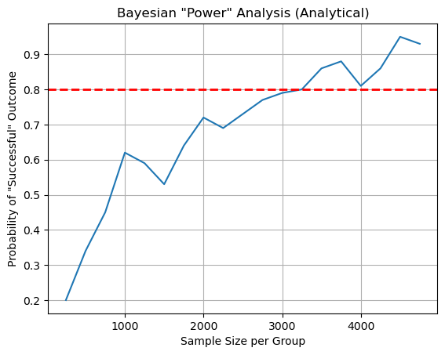
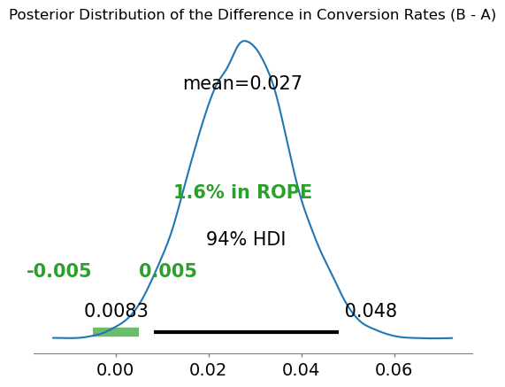

from dataclasses import dataclass
import arviz as az
import numpy as np
import matplotlib.pyplot as pp
from preliz.distributions import beta
#from scipy.stats import beta
from loguru import loggerPower Analysis for Bayesian A/B Testing
Background
A/B testing is an essential approach to inform decision making. The idea is to compare two versions of a webpage, app feature, or even marketing campaign to determine which performs better in terms of a chosen metric - conversion rate, click-through rate, revenue, etc. For frequentists, this is essentially the application in a business setting of Null Hypothesis Significance Testing, NHST. As such concepts like, \(α\), \(p-\text{value}\), power analysis are central to planning and running such experiments. My focus here is on power analysis.
In Frequentist Statistics power analysis is essential for the planning phase. Frequentist power is defined as the probability of correctly rejecting a false null hypothesis, which is equated to the probability of correctly identifyin a true effect. Thus it is used to determine the minimum sample size required for a study to have a reasonable chance (typically 80% or higher) of detecting a statistically significant effect of a given size at a predetermined significance level (alpha, often 0.05). This helps researchers avoid underpowered studies that might fail to detect real effects and informs decisions about resource allocation. The standard definition of frequentist power (the probability of rejecting a false null hypothesis) is framed within this P(D∣H) perspective. It asks, “If the null hypothesis is indeed false (meaning a true effect exists), what is the probability that statistical testing will produce data that leads to rejecting that null hypothesis?”. This is a risky and often wrong approach to take in my opinion due to the incorrect use of probabilily. This is beyond the scope of this post and interested readers are invited to consult Aubrey Clayton’s “Bernoulli’s Fallacy” for a deep dive on this issue. The point is that Bayesian analysis offers a compelling alternative to the frequentist approach for A/B testing, providing more direct and intuitive interpretations of results; no stopping issues, no p-hacking concerns, no corrections to worry about. Instead of focusing on the probability of observing data under a null hypothesis, Bayesian methods yield the probability distribution of the parameters of interest (e.g., the conversion rates of each variant and their difference). This allows for direct statements about the probability that one variant is better than the other, or the probability that the difference exceeds a practically significant threshold. Nevertheless, power analysis can still be important in the Bayesian paradigm, and while it takes on an altered meaning, it does remain essential in experiment planning. Specifically, the goal is to determine the sample size - and therefore adequate resource allocation - to ensure the experiment has a high probability of yielding informative results. Typically, this means assessing the probability of obtaining posterior distributions with sufficient precision (e.g., narrow credible intervals) or the probability that the effect size (the difference between the variants) exceeds a Minimum Detectable Effect (MDE). In practice this means simulating potential outcomes of experiments for a variety of sample sizes and analyzing the resulting posterior distributions.
A simple scenario
Step 1: Define goal and metric(s)
Company X wants to increase the conversion rate on its landing page. To do so a new landing page is proposed. Thus we have * Current landing page; hereafter referred to as A * Proposed landing page; hereafter referred to as B * A single primary metric, conversion rate (number of conversions / total landings )
Obviously this is an oversimplified example but will serve to illustrate the approach.
Step 2: Eliciting prior beliefs
To compute posteriors I need to combine likelihoods obtained with data with priors. Unlike Frequentist settings, Bayesian experiments are not conducted in a vaccum. Instead the paradigm encourages the incorporation of prior knowledge. While it is often the case that data will swamp out priors, there is value in carefully constructing them.
Company X data scientists should therefore base their priors on any relevant existing knowledge. This could include:
Historical Data: If Company X has run similar A/B tests in the past on the same website or for similar features, the results of those tests can provide valuable information for setting priors. For example, if previous versions of the landing page had conversion rates consistently around 4-6%, this could inform the prior for variant A.
Industry Benchmarks: Depending on the industry, there might be typical conversion rate ranges that can inform the priors.
Expert Opinions: Marketing experts or product managers within Company X might have intuitions or expectations about the performance of the new variant B. These subjective beliefs can be formalized into a prior distribution.
A “Skeptical” or Weakly Informative Prior: If Company X has little to no prior information, they might choose a weakly informative prior. This is a prior that doesn’t strongly favor any particular outcome but still provides some regularization.
The outcome is binary, thus the natural likelihood to model the data is the Binomial distribution. There a few distributions that can be used to encode priors. To keep things simple and avoid reaching to my favorite MCMC sampler, I define priors in terms of Beta distributions. A Beta distribution is a conjugate prior to the Binomial, meaning that updating the posterior has a closed form and does not require approximation. The parameters \(α\) and \(β\) of the Beta distribution represent prior “successes” and “failures,” respectively. A higher \(α\) relative to \(β\) shifts the distribution towards higher values, and vice versa. The sum of \(α\) and $β influences the “strength” or concentration of the prior belief (higher sum means more certainty). Below I show what this might look like.
@dataclass
class BetaPrior:
α: float
β: floatHere I assume a conversion of 5% for variant \(A\), so that is what I’ll use for \(A\)’s prior. Without any additional information and to keep things simple a reasonable prior for \(A\) is therefore \(prior_A=Beta(α=5, β=95)\). I also expect a lift of 1% from variant B so an acceptable prior is \(prior_B=Beta(α=6, β=94)\).
# Define Priors
prior_A = BetaPrior(α=5, β=95)
prior_B = BetaPrior(α=6, β=94)# Define random variables for variants 'A' and 'B'
rv_A = beta.Beta(prior_A.α, prior_A.β)
rv_B = beta.Beta(prior_B.α, prior_B.β)rv_A.alpha += 5rv_A.alpha10.0f, ax = pp.subplots()
rv_A.plot_pdf(ax=ax, legend='A')
rv_B.plot_pdf(ax=ax, color='k', legend='B')
ax.set_title('PDF -- Expected Conversion Priors')
ax.set_xlabel('Conversion Rate')
ax.set_ylabel('Density');
Updating the Beta prior to get the posterior is trivial as it boils down to adding new successes and new failures to the existing \(α\) and \(β\) parameters, respectively. The function run_analytical_ab_test generates the data based on the true conversion rates (A is known)
def run_analytical_ab_test(n_A, n_B, true_p_A, true_p_B, prior_α_A, prior_β_A, prior_α_B, prior_β_B):
"""Runs a simulated A/B test and returns the parameters of the posterior distributions."""
# Simulate observed data
conversions_A = np.random.binomial(n_A, true_p_A)
conversions_B = np.random.binomial(n_B, true_p_B)
# Update posterior parameters analytically
posterior_α_A = prior_α_A + conversions_A
posterior_β_A = prior_β_A + n_A - conversions_A
posterior_α_B = prior_α_B + conversions_B
posterior_β_B = prior_β_B + n_B - conversions_B
return (posterior_α_A, posterior_β_A), (posterior_α_B, posterior_β_B)Step 3: Defining the Minimum Detectable Effect (MDE)
Similar to frequentist A/B testing, it’s important to consider the smallest practically significant difference in conversion rates that Company X would want to detect. This is the Minimum Detectable Effect (MDE). Note the actual effect would need to be greater, and in fact the greater actual effect relative to the MDE, the smaller the number of samples needed to detect.
Let’s assume Company X is interested in detecting an absolute difference of at least 1% in the conversion rate. If the baseline conversion rate is around 5%, they’d want to be able to reliably detect if variant B increases it to 6% or more.
Step 4: Prospective Sample Size Planning (Bayesian “Power Analysis”)
Instead of calculating the probability of rejecting a null hypothesis, in a Bayesian context, we focus on the probability of achieving a desired level of certainty about the difference in conversion rates. This often involves simulating potential outcomes for different sample sizes and evaluating the resulting posterior distributions.
We want to determine the sample size that gives us a high probability of:
The posterior probability that variant B is better than variant A (i.e., conversion rate of B > conversion rate of A) being above a certain threshold (e.g., 95%). The posterior probability that the difference in conversion rates (B - A) is greater than the MDE being above a certain threshold (e.g., 80%).
def evaluate_analytical_power(
posterior_params_A, posterior_params_B, mde=0.01, prob_threshold=0.95,
diff_threshold=0.8, n_samples=10000, verbose=False):
"""Evaluates the probability of a "successful" outcome based on the posterior samples."""
# Generate random samples from the posterior distributions
posterior_A_samples = beta.rvs(posterior_params_A[0], posterior_params_A[1], size=n_samples)
posterior_B_samples = beta.rvs(posterior_params_B[0], posterior_params_B[1], size=n_samples)
# Calculate the difference in conversion rates
posterior_diff = posterior_B_samples - posterior_A_samples
prob_B_better_than_A = np.mean(posterior_diff > 0)
prob_diff_greater_than_mde = np.mean(posterior_diff > mde)
if verbose:
logger.info(f"Probability (P(p_B > p_A)): {prob_B_better_than_A:.3f}")
logger.info(f"Probability (P(p_B - p_A > {mde:.2f})): {prob_diff_greater_than_mde:.3f}")
return prob_B_better_than_A >= prob_threshold and prob_diff_greater_than_mde >= diff_threshold
def run_analytical_ab_test_2(n_A, n_B, true_p_A, true_p_B, rv_A, rv_B):
"""Runs a simulated A/B test and returns the parameters of the posterior distributions."""
# Simulate observed data
conversions_A = np.random.binomial(n_A, true_p_A)
conversions_B = np.random.binomial(n_B, true_p_B)
# Update posterior parameters analytically
rv_A.alpha += conversions_A
rv_A.beta += (n_A - conversions_A)
rv_B.alpha += conversions_B
rv_B.beta += (n_B - conversions_B)
# Define a range of sample sizes to evaluate
sample_sizes = np.arange(250, 5000, 250)
N_SIMULATIONS = 100 # Number of simulations for each sample size
# Define the MDE
MDE = 0.01
# Assume a baseline conversion rate for A and a true effect for B
BASELINE_CONVERSION_A = 0.05
TRUE_CONVERSION_B = BASELINE_CONVERSION_A + 0.02power_estimates = []
for n in sample_sizes:
successes = 0
for _ in range(N_SIMULATIONS):
run_analytical_ab_test(
n_A=n, n_B=n, true_p_A=baseline_conversion_A, true_p_B=true_conversion_B, prior_A.α, prior_A.β, prior_B.α, prior_B.β
)
if evaluate_analytical_power(rv_A, rv_B, mde=MDE):
successes += 1
power = successes / n_simulations
power_estimates.append(power)
logger.info(f"\nFor sample size n = {n} per group, the probability of a 'successful' outcome is: {power:.3f}")
# Plot the "power" curve
pp.plot(sample_sizes, power_estimates)
pp.xlabel('Sample Size per Group')
pp.ylabel('Probability of "Successful" Outcome')
pp.title('Bayesian "Power" Analysis (Analytical)')
pp.grid(True)
pp.axhline(0.8, color='r', ls='--', lw=2)# Define a range of sample sizes to evaluate
sample_sizes = np.arange(250, 5000, 250)
n_simulations = 100 # Number of simulations for each sample size
# Define the MDE
MDE = 0.01
# Assume a baseline conversion rate for A and a true effect for B
baseline_conversion_A = 0.05
true_conversion_B = baseline_conversion_A + 0.02
power_estimates = []
for n in sample_sizes:
successes = 0
for _ in range(n_simulations):
posterior_params_A, posterior_params_B = run_analytical_ab_test(
n, n, baseline_conversion_A, true_conversion_B, prior_A.α, prior_A.β, prior_B.α, prior_B.β
)
if evaluate_analytical_power(posterior_params_A, posterior_params_B, mde=MDE):
successes += 1
power = successes / n_simulations
power_estimates.append(power)
logger.info(f"\nFor sample size n = {n} per group, the probability of a 'successful' outcome is: {power:.3f}")
# Plot the "power" curve
pp.plot(sample_sizes, power_estimates)
pp.xlabel('Sample Size per Group')
pp.ylabel('Probability of "Successful" Outcome')
pp.title('Bayesian "Power" Analysis (Analytical)')
pp.grid(True)
pp.axhline(0.8, color='r', ls='--', lw=2)2025-05-31 09:56:18.953 | INFO | __main__:evaluate_analytical_power:13 - Probability (P(p_B > p_A)): 0.946
2025-05-31 09:56:18.954 | INFO | __main__:evaluate_analytical_power:14 - Probability (P(p_B - p_A > 0.01)): 0.856
2025-05-31 09:56:18.956 | INFO | __main__:evaluate_analytical_power:13 - Probability (P(p_B > p_A)): 0.911
2025-05-31 09:56:18.956 | INFO | __main__:evaluate_analytical_power:14 - Probability (P(p_B - p_A > 0.01)): 0.772
2025-05-31 09:56:18.960 | INFO | __main__:evaluate_analytical_power:13 - Probability (P(p_B > p_A)): 0.668
2025-05-31 09:56:18.961 | INFO | __main__:evaluate_analytical_power:14 - Probability (P(p_B - p_A > 0.01)): 0.474
2025-05-31 09:56:18.963 | INFO | __main__:evaluate_analytical_power:13 - Probability (P(p_B > p_A)): 0.565
2025-05-31 09:56:18.963 | INFO | __main__:evaluate_analytical_power:14 - Probability (P(p_B - p_A > 0.01)): 0.358
2025-05-31 09:56:18.965 | INFO | __main__:evaluate_analytical_power:13 - Probability (P(p_B > p_A)): 0.919
2025-05-31 09:56:18.966 | INFO | __main__:evaluate_analytical_power:14 - Probability (P(p_B - p_A > 0.01)): 0.807
2025-05-31 09:56:18.968 | INFO | __main__:evaluate_analytical_power:13 - Probability (P(p_B > p_A)): 0.998
2025-05-31 09:56:18.968 | INFO | __main__:evaluate_analytical_power:14 - Probability (P(p_B - p_A > 0.01)): 0.992
2025-05-31 09:56:18.971 | INFO | __main__:evaluate_analytical_power:13 - Probability (P(p_B > p_A)): 0.830
2025-05-31 09:56:18.971 | INFO | __main__:evaluate_analytical_power:14 - Probability (P(p_B - p_A > 0.01)): 0.656
2025-05-31 09:56:18.973 | INFO | __main__:evaluate_analytical_power:13 - Probability (P(p_B > p_A)): 0.684
2025-05-31 09:56:18.973 | INFO | __main__:evaluate_analytical_power:14 - Probability (P(p_B - p_A > 0.01)): 0.470
2025-05-31 09:56:18.975 | INFO | __main__:evaluate_analytical_power:13 - Probability (P(p_B > p_A)): 0.880
2025-05-31 09:56:18.975 | INFO | __main__:evaluate_analytical_power:14 - Probability (P(p_B - p_A > 0.01)): 0.727
2025-05-31 09:56:18.977 | INFO | __main__:evaluate_analytical_power:13 - Probability (P(p_B > p_A)): 0.500
2025-05-31 09:56:18.977 | INFO | __main__:evaluate_analytical_power:14 - Probability (P(p_B - p_A > 0.01)): 0.260
2025-05-31 09:56:18.979 | INFO | __main__:evaluate_analytical_power:13 - Probability (P(p_B > p_A)): 0.571
2025-05-31 09:56:18.979 | INFO | __main__:evaluate_analytical_power:14 - Probability (P(p_B - p_A > 0.01)): 0.351
2025-05-31 09:56:18.981 | INFO | __main__:evaluate_analytical_power:13 - Probability (P(p_B > p_A)): 0.757
2025-05-31 09:56:18.981 | INFO | __main__:evaluate_analytical_power:14 - Probability (P(p_B - p_A > 0.01)): 0.536
2025-05-31 09:56:18.983 | INFO | __main__:evaluate_analytical_power:13 - Probability (P(p_B > p_A)): 0.776
2025-05-31 09:56:18.983 | INFO | __main__:evaluate_analytical_power:14 - Probability (P(p_B - p_A > 0.01)): 0.587
2025-05-31 09:56:18.985 | INFO | __main__:evaluate_analytical_power:13 - Probability (P(p_B > p_A)): 0.747
2025-05-31 09:56:18.985 | INFO | __main__:evaluate_analytical_power:14 - Probability (P(p_B - p_A > 0.01)): 0.531
2025-05-31 09:56:18.987 | INFO | __main__:evaluate_analytical_power:13 - Probability (P(p_B > p_A)): 0.747
2025-05-31 09:56:18.987 | INFO | __main__:evaluate_analytical_power:14 - Probability (P(p_B - p_A > 0.01)): 0.531
2025-05-31 09:56:18.989 | INFO | __main__:evaluate_analytical_power:13 - Probability (P(p_B > p_A)): 0.942
2025-05-31 09:56:18.989 | INFO | __main__:evaluate_analytical_power:14 - Probability (P(p_B - p_A > 0.01)): 0.858
2025-05-31 09:56:18.991 | INFO | __main__:evaluate_analytical_power:13 - Probability (P(p_B > p_A)): 0.988
2025-05-31 09:56:18.991 | INFO | __main__:evaluate_analytical_power:14 - Probability (P(p_B - p_A > 0.01)): 0.956
2025-05-31 09:56:18.992 | INFO | __main__:evaluate_analytical_power:13 - Probability (P(p_B > p_A)): 0.383
2025-05-31 09:56:18.992 | INFO | __main__:evaluate_analytical_power:14 - Probability (P(p_B - p_A > 0.01)): 0.200
2025-05-31 09:56:18.994 | INFO | __main__:evaluate_analytical_power:13 - Probability (P(p_B > p_A)): 0.747
2025-05-31 09:56:18.994 | INFO | __main__:evaluate_analytical_power:14 - Probability (P(p_B - p_A > 0.01)): 0.532
2025-05-31 09:56:18.996 | INFO | __main__:evaluate_analytical_power:13 - Probability (P(p_B > p_A)): 0.824
2025-05-31 09:56:18.996 | INFO | __main__:evaluate_analytical_power:14 - Probability (P(p_B - p_A > 0.01)): 0.655
2025-05-31 09:56:18.998 | INFO | __main__:evaluate_analytical_power:13 - Probability (P(p_B > p_A)): 0.881
2025-05-31 09:56:18.998 | INFO | __main__:evaluate_analytical_power:14 - Probability (P(p_B - p_A > 0.01)): 0.719
2025-05-31 09:56:19.000 | INFO | __main__:evaluate_analytical_power:13 - Probability (P(p_B > p_A)): 0.720
2025-05-31 09:56:19.000 | INFO | __main__:evaluate_analytical_power:14 - Probability (P(p_B - p_A > 0.01)): 0.532
2025-05-31 09:56:19.002 | INFO | __main__:evaluate_analytical_power:13 - Probability (P(p_B > p_A)): 0.849
2025-05-31 09:56:19.002 | INFO | __main__:evaluate_analytical_power:14 - Probability (P(p_B - p_A > 0.01)): 0.672
2025-05-31 09:56:19.004 | INFO | __main__:evaluate_analytical_power:13 - Probability (P(p_B > p_A)): 0.761
2025-05-31 09:56:19.004 | INFO | __main__:evaluate_analytical_power:14 - Probability (P(p_B - p_A > 0.01)): 0.529
2025-05-31 09:56:19.006 | INFO | __main__:evaluate_analytical_power:13 - Probability (P(p_B > p_A)): 0.896
2025-05-31 09:56:19.006 | INFO | __main__:evaluate_analytical_power:14 - Probability (P(p_B - p_A > 0.01)): 0.763
2025-05-31 09:56:19.007 | INFO | __main__:evaluate_analytical_power:13 - Probability (P(p_B > p_A)): 0.996
2025-05-31 09:56:19.007 | INFO | __main__:evaluate_analytical_power:14 - Probability (P(p_B - p_A > 0.01)): 0.980
2025-05-31 09:56:19.009 | INFO | __main__:evaluate_analytical_power:13 - Probability (P(p_B > p_A)): 0.986
2025-05-31 09:56:19.009 | INFO | __main__:evaluate_analytical_power:14 - Probability (P(p_B - p_A > 0.01)): 0.952
2025-05-31 09:56:19.011 | INFO | __main__:evaluate_analytical_power:13 - Probability (P(p_B > p_A)): 0.867
2025-05-31 09:56:19.011 | INFO | __main__:evaluate_analytical_power:14 - Probability (P(p_B - p_A > 0.01)): 0.713
2025-05-31 09:56:19.012 | INFO | __main__:evaluate_analytical_power:13 - Probability (P(p_B > p_A)): 0.880
2025-05-31 09:56:19.012 | INFO | __main__:evaluate_analytical_power:14 - Probability (P(p_B - p_A > 0.01)): 0.744
2025-05-31 09:56:19.014 | INFO | __main__:evaluate_analytical_power:13 - Probability (P(p_B > p_A)): 0.992
2025-05-31 09:56:19.014 | INFO | __main__:evaluate_analytical_power:14 - Probability (P(p_B - p_A > 0.01)): 0.964
2025-05-31 09:56:19.032 | INFO | __main__:evaluate_analytical_power:13 - Probability (P(p_B > p_A)): 0.800
2025-05-31 09:56:19.043 | INFO | __main__:evaluate_analytical_power:14 - Probability (P(p_B - p_A > 0.01)): 0.597
2025-05-31 09:56:19.054 | INFO | __main__:evaluate_analytical_power:13 - Probability (P(p_B > p_A)): 0.696
2025-05-31 09:56:19.054 | INFO | __main__:evaluate_analytical_power:14 - Probability (P(p_B - p_A > 0.01)): 0.470
2025-05-31 09:56:19.056 | INFO | __main__:evaluate_analytical_power:13 - Probability (P(p_B > p_A)): 0.994
2025-05-31 09:56:19.056 | INFO | __main__:evaluate_analytical_power:14 - Probability (P(p_B - p_A > 0.01)): 0.971
2025-05-31 09:56:19.058 | INFO | __main__:evaluate_analytical_power:13 - Probability (P(p_B > p_A)): 0.710
2025-05-31 09:56:19.058 | INFO | __main__:evaluate_analytical_power:14 - Probability (P(p_B - p_A > 0.01)): 0.466
2025-05-31 09:56:19.064 | INFO | __main__:evaluate_analytical_power:13 - Probability (P(p_B > p_A)): 0.943
2025-05-31 09:56:19.065 | INFO | __main__:evaluate_analytical_power:14 - Probability (P(p_B - p_A > 0.01)): 0.847
2025-05-31 09:56:19.069 | INFO | __main__:evaluate_analytical_power:13 - Probability (P(p_B > p_A)): 0.678
2025-05-31 09:56:19.070 | INFO | __main__:evaluate_analytical_power:14 - Probability (P(p_B - p_A > 0.01)): 0.469
2025-05-31 09:56:19.071 | INFO | __main__:evaluate_analytical_power:13 - Probability (P(p_B > p_A)): 0.887
2025-05-31 09:56:19.071 | INFO | __main__:evaluate_analytical_power:14 - Probability (P(p_B - p_A > 0.01)): 0.751
2025-05-31 09:56:19.073 | INFO | __main__:evaluate_analytical_power:13 - Probability (P(p_B > p_A)): 0.905
2025-05-31 09:56:19.074 | INFO | __main__:evaluate_analytical_power:14 - Probability (P(p_B - p_A > 0.01)): 0.771
2025-05-31 09:56:19.075 | INFO | __main__:evaluate_analytical_power:13 - Probability (P(p_B > p_A)): 0.905
2025-05-31 09:56:19.075 | INFO | __main__:evaluate_analytical_power:14 - Probability (P(p_B - p_A > 0.01)): 0.770
2025-05-31 09:56:19.077 | INFO | __main__:evaluate_analytical_power:13 - Probability (P(p_B > p_A)): 0.870
2025-05-31 09:56:19.077 | INFO | __main__:evaluate_analytical_power:14 - Probability (P(p_B - p_A > 0.01)): 0.707
2025-05-31 09:56:19.078 | INFO | __main__:evaluate_analytical_power:13 - Probability (P(p_B > p_A)): 0.933
2025-05-31 09:56:19.079 | INFO | __main__:evaluate_analytical_power:14 - Probability (P(p_B - p_A > 0.01)): 0.821
2025-05-31 09:56:19.080 | INFO | __main__:evaluate_analytical_power:13 - Probability (P(p_B > p_A)): 0.782
2025-05-31 09:56:19.080 | INFO | __main__:evaluate_analytical_power:14 - Probability (P(p_B - p_A > 0.01)): 0.590
2025-05-31 09:56:19.082 | INFO | __main__:evaluate_analytical_power:13 - Probability (P(p_B > p_A)): 0.638
2025-05-31 09:56:19.082 | INFO | __main__:evaluate_analytical_power:14 - Probability (P(p_B - p_A > 0.01)): 0.404
2025-05-31 09:56:19.083 | INFO | __main__:evaluate_analytical_power:13 - Probability (P(p_B > p_A)): 0.831
2025-05-31 09:56:19.084 | INFO | __main__:evaluate_analytical_power:14 - Probability (P(p_B - p_A > 0.01)): 0.650
2025-05-31 09:56:19.085 | INFO | __main__:evaluate_analytical_power:13 - Probability (P(p_B > p_A)): 0.733
2025-05-31 09:56:19.085 | INFO | __main__:evaluate_analytical_power:14 - Probability (P(p_B - p_A > 0.01)): 0.523
2025-05-31 09:56:19.087 | INFO | __main__:evaluate_analytical_power:13 - Probability (P(p_B > p_A)): 0.999
2025-05-31 09:56:19.088 | INFO | __main__:evaluate_analytical_power:14 - Probability (P(p_B - p_A > 0.01)): 0.995
2025-05-31 09:56:19.090 | INFO | __main__:evaluate_analytical_power:13 - Probability (P(p_B > p_A)): 0.967
2025-05-31 09:56:19.090 | INFO | __main__:evaluate_analytical_power:14 - Probability (P(p_B - p_A > 0.01)): 0.883
2025-05-31 09:56:19.091 | INFO | __main__:evaluate_analytical_power:13 - Probability (P(p_B > p_A)): 0.970
2025-05-31 09:56:19.091 | INFO | __main__:evaluate_analytical_power:14 - Probability (P(p_B - p_A > 0.01)): 0.899
2025-05-31 09:56:19.093 | INFO | __main__:evaluate_analytical_power:13 - Probability (P(p_B > p_A)): 0.501
2025-05-31 09:56:19.093 | INFO | __main__:evaluate_analytical_power:14 - Probability (P(p_B - p_A > 0.01)): 0.275
2025-05-31 09:56:19.113 | INFO | __main__:evaluate_analytical_power:13 - Probability (P(p_B > p_A)): 0.360
2025-05-31 09:56:19.119 | INFO | __main__:evaluate_analytical_power:14 - Probability (P(p_B - p_A > 0.01)): 0.175
2025-05-31 09:56:19.121 | INFO | __main__:evaluate_analytical_power:13 - Probability (P(p_B > p_A)): 0.997
2025-05-31 09:56:19.121 | INFO | __main__:evaluate_analytical_power:14 - Probability (P(p_B - p_A > 0.01)): 0.988
2025-05-31 09:56:19.123 | INFO | __main__:evaluate_analytical_power:13 - Probability (P(p_B > p_A)): 0.488
2025-05-31 09:56:19.123 | INFO | __main__:evaluate_analytical_power:14 - Probability (P(p_B - p_A > 0.01)): 0.280
2025-05-31 09:56:19.125 | INFO | __main__:evaluate_analytical_power:13 - Probability (P(p_B > p_A)): 0.934
2025-05-31 09:56:19.126 | INFO | __main__:evaluate_analytical_power:14 - Probability (P(p_B - p_A > 0.01)): 0.822
2025-05-31 09:56:19.130 | INFO | __main__:evaluate_analytical_power:13 - Probability (P(p_B > p_A)): 0.962
2025-05-31 09:56:19.131 | INFO | __main__:evaluate_analytical_power:14 - Probability (P(p_B - p_A > 0.01)): 0.892
2025-05-31 09:56:19.134 | INFO | __main__:evaluate_analytical_power:13 - Probability (P(p_B > p_A)): 0.944
2025-05-31 09:56:19.134 | INFO | __main__:evaluate_analytical_power:14 - Probability (P(p_B - p_A > 0.01)): 0.848
2025-05-31 09:56:19.136 | INFO | __main__:evaluate_analytical_power:13 - Probability (P(p_B > p_A)): 0.785
2025-05-31 09:56:19.136 | INFO | __main__:evaluate_analytical_power:14 - Probability (P(p_B - p_A > 0.01)): 0.603
2025-05-31 09:56:19.137 | INFO | __main__:evaluate_analytical_power:13 - Probability (P(p_B > p_A)): 0.833
2025-05-31 09:56:19.138 | INFO | __main__:evaluate_analytical_power:14 - Probability (P(p_B - p_A > 0.01)): 0.613
2025-05-31 09:56:19.140 | INFO | __main__:evaluate_analytical_power:13 - Probability (P(p_B > p_A)): 0.999
2025-05-31 09:56:19.140 | INFO | __main__:evaluate_analytical_power:14 - Probability (P(p_B - p_A > 0.01)): 0.998
2025-05-31 09:56:19.142 | INFO | __main__:evaluate_analytical_power:13 - Probability (P(p_B > p_A)): 0.873
2025-05-31 09:56:19.142 | INFO | __main__:evaluate_analytical_power:14 - Probability (P(p_B - p_A > 0.01)): 0.714
2025-05-31 09:56:19.144 | INFO | __main__:evaluate_analytical_power:13 - Probability (P(p_B > p_A)): 0.574
2025-05-31 09:56:19.144 | INFO | __main__:evaluate_analytical_power:14 - Probability (P(p_B - p_A > 0.01)): 0.327
2025-05-31 09:56:19.146 | INFO | __main__:evaluate_analytical_power:13 - Probability (P(p_B > p_A)): 0.121
2025-05-31 09:56:19.146 | INFO | __main__:evaluate_analytical_power:14 - Probability (P(p_B - p_A > 0.01)): 0.040
2025-05-31 09:56:19.148 | INFO | __main__:evaluate_analytical_power:13 - Probability (P(p_B > p_A)): 0.279
2025-05-31 09:56:19.148 | INFO | __main__:evaluate_analytical_power:14 - Probability (P(p_B - p_A > 0.01)): 0.130
2025-05-31 09:56:19.149 | INFO | __main__:evaluate_analytical_power:13 - Probability (P(p_B > p_A)): 0.500
2025-05-31 09:56:19.149 | INFO | __main__:evaluate_analytical_power:14 - Probability (P(p_B - p_A > 0.01)): 0.278
2025-05-31 09:56:19.151 | INFO | __main__:evaluate_analytical_power:13 - Probability (P(p_B > p_A)): 0.563
2025-05-31 09:56:19.151 | INFO | __main__:evaluate_analytical_power:14 - Probability (P(p_B - p_A > 0.01)): 0.341
2025-05-31 09:56:19.153 | INFO | __main__:evaluate_analytical_power:13 - Probability (P(p_B > p_A)): 0.635
2025-05-31 09:56:19.153 | INFO | __main__:evaluate_analytical_power:14 - Probability (P(p_B - p_A > 0.01)): 0.396
2025-05-31 09:56:19.154 | INFO | __main__:evaluate_analytical_power:13 - Probability (P(p_B > p_A)): 0.929
2025-05-31 09:56:19.155 | INFO | __main__:evaluate_analytical_power:14 - Probability (P(p_B - p_A > 0.01)): 0.793
2025-05-31 09:56:19.157 | INFO | __main__:evaluate_analytical_power:13 - Probability (P(p_B > p_A)): 0.899
2025-05-31 09:56:19.157 | INFO | __main__:evaluate_analytical_power:14 - Probability (P(p_B - p_A > 0.01)): 0.762
2025-05-31 09:56:19.159 | INFO | __main__:evaluate_analytical_power:13 - Probability (P(p_B > p_A)): 0.853
2025-05-31 09:56:19.160 | INFO | __main__:evaluate_analytical_power:14 - Probability (P(p_B - p_A > 0.01)): 0.691
2025-05-31 09:56:19.161 | INFO | __main__:evaluate_analytical_power:13 - Probability (P(p_B > p_A)): 0.684
2025-05-31 09:56:19.161 | INFO | __main__:evaluate_analytical_power:14 - Probability (P(p_B - p_A > 0.01)): 0.465
2025-05-31 09:56:19.163 | INFO | __main__:evaluate_analytical_power:13 - Probability (P(p_B > p_A)): 0.915
2025-05-31 09:56:19.164 | INFO | __main__:evaluate_analytical_power:14 - Probability (P(p_B - p_A > 0.01)): 0.798
2025-05-31 09:56:19.165 | INFO | __main__:evaluate_analytical_power:13 - Probability (P(p_B > p_A)): 0.989
2025-05-31 09:56:19.165 | INFO | __main__:evaluate_analytical_power:14 - Probability (P(p_B - p_A > 0.01)): 0.957
2025-05-31 09:56:19.167 | INFO | __main__:evaluate_analytical_power:13 - Probability (P(p_B > p_A)): 0.964
2025-05-31 09:56:19.167 | INFO | __main__:evaluate_analytical_power:14 - Probability (P(p_B - p_A > 0.01)): 0.901
2025-05-31 09:56:19.168 | INFO | __main__:evaluate_analytical_power:13 - Probability (P(p_B > p_A)): 0.947
2025-05-31 09:56:19.168 | INFO | __main__:evaluate_analytical_power:14 - Probability (P(p_B - p_A > 0.01)): 0.850
2025-05-31 09:56:19.170 | INFO | __main__:evaluate_analytical_power:13 - Probability (P(p_B > p_A)): 0.428
2025-05-31 09:56:19.170 | INFO | __main__:evaluate_analytical_power:14 - Probability (P(p_B - p_A > 0.01)): 0.220
2025-05-31 09:56:19.171 | INFO | __main__:evaluate_analytical_power:13 - Probability (P(p_B > p_A)): 0.988
2025-05-31 09:56:19.171 | INFO | __main__:evaluate_analytical_power:14 - Probability (P(p_B - p_A > 0.01)): 0.960
2025-05-31 09:56:19.173 | INFO | __main__:evaluate_analytical_power:13 - Probability (P(p_B > p_A)): 0.995
2025-05-31 09:56:19.173 | INFO | __main__:evaluate_analytical_power:14 - Probability (P(p_B - p_A > 0.01)): 0.980
2025-05-31 09:56:19.176 | INFO | __main__:evaluate_analytical_power:13 - Probability (P(p_B > p_A)): 0.795
2025-05-31 09:56:19.176 | INFO | __main__:evaluate_analytical_power:14 - Probability (P(p_B - p_A > 0.01)): 0.589
2025-05-31 09:56:19.178 | INFO | __main__:evaluate_analytical_power:13 - Probability (P(p_B > p_A)): 0.431
2025-05-31 09:56:19.178 | INFO | __main__:evaluate_analytical_power:14 - Probability (P(p_B - p_A > 0.01)): 0.221
2025-05-31 09:56:19.180 | INFO | __main__:evaluate_analytical_power:13 - Probability (P(p_B > p_A)): 0.421
2025-05-31 09:56:19.180 | INFO | __main__:evaluate_analytical_power:14 - Probability (P(p_B - p_A > 0.01)): 0.200
2025-05-31 09:56:19.181 | INFO | __main__:evaluate_analytical_power:13 - Probability (P(p_B > p_A)): 0.916
2025-05-31 09:56:19.182 | INFO | __main__:evaluate_analytical_power:14 - Probability (P(p_B - p_A > 0.01)): 0.798
2025-05-31 09:56:19.184 | INFO | __main__:evaluate_analytical_power:13 - Probability (P(p_B > p_A)): 1.000
2025-05-31 09:56:19.184 | INFO | __main__:evaluate_analytical_power:14 - Probability (P(p_B - p_A > 0.01)): 1.000
2025-05-31 09:56:19.186 | INFO | __main__:evaluate_analytical_power:13 - Probability (P(p_B > p_A)): 0.979
2025-05-31 09:56:19.186 | INFO | __main__:evaluate_analytical_power:14 - Probability (P(p_B - p_A > 0.01)): 0.928
2025-05-31 09:56:19.188 | INFO | __main__:evaluate_analytical_power:13 - Probability (P(p_B > p_A)): 0.168
2025-05-31 09:56:19.188 | INFO | __main__:evaluate_analytical_power:14 - Probability (P(p_B - p_A > 0.01)): 0.065
2025-05-31 09:56:19.189 | INFO | __main__:evaluate_analytical_power:13 - Probability (P(p_B > p_A)): 0.924
2025-05-31 09:56:19.190 | INFO | __main__:evaluate_analytical_power:14 - Probability (P(p_B - p_A > 0.01)): 0.827
2025-05-31 09:56:19.191 | INFO | __main__:evaluate_analytical_power:13 - Probability (P(p_B > p_A)): 0.909
2025-05-31 09:56:19.191 | INFO | __main__:evaluate_analytical_power:14 - Probability (P(p_B - p_A > 0.01)): 0.770
2025-05-31 09:56:19.193 | INFO | __main__:evaluate_analytical_power:13 - Probability (P(p_B > p_A)): 0.917
2025-05-31 09:56:19.193 | INFO | __main__:evaluate_analytical_power:14 - Probability (P(p_B - p_A > 0.01)): 0.800
2025-05-31 09:56:19.194 | INFO | __main__:evaluate_analytical_power:13 - Probability (P(p_B > p_A)): 0.806
2025-05-31 09:56:19.195 | INFO | __main__:evaluate_analytical_power:14 - Probability (P(p_B - p_A > 0.01)): 0.602
2025-05-31 09:56:19.196 | INFO | __main__:evaluate_analytical_power:13 - Probability (P(p_B > p_A)): 0.910
2025-05-31 09:56:19.196 | INFO | __main__:evaluate_analytical_power:14 - Probability (P(p_B - p_A > 0.01)): 0.770
2025-05-31 09:56:19.198 | INFO | __main__:evaluate_analytical_power:13 - Probability (P(p_B > p_A)): 0.838
2025-05-31 09:56:19.198 | INFO | __main__:evaluate_analytical_power:14 - Probability (P(p_B - p_A > 0.01)): 0.660
2025-05-31 09:56:19.199 | INFO | __main__:evaluate_analytical_power:13 - Probability (P(p_B > p_A)): 0.240
2025-05-31 09:56:19.199 | INFO | __main__:evaluate_analytical_power:14 - Probability (P(p_B - p_A > 0.01)): 0.091
2025-05-31 09:56:19.201 | INFO | __main__:evaluate_analytical_power:13 - Probability (P(p_B > p_A)): 0.683
2025-05-31 09:56:19.201 | INFO | __main__:evaluate_analytical_power:14 - Probability (P(p_B - p_A > 0.01)): 0.465
2025-05-31 09:56:19.202 | INFO | __main__:evaluate_analytical_power:13 - Probability (P(p_B > p_A)): 0.989
2025-05-31 09:56:19.203 | INFO | __main__:evaluate_analytical_power:14 - Probability (P(p_B - p_A > 0.01)): 0.962
2025-05-31 09:56:19.204 | INFO | __main__:evaluate_analytical_power:13 - Probability (P(p_B > p_A)): 0.742
2025-05-31 09:56:19.204 | INFO | __main__:evaluate_analytical_power:14 - Probability (P(p_B - p_A > 0.01)): 0.529
2025-05-31 09:56:19.206 | INFO | __main__:evaluate_analytical_power:13 - Probability (P(p_B > p_A)): 0.852
2025-05-31 09:56:19.206 | INFO | __main__:evaluate_analytical_power:14 - Probability (P(p_B - p_A > 0.01)): 0.670
2025-05-31 09:56:19.209 | INFO | __main__:evaluate_analytical_power:13 - Probability (P(p_B > p_A)): 0.928
2025-05-31 09:56:19.209 | INFO | __main__:evaluate_analytical_power:14 - Probability (P(p_B - p_A > 0.01)): 0.810
2025-05-31 09:56:19.228 | INFO | __main__:evaluate_analytical_power:13 - Probability (P(p_B > p_A)): 0.958
2025-05-31 09:56:19.248 | INFO | __main__:evaluate_analytical_power:14 - Probability (P(p_B - p_A > 0.01)): 0.877
2025-05-31 09:56:19.251 | INFO | __main__:evaluate_analytical_power:13 - Probability (P(p_B > p_A)): 0.877
2025-05-31 09:56:19.251 | INFO | __main__:evaluate_analytical_power:14 - Probability (P(p_B - p_A > 0.01)): 0.716
2025-05-31 09:56:19.253 | INFO | __main__:evaluate_analytical_power:13 - Probability (P(p_B > p_A)): 0.877
2025-05-31 09:56:19.253 | INFO | __main__:evaluate_analytical_power:14 - Probability (P(p_B - p_A > 0.01)): 0.738
2025-05-31 09:56:19.261 | INFO | __main__:evaluate_analytical_power:13 - Probability (P(p_B > p_A)): 0.683
2025-05-31 09:56:19.261 | INFO | __main__:evaluate_analytical_power:14 - Probability (P(p_B - p_A > 0.01)): 0.466
2025-05-31 09:56:19.264 | INFO | __main__:evaluate_analytical_power:13 - Probability (P(p_B > p_A)): 0.560
2025-05-31 09:56:19.264 | INFO | __main__:evaluate_analytical_power:14 - Probability (P(p_B - p_A > 0.01)): 0.351
2025-05-31 09:56:19.264 | INFO | __main__:<module>:22 -
For sample size n = 250 per group, the probability of a 'successful' outcome is: 0.200
2025-05-31 09:56:19.267 | INFO | __main__:evaluate_analytical_power:13 - Probability (P(p_B > p_A)): 0.690
2025-05-31 09:56:19.267 | INFO | __main__:evaluate_analytical_power:14 - Probability (P(p_B - p_A > 0.01)): 0.396
2025-05-31 09:56:19.269 | INFO | __main__:evaluate_analytical_power:13 - Probability (P(p_B > p_A)): 0.774
2025-05-31 09:56:19.269 | INFO | __main__:evaluate_analytical_power:14 - Probability (P(p_B - p_A > 0.01)): 0.496
2025-05-31 09:56:19.271 | INFO | __main__:evaluate_analytical_power:13 - Probability (P(p_B > p_A)): 0.508
2025-05-31 09:56:19.271 | INFO | __main__:evaluate_analytical_power:14 - Probability (P(p_B - p_A > 0.01)): 0.218
2025-05-31 09:56:19.273 | INFO | __main__:evaluate_analytical_power:13 - Probability (P(p_B > p_A)): 0.257
2025-05-31 09:56:19.273 | INFO | __main__:evaluate_analytical_power:14 - Probability (P(p_B - p_A > 0.01)): 0.075
2025-05-31 09:56:19.289 | INFO | __main__:evaluate_analytical_power:13 - Probability (P(p_B > p_A)): 0.896
2025-05-31 09:56:19.289 | INFO | __main__:evaluate_analytical_power:14 - Probability (P(p_B - p_A > 0.01)): 0.684
2025-05-31 09:56:19.298 | INFO | __main__:evaluate_analytical_power:13 - Probability (P(p_B > p_A)): 0.942
2025-05-31 09:56:19.300 | INFO | __main__:evaluate_analytical_power:14 - Probability (P(p_B - p_A > 0.01)): 0.803
2025-05-31 09:56:19.302 | INFO | __main__:evaluate_analytical_power:13 - Probability (P(p_B > p_A)): 0.806
2025-05-31 09:56:19.303 | INFO | __main__:evaluate_analytical_power:14 - Probability (P(p_B - p_A > 0.01)): 0.548
2025-05-31 09:56:19.305 | INFO | __main__:evaluate_analytical_power:13 - Probability (P(p_B > p_A)): 1.000
2025-05-31 09:56:19.306 | INFO | __main__:evaluate_analytical_power:14 - Probability (P(p_B - p_A > 0.01)): 0.997
2025-05-31 09:56:19.308 | INFO | __main__:evaluate_analytical_power:13 - Probability (P(p_B > p_A)): 0.961
2025-05-31 09:56:19.308 | INFO | __main__:evaluate_analytical_power:14 - Probability (P(p_B - p_A > 0.01)): 0.855
2025-05-31 09:56:19.309 | INFO | __main__:evaluate_analytical_power:13 - Probability (P(p_B > p_A)): 0.832
2025-05-31 09:56:19.310 | INFO | __main__:evaluate_analytical_power:14 - Probability (P(p_B - p_A > 0.01)): 0.594
2025-05-31 09:56:19.312 | INFO | __main__:evaluate_analytical_power:13 - Probability (P(p_B > p_A)): 0.494
2025-05-31 09:56:19.312 | INFO | __main__:evaluate_analytical_power:14 - Probability (P(p_B - p_A > 0.01)): 0.232
2025-05-31 09:56:19.314 | INFO | __main__:evaluate_analytical_power:13 - Probability (P(p_B > p_A)): 0.654
2025-05-31 09:56:19.314 | INFO | __main__:evaluate_analytical_power:14 - Probability (P(p_B - p_A > 0.01)): 0.346
2025-05-31 09:56:19.316 | INFO | __main__:evaluate_analytical_power:13 - Probability (P(p_B > p_A)): 0.991
2025-05-31 09:56:19.316 | INFO | __main__:evaluate_analytical_power:14 - Probability (P(p_B - p_A > 0.01)): 0.941
2025-05-31 09:56:19.317 | INFO | __main__:evaluate_analytical_power:13 - Probability (P(p_B > p_A)): 0.957
2025-05-31 09:56:19.318 | INFO | __main__:evaluate_analytical_power:14 - Probability (P(p_B - p_A > 0.01)): 0.832
2025-05-31 09:56:19.319 | INFO | __main__:evaluate_analytical_power:13 - Probability (P(p_B > p_A)): 0.970
2025-05-31 09:56:19.319 | INFO | __main__:evaluate_analytical_power:14 - Probability (P(p_B - p_A > 0.01)): 0.869
2025-05-31 09:56:19.321 | INFO | __main__:evaluate_analytical_power:13 - Probability (P(p_B > p_A)): 0.910
2025-05-31 09:56:19.321 | INFO | __main__:evaluate_analytical_power:14 - Probability (P(p_B - p_A > 0.01)): 0.730
2025-05-31 09:56:19.322 | INFO | __main__:evaluate_analytical_power:13 - Probability (P(p_B > p_A)): 0.785
2025-05-31 09:56:19.323 | INFO | __main__:evaluate_analytical_power:14 - Probability (P(p_B - p_A > 0.01)): 0.502
2025-05-31 09:56:19.325 | INFO | __main__:evaluate_analytical_power:13 - Probability (P(p_B > p_A)): 0.890
2025-05-31 09:56:19.326 | INFO | __main__:evaluate_analytical_power:14 - Probability (P(p_B - p_A > 0.01)): 0.692
2025-05-31 09:56:19.328 | INFO | __main__:evaluate_analytical_power:13 - Probability (P(p_B > p_A)): 0.951
2025-05-31 09:56:19.328 | INFO | __main__:evaluate_analytical_power:14 - Probability (P(p_B - p_A > 0.01)): 0.814
2025-05-31 09:56:19.329 | INFO | __main__:evaluate_analytical_power:13 - Probability (P(p_B > p_A)): 0.945
2025-05-31 09:56:19.330 | INFO | __main__:evaluate_analytical_power:14 - Probability (P(p_B - p_A > 0.01)): 0.812
2025-05-31 09:56:19.332 | INFO | __main__:evaluate_analytical_power:13 - Probability (P(p_B > p_A)): 0.990
2025-05-31 09:56:19.332 | INFO | __main__:evaluate_analytical_power:14 - Probability (P(p_B - p_A > 0.01)): 0.952
2025-05-31 09:56:19.333 | INFO | __main__:evaluate_analytical_power:13 - Probability (P(p_B > p_A)): 0.886
2025-05-31 09:56:19.333 | INFO | __main__:evaluate_analytical_power:14 - Probability (P(p_B - p_A > 0.01)): 0.681
2025-05-31 09:56:19.335 | INFO | __main__:evaluate_analytical_power:13 - Probability (P(p_B > p_A)): 0.976
2025-05-31 09:56:19.335 | INFO | __main__:evaluate_analytical_power:14 - Probability (P(p_B - p_A > 0.01)): 0.881
2025-05-31 09:56:19.337 | INFO | __main__:evaluate_analytical_power:13 - Probability (P(p_B > p_A)): 0.965
2025-05-31 09:56:19.337 | INFO | __main__:evaluate_analytical_power:14 - Probability (P(p_B - p_A > 0.01)): 0.850
2025-05-31 09:56:19.339 | INFO | __main__:evaluate_analytical_power:13 - Probability (P(p_B > p_A)): 0.800
2025-05-31 09:56:19.339 | INFO | __main__:evaluate_analytical_power:14 - Probability (P(p_B - p_A > 0.01)): 0.546
2025-05-31 09:56:19.341 | INFO | __main__:evaluate_analytical_power:13 - Probability (P(p_B > p_A)): 0.979
2025-05-31 09:56:19.341 | INFO | __main__:evaluate_analytical_power:14 - Probability (P(p_B - p_A > 0.01)): 0.901
2025-05-31 09:56:19.343 | INFO | __main__:evaluate_analytical_power:13 - Probability (P(p_B > p_A)): 0.775
2025-05-31 09:56:19.343 | INFO | __main__:evaluate_analytical_power:14 - Probability (P(p_B - p_A > 0.01)): 0.501
2025-05-31 09:56:19.344 | INFO | __main__:evaluate_analytical_power:13 - Probability (P(p_B > p_A)): 0.961
2025-05-31 09:56:19.344 | INFO | __main__:evaluate_analytical_power:14 - Probability (P(p_B - p_A > 0.01)): 0.859
2025-05-31 09:56:19.346 | INFO | __main__:evaluate_analytical_power:13 - Probability (P(p_B > p_A)): 0.971
2025-05-31 09:56:19.346 | INFO | __main__:evaluate_analytical_power:14 - Probability (P(p_B - p_A > 0.01)): 0.873
2025-05-31 09:56:19.347 | INFO | __main__:evaluate_analytical_power:13 - Probability (P(p_B > p_A)): 0.996
2025-05-31 09:56:19.348 | INFO | __main__:evaluate_analytical_power:14 - Probability (P(p_B - p_A > 0.01)): 0.974
2025-05-31 09:56:19.349 | INFO | __main__:evaluate_analytical_power:13 - Probability (P(p_B > p_A)): 0.785
2025-05-31 09:56:19.349 | INFO | __main__:evaluate_analytical_power:14 - Probability (P(p_B - p_A > 0.01)): 0.543
2025-05-31 09:56:19.351 | INFO | __main__:evaluate_analytical_power:13 - Probability (P(p_B > p_A)): 0.850
2025-05-31 09:56:19.351 | INFO | __main__:evaluate_analytical_power:14 - Probability (P(p_B - p_A > 0.01)): 0.602
2025-05-31 09:56:19.352 | INFO | __main__:evaluate_analytical_power:13 - Probability (P(p_B > p_A)): 0.887
2025-05-31 09:56:19.352 | INFO | __main__:evaluate_analytical_power:14 - Probability (P(p_B - p_A > 0.01)): 0.662
2025-05-31 09:56:19.355 | INFO | __main__:evaluate_analytical_power:13 - Probability (P(p_B > p_A)): 0.317
2025-05-31 09:56:19.355 | INFO | __main__:evaluate_analytical_power:14 - Probability (P(p_B - p_A > 0.01)): 0.117
2025-05-31 09:56:19.356 | INFO | __main__:evaluate_analytical_power:13 - Probability (P(p_B > p_A)): 0.838
2025-05-31 09:56:19.357 | INFO | __main__:evaluate_analytical_power:14 - Probability (P(p_B - p_A > 0.01)): 0.593
2025-05-31 09:56:19.358 | INFO | __main__:evaluate_analytical_power:13 - Probability (P(p_B > p_A)): 0.696
2025-05-31 09:56:19.358 | INFO | __main__:evaluate_analytical_power:14 - Probability (P(p_B - p_A > 0.01)): 0.399
2025-05-31 09:56:19.360 | INFO | __main__:evaluate_analytical_power:13 - Probability (P(p_B > p_A)): 0.906
2025-05-31 09:56:19.360 | INFO | __main__:evaluate_analytical_power:14 - Probability (P(p_B - p_A > 0.01)): 0.728
2025-05-31 09:56:19.361 | INFO | __main__:evaluate_analytical_power:13 - Probability (P(p_B > p_A)): 0.994
2025-05-31 09:56:19.362 | INFO | __main__:evaluate_analytical_power:14 - Probability (P(p_B - p_A > 0.01)): 0.966
2025-05-31 09:56:19.363 | INFO | __main__:evaluate_analytical_power:13 - Probability (P(p_B > p_A)): 0.864
2025-05-31 09:56:19.363 | INFO | __main__:evaluate_analytical_power:14 - Probability (P(p_B - p_A > 0.01)): 0.636
2025-05-31 09:56:19.365 | INFO | __main__:evaluate_analytical_power:13 - Probability (P(p_B > p_A)): 0.997
2025-05-31 09:56:19.365 | INFO | __main__:evaluate_analytical_power:14 - Probability (P(p_B - p_A > 0.01)): 0.983
2025-05-31 09:56:19.367 | INFO | __main__:evaluate_analytical_power:13 - Probability (P(p_B > p_A)): 0.932
2025-05-31 09:56:19.367 | INFO | __main__:evaluate_analytical_power:14 - Probability (P(p_B - p_A > 0.01)): 0.751
2025-05-31 09:56:19.369 | INFO | __main__:evaluate_analytical_power:13 - Probability (P(p_B > p_A)): 0.955
2025-05-31 09:56:19.369 | INFO | __main__:evaluate_analytical_power:14 - Probability (P(p_B - p_A > 0.01)): 0.834
2025-05-31 09:56:19.371 | INFO | __main__:evaluate_analytical_power:13 - Probability (P(p_B > p_A)): 0.831
2025-05-31 09:56:19.371 | INFO | __main__:evaluate_analytical_power:14 - Probability (P(p_B - p_A > 0.01)): 0.601
2025-05-31 09:56:19.373 | INFO | __main__:evaluate_analytical_power:13 - Probability (P(p_B > p_A)): 0.877
2025-05-31 09:56:19.373 | INFO | __main__:evaluate_analytical_power:14 - Probability (P(p_B - p_A > 0.01)): 0.648
2025-05-31 09:56:19.375 | INFO | __main__:evaluate_analytical_power:13 - Probability (P(p_B > p_A)): 0.882
2025-05-31 09:56:19.375 | INFO | __main__:evaluate_analytical_power:14 - Probability (P(p_B - p_A > 0.01)): 0.680
2025-05-31 09:56:19.376 | INFO | __main__:evaluate_analytical_power:13 - Probability (P(p_B > p_A)): 0.919
2025-05-31 09:56:19.377 | INFO | __main__:evaluate_analytical_power:14 - Probability (P(p_B - p_A > 0.01)): 0.756
2025-05-31 09:56:19.378 | INFO | __main__:evaluate_analytical_power:13 - Probability (P(p_B > p_A)): 0.923
2025-05-31 09:56:19.378 | INFO | __main__:evaluate_analytical_power:14 - Probability (P(p_B - p_A > 0.01)): 0.738
2025-05-31 09:56:19.380 | INFO | __main__:evaluate_analytical_power:13 - Probability (P(p_B > p_A)): 0.691
2025-05-31 09:56:19.381 | INFO | __main__:evaluate_analytical_power:14 - Probability (P(p_B - p_A > 0.01)): 0.395
2025-05-31 09:56:19.384 | INFO | __main__:evaluate_analytical_power:13 - Probability (P(p_B > p_A)): 0.963
2025-05-31 09:56:19.384 | INFO | __main__:evaluate_analytical_power:14 - Probability (P(p_B - p_A > 0.01)): 0.850
2025-05-31 09:56:19.387 | INFO | __main__:evaluate_analytical_power:13 - Probability (P(p_B > p_A)): 0.891
2025-05-31 09:56:19.389 | INFO | __main__:evaluate_analytical_power:14 - Probability (P(p_B - p_A > 0.01)): 0.716
2025-05-31 09:56:19.427 | INFO | __main__:evaluate_analytical_power:13 - Probability (P(p_B > p_A)): 0.996
2025-05-31 09:56:19.428 | INFO | __main__:evaluate_analytical_power:14 - Probability (P(p_B - p_A > 0.01)): 0.971
2025-05-31 09:56:19.435 | INFO | __main__:evaluate_analytical_power:13 - Probability (P(p_B > p_A)): 0.616
2025-05-31 09:56:19.438 | INFO | __main__:evaluate_analytical_power:14 - Probability (P(p_B - p_A > 0.01)): 0.294
2025-05-31 09:56:19.441 | INFO | __main__:evaluate_analytical_power:13 - Probability (P(p_B > p_A)): 0.230
2025-05-31 09:56:19.442 | INFO | __main__:evaluate_analytical_power:14 - Probability (P(p_B - p_A > 0.01)): 0.070
2025-05-31 09:56:19.445 | INFO | __main__:evaluate_analytical_power:13 - Probability (P(p_B > p_A)): 0.996
2025-05-31 09:56:19.445 | INFO | __main__:evaluate_analytical_power:14 - Probability (P(p_B - p_A > 0.01)): 0.964
2025-05-31 09:56:19.449 | INFO | __main__:evaluate_analytical_power:13 - Probability (P(p_B > p_A)): 0.996
2025-05-31 09:56:19.450 | INFO | __main__:evaluate_analytical_power:14 - Probability (P(p_B - p_A > 0.01)): 0.973
2025-05-31 09:56:19.452 | INFO | __main__:evaluate_analytical_power:13 - Probability (P(p_B > p_A)): 0.733
2025-05-31 09:56:19.453 | INFO | __main__:evaluate_analytical_power:14 - Probability (P(p_B - p_A > 0.01)): 0.447
2025-05-31 09:56:19.456 | INFO | __main__:evaluate_analytical_power:13 - Probability (P(p_B > p_A)): 0.971
2025-05-31 09:56:19.457 | INFO | __main__:evaluate_analytical_power:14 - Probability (P(p_B - p_A > 0.01)): 0.879
2025-05-31 09:56:19.459 | INFO | __main__:evaluate_analytical_power:13 - Probability (P(p_B > p_A)): 0.593
2025-05-31 09:56:19.459 | INFO | __main__:evaluate_analytical_power:14 - Probability (P(p_B - p_A > 0.01)): 0.298
2025-05-31 09:56:19.462 | INFO | __main__:evaluate_analytical_power:13 - Probability (P(p_B > p_A)): 0.956
2025-05-31 09:56:19.462 | INFO | __main__:evaluate_analytical_power:14 - Probability (P(p_B - p_A > 0.01)): 0.851
2025-05-31 09:56:19.465 | INFO | __main__:evaluate_analytical_power:13 - Probability (P(p_B > p_A)): 0.964
2025-05-31 09:56:19.465 | INFO | __main__:evaluate_analytical_power:14 - Probability (P(p_B - p_A > 0.01)): 0.830
2025-05-31 09:56:19.467 | INFO | __main__:evaluate_analytical_power:13 - Probability (P(p_B > p_A)): 0.944
2025-05-31 09:56:19.468 | INFO | __main__:evaluate_analytical_power:14 - Probability (P(p_B - p_A > 0.01)): 0.807
2025-05-31 09:56:19.489 | INFO | __main__:evaluate_analytical_power:13 - Probability (P(p_B > p_A)): 0.640
2025-05-31 09:56:19.490 | INFO | __main__:evaluate_analytical_power:14 - Probability (P(p_B - p_A > 0.01)): 0.361
2025-05-31 09:56:19.496 | INFO | __main__:evaluate_analytical_power:13 - Probability (P(p_B > p_A)): 0.764
2025-05-31 09:56:19.497 | INFO | __main__:evaluate_analytical_power:14 - Probability (P(p_B - p_A > 0.01)): 0.496
2025-05-31 09:56:19.500 | INFO | __main__:evaluate_analytical_power:13 - Probability (P(p_B > p_A)): 0.911
2025-05-31 09:56:19.501 | INFO | __main__:evaluate_analytical_power:14 - Probability (P(p_B - p_A > 0.01)): 0.746
2025-05-31 09:56:19.504 | INFO | __main__:evaluate_analytical_power:13 - Probability (P(p_B > p_A)): 0.864
2025-05-31 09:56:19.505 | INFO | __main__:evaluate_analytical_power:14 - Probability (P(p_B - p_A > 0.01)): 0.606
2025-05-31 09:56:19.508 | INFO | __main__:evaluate_analytical_power:13 - Probability (P(p_B > p_A)): 1.000
2025-05-31 09:56:19.508 | INFO | __main__:evaluate_analytical_power:14 - Probability (P(p_B - p_A > 0.01)): 0.997
2025-05-31 09:56:19.510 | INFO | __main__:evaluate_analytical_power:13 - Probability (P(p_B > p_A)): 0.721
2025-05-31 09:56:19.510 | INFO | __main__:evaluate_analytical_power:14 - Probability (P(p_B - p_A > 0.01)): 0.449
2025-05-31 09:56:19.512 | INFO | __main__:evaluate_analytical_power:13 - Probability (P(p_B > p_A)): 0.837
2025-05-31 09:56:19.512 | INFO | __main__:evaluate_analytical_power:14 - Probability (P(p_B - p_A > 0.01)): 0.600
2025-05-31 09:56:19.514 | INFO | __main__:evaluate_analytical_power:13 - Probability (P(p_B > p_A)): 0.986
2025-05-31 09:56:19.514 | INFO | __main__:evaluate_analytical_power:14 - Probability (P(p_B - p_A > 0.01)): 0.937
2025-05-31 09:56:19.515 | INFO | __main__:evaluate_analytical_power:13 - Probability (P(p_B > p_A)): 0.739
2025-05-31 09:56:19.515 | INFO | __main__:evaluate_analytical_power:14 - Probability (P(p_B - p_A > 0.01)): 0.452
2025-05-31 09:56:19.518 | INFO | __main__:evaluate_analytical_power:13 - Probability (P(p_B > p_A)): 0.999
2025-05-31 09:56:19.519 | INFO | __main__:evaluate_analytical_power:14 - Probability (P(p_B - p_A > 0.01)): 0.987
2025-05-31 09:56:19.521 | INFO | __main__:evaluate_analytical_power:13 - Probability (P(p_B > p_A)): 0.756
2025-05-31 09:56:19.522 | INFO | __main__:evaluate_analytical_power:14 - Probability (P(p_B - p_A > 0.01)): 0.453
2025-05-31 09:56:19.524 | INFO | __main__:evaluate_analytical_power:13 - Probability (P(p_B > p_A)): 0.634
2025-05-31 09:56:19.524 | INFO | __main__:evaluate_analytical_power:14 - Probability (P(p_B - p_A > 0.01)): 0.370
2025-05-31 09:56:19.527 | INFO | __main__:evaluate_analytical_power:13 - Probability (P(p_B > p_A)): 0.816
2025-05-31 09:56:19.528 | INFO | __main__:evaluate_analytical_power:14 - Probability (P(p_B - p_A > 0.01)): 0.560
2025-05-31 09:56:19.531 | INFO | __main__:evaluate_analytical_power:13 - Probability (P(p_B > p_A)): 0.938
2025-05-31 09:56:19.531 | INFO | __main__:evaluate_analytical_power:14 - Probability (P(p_B - p_A > 0.01)): 0.804
2025-05-31 09:56:19.533 | INFO | __main__:evaluate_analytical_power:13 - Probability (P(p_B > p_A)): 0.996
2025-05-31 09:56:19.533 | INFO | __main__:evaluate_analytical_power:14 - Probability (P(p_B - p_A > 0.01)): 0.968
2025-05-31 09:56:19.534 | INFO | __main__:evaluate_analytical_power:13 - Probability (P(p_B > p_A)): 0.748
2025-05-31 09:56:19.534 | INFO | __main__:evaluate_analytical_power:14 - Probability (P(p_B - p_A > 0.01)): 0.452
2025-05-31 09:56:19.536 | INFO | __main__:evaluate_analytical_power:13 - Probability (P(p_B > p_A)): 0.698
2025-05-31 09:56:19.536 | INFO | __main__:evaluate_analytical_power:14 - Probability (P(p_B - p_A > 0.01)): 0.398
2025-05-31 09:56:19.538 | INFO | __main__:evaluate_analytical_power:13 - Probability (P(p_B > p_A)): 0.728
2025-05-31 09:56:19.538 | INFO | __main__:evaluate_analytical_power:14 - Probability (P(p_B - p_A > 0.01)): 0.449
2025-05-31 09:56:19.541 | INFO | __main__:evaluate_analytical_power:13 - Probability (P(p_B > p_A)): 0.453
2025-05-31 09:56:19.541 | INFO | __main__:evaluate_analytical_power:14 - Probability (P(p_B - p_A > 0.01)): 0.203
2025-05-31 09:56:19.542 | INFO | __main__:evaluate_analytical_power:13 - Probability (P(p_B > p_A)): 1.000
2025-05-31 09:56:19.543 | INFO | __main__:evaluate_analytical_power:14 - Probability (P(p_B - p_A > 0.01)): 0.994
2025-05-31 09:56:19.544 | INFO | __main__:evaluate_analytical_power:13 - Probability (P(p_B > p_A)): 0.995
2025-05-31 09:56:19.544 | INFO | __main__:evaluate_analytical_power:14 - Probability (P(p_B - p_A > 0.01)): 0.967
2025-05-31 09:56:19.546 | INFO | __main__:evaluate_analytical_power:13 - Probability (P(p_B > p_A)): 0.730
2025-05-31 09:56:19.546 | INFO | __main__:evaluate_analytical_power:14 - Probability (P(p_B - p_A > 0.01)): 0.450
2025-05-31 09:56:19.547 | INFO | __main__:evaluate_analytical_power:13 - Probability (P(p_B > p_A)): 0.972
2025-05-31 09:56:19.548 | INFO | __main__:evaluate_analytical_power:14 - Probability (P(p_B - p_A > 0.01)): 0.891
2025-05-31 09:56:19.549 | INFO | __main__:evaluate_analytical_power:13 - Probability (P(p_B > p_A)): 0.844
2025-05-31 09:56:19.549 | INFO | __main__:evaluate_analytical_power:14 - Probability (P(p_B - p_A > 0.01)): 0.602
2025-05-31 09:56:19.551 | INFO | __main__:evaluate_analytical_power:13 - Probability (P(p_B > p_A)): 0.879
2025-05-31 09:56:19.551 | INFO | __main__:evaluate_analytical_power:14 - Probability (P(p_B - p_A > 0.01)): 0.676
2025-05-31 09:56:19.554 | INFO | __main__:evaluate_analytical_power:13 - Probability (P(p_B > p_A)): 0.725
2025-05-31 09:56:19.554 | INFO | __main__:evaluate_analytical_power:14 - Probability (P(p_B - p_A > 0.01)): 0.442
2025-05-31 09:56:19.556 | INFO | __main__:evaluate_analytical_power:13 - Probability (P(p_B > p_A)): 0.547
2025-05-31 09:56:19.556 | INFO | __main__:evaluate_analytical_power:14 - Probability (P(p_B - p_A > 0.01)): 0.259
2025-05-31 09:56:19.558 | INFO | __main__:evaluate_analytical_power:13 - Probability (P(p_B > p_A)): 0.589
2025-05-31 09:56:19.558 | INFO | __main__:evaluate_analytical_power:14 - Probability (P(p_B - p_A > 0.01)): 0.326
2025-05-31 09:56:19.559 | INFO | __main__:evaluate_analytical_power:13 - Probability (P(p_B > p_A)): 0.981
2025-05-31 09:56:19.560 | INFO | __main__:evaluate_analytical_power:14 - Probability (P(p_B - p_A > 0.01)): 0.910
2025-05-31 09:56:19.561 | INFO | __main__:evaluate_analytical_power:13 - Probability (P(p_B > p_A)): 0.652
2025-05-31 09:56:19.561 | INFO | __main__:evaluate_analytical_power:14 - Probability (P(p_B - p_A > 0.01)): 0.346
2025-05-31 09:56:19.563 | INFO | __main__:evaluate_analytical_power:13 - Probability (P(p_B > p_A)): 0.555
2025-05-31 09:56:19.563 | INFO | __main__:evaluate_analytical_power:14 - Probability (P(p_B - p_A > 0.01)): 0.250
2025-05-31 09:56:19.564 | INFO | __main__:evaluate_analytical_power:13 - Probability (P(p_B > p_A)): 0.976
2025-05-31 09:56:19.564 | INFO | __main__:evaluate_analytical_power:14 - Probability (P(p_B - p_A > 0.01)): 0.888
2025-05-31 09:56:19.566 | INFO | __main__:evaluate_analytical_power:13 - Probability (P(p_B > p_A)): 0.992
2025-05-31 09:56:19.566 | INFO | __main__:evaluate_analytical_power:14 - Probability (P(p_B - p_A > 0.01)): 0.955
2025-05-31 09:56:19.567 | INFO | __main__:evaluate_analytical_power:13 - Probability (P(p_B > p_A)): 0.997
2025-05-31 09:56:19.567 | INFO | __main__:evaluate_analytical_power:14 - Probability (P(p_B - p_A > 0.01)): 0.977
2025-05-31 09:56:19.569 | INFO | __main__:evaluate_analytical_power:13 - Probability (P(p_B > p_A)): 0.880
2025-05-31 09:56:19.569 | INFO | __main__:evaluate_analytical_power:14 - Probability (P(p_B - p_A > 0.01)): 0.644
2025-05-31 09:56:19.571 | INFO | __main__:evaluate_analytical_power:13 - Probability (P(p_B > p_A)): 0.595
2025-05-31 09:56:19.571 | INFO | __main__:evaluate_analytical_power:14 - Probability (P(p_B - p_A > 0.01)): 0.304
2025-05-31 09:56:19.574 | INFO | __main__:evaluate_analytical_power:13 - Probability (P(p_B > p_A)): 0.860
2025-05-31 09:56:19.578 | INFO | __main__:evaluate_analytical_power:14 - Probability (P(p_B - p_A > 0.01)): 0.609
2025-05-31 09:56:19.597 | INFO | __main__:evaluate_analytical_power:13 - Probability (P(p_B > p_A)): 0.950
2025-05-31 09:56:19.613 | INFO | __main__:evaluate_analytical_power:14 - Probability (P(p_B - p_A > 0.01)): 0.796
2025-05-31 09:56:19.616 | INFO | __main__:evaluate_analytical_power:13 - Probability (P(p_B > p_A)): 0.890
2025-05-31 09:56:19.616 | INFO | __main__:evaluate_analytical_power:14 - Probability (P(p_B - p_A > 0.01)): 0.690
2025-05-31 09:56:19.616 | INFO | __main__:<module>:22 -
For sample size n = 500 per group, the probability of a 'successful' outcome is: 0.340
2025-05-31 09:56:19.618 | INFO | __main__:evaluate_analytical_power:13 - Probability (P(p_B > p_A)): 0.943
2025-05-31 09:56:19.618 | INFO | __main__:evaluate_analytical_power:14 - Probability (P(p_B - p_A > 0.01)): 0.749
2025-05-31 09:56:19.620 | INFO | __main__:evaluate_analytical_power:13 - Probability (P(p_B > p_A)): 0.961
2025-05-31 09:56:19.622 | INFO | __main__:evaluate_analytical_power:14 - Probability (P(p_B - p_A > 0.01)): 0.828
2025-05-31 09:56:19.626 | INFO | __main__:evaluate_analytical_power:13 - Probability (P(p_B > p_A)): 0.973
2025-05-31 09:56:19.627 | INFO | __main__:evaluate_analytical_power:14 - Probability (P(p_B - p_A > 0.01)): 0.858
2025-05-31 09:56:19.629 | INFO | __main__:evaluate_analytical_power:13 - Probability (P(p_B > p_A)): 0.722
2025-05-31 09:56:19.629 | INFO | __main__:evaluate_analytical_power:14 - Probability (P(p_B - p_A > 0.01)): 0.394
2025-05-31 09:56:19.630 | INFO | __main__:evaluate_analytical_power:13 - Probability (P(p_B > p_A)): 0.798
2025-05-31 09:56:19.631 | INFO | __main__:evaluate_analytical_power:14 - Probability (P(p_B - p_A > 0.01)): 0.479
2025-05-31 09:56:19.632 | INFO | __main__:evaluate_analytical_power:13 - Probability (P(p_B > p_A)): 0.966
2025-05-31 09:56:19.632 | INFO | __main__:evaluate_analytical_power:14 - Probability (P(p_B - p_A > 0.01)): 0.835
2025-05-31 09:56:19.634 | INFO | __main__:evaluate_analytical_power:13 - Probability (P(p_B > p_A)): 0.974
2025-05-31 09:56:19.634 | INFO | __main__:evaluate_analytical_power:14 - Probability (P(p_B - p_A > 0.01)): 0.864
2025-05-31 09:56:19.636 | INFO | __main__:evaluate_analytical_power:13 - Probability (P(p_B > p_A)): 0.996
2025-05-31 09:56:19.637 | INFO | __main__:evaluate_analytical_power:14 - Probability (P(p_B - p_A > 0.01)): 0.970
2025-05-31 09:56:19.639 | INFO | __main__:evaluate_analytical_power:13 - Probability (P(p_B > p_A)): 0.989
2025-05-31 09:56:19.639 | INFO | __main__:evaluate_analytical_power:14 - Probability (P(p_B - p_A > 0.01)): 0.928
2025-05-31 09:56:19.640 | INFO | __main__:evaluate_analytical_power:13 - Probability (P(p_B > p_A)): 0.834
2025-05-31 09:56:19.640 | INFO | __main__:evaluate_analytical_power:14 - Probability (P(p_B - p_A > 0.01)): 0.528
2025-05-31 09:56:19.642 | INFO | __main__:evaluate_analytical_power:13 - Probability (P(p_B > p_A)): 0.632
2025-05-31 09:56:19.642 | INFO | __main__:evaluate_analytical_power:14 - Probability (P(p_B - p_A > 0.01)): 0.268
2025-05-31 09:56:19.645 | INFO | __main__:evaluate_analytical_power:13 - Probability (P(p_B > p_A)): 0.784
2025-05-31 09:56:19.656 | INFO | __main__:evaluate_analytical_power:14 - Probability (P(p_B - p_A > 0.01)): 0.436
2025-05-31 09:56:19.667 | INFO | __main__:evaluate_analytical_power:13 - Probability (P(p_B > p_A)): 0.996
2025-05-31 09:56:19.667 | INFO | __main__:evaluate_analytical_power:14 - Probability (P(p_B - p_A > 0.01)): 0.958
2025-05-31 09:56:19.669 | INFO | __main__:evaluate_analytical_power:13 - Probability (P(p_B > p_A)): 0.998
2025-05-31 09:56:19.669 | INFO | __main__:evaluate_analytical_power:14 - Probability (P(p_B - p_A > 0.01)): 0.977
2025-05-31 09:56:19.673 | INFO | __main__:evaluate_analytical_power:13 - Probability (P(p_B > p_A)): 0.982
2025-05-31 09:56:19.674 | INFO | __main__:evaluate_analytical_power:14 - Probability (P(p_B - p_A > 0.01)): 0.888
2025-05-31 09:56:19.675 | INFO | __main__:evaluate_analytical_power:13 - Probability (P(p_B > p_A)): 0.833
2025-05-31 09:56:19.676 | INFO | __main__:evaluate_analytical_power:14 - Probability (P(p_B - p_A > 0.01)): 0.524
2025-05-31 09:56:19.677 | INFO | __main__:evaluate_analytical_power:13 - Probability (P(p_B > p_A)): 0.591
2025-05-31 09:56:19.677 | INFO | __main__:evaluate_analytical_power:14 - Probability (P(p_B - p_A > 0.01)): 0.254
2025-05-31 09:56:19.679 | INFO | __main__:evaluate_analytical_power:13 - Probability (P(p_B > p_A)): 0.915
2025-05-31 09:56:19.679 | INFO | __main__:evaluate_analytical_power:14 - Probability (P(p_B - p_A > 0.01)): 0.690
2025-05-31 09:56:19.682 | INFO | __main__:evaluate_analytical_power:13 - Probability (P(p_B > p_A)): 0.922
2025-05-31 09:56:19.683 | INFO | __main__:evaluate_analytical_power:14 - Probability (P(p_B - p_A > 0.01)): 0.714
2025-05-31 09:56:19.685 | INFO | __main__:evaluate_analytical_power:13 - Probability (P(p_B > p_A)): 0.558
2025-05-31 09:56:19.685 | INFO | __main__:evaluate_analytical_power:14 - Probability (P(p_B - p_A > 0.01)): 0.197
2025-05-31 09:56:19.687 | INFO | __main__:evaluate_analytical_power:13 - Probability (P(p_B > p_A)): 1.000
2025-05-31 09:56:19.687 | INFO | __main__:evaluate_analytical_power:14 - Probability (P(p_B - p_A > 0.01)): 0.995
2025-05-31 09:56:19.689 | INFO | __main__:evaluate_analytical_power:13 - Probability (P(p_B > p_A)): 0.858
2025-05-31 09:56:19.689 | INFO | __main__:evaluate_analytical_power:14 - Probability (P(p_B - p_A > 0.01)): 0.561
2025-05-31 09:56:19.690 | INFO | __main__:evaluate_analytical_power:13 - Probability (P(p_B > p_A)): 0.994
2025-05-31 09:56:19.690 | INFO | __main__:evaluate_analytical_power:14 - Probability (P(p_B - p_A > 0.01)): 0.948
2025-05-31 09:56:19.692 | INFO | __main__:evaluate_analytical_power:13 - Probability (P(p_B > p_A)): 0.950
2025-05-31 09:56:19.692 | INFO | __main__:evaluate_analytical_power:14 - Probability (P(p_B - p_A > 0.01)): 0.797
2025-05-31 09:56:19.694 | INFO | __main__:evaluate_analytical_power:13 - Probability (P(p_B > p_A)): 0.953
2025-05-31 09:56:19.694 | INFO | __main__:evaluate_analytical_power:14 - Probability (P(p_B - p_A > 0.01)): 0.783
2025-05-31 09:56:19.697 | INFO | __main__:evaluate_analytical_power:13 - Probability (P(p_B > p_A)): 0.925
2025-05-31 09:56:19.697 | INFO | __main__:evaluate_analytical_power:14 - Probability (P(p_B - p_A > 0.01)): 0.709
2025-05-31 09:56:19.699 | INFO | __main__:evaluate_analytical_power:13 - Probability (P(p_B > p_A)): 0.899
2025-05-31 09:56:19.699 | INFO | __main__:evaluate_analytical_power:14 - Probability (P(p_B - p_A > 0.01)): 0.658
2025-05-31 09:56:19.701 | INFO | __main__:evaluate_analytical_power:13 - Probability (P(p_B > p_A)): 0.795
2025-05-31 09:56:19.701 | INFO | __main__:evaluate_analytical_power:14 - Probability (P(p_B - p_A > 0.01)): 0.476
2025-05-31 09:56:19.702 | INFO | __main__:evaluate_analytical_power:13 - Probability (P(p_B > p_A)): 0.944
2025-05-31 09:56:19.702 | INFO | __main__:evaluate_analytical_power:14 - Probability (P(p_B - p_A > 0.01)): 0.755
2025-05-31 09:56:19.704 | INFO | __main__:evaluate_analytical_power:13 - Probability (P(p_B > p_A)): 0.997
2025-05-31 09:56:19.705 | INFO | __main__:evaluate_analytical_power:14 - Probability (P(p_B - p_A > 0.01)): 0.974
2025-05-31 09:56:19.706 | INFO | __main__:evaluate_analytical_power:13 - Probability (P(p_B > p_A)): 0.979
2025-05-31 09:56:19.706 | INFO | __main__:evaluate_analytical_power:14 - Probability (P(p_B - p_A > 0.01)): 0.869
2025-05-31 09:56:19.708 | INFO | __main__:evaluate_analytical_power:13 - Probability (P(p_B > p_A)): 0.395
2025-05-31 09:56:19.708 | INFO | __main__:evaluate_analytical_power:14 - Probability (P(p_B - p_A > 0.01)): 0.145
2025-05-31 09:56:19.709 | INFO | __main__:evaluate_analytical_power:13 - Probability (P(p_B > p_A)): 0.981
2025-05-31 09:56:19.709 | INFO | __main__:evaluate_analytical_power:14 - Probability (P(p_B - p_A > 0.01)): 0.884
2025-05-31 09:56:19.711 | INFO | __main__:evaluate_analytical_power:13 - Probability (P(p_B > p_A)): 0.968
2025-05-31 09:56:19.711 | INFO | __main__:evaluate_analytical_power:14 - Probability (P(p_B - p_A > 0.01)): 0.816
2025-05-31 09:56:19.712 | INFO | __main__:evaluate_analytical_power:13 - Probability (P(p_B > p_A)): 0.997
2025-05-31 09:56:19.712 | INFO | __main__:evaluate_analytical_power:14 - Probability (P(p_B - p_A > 0.01)): 0.972
2025-05-31 09:56:19.714 | INFO | __main__:evaluate_analytical_power:13 - Probability (P(p_B > p_A)): 0.964
2025-05-31 09:56:19.714 | INFO | __main__:evaluate_analytical_power:14 - Probability (P(p_B - p_A > 0.01)): 0.826
2025-05-31 09:56:19.716 | INFO | __main__:evaluate_analytical_power:13 - Probability (P(p_B > p_A)): 0.794
2025-05-31 09:56:19.716 | INFO | __main__:evaluate_analytical_power:14 - Probability (P(p_B - p_A > 0.01)): 0.483
2025-05-31 09:56:19.718 | INFO | __main__:evaluate_analytical_power:13 - Probability (P(p_B > p_A)): 0.875
2025-05-31 09:56:19.718 | INFO | __main__:evaluate_analytical_power:14 - Probability (P(p_B - p_A > 0.01)): 0.609
2025-05-31 09:56:19.720 | INFO | __main__:evaluate_analytical_power:13 - Probability (P(p_B > p_A)): 0.999
2025-05-31 09:56:19.720 | INFO | __main__:evaluate_analytical_power:14 - Probability (P(p_B - p_A > 0.01)): 0.990
2025-05-31 09:56:19.722 | INFO | __main__:evaluate_analytical_power:13 - Probability (P(p_B > p_A)): 0.988
2025-05-31 09:56:19.722 | INFO | __main__:evaluate_analytical_power:14 - Probability (P(p_B - p_A > 0.01)): 0.921
2025-05-31 09:56:19.723 | INFO | __main__:evaluate_analytical_power:13 - Probability (P(p_B > p_A)): 0.956
2025-05-31 09:56:19.723 | INFO | __main__:evaluate_analytical_power:14 - Probability (P(p_B - p_A > 0.01)): 0.807
2025-05-31 09:56:19.725 | INFO | __main__:evaluate_analytical_power:13 - Probability (P(p_B > p_A)): 0.538
2025-05-31 09:56:19.725 | INFO | __main__:evaluate_analytical_power:14 - Probability (P(p_B - p_A > 0.01)): 0.230
2025-05-31 09:56:19.727 | INFO | __main__:evaluate_analytical_power:13 - Probability (P(p_B > p_A)): 0.782
2025-05-31 09:56:19.727 | INFO | __main__:evaluate_analytical_power:14 - Probability (P(p_B - p_A > 0.01)): 0.480
2025-05-31 09:56:19.728 | INFO | __main__:evaluate_analytical_power:13 - Probability (P(p_B > p_A)): 0.902
2025-05-31 09:56:19.728 | INFO | __main__:evaluate_analytical_power:14 - Probability (P(p_B - p_A > 0.01)): 0.645
2025-05-31 09:56:19.730 | INFO | __main__:evaluate_analytical_power:13 - Probability (P(p_B > p_A)): 1.000
2025-05-31 09:56:19.730 | INFO | __main__:evaluate_analytical_power:14 - Probability (P(p_B - p_A > 0.01)): 0.998
2025-05-31 09:56:19.731 | INFO | __main__:evaluate_analytical_power:13 - Probability (P(p_B > p_A)): 0.999
2025-05-31 09:56:19.732 | INFO | __main__:evaluate_analytical_power:14 - Probability (P(p_B - p_A > 0.01)): 0.983
2025-05-31 09:56:19.734 | INFO | __main__:evaluate_analytical_power:13 - Probability (P(p_B > p_A)): 0.936
2025-05-31 09:56:19.734 | INFO | __main__:evaluate_analytical_power:14 - Probability (P(p_B - p_A > 0.01)): 0.723
2025-05-31 09:56:19.736 | INFO | __main__:evaluate_analytical_power:13 - Probability (P(p_B > p_A)): 0.982
2025-05-31 09:56:19.736 | INFO | __main__:evaluate_analytical_power:14 - Probability (P(p_B - p_A > 0.01)): 0.895
2025-05-31 09:56:19.737 | INFO | __main__:evaluate_analytical_power:13 - Probability (P(p_B > p_A)): 0.893
2025-05-31 09:56:19.737 | INFO | __main__:evaluate_analytical_power:14 - Probability (P(p_B - p_A > 0.01)): 0.667
2025-05-31 09:56:19.739 | INFO | __main__:evaluate_analytical_power:13 - Probability (P(p_B > p_A)): 0.758
2025-05-31 09:56:19.740 | INFO | __main__:evaluate_analytical_power:14 - Probability (P(p_B - p_A > 0.01)): 0.435
2025-05-31 09:56:19.743 | INFO | __main__:evaluate_analytical_power:13 - Probability (P(p_B > p_A)): 0.419
2025-05-31 09:56:19.762 | INFO | __main__:evaluate_analytical_power:14 - Probability (P(p_B - p_A > 0.01)): 0.141
2025-05-31 09:56:19.781 | INFO | __main__:evaluate_analytical_power:13 - Probability (P(p_B > p_A)): 0.935
2025-05-31 09:56:19.781 | INFO | __main__:evaluate_analytical_power:14 - Probability (P(p_B - p_A > 0.01)): 0.719
2025-05-31 09:56:19.783 | INFO | __main__:evaluate_analytical_power:13 - Probability (P(p_B > p_A)): 0.983
2025-05-31 09:56:19.783 | INFO | __main__:evaluate_analytical_power:14 - Probability (P(p_B - p_A > 0.01)): 0.879
2025-05-31 09:56:19.785 | INFO | __main__:evaluate_analytical_power:13 - Probability (P(p_B > p_A)): 0.967
2025-05-31 09:56:19.785 | INFO | __main__:evaluate_analytical_power:14 - Probability (P(p_B - p_A > 0.01)): 0.822
2025-05-31 09:56:19.790 | INFO | __main__:evaluate_analytical_power:13 - Probability (P(p_B > p_A)): 0.970
2025-05-31 09:56:19.791 | INFO | __main__:evaluate_analytical_power:14 - Probability (P(p_B - p_A > 0.01)): 0.812
2025-05-31 09:56:19.795 | INFO | __main__:evaluate_analytical_power:13 - Probability (P(p_B > p_A)): 0.997
2025-05-31 09:56:19.795 | INFO | __main__:evaluate_analytical_power:14 - Probability (P(p_B - p_A > 0.01)): 0.969
2025-05-31 09:56:19.796 | INFO | __main__:evaluate_analytical_power:13 - Probability (P(p_B > p_A)): 0.896
2025-05-31 09:56:19.796 | INFO | __main__:evaluate_analytical_power:14 - Probability (P(p_B - p_A > 0.01)): 0.644
2025-05-31 09:56:19.798 | INFO | __main__:evaluate_analytical_power:13 - Probability (P(p_B > p_A)): 0.991
2025-05-31 09:56:19.798 | INFO | __main__:evaluate_analytical_power:14 - Probability (P(p_B - p_A > 0.01)): 0.927
2025-05-31 09:56:19.800 | INFO | __main__:evaluate_analytical_power:13 - Probability (P(p_B > p_A)): 0.996
2025-05-31 09:56:19.800 | INFO | __main__:evaluate_analytical_power:14 - Probability (P(p_B - p_A > 0.01)): 0.969
2025-05-31 09:56:19.802 | INFO | __main__:evaluate_analytical_power:13 - Probability (P(p_B > p_A)): 0.929
2025-05-31 09:56:19.802 | INFO | __main__:evaluate_analytical_power:14 - Probability (P(p_B - p_A > 0.01)): 0.714
2025-05-31 09:56:19.803 | INFO | __main__:evaluate_analytical_power:13 - Probability (P(p_B > p_A)): 0.945
2025-05-31 09:56:19.804 | INFO | __main__:evaluate_analytical_power:14 - Probability (P(p_B - p_A > 0.01)): 0.774
2025-05-31 09:56:19.805 | INFO | __main__:evaluate_analytical_power:13 - Probability (P(p_B > p_A)): 0.744
2025-05-31 09:56:19.805 | INFO | __main__:evaluate_analytical_power:14 - Probability (P(p_B - p_A > 0.01)): 0.403
2025-05-31 09:56:19.807 | INFO | __main__:evaluate_analytical_power:13 - Probability (P(p_B > p_A)): 0.918
2025-05-31 09:56:19.807 | INFO | __main__:evaluate_analytical_power:14 - Probability (P(p_B - p_A > 0.01)): 0.683
2025-05-31 09:56:19.808 | INFO | __main__:evaluate_analytical_power:13 - Probability (P(p_B > p_A)): 0.790
2025-05-31 09:56:19.808 | INFO | __main__:evaluate_analytical_power:14 - Probability (P(p_B - p_A > 0.01)): 0.483
2025-05-31 09:56:19.810 | INFO | __main__:evaluate_analytical_power:13 - Probability (P(p_B > p_A)): 0.992
2025-05-31 09:56:19.810 | INFO | __main__:evaluate_analytical_power:14 - Probability (P(p_B - p_A > 0.01)): 0.937
2025-05-31 09:56:19.812 | INFO | __main__:evaluate_analytical_power:13 - Probability (P(p_B > p_A)): 0.953
2025-05-31 09:56:19.812 | INFO | __main__:evaluate_analytical_power:14 - Probability (P(p_B - p_A > 0.01)): 0.763
2025-05-31 09:56:19.813 | INFO | __main__:evaluate_analytical_power:13 - Probability (P(p_B > p_A)): 0.996
2025-05-31 09:56:19.813 | INFO | __main__:evaluate_analytical_power:14 - Probability (P(p_B - p_A > 0.01)): 0.964
2025-05-31 09:56:19.815 | INFO | __main__:evaluate_analytical_power:13 - Probability (P(p_B > p_A)): 0.901
2025-05-31 09:56:19.815 | INFO | __main__:evaluate_analytical_power:14 - Probability (P(p_B - p_A > 0.01)): 0.671
2025-05-31 09:56:19.817 | INFO | __main__:evaluate_analytical_power:13 - Probability (P(p_B > p_A)): 0.943
2025-05-31 09:56:19.817 | INFO | __main__:evaluate_analytical_power:14 - Probability (P(p_B - p_A > 0.01)): 0.751
2025-05-31 09:56:19.818 | INFO | __main__:evaluate_analytical_power:13 - Probability (P(p_B > p_A)): 0.664
2025-05-31 09:56:19.818 | INFO | __main__:evaluate_analytical_power:14 - Probability (P(p_B - p_A > 0.01)): 0.313
2025-05-31 09:56:19.820 | INFO | __main__:evaluate_analytical_power:13 - Probability (P(p_B > p_A)): 1.000
2025-05-31 09:56:19.820 | INFO | __main__:evaluate_analytical_power:14 - Probability (P(p_B - p_A > 0.01)): 0.998
2025-05-31 09:56:19.821 | INFO | __main__:evaluate_analytical_power:13 - Probability (P(p_B > p_A)): 0.999
2025-05-31 09:56:19.821 | INFO | __main__:evaluate_analytical_power:14 - Probability (P(p_B - p_A > 0.01)): 0.992
2025-05-31 09:56:19.823 | INFO | __main__:evaluate_analytical_power:13 - Probability (P(p_B > p_A)): 0.996
2025-05-31 09:56:19.824 | INFO | __main__:evaluate_analytical_power:14 - Probability (P(p_B - p_A > 0.01)): 0.964
2025-05-31 09:56:19.825 | INFO | __main__:evaluate_analytical_power:13 - Probability (P(p_B > p_A)): 0.576
2025-05-31 09:56:19.826 | INFO | __main__:evaluate_analytical_power:14 - Probability (P(p_B - p_A > 0.01)): 0.235
2025-05-31 09:56:19.827 | INFO | __main__:evaluate_analytical_power:13 - Probability (P(p_B > p_A)): 0.925
2025-05-31 09:56:19.827 | INFO | __main__:evaluate_analytical_power:14 - Probability (P(p_B - p_A > 0.01)): 0.710
2025-05-31 09:56:19.829 | INFO | __main__:evaluate_analytical_power:13 - Probability (P(p_B > p_A)): 0.998
2025-05-31 09:56:19.829 | INFO | __main__:evaluate_analytical_power:14 - Probability (P(p_B - p_A > 0.01)): 0.974
2025-05-31 09:56:19.830 | INFO | __main__:evaluate_analytical_power:13 - Probability (P(p_B > p_A)): 0.969
2025-05-31 09:56:19.831 | INFO | __main__:evaluate_analytical_power:14 - Probability (P(p_B - p_A > 0.01)): 0.834
2025-05-31 09:56:19.832 | INFO | __main__:evaluate_analytical_power:13 - Probability (P(p_B > p_A)): 0.500
2025-05-31 09:56:19.832 | INFO | __main__:evaluate_analytical_power:14 - Probability (P(p_B - p_A > 0.01)): 0.193
2025-05-31 09:56:19.834 | INFO | __main__:evaluate_analytical_power:13 - Probability (P(p_B > p_A)): 0.712
2025-05-31 09:56:19.846 | INFO | __main__:evaluate_analytical_power:14 - Probability (P(p_B - p_A > 0.01)): 0.349
2025-05-31 09:56:19.859 | INFO | __main__:evaluate_analytical_power:13 - Probability (P(p_B > p_A)): 0.879
2025-05-31 09:56:19.860 | INFO | __main__:evaluate_analytical_power:14 - Probability (P(p_B - p_A > 0.01)): 0.609
2025-05-31 09:56:19.861 | INFO | __main__:evaluate_analytical_power:13 - Probability (P(p_B > p_A)): 0.947
2025-05-31 09:56:19.863 | INFO | __main__:evaluate_analytical_power:14 - Probability (P(p_B - p_A > 0.01)): 0.793
2025-05-31 09:56:19.866 | INFO | __main__:evaluate_analytical_power:13 - Probability (P(p_B > p_A)): 0.975
2025-05-31 09:56:19.867 | INFO | __main__:evaluate_analytical_power:14 - Probability (P(p_B - p_A > 0.01)): 0.864
2025-05-31 09:56:19.868 | INFO | __main__:evaluate_analytical_power:13 - Probability (P(p_B > p_A)): 0.998
2025-05-31 09:56:19.869 | INFO | __main__:evaluate_analytical_power:14 - Probability (P(p_B - p_A > 0.01)): 0.974
2025-05-31 09:56:19.870 | INFO | __main__:evaluate_analytical_power:13 - Probability (P(p_B > p_A)): 0.997
2025-05-31 09:56:19.871 | INFO | __main__:evaluate_analytical_power:14 - Probability (P(p_B - p_A > 0.01)): 0.968
2025-05-31 09:56:19.872 | INFO | __main__:evaluate_analytical_power:13 - Probability (P(p_B > p_A)): 0.976
2025-05-31 09:56:19.872 | INFO | __main__:evaluate_analytical_power:14 - Probability (P(p_B - p_A > 0.01)): 0.876
2025-05-31 09:56:19.874 | INFO | __main__:evaluate_analytical_power:13 - Probability (P(p_B > p_A)): 0.997
2025-05-31 09:56:19.874 | INFO | __main__:evaluate_analytical_power:14 - Probability (P(p_B - p_A > 0.01)): 0.965
2025-05-31 09:56:19.876 | INFO | __main__:evaluate_analytical_power:13 - Probability (P(p_B > p_A)): 0.824
2025-05-31 09:56:19.876 | INFO | __main__:evaluate_analytical_power:14 - Probability (P(p_B - p_A > 0.01)): 0.530
2025-05-31 09:56:19.877 | INFO | __main__:evaluate_analytical_power:13 - Probability (P(p_B > p_A)): 0.732
2025-05-31 09:56:19.877 | INFO | __main__:evaluate_analytical_power:14 - Probability (P(p_B - p_A > 0.01)): 0.392
2025-05-31 09:56:19.880 | INFO | __main__:evaluate_analytical_power:13 - Probability (P(p_B > p_A)): 0.883
2025-05-31 09:56:19.880 | INFO | __main__:evaluate_analytical_power:14 - Probability (P(p_B - p_A > 0.01)): 0.606
2025-05-31 09:56:19.882 | INFO | __main__:evaluate_analytical_power:13 - Probability (P(p_B > p_A)): 0.747
2025-05-31 09:56:19.882 | INFO | __main__:evaluate_analytical_power:14 - Probability (P(p_B - p_A > 0.01)): 0.390
2025-05-31 09:56:19.883 | INFO | __main__:evaluate_analytical_power:13 - Probability (P(p_B > p_A)): 0.736
2025-05-31 09:56:19.884 | INFO | __main__:evaluate_analytical_power:14 - Probability (P(p_B - p_A > 0.01)): 0.402
2025-05-31 09:56:19.885 | INFO | __main__:evaluate_analytical_power:13 - Probability (P(p_B > p_A)): 0.983
2025-05-31 09:56:19.895 | INFO | __main__:evaluate_analytical_power:14 - Probability (P(p_B - p_A > 0.01)): 0.878
2025-05-31 09:56:19.925 | INFO | __main__:evaluate_analytical_power:13 - Probability (P(p_B > p_A)): 0.706
2025-05-31 09:56:19.926 | INFO | __main__:evaluate_analytical_power:14 - Probability (P(p_B - p_A > 0.01)): 0.354
2025-05-31 09:56:19.927 | INFO | __main__:evaluate_analytical_power:13 - Probability (P(p_B > p_A)): 0.999
2025-05-31 09:56:19.928 | INFO | __main__:evaluate_analytical_power:14 - Probability (P(p_B - p_A > 0.01)): 0.985
2025-05-31 09:56:19.929 | INFO | __main__:evaluate_analytical_power:13 - Probability (P(p_B > p_A)): 0.921
2025-05-31 09:56:19.929 | INFO | __main__:evaluate_analytical_power:14 - Probability (P(p_B - p_A > 0.01)): 0.662
2025-05-31 09:56:19.935 | INFO | __main__:evaluate_analytical_power:13 - Probability (P(p_B > p_A)): 0.940
2025-05-31 09:56:19.936 | INFO | __main__:evaluate_analytical_power:14 - Probability (P(p_B - p_A > 0.01)): 0.723
2025-05-31 09:56:19.939 | INFO | __main__:evaluate_analytical_power:13 - Probability (P(p_B > p_A)): 0.580
2025-05-31 09:56:19.939 | INFO | __main__:evaluate_analytical_power:14 - Probability (P(p_B - p_A > 0.01)): 0.245
2025-05-31 09:56:19.940 | INFO | __main__:evaluate_analytical_power:13 - Probability (P(p_B > p_A)): 0.537
2025-05-31 09:56:19.941 | INFO | __main__:evaluate_analytical_power:14 - Probability (P(p_B - p_A > 0.01)): 0.246
2025-05-31 09:56:19.942 | INFO | __main__:evaluate_analytical_power:13 - Probability (P(p_B > p_A)): 0.970
2025-05-31 09:56:19.942 | INFO | __main__:evaluate_analytical_power:14 - Probability (P(p_B - p_A > 0.01)): 0.836
2025-05-31 09:56:19.944 | INFO | __main__:evaluate_analytical_power:13 - Probability (P(p_B > p_A)): 1.000
2025-05-31 09:56:19.944 | INFO | __main__:evaluate_analytical_power:14 - Probability (P(p_B - p_A > 0.01)): 0.995
2025-05-31 09:56:19.944 | INFO | __main__:<module>:22 -
For sample size n = 750 per group, the probability of a 'successful' outcome is: 0.450
2025-05-31 09:56:19.946 | INFO | __main__:evaluate_analytical_power:13 - Probability (P(p_B > p_A)): 0.707
2025-05-31 09:56:19.946 | INFO | __main__:evaluate_analytical_power:14 - Probability (P(p_B - p_A > 0.01)): 0.323
2025-05-31 09:56:19.947 | INFO | __main__:evaluate_analytical_power:13 - Probability (P(p_B > p_A)): 0.984
2025-05-31 09:56:19.947 | INFO | __main__:evaluate_analytical_power:14 - Probability (P(p_B - p_A > 0.01)): 0.863
2025-05-31 09:56:19.949 | INFO | __main__:evaluate_analytical_power:13 - Probability (P(p_B > p_A)): 0.989
2025-05-31 09:56:19.949 | INFO | __main__:evaluate_analytical_power:14 - Probability (P(p_B - p_A > 0.01)): 0.914
2025-05-31 09:56:19.951 | INFO | __main__:evaluate_analytical_power:13 - Probability (P(p_B > p_A)): 0.993
2025-05-31 09:56:19.951 | INFO | __main__:evaluate_analytical_power:14 - Probability (P(p_B - p_A > 0.01)): 0.931
2025-05-31 09:56:19.952 | INFO | __main__:evaluate_analytical_power:13 - Probability (P(p_B > p_A)): 0.982
2025-05-31 09:56:19.952 | INFO | __main__:evaluate_analytical_power:14 - Probability (P(p_B - p_A > 0.01)): 0.865
2025-05-31 09:56:19.954 | INFO | __main__:evaluate_analytical_power:13 - Probability (P(p_B > p_A)): 0.855
2025-05-31 09:56:19.954 | INFO | __main__:evaluate_analytical_power:14 - Probability (P(p_B - p_A > 0.01)): 0.534
2025-05-31 09:56:19.955 | INFO | __main__:evaluate_analytical_power:13 - Probability (P(p_B > p_A)): 0.995
2025-05-31 09:56:19.955 | INFO | __main__:evaluate_analytical_power:14 - Probability (P(p_B - p_A > 0.01)): 0.945
2025-05-31 09:56:19.957 | INFO | __main__:evaluate_analytical_power:13 - Probability (P(p_B > p_A)): 0.859
2025-05-31 09:56:19.958 | INFO | __main__:evaluate_analytical_power:14 - Probability (P(p_B - p_A > 0.01)): 0.526
2025-05-31 09:56:19.959 | INFO | __main__:evaluate_analytical_power:13 - Probability (P(p_B > p_A)): 0.945
2025-05-31 09:56:19.959 | INFO | __main__:evaluate_analytical_power:14 - Probability (P(p_B - p_A > 0.01)): 0.733
2025-05-31 09:56:19.961 | INFO | __main__:evaluate_analytical_power:13 - Probability (P(p_B > p_A)): 0.996
2025-05-31 09:56:19.961 | INFO | __main__:evaluate_analytical_power:14 - Probability (P(p_B - p_A > 0.01)): 0.947
2025-05-31 09:56:19.963 | INFO | __main__:evaluate_analytical_power:13 - Probability (P(p_B > p_A)): 0.986
2025-05-31 09:56:19.963 | INFO | __main__:evaluate_analytical_power:14 - Probability (P(p_B - p_A > 0.01)): 0.872
2025-05-31 09:56:19.965 | INFO | __main__:evaluate_analytical_power:13 - Probability (P(p_B > p_A)): 0.994
2025-05-31 09:56:19.965 | INFO | __main__:evaluate_analytical_power:14 - Probability (P(p_B - p_A > 0.01)): 0.933
2025-05-31 09:56:19.966 | INFO | __main__:evaluate_analytical_power:13 - Probability (P(p_B > p_A)): 0.998
2025-05-31 09:56:19.967 | INFO | __main__:evaluate_analytical_power:14 - Probability (P(p_B - p_A > 0.01)): 0.968
2025-05-31 09:56:19.968 | INFO | __main__:evaluate_analytical_power:13 - Probability (P(p_B > p_A)): 0.816
2025-05-31 09:56:19.968 | INFO | __main__:evaluate_analytical_power:14 - Probability (P(p_B - p_A > 0.01)): 0.466
2025-05-31 09:56:19.971 | INFO | __main__:evaluate_analytical_power:13 - Probability (P(p_B > p_A)): 0.990
2025-05-31 09:56:19.972 | INFO | __main__:evaluate_analytical_power:14 - Probability (P(p_B - p_A > 0.01)): 0.907
2025-05-31 09:56:19.974 | INFO | __main__:evaluate_analytical_power:13 - Probability (P(p_B > p_A)): 0.914
2025-05-31 09:56:19.974 | INFO | __main__:evaluate_analytical_power:14 - Probability (P(p_B - p_A > 0.01)): 0.637
2025-05-31 09:56:19.975 | INFO | __main__:evaluate_analytical_power:13 - Probability (P(p_B > p_A)): 0.962
2025-05-31 09:56:19.975 | INFO | __main__:evaluate_analytical_power:14 - Probability (P(p_B - p_A > 0.01)): 0.784
2025-05-31 09:56:19.977 | INFO | __main__:evaluate_analytical_power:13 - Probability (P(p_B > p_A)): 0.999
2025-05-31 09:56:19.977 | INFO | __main__:evaluate_analytical_power:14 - Probability (P(p_B - p_A > 0.01)): 0.986
2025-05-31 09:56:19.979 | INFO | __main__:evaluate_analytical_power:13 - Probability (P(p_B > p_A)): 0.963
2025-05-31 09:56:19.979 | INFO | __main__:evaluate_analytical_power:14 - Probability (P(p_B - p_A > 0.01)): 0.794
2025-05-31 09:56:19.980 | INFO | __main__:evaluate_analytical_power:13 - Probability (P(p_B > p_A)): 1.000
2025-05-31 09:56:19.980 | INFO | __main__:evaluate_analytical_power:14 - Probability (P(p_B - p_A > 0.01)): 1.000
2025-05-31 09:56:19.982 | INFO | __main__:evaluate_analytical_power:13 - Probability (P(p_B > p_A)): 0.970
2025-05-31 09:56:19.982 | INFO | __main__:evaluate_analytical_power:14 - Probability (P(p_B - p_A > 0.01)): 0.800
2025-05-31 09:56:19.984 | INFO | __main__:evaluate_analytical_power:13 - Probability (P(p_B > p_A)): 0.993
2025-05-31 09:56:19.984 | INFO | __main__:evaluate_analytical_power:14 - Probability (P(p_B - p_A > 0.01)): 0.916
2025-05-31 09:56:19.985 | INFO | __main__:evaluate_analytical_power:13 - Probability (P(p_B > p_A)): 0.999
2025-05-31 09:56:19.985 | INFO | __main__:evaluate_analytical_power:14 - Probability (P(p_B - p_A > 0.01)): 0.989
2025-05-31 09:56:19.987 | INFO | __main__:evaluate_analytical_power:13 - Probability (P(p_B > p_A)): 0.844
2025-05-31 09:56:19.987 | INFO | __main__:evaluate_analytical_power:14 - Probability (P(p_B - p_A > 0.01)): 0.456
2025-05-31 09:56:19.988 | INFO | __main__:evaluate_analytical_power:13 - Probability (P(p_B > p_A)): 0.497
2025-05-31 09:56:19.988 | INFO | __main__:evaluate_analytical_power:14 - Probability (P(p_B - p_A > 0.01)): 0.144
2025-05-31 09:56:19.990 | INFO | __main__:evaluate_analytical_power:13 - Probability (P(p_B > p_A)): 0.977
2025-05-31 09:56:19.990 | INFO | __main__:evaluate_analytical_power:14 - Probability (P(p_B - p_A > 0.01)): 0.835
2025-05-31 09:56:19.992 | INFO | __main__:evaluate_analytical_power:13 - Probability (P(p_B > p_A)): 0.995
2025-05-31 09:56:19.992 | INFO | __main__:evaluate_analytical_power:14 - Probability (P(p_B - p_A > 0.01)): 0.951
2025-05-31 09:56:19.994 | INFO | __main__:evaluate_analytical_power:13 - Probability (P(p_B > p_A)): 0.938
2025-05-31 09:56:19.994 | INFO | __main__:evaluate_analytical_power:14 - Probability (P(p_B - p_A > 0.01)): 0.710
2025-05-31 09:56:19.996 | INFO | __main__:evaluate_analytical_power:13 - Probability (P(p_B > p_A)): 0.947
2025-05-31 09:56:19.997 | INFO | __main__:evaluate_analytical_power:14 - Probability (P(p_B - p_A > 0.01)): 0.732
2025-05-31 09:56:19.998 | INFO | __main__:evaluate_analytical_power:13 - Probability (P(p_B > p_A)): 0.986
2025-05-31 09:56:19.998 | INFO | __main__:evaluate_analytical_power:14 - Probability (P(p_B - p_A > 0.01)): 0.882
2025-05-31 09:56:20.000 | INFO | __main__:evaluate_analytical_power:13 - Probability (P(p_B > p_A)): 0.681
2025-05-31 09:56:20.000 | INFO | __main__:evaluate_analytical_power:14 - Probability (P(p_B - p_A > 0.01)): 0.294
2025-05-31 09:56:20.002 | INFO | __main__:evaluate_analytical_power:13 - Probability (P(p_B > p_A)): 1.000
2025-05-31 09:56:20.002 | INFO | __main__:evaluate_analytical_power:14 - Probability (P(p_B - p_A > 0.01)): 0.995
2025-05-31 09:56:20.005 | INFO | __main__:evaluate_analytical_power:13 - Probability (P(p_B > p_A)): 0.997
2025-05-31 09:56:20.005 | INFO | __main__:evaluate_analytical_power:14 - Probability (P(p_B - p_A > 0.01)): 0.947
2025-05-31 09:56:20.006 | INFO | __main__:evaluate_analytical_power:13 - Probability (P(p_B > p_A)): 0.937
2025-05-31 09:56:20.006 | INFO | __main__:evaluate_analytical_power:14 - Probability (P(p_B - p_A > 0.01)): 0.704
2025-05-31 09:56:20.008 | INFO | __main__:evaluate_analytical_power:13 - Probability (P(p_B > p_A)): 0.991
2025-05-31 09:56:20.008 | INFO | __main__:evaluate_analytical_power:14 - Probability (P(p_B - p_A > 0.01)): 0.903
2025-05-31 09:56:20.009 | INFO | __main__:evaluate_analytical_power:13 - Probability (P(p_B > p_A)): 0.972
2025-05-31 09:56:20.010 | INFO | __main__:evaluate_analytical_power:14 - Probability (P(p_B - p_A > 0.01)): 0.832
2025-05-31 09:56:20.011 | INFO | __main__:evaluate_analytical_power:13 - Probability (P(p_B > p_A)): 0.997
2025-05-31 09:56:20.011 | INFO | __main__:evaluate_analytical_power:14 - Probability (P(p_B - p_A > 0.01)): 0.960
2025-05-31 09:56:20.013 | INFO | __main__:evaluate_analytical_power:13 - Probability (P(p_B > p_A)): 0.775
2025-05-31 09:56:20.013 | INFO | __main__:evaluate_analytical_power:14 - Probability (P(p_B - p_A > 0.01)): 0.424
2025-05-31 09:56:20.033 | INFO | __main__:evaluate_analytical_power:13 - Probability (P(p_B > p_A)): 1.000
2025-05-31 09:56:20.049 | INFO | __main__:evaluate_analytical_power:14 - Probability (P(p_B - p_A > 0.01)): 0.992
2025-05-31 09:56:20.056 | INFO | __main__:evaluate_analytical_power:13 - Probability (P(p_B > p_A)): 0.953
2025-05-31 09:56:20.056 | INFO | __main__:evaluate_analytical_power:14 - Probability (P(p_B - p_A > 0.01)): 0.735
2025-05-31 09:56:20.057 | INFO | __main__:evaluate_analytical_power:13 - Probability (P(p_B > p_A)): 0.923
2025-05-31 09:56:20.058 | INFO | __main__:evaluate_analytical_power:14 - Probability (P(p_B - p_A > 0.01)): 0.654
2025-05-31 09:56:20.087 | INFO | __main__:evaluate_analytical_power:13 - Probability (P(p_B > p_A)): 0.492
2025-05-31 09:56:20.087 | INFO | __main__:evaluate_analytical_power:14 - Probability (P(p_B - p_A > 0.01)): 0.157
2025-05-31 09:56:20.093 | INFO | __main__:evaluate_analytical_power:13 - Probability (P(p_B > p_A)): 0.796
2025-05-31 09:56:20.093 | INFO | __main__:evaluate_analytical_power:14 - Probability (P(p_B - p_A > 0.01)): 0.432
2025-05-31 09:56:20.095 | INFO | __main__:evaluate_analytical_power:13 - Probability (P(p_B > p_A)): 0.982
2025-05-31 09:56:20.096 | INFO | __main__:evaluate_analytical_power:14 - Probability (P(p_B - p_A > 0.01)): 0.851
2025-05-31 09:56:20.098 | INFO | __main__:evaluate_analytical_power:13 - Probability (P(p_B > p_A)): 0.957
2025-05-31 09:56:20.099 | INFO | __main__:evaluate_analytical_power:14 - Probability (P(p_B - p_A > 0.01)): 0.743
2025-05-31 09:56:20.101 | INFO | __main__:evaluate_analytical_power:13 - Probability (P(p_B > p_A)): 0.989
2025-05-31 09:56:20.101 | INFO | __main__:evaluate_analytical_power:14 - Probability (P(p_B - p_A > 0.01)): 0.889
2025-05-31 09:56:20.103 | INFO | __main__:evaluate_analytical_power:13 - Probability (P(p_B > p_A)): 0.946
2025-05-31 09:56:20.103 | INFO | __main__:evaluate_analytical_power:14 - Probability (P(p_B - p_A > 0.01)): 0.720
2025-05-31 09:56:20.104 | INFO | __main__:evaluate_analytical_power:13 - Probability (P(p_B > p_A)): 0.995
2025-05-31 09:56:20.105 | INFO | __main__:evaluate_analytical_power:14 - Probability (P(p_B - p_A > 0.01)): 0.958
2025-05-31 09:56:20.106 | INFO | __main__:evaluate_analytical_power:13 - Probability (P(p_B > p_A)): 0.997
2025-05-31 09:56:20.106 | INFO | __main__:evaluate_analytical_power:14 - Probability (P(p_B - p_A > 0.01)): 0.970
2025-05-31 09:56:20.108 | INFO | __main__:evaluate_analytical_power:13 - Probability (P(p_B > p_A)): 0.983
2025-05-31 09:56:20.108 | INFO | __main__:evaluate_analytical_power:14 - Probability (P(p_B - p_A > 0.01)): 0.876
2025-05-31 09:56:20.110 | INFO | __main__:evaluate_analytical_power:13 - Probability (P(p_B > p_A)): 0.999
2025-05-31 09:56:20.111 | INFO | __main__:evaluate_analytical_power:14 - Probability (P(p_B - p_A > 0.01)): 0.977
2025-05-31 09:56:20.113 | INFO | __main__:evaluate_analytical_power:13 - Probability (P(p_B > p_A)): 0.998
2025-05-31 09:56:20.113 | INFO | __main__:evaluate_analytical_power:14 - Probability (P(p_B - p_A > 0.01)): 0.961
2025-05-31 09:56:20.115 | INFO | __main__:evaluate_analytical_power:13 - Probability (P(p_B > p_A)): 0.994
2025-05-31 09:56:20.115 | INFO | __main__:evaluate_analytical_power:14 - Probability (P(p_B - p_A > 0.01)): 0.933
2025-05-31 09:56:20.117 | INFO | __main__:evaluate_analytical_power:13 - Probability (P(p_B > p_A)): 0.973
2025-05-31 09:56:20.117 | INFO | __main__:evaluate_analytical_power:14 - Probability (P(p_B - p_A > 0.01)): 0.831
2025-05-31 09:56:20.118 | INFO | __main__:evaluate_analytical_power:13 - Probability (P(p_B > p_A)): 1.000
2025-05-31 09:56:20.119 | INFO | __main__:evaluate_analytical_power:14 - Probability (P(p_B - p_A > 0.01)): 0.998
2025-05-31 09:56:20.120 | INFO | __main__:evaluate_analytical_power:13 - Probability (P(p_B > p_A)): 1.000
2025-05-31 09:56:20.120 | INFO | __main__:evaluate_analytical_power:14 - Probability (P(p_B - p_A > 0.01)): 0.996
2025-05-31 09:56:20.122 | INFO | __main__:evaluate_analytical_power:13 - Probability (P(p_B > p_A)): 0.932
2025-05-31 09:56:20.122 | INFO | __main__:evaluate_analytical_power:14 - Probability (P(p_B - p_A > 0.01)): 0.699
2025-05-31 09:56:20.124 | INFO | __main__:evaluate_analytical_power:13 - Probability (P(p_B > p_A)): 1.000
2025-05-31 09:56:20.125 | INFO | __main__:evaluate_analytical_power:14 - Probability (P(p_B - p_A > 0.01)): 0.998
2025-05-31 09:56:20.126 | INFO | __main__:evaluate_analytical_power:13 - Probability (P(p_B > p_A)): 0.702
2025-05-31 09:56:20.126 | INFO | __main__:evaluate_analytical_power:14 - Probability (P(p_B - p_A > 0.01)): 0.327
2025-05-31 09:56:20.128 | INFO | __main__:evaluate_analytical_power:13 - Probability (P(p_B > p_A)): 0.989
2025-05-31 09:56:20.128 | INFO | __main__:evaluate_analytical_power:14 - Probability (P(p_B - p_A > 0.01)): 0.901
2025-05-31 09:56:20.130 | INFO | __main__:evaluate_analytical_power:13 - Probability (P(p_B > p_A)): 0.982
2025-05-31 09:56:20.130 | INFO | __main__:evaluate_analytical_power:14 - Probability (P(p_B - p_A > 0.01)): 0.858
2025-05-31 09:56:20.132 | INFO | __main__:evaluate_analytical_power:13 - Probability (P(p_B > p_A)): 0.915
2025-05-31 09:56:20.132 | INFO | __main__:evaluate_analytical_power:14 - Probability (P(p_B - p_A > 0.01)): 0.636
2025-05-31 09:56:20.134 | INFO | __main__:evaluate_analytical_power:13 - Probability (P(p_B > p_A)): 0.996
2025-05-31 09:56:20.134 | INFO | __main__:evaluate_analytical_power:14 - Probability (P(p_B - p_A > 0.01)): 0.956
2025-05-31 09:56:20.136 | INFO | __main__:evaluate_analytical_power:13 - Probability (P(p_B > p_A)): 0.992
2025-05-31 09:56:20.136 | INFO | __main__:evaluate_analytical_power:14 - Probability (P(p_B - p_A > 0.01)): 0.928
2025-05-31 09:56:20.137 | INFO | __main__:evaluate_analytical_power:13 - Probability (P(p_B > p_A)): 0.991
2025-05-31 09:56:20.138 | INFO | __main__:evaluate_analytical_power:14 - Probability (P(p_B - p_A > 0.01)): 0.896
2025-05-31 09:56:20.139 | INFO | __main__:evaluate_analytical_power:13 - Probability (P(p_B > p_A)): 1.000
2025-05-31 09:56:20.139 | INFO | __main__:evaluate_analytical_power:14 - Probability (P(p_B - p_A > 0.01)): 0.997
2025-05-31 09:56:20.141 | INFO | __main__:evaluate_analytical_power:13 - Probability (P(p_B > p_A)): 0.905
2025-05-31 09:56:20.141 | INFO | __main__:evaluate_analytical_power:14 - Probability (P(p_B - p_A > 0.01)): 0.610
2025-05-31 09:56:20.142 | INFO | __main__:evaluate_analytical_power:13 - Probability (P(p_B > p_A)): 0.995
2025-05-31 09:56:20.143 | INFO | __main__:evaluate_analytical_power:14 - Probability (P(p_B - p_A > 0.01)): 0.934
2025-05-31 09:56:20.144 | INFO | __main__:evaluate_analytical_power:13 - Probability (P(p_B > p_A)): 0.398
2025-05-31 09:56:20.145 | INFO | __main__:evaluate_analytical_power:14 - Probability (P(p_B - p_A > 0.01)): 0.105
2025-05-31 09:56:20.146 | INFO | __main__:evaluate_analytical_power:13 - Probability (P(p_B > p_A)): 0.995
2025-05-31 09:56:20.147 | INFO | __main__:evaluate_analytical_power:14 - Probability (P(p_B - p_A > 0.01)): 0.943
2025-05-31 09:56:20.148 | INFO | __main__:evaluate_analytical_power:13 - Probability (P(p_B > p_A)): 0.992
2025-05-31 09:56:20.148 | INFO | __main__:evaluate_analytical_power:14 - Probability (P(p_B - p_A > 0.01)): 0.910
2025-05-31 09:56:20.150 | INFO | __main__:evaluate_analytical_power:13 - Probability (P(p_B > p_A)): 0.839
2025-05-31 09:56:20.150 | INFO | __main__:evaluate_analytical_power:14 - Probability (P(p_B - p_A > 0.01)): 0.534
2025-05-31 09:56:20.152 | INFO | __main__:evaluate_analytical_power:13 - Probability (P(p_B > p_A)): 0.976
2025-05-31 09:56:20.152 | INFO | __main__:evaluate_analytical_power:14 - Probability (P(p_B - p_A > 0.01)): 0.828
2025-05-31 09:56:20.154 | INFO | __main__:evaluate_analytical_power:13 - Probability (P(p_B > p_A)): 0.979
2025-05-31 09:56:20.154 | INFO | __main__:evaluate_analytical_power:14 - Probability (P(p_B - p_A > 0.01)): 0.846
2025-05-31 09:56:20.156 | INFO | __main__:evaluate_analytical_power:13 - Probability (P(p_B > p_A)): 0.996
2025-05-31 09:56:20.179 | INFO | __main__:evaluate_analytical_power:14 - Probability (P(p_B - p_A > 0.01)): 0.953
2025-05-31 09:56:20.197 | INFO | __main__:evaluate_analytical_power:13 - Probability (P(p_B > p_A)): 0.994
2025-05-31 09:56:20.197 | INFO | __main__:evaluate_analytical_power:14 - Probability (P(p_B - p_A > 0.01)): 0.931
2025-05-31 09:56:20.199 | INFO | __main__:evaluate_analytical_power:13 - Probability (P(p_B > p_A)): 0.830
2025-05-31 09:56:20.199 | INFO | __main__:evaluate_analytical_power:14 - Probability (P(p_B - p_A > 0.01)): 0.465
2025-05-31 09:56:20.201 | INFO | __main__:evaluate_analytical_power:13 - Probability (P(p_B > p_A)): 0.926
2025-05-31 09:56:20.201 | INFO | __main__:evaluate_analytical_power:14 - Probability (P(p_B - p_A > 0.01)): 0.678
2025-05-31 09:56:20.210 | INFO | __main__:evaluate_analytical_power:13 - Probability (P(p_B > p_A)): 0.739
2025-05-31 09:56:20.211 | INFO | __main__:evaluate_analytical_power:14 - Probability (P(p_B - p_A > 0.01)): 0.362
2025-05-31 09:56:20.212 | INFO | __main__:evaluate_analytical_power:13 - Probability (P(p_B > p_A)): 0.903
2025-05-31 09:56:20.213 | INFO | __main__:evaluate_analytical_power:14 - Probability (P(p_B - p_A > 0.01)): 0.615
2025-05-31 09:56:20.215 | INFO | __main__:evaluate_analytical_power:13 - Probability (P(p_B > p_A)): 0.880
2025-05-31 09:56:20.215 | INFO | __main__:evaluate_analytical_power:14 - Probability (P(p_B - p_A > 0.01)): 0.575
2025-05-31 09:56:20.217 | INFO | __main__:evaluate_analytical_power:13 - Probability (P(p_B > p_A)): 0.996
2025-05-31 09:56:20.217 | INFO | __main__:evaluate_analytical_power:14 - Probability (P(p_B - p_A > 0.01)): 0.946
2025-05-31 09:56:20.218 | INFO | __main__:evaluate_analytical_power:13 - Probability (P(p_B > p_A)): 1.000
2025-05-31 09:56:20.219 | INFO | __main__:evaluate_analytical_power:14 - Probability (P(p_B - p_A > 0.01)): 0.997
2025-05-31 09:56:20.220 | INFO | __main__:evaluate_analytical_power:13 - Probability (P(p_B > p_A)): 0.997
2025-05-31 09:56:20.220 | INFO | __main__:evaluate_analytical_power:14 - Probability (P(p_B - p_A > 0.01)): 0.968
2025-05-31 09:56:20.222 | INFO | __main__:evaluate_analytical_power:13 - Probability (P(p_B > p_A)): 0.655
2025-05-31 09:56:20.222 | INFO | __main__:evaluate_analytical_power:14 - Probability (P(p_B - p_A > 0.01)): 0.243
2025-05-31 09:56:20.224 | INFO | __main__:evaluate_analytical_power:13 - Probability (P(p_B > p_A)): 0.985
2025-05-31 09:56:20.224 | INFO | __main__:evaluate_analytical_power:14 - Probability (P(p_B - p_A > 0.01)): 0.888
2025-05-31 09:56:20.225 | INFO | __main__:evaluate_analytical_power:13 - Probability (P(p_B > p_A)): 0.999
2025-05-31 09:56:20.226 | INFO | __main__:evaluate_analytical_power:14 - Probability (P(p_B - p_A > 0.01)): 0.980
2025-05-31 09:56:20.227 | INFO | __main__:evaluate_analytical_power:13 - Probability (P(p_B > p_A)): 0.998
2025-05-31 09:56:20.227 | INFO | __main__:evaluate_analytical_power:14 - Probability (P(p_B - p_A > 0.01)): 0.971
2025-05-31 09:56:20.229 | INFO | __main__:evaluate_analytical_power:13 - Probability (P(p_B > p_A)): 0.995
2025-05-31 09:56:20.229 | INFO | __main__:evaluate_analytical_power:14 - Probability (P(p_B - p_A > 0.01)): 0.939
2025-05-31 09:56:20.230 | INFO | __main__:evaluate_analytical_power:13 - Probability (P(p_B > p_A)): 0.997
2025-05-31 09:56:20.230 | INFO | __main__:evaluate_analytical_power:14 - Probability (P(p_B - p_A > 0.01)): 0.963
2025-05-31 09:56:20.232 | INFO | __main__:evaluate_analytical_power:13 - Probability (P(p_B > p_A)): 0.985
2025-05-31 09:56:20.232 | INFO | __main__:evaluate_analytical_power:14 - Probability (P(p_B - p_A > 0.01)): 0.877
2025-05-31 09:56:20.235 | INFO | __main__:evaluate_analytical_power:13 - Probability (P(p_B > p_A)): 0.994
2025-05-31 09:56:20.235 | INFO | __main__:evaluate_analytical_power:14 - Probability (P(p_B - p_A > 0.01)): 0.941
2025-05-31 09:56:20.237 | INFO | __main__:evaluate_analytical_power:13 - Probability (P(p_B > p_A)): 0.954
2025-05-31 09:56:20.237 | INFO | __main__:evaluate_analytical_power:14 - Probability (P(p_B - p_A > 0.01)): 0.728
2025-05-31 09:56:20.238 | INFO | __main__:evaluate_analytical_power:13 - Probability (P(p_B > p_A)): 0.999
2025-05-31 09:56:20.239 | INFO | __main__:evaluate_analytical_power:14 - Probability (P(p_B - p_A > 0.01)): 0.985
2025-05-31 09:56:20.240 | INFO | __main__:evaluate_analytical_power:13 - Probability (P(p_B > p_A)): 0.999
2025-05-31 09:56:20.240 | INFO | __main__:evaluate_analytical_power:14 - Probability (P(p_B - p_A > 0.01)): 0.977
2025-05-31 09:56:20.242 | INFO | __main__:evaluate_analytical_power:13 - Probability (P(p_B > p_A)): 0.716
2025-05-31 09:56:20.242 | INFO | __main__:evaluate_analytical_power:14 - Probability (P(p_B - p_A > 0.01)): 0.315
2025-05-31 09:56:20.243 | INFO | __main__:evaluate_analytical_power:13 - Probability (P(p_B > p_A)): 0.766
2025-05-31 09:56:20.244 | INFO | __main__:evaluate_analytical_power:14 - Probability (P(p_B - p_A > 0.01)): 0.388
2025-05-31 09:56:20.245 | INFO | __main__:evaluate_analytical_power:13 - Probability (P(p_B > p_A)): 0.950
2025-05-31 09:56:20.245 | INFO | __main__:evaluate_analytical_power:14 - Probability (P(p_B - p_A > 0.01)): 0.720
2025-05-31 09:56:20.247 | INFO | __main__:evaluate_analytical_power:13 - Probability (P(p_B > p_A)): 0.939
2025-05-31 09:56:20.247 | INFO | __main__:evaluate_analytical_power:14 - Probability (P(p_B - p_A > 0.01)): 0.702
2025-05-31 09:56:20.248 | INFO | __main__:evaluate_analytical_power:13 - Probability (P(p_B > p_A)): 0.993
2025-05-31 09:56:20.249 | INFO | __main__:evaluate_analytical_power:14 - Probability (P(p_B - p_A > 0.01)): 0.922
2025-05-31 09:56:20.249 | INFO | __main__:<module>:22 -
For sample size n = 1000 per group, the probability of a 'successful' outcome is: 0.620
2025-05-31 09:56:20.251 | INFO | __main__:evaluate_analytical_power:13 - Probability (P(p_B > p_A)): 1.000
2025-05-31 09:56:20.251 | INFO | __main__:evaluate_analytical_power:14 - Probability (P(p_B - p_A > 0.01)): 0.997
2025-05-31 09:56:20.252 | INFO | __main__:evaluate_analytical_power:13 - Probability (P(p_B > p_A)): 1.000
2025-05-31 09:56:20.252 | INFO | __main__:evaluate_analytical_power:14 - Probability (P(p_B - p_A > 0.01)): 0.984
2025-05-31 09:56:20.254 | INFO | __main__:evaluate_analytical_power:13 - Probability (P(p_B > p_A)): 0.976
2025-05-31 09:56:20.254 | INFO | __main__:evaluate_analytical_power:14 - Probability (P(p_B - p_A > 0.01)): 0.815
2025-05-31 09:56:20.263 | INFO | __main__:evaluate_analytical_power:13 - Probability (P(p_B > p_A)): 1.000
2025-05-31 09:56:20.282 | INFO | __main__:evaluate_analytical_power:14 - Probability (P(p_B - p_A > 0.01)): 0.993
2025-05-31 09:56:20.285 | INFO | __main__:evaluate_analytical_power:13 - Probability (P(p_B > p_A)): 0.999
2025-05-31 09:56:20.285 | INFO | __main__:evaluate_analytical_power:14 - Probability (P(p_B - p_A > 0.01)): 0.973
2025-05-31 09:56:20.287 | INFO | __main__:evaluate_analytical_power:13 - Probability (P(p_B > p_A)): 0.950
2025-05-31 09:56:20.287 | INFO | __main__:evaluate_analytical_power:14 - Probability (P(p_B - p_A > 0.01)): 0.702
2025-05-31 09:56:20.289 | INFO | __main__:evaluate_analytical_power:13 - Probability (P(p_B > p_A)): 0.926
2025-05-31 09:56:20.289 | INFO | __main__:evaluate_analytical_power:14 - Probability (P(p_B - p_A > 0.01)): 0.641
2025-05-31 09:56:20.290 | INFO | __main__:evaluate_analytical_power:13 - Probability (P(p_B > p_A)): 0.653
2025-05-31 09:56:20.291 | INFO | __main__:evaluate_analytical_power:14 - Probability (P(p_B - p_A > 0.01)): 0.241
2025-05-31 09:56:20.292 | INFO | __main__:evaluate_analytical_power:13 - Probability (P(p_B > p_A)): 0.889
2025-05-31 09:56:20.292 | INFO | __main__:evaluate_analytical_power:14 - Probability (P(p_B - p_A > 0.01)): 0.583
2025-05-31 09:56:20.295 | INFO | __main__:evaluate_analytical_power:13 - Probability (P(p_B > p_A)): 0.721
2025-05-31 09:56:20.295 | INFO | __main__:evaluate_analytical_power:14 - Probability (P(p_B - p_A > 0.01)): 0.294
2025-05-31 09:56:20.298 | INFO | __main__:evaluate_analytical_power:13 - Probability (P(p_B > p_A)): 0.985
2025-05-31 09:56:20.299 | INFO | __main__:evaluate_analytical_power:14 - Probability (P(p_B - p_A > 0.01)): 0.843
2025-05-31 09:56:20.303 | INFO | __main__:evaluate_analytical_power:13 - Probability (P(p_B > p_A)): 0.999
2025-05-31 09:56:20.303 | INFO | __main__:evaluate_analytical_power:14 - Probability (P(p_B - p_A > 0.01)): 0.974
2025-05-31 09:56:20.305 | INFO | __main__:evaluate_analytical_power:13 - Probability (P(p_B > p_A)): 0.994
2025-05-31 09:56:20.306 | INFO | __main__:evaluate_analytical_power:14 - Probability (P(p_B - p_A > 0.01)): 0.930
2025-05-31 09:56:20.307 | INFO | __main__:evaluate_analytical_power:13 - Probability (P(p_B > p_A)): 0.965
2025-05-31 09:56:20.307 | INFO | __main__:evaluate_analytical_power:14 - Probability (P(p_B - p_A > 0.01)): 0.774
2025-05-31 09:56:20.309 | INFO | __main__:evaluate_analytical_power:13 - Probability (P(p_B > p_A)): 0.980
2025-05-31 09:56:20.310 | INFO | __main__:evaluate_analytical_power:14 - Probability (P(p_B - p_A > 0.01)): 0.838
2025-05-31 09:56:20.311 | INFO | __main__:evaluate_analytical_power:13 - Probability (P(p_B > p_A)): 0.979
2025-05-31 09:56:20.311 | INFO | __main__:evaluate_analytical_power:14 - Probability (P(p_B - p_A > 0.01)): 0.827
2025-05-31 09:56:20.313 | INFO | __main__:evaluate_analytical_power:13 - Probability (P(p_B > p_A)): 0.997
2025-05-31 09:56:20.313 | INFO | __main__:evaluate_analytical_power:14 - Probability (P(p_B - p_A > 0.01)): 0.957
2025-05-31 09:56:20.315 | INFO | __main__:evaluate_analytical_power:13 - Probability (P(p_B > p_A)): 0.995
2025-05-31 09:56:20.315 | INFO | __main__:evaluate_analytical_power:14 - Probability (P(p_B - p_A > 0.01)): 0.927
2025-05-31 09:56:20.317 | INFO | __main__:evaluate_analytical_power:13 - Probability (P(p_B > p_A)): 0.999
2025-05-31 09:56:20.317 | INFO | __main__:evaluate_analytical_power:14 - Probability (P(p_B - p_A > 0.01)): 0.959
2025-05-31 09:56:20.319 | INFO | __main__:evaluate_analytical_power:13 - Probability (P(p_B > p_A)): 0.952
2025-05-31 09:56:20.320 | INFO | __main__:evaluate_analytical_power:14 - Probability (P(p_B - p_A > 0.01)): 0.708
2025-05-31 09:56:20.331 | INFO | __main__:evaluate_analytical_power:13 - Probability (P(p_B > p_A)): 0.829
2025-05-31 09:56:20.339 | INFO | __main__:evaluate_analytical_power:14 - Probability (P(p_B - p_A > 0.01)): 0.410
2025-05-31 09:56:20.364 | INFO | __main__:evaluate_analytical_power:13 - Probability (P(p_B > p_A)): 0.986
2025-05-31 09:56:20.364 | INFO | __main__:evaluate_analytical_power:14 - Probability (P(p_B - p_A > 0.01)): 0.863
2025-05-31 09:56:20.366 | INFO | __main__:evaluate_analytical_power:13 - Probability (P(p_B > p_A)): 0.965
2025-05-31 09:56:20.366 | INFO | __main__:evaluate_analytical_power:14 - Probability (P(p_B - p_A > 0.01)): 0.754
2025-05-31 09:56:20.368 | INFO | __main__:evaluate_analytical_power:13 - Probability (P(p_B > p_A)): 0.831
2025-05-31 09:56:20.371 | INFO | __main__:evaluate_analytical_power:14 - Probability (P(p_B - p_A > 0.01)): 0.448
2025-05-31 09:56:20.377 | INFO | __main__:evaluate_analytical_power:13 - Probability (P(p_B > p_A)): 0.993
2025-05-31 09:56:20.377 | INFO | __main__:evaluate_analytical_power:14 - Probability (P(p_B - p_A > 0.01)): 0.914
2025-05-31 09:56:20.379 | INFO | __main__:evaluate_analytical_power:13 - Probability (P(p_B > p_A)): 0.985
2025-05-31 09:56:20.379 | INFO | __main__:evaluate_analytical_power:14 - Probability (P(p_B - p_A > 0.01)): 0.839
2025-05-31 09:56:20.380 | INFO | __main__:evaluate_analytical_power:13 - Probability (P(p_B > p_A)): 0.972
2025-05-31 09:56:20.381 | INFO | __main__:evaluate_analytical_power:14 - Probability (P(p_B - p_A > 0.01)): 0.779
2025-05-31 09:56:20.382 | INFO | __main__:evaluate_analytical_power:13 - Probability (P(p_B > p_A)): 0.971
2025-05-31 09:56:20.382 | INFO | __main__:evaluate_analytical_power:14 - Probability (P(p_B - p_A > 0.01)): 0.766
2025-05-31 09:56:20.384 | INFO | __main__:evaluate_analytical_power:13 - Probability (P(p_B > p_A)): 0.987
2025-05-31 09:56:20.385 | INFO | __main__:evaluate_analytical_power:14 - Probability (P(p_B - p_A > 0.01)): 0.875
2025-05-31 09:56:20.387 | INFO | __main__:evaluate_analytical_power:13 - Probability (P(p_B > p_A)): 0.990
2025-05-31 09:56:20.387 | INFO | __main__:evaluate_analytical_power:14 - Probability (P(p_B - p_A > 0.01)): 0.901
2025-05-31 09:56:20.389 | INFO | __main__:evaluate_analytical_power:13 - Probability (P(p_B > p_A)): 0.992
2025-05-31 09:56:20.389 | INFO | __main__:evaluate_analytical_power:14 - Probability (P(p_B - p_A > 0.01)): 0.907
2025-05-31 09:56:20.390 | INFO | __main__:evaluate_analytical_power:13 - Probability (P(p_B > p_A)): 0.983
2025-05-31 09:56:20.391 | INFO | __main__:evaluate_analytical_power:14 - Probability (P(p_B - p_A > 0.01)): 0.850
2025-05-31 09:56:20.392 | INFO | __main__:evaluate_analytical_power:13 - Probability (P(p_B > p_A)): 0.993
2025-05-31 09:56:20.392 | INFO | __main__:evaluate_analytical_power:14 - Probability (P(p_B - p_A > 0.01)): 0.898
2025-05-31 09:56:20.394 | INFO | __main__:evaluate_analytical_power:13 - Probability (P(p_B > p_A)): 0.996
2025-05-31 09:56:20.394 | INFO | __main__:evaluate_analytical_power:14 - Probability (P(p_B - p_A > 0.01)): 0.944
2025-05-31 09:56:20.395 | INFO | __main__:evaluate_analytical_power:13 - Probability (P(p_B > p_A)): 0.998
2025-05-31 09:56:20.396 | INFO | __main__:evaluate_analytical_power:14 - Probability (P(p_B - p_A > 0.01)): 0.965
2025-05-31 09:56:20.397 | INFO | __main__:evaluate_analytical_power:13 - Probability (P(p_B > p_A)): 0.953
2025-05-31 09:56:20.397 | INFO | __main__:evaluate_analytical_power:14 - Probability (P(p_B - p_A > 0.01)): 0.706
2025-05-31 09:56:20.399 | INFO | __main__:evaluate_analytical_power:13 - Probability (P(p_B > p_A)): 0.769
2025-05-31 09:56:20.399 | INFO | __main__:evaluate_analytical_power:14 - Probability (P(p_B - p_A > 0.01)): 0.345
2025-05-31 09:56:20.400 | INFO | __main__:evaluate_analytical_power:13 - Probability (P(p_B > p_A)): 0.945
2025-05-31 09:56:20.400 | INFO | __main__:evaluate_analytical_power:14 - Probability (P(p_B - p_A > 0.01)): 0.704
2025-05-31 09:56:20.402 | INFO | __main__:evaluate_analytical_power:13 - Probability (P(p_B > p_A)): 0.896
2025-05-31 09:56:20.402 | INFO | __main__:evaluate_analytical_power:14 - Probability (P(p_B - p_A > 0.01)): 0.577
2025-05-31 09:56:20.403 | INFO | __main__:evaluate_analytical_power:13 - Probability (P(p_B > p_A)): 0.466
2025-05-31 09:56:20.403 | INFO | __main__:evaluate_analytical_power:14 - Probability (P(p_B - p_A > 0.01)): 0.115
2025-05-31 09:56:20.405 | INFO | __main__:evaluate_analytical_power:13 - Probability (P(p_B > p_A)): 0.958
2025-05-31 09:56:20.405 | INFO | __main__:evaluate_analytical_power:14 - Probability (P(p_B - p_A > 0.01)): 0.742
2025-05-31 09:56:20.408 | INFO | __main__:evaluate_analytical_power:13 - Probability (P(p_B > p_A)): 0.912
2025-05-31 09:56:20.408 | INFO | __main__:evaluate_analytical_power:14 - Probability (P(p_B - p_A > 0.01)): 0.609
2025-05-31 09:56:20.410 | INFO | __main__:evaluate_analytical_power:13 - Probability (P(p_B > p_A)): 0.996
2025-05-31 09:56:20.410 | INFO | __main__:evaluate_analytical_power:14 - Probability (P(p_B - p_A > 0.01)): 0.930
2025-05-31 09:56:20.411 | INFO | __main__:evaluate_analytical_power:13 - Probability (P(p_B > p_A)): 0.956
2025-05-31 09:56:20.411 | INFO | __main__:evaluate_analytical_power:14 - Probability (P(p_B - p_A > 0.01)): 0.726
2025-05-31 09:56:20.413 | INFO | __main__:evaluate_analytical_power:13 - Probability (P(p_B > p_A)): 0.734
2025-05-31 09:56:20.413 | INFO | __main__:evaluate_analytical_power:14 - Probability (P(p_B - p_A > 0.01)): 0.296
2025-05-31 09:56:20.415 | INFO | __main__:evaluate_analytical_power:13 - Probability (P(p_B > p_A)): 1.000
2025-05-31 09:56:20.415 | INFO | __main__:evaluate_analytical_power:14 - Probability (P(p_B - p_A > 0.01)): 0.989
2025-05-31 09:56:20.417 | INFO | __main__:evaluate_analytical_power:13 - Probability (P(p_B > p_A)): 0.941
2025-05-31 09:56:20.417 | INFO | __main__:evaluate_analytical_power:14 - Probability (P(p_B - p_A > 0.01)): 0.692
2025-05-31 09:56:20.418 | INFO | __main__:evaluate_analytical_power:13 - Probability (P(p_B > p_A)): 1.000
2025-05-31 09:56:20.419 | INFO | __main__:evaluate_analytical_power:14 - Probability (P(p_B - p_A > 0.01)): 0.989
2025-05-31 09:56:20.421 | INFO | __main__:evaluate_analytical_power:13 - Probability (P(p_B > p_A)): 1.000
2025-05-31 09:56:20.421 | INFO | __main__:evaluate_analytical_power:14 - Probability (P(p_B - p_A > 0.01)): 0.994
2025-05-31 09:56:20.422 | INFO | __main__:evaluate_analytical_power:13 - Probability (P(p_B > p_A)): 1.000
2025-05-31 09:56:20.422 | INFO | __main__:evaluate_analytical_power:14 - Probability (P(p_B - p_A > 0.01)): 0.993
2025-05-31 09:56:20.424 | INFO | __main__:evaluate_analytical_power:13 - Probability (P(p_B > p_A)): 1.000
2025-05-31 09:56:20.424 | INFO | __main__:evaluate_analytical_power:14 - Probability (P(p_B - p_A > 0.01)): 0.991
2025-05-31 09:56:20.425 | INFO | __main__:evaluate_analytical_power:13 - Probability (P(p_B > p_A)): 0.995
2025-05-31 09:56:20.426 | INFO | __main__:evaluate_analytical_power:14 - Probability (P(p_B - p_A > 0.01)): 0.926
2025-05-31 09:56:20.488 | INFO | __main__:evaluate_analytical_power:13 - Probability (P(p_B > p_A)): 0.891
2025-05-31 09:56:20.488 | INFO | __main__:evaluate_analytical_power:14 - Probability (P(p_B - p_A > 0.01)): 0.550
2025-05-31 09:56:20.490 | INFO | __main__:evaluate_analytical_power:13 - Probability (P(p_B > p_A)): 0.980
2025-05-31 09:56:20.490 | INFO | __main__:evaluate_analytical_power:14 - Probability (P(p_B - p_A > 0.01)): 0.837
2025-05-31 09:56:20.492 | INFO | __main__:evaluate_analytical_power:13 - Probability (P(p_B > p_A)): 0.858
2025-05-31 09:56:20.492 | INFO | __main__:evaluate_analytical_power:14 - Probability (P(p_B - p_A > 0.01)): 0.484
2025-05-31 09:56:20.494 | INFO | __main__:evaluate_analytical_power:13 - Probability (P(p_B > p_A)): 0.987
2025-05-31 09:56:20.494 | INFO | __main__:evaluate_analytical_power:14 - Probability (P(p_B - p_A > 0.01)): 0.868
2025-05-31 09:56:20.498 | INFO | __main__:evaluate_analytical_power:13 - Probability (P(p_B > p_A)): 0.912
2025-05-31 09:56:20.499 | INFO | __main__:evaluate_analytical_power:14 - Probability (P(p_B - p_A > 0.01)): 0.584
2025-05-31 09:56:20.501 | INFO | __main__:evaluate_analytical_power:13 - Probability (P(p_B > p_A)): 0.999
2025-05-31 09:56:20.501 | INFO | __main__:evaluate_analytical_power:14 - Probability (P(p_B - p_A > 0.01)): 0.973
2025-05-31 09:56:20.504 | INFO | __main__:evaluate_analytical_power:13 - Probability (P(p_B > p_A)): 0.999
2025-05-31 09:56:20.504 | INFO | __main__:evaluate_analytical_power:14 - Probability (P(p_B - p_A > 0.01)): 0.973
2025-05-31 09:56:20.506 | INFO | __main__:evaluate_analytical_power:13 - Probability (P(p_B > p_A)): 0.635
2025-05-31 09:56:20.507 | INFO | __main__:evaluate_analytical_power:14 - Probability (P(p_B - p_A > 0.01)): 0.216
2025-05-31 09:56:20.508 | INFO | __main__:evaluate_analytical_power:13 - Probability (P(p_B > p_A)): 1.000
2025-05-31 09:56:20.509 | INFO | __main__:evaluate_analytical_power:14 - Probability (P(p_B - p_A > 0.01)): 1.000
2025-05-31 09:56:20.510 | INFO | __main__:evaluate_analytical_power:13 - Probability (P(p_B > p_A)): 0.999
2025-05-31 09:56:20.510 | INFO | __main__:evaluate_analytical_power:14 - Probability (P(p_B - p_A > 0.01)): 0.979
2025-05-31 09:56:20.512 | INFO | __main__:evaluate_analytical_power:13 - Probability (P(p_B > p_A)): 0.992
2025-05-31 09:56:20.512 | INFO | __main__:evaluate_analytical_power:14 - Probability (P(p_B - p_A > 0.01)): 0.905
2025-05-31 09:56:20.514 | INFO | __main__:evaluate_analytical_power:13 - Probability (P(p_B > p_A)): 0.972
2025-05-31 09:56:20.514 | INFO | __main__:evaluate_analytical_power:14 - Probability (P(p_B - p_A > 0.01)): 0.806
2025-05-31 09:56:20.516 | INFO | __main__:evaluate_analytical_power:13 - Probability (P(p_B > p_A)): 0.909
2025-05-31 09:56:20.516 | INFO | __main__:evaluate_analytical_power:14 - Probability (P(p_B - p_A > 0.01)): 0.556
2025-05-31 09:56:20.518 | INFO | __main__:evaluate_analytical_power:13 - Probability (P(p_B > p_A)): 0.978
2025-05-31 09:56:20.518 | INFO | __main__:evaluate_analytical_power:14 - Probability (P(p_B - p_A > 0.01)): 0.818
2025-05-31 09:56:20.520 | INFO | __main__:evaluate_analytical_power:13 - Probability (P(p_B > p_A)): 0.989
2025-05-31 09:56:20.520 | INFO | __main__:evaluate_analytical_power:14 - Probability (P(p_B - p_A > 0.01)): 0.881
2025-05-31 09:56:20.521 | INFO | __main__:evaluate_analytical_power:13 - Probability (P(p_B > p_A)): 0.997
2025-05-31 09:56:20.522 | INFO | __main__:evaluate_analytical_power:14 - Probability (P(p_B - p_A > 0.01)): 0.956
2025-05-31 09:56:20.523 | INFO | __main__:evaluate_analytical_power:13 - Probability (P(p_B > p_A)): 0.994
2025-05-31 09:56:20.524 | INFO | __main__:evaluate_analytical_power:14 - Probability (P(p_B - p_A > 0.01)): 0.908
2025-05-31 09:56:20.526 | INFO | __main__:evaluate_analytical_power:13 - Probability (P(p_B > p_A)): 0.875
2025-05-31 09:56:20.526 | INFO | __main__:evaluate_analytical_power:14 - Probability (P(p_B - p_A > 0.01)): 0.513
2025-05-31 09:56:20.527 | INFO | __main__:evaluate_analytical_power:13 - Probability (P(p_B > p_A)): 1.000
2025-05-31 09:56:20.527 | INFO | __main__:evaluate_analytical_power:14 - Probability (P(p_B - p_A > 0.01)): 0.993
2025-05-31 09:56:20.529 | INFO | __main__:evaluate_analytical_power:13 - Probability (P(p_B > p_A)): 0.965
2025-05-31 09:56:20.529 | INFO | __main__:evaluate_analytical_power:14 - Probability (P(p_B - p_A > 0.01)): 0.733
2025-05-31 09:56:20.530 | INFO | __main__:evaluate_analytical_power:13 - Probability (P(p_B > p_A)): 0.464
2025-05-31 09:56:20.531 | INFO | __main__:evaluate_analytical_power:14 - Probability (P(p_B - p_A > 0.01)): 0.117
2025-05-31 09:56:20.532 | INFO | __main__:evaluate_analytical_power:13 - Probability (P(p_B > p_A)): 0.986
2025-05-31 09:56:20.532 | INFO | __main__:evaluate_analytical_power:14 - Probability (P(p_B - p_A > 0.01)): 0.858
2025-05-31 09:56:20.535 | INFO | __main__:evaluate_analytical_power:13 - Probability (P(p_B > p_A)): 1.000
2025-05-31 09:56:20.535 | INFO | __main__:evaluate_analytical_power:14 - Probability (P(p_B - p_A > 0.01)): 0.988
2025-05-31 09:56:20.537 | INFO | __main__:evaluate_analytical_power:13 - Probability (P(p_B > p_A)): 0.536
2025-05-31 09:56:20.537 | INFO | __main__:evaluate_analytical_power:14 - Probability (P(p_B - p_A > 0.01)): 0.161
2025-05-31 09:56:20.538 | INFO | __main__:evaluate_analytical_power:13 - Probability (P(p_B > p_A)): 0.846
2025-05-31 09:56:20.539 | INFO | __main__:evaluate_analytical_power:14 - Probability (P(p_B - p_A > 0.01)): 0.476
2025-05-31 09:56:20.540 | INFO | __main__:evaluate_analytical_power:13 - Probability (P(p_B > p_A)): 0.934
2025-05-31 09:56:20.540 | INFO | __main__:evaluate_analytical_power:14 - Probability (P(p_B - p_A > 0.01)): 0.675
2025-05-31 09:56:20.542 | INFO | __main__:evaluate_analytical_power:13 - Probability (P(p_B > p_A)): 0.836
2025-05-31 09:56:20.542 | INFO | __main__:evaluate_analytical_power:14 - Probability (P(p_B - p_A > 0.01)): 0.453
2025-05-31 09:56:20.544 | INFO | __main__:evaluate_analytical_power:13 - Probability (P(p_B > p_A)): 0.859
2025-05-31 09:56:20.544 | INFO | __main__:evaluate_analytical_power:14 - Probability (P(p_B - p_A > 0.01)): 0.443
2025-05-31 09:56:20.545 | INFO | __main__:evaluate_analytical_power:13 - Probability (P(p_B > p_A)): 0.980
2025-05-31 09:56:20.546 | INFO | __main__:evaluate_analytical_power:14 - Probability (P(p_B - p_A > 0.01)): 0.837
2025-05-31 09:56:20.548 | INFO | __main__:evaluate_analytical_power:13 - Probability (P(p_B > p_A)): 0.747
2025-05-31 09:56:20.548 | INFO | __main__:evaluate_analytical_power:14 - Probability (P(p_B - p_A > 0.01)): 0.325
2025-05-31 09:56:20.549 | INFO | __main__:evaluate_analytical_power:13 - Probability (P(p_B > p_A)): 0.953
2025-05-31 09:56:20.549 | INFO | __main__:evaluate_analytical_power:14 - Probability (P(p_B - p_A > 0.01)): 0.725
2025-05-31 09:56:20.551 | INFO | __main__:evaluate_analytical_power:13 - Probability (P(p_B > p_A)): 0.947
2025-05-31 09:56:20.552 | INFO | __main__:evaluate_analytical_power:14 - Probability (P(p_B - p_A > 0.01)): 0.657
2025-05-31 09:56:20.565 | INFO | __main__:evaluate_analytical_power:13 - Probability (P(p_B > p_A)): 1.000
2025-05-31 09:56:20.590 | INFO | __main__:evaluate_analytical_power:14 - Probability (P(p_B - p_A > 0.01)): 0.992
2025-05-31 09:56:20.595 | INFO | __main__:evaluate_analytical_power:13 - Probability (P(p_B > p_A)): 0.991
2025-05-31 09:56:20.595 | INFO | __main__:evaluate_analytical_power:14 - Probability (P(p_B - p_A > 0.01)): 0.890
2025-05-31 09:56:20.596 | INFO | __main__:evaluate_analytical_power:13 - Probability (P(p_B > p_A)): 1.000
2025-05-31 09:56:20.597 | INFO | __main__:evaluate_analytical_power:14 - Probability (P(p_B - p_A > 0.01)): 0.988
2025-05-31 09:56:20.598 | INFO | __main__:evaluate_analytical_power:13 - Probability (P(p_B > p_A)): 0.995
2025-05-31 09:56:20.603 | INFO | __main__:evaluate_analytical_power:14 - Probability (P(p_B - p_A > 0.01)): 0.928
2025-05-31 09:56:20.608 | INFO | __main__:evaluate_analytical_power:13 - Probability (P(p_B > p_A)): 0.721
2025-05-31 09:56:20.608 | INFO | __main__:evaluate_analytical_power:14 - Probability (P(p_B - p_A > 0.01)): 0.297
2025-05-31 09:56:20.609 | INFO | __main__:evaluate_analytical_power:13 - Probability (P(p_B > p_A)): 0.993
2025-05-31 09:56:20.609 | INFO | __main__:evaluate_analytical_power:14 - Probability (P(p_B - p_A > 0.01)): 0.907
2025-05-31 09:56:20.611 | INFO | __main__:evaluate_analytical_power:13 - Probability (P(p_B > p_A)): 0.976
2025-05-31 09:56:20.612 | INFO | __main__:evaluate_analytical_power:14 - Probability (P(p_B - p_A > 0.01)): 0.805
2025-05-31 09:56:20.613 | INFO | __main__:evaluate_analytical_power:13 - Probability (P(p_B > p_A)): 0.783
2025-05-31 09:56:20.614 | INFO | __main__:evaluate_analytical_power:14 - Probability (P(p_B - p_A > 0.01)): 0.390
2025-05-31 09:56:20.615 | INFO | __main__:evaluate_analytical_power:13 - Probability (P(p_B > p_A)): 0.958
2025-05-31 09:56:20.615 | INFO | __main__:evaluate_analytical_power:14 - Probability (P(p_B - p_A > 0.01)): 0.706
2025-05-31 09:56:20.617 | INFO | __main__:evaluate_analytical_power:13 - Probability (P(p_B > p_A)): 0.998
2025-05-31 09:56:20.617 | INFO | __main__:evaluate_analytical_power:14 - Probability (P(p_B - p_A > 0.01)): 0.965
2025-05-31 09:56:20.619 | INFO | __main__:evaluate_analytical_power:13 - Probability (P(p_B > p_A)): 0.989
2025-05-31 09:56:20.619 | INFO | __main__:evaluate_analytical_power:14 - Probability (P(p_B - p_A > 0.01)): 0.888
2025-05-31 09:56:20.620 | INFO | __main__:evaluate_analytical_power:13 - Probability (P(p_B > p_A)): 0.997
2025-05-31 09:56:20.621 | INFO | __main__:evaluate_analytical_power:14 - Probability (P(p_B - p_A > 0.01)): 0.955
2025-05-31 09:56:20.622 | INFO | __main__:evaluate_analytical_power:13 - Probability (P(p_B > p_A)): 0.998
2025-05-31 09:56:20.622 | INFO | __main__:evaluate_analytical_power:14 - Probability (P(p_B - p_A > 0.01)): 0.962
2025-05-31 09:56:20.624 | INFO | __main__:evaluate_analytical_power:13 - Probability (P(p_B > p_A)): 0.996
2025-05-31 09:56:20.624 | INFO | __main__:evaluate_analytical_power:14 - Probability (P(p_B - p_A > 0.01)): 0.935
2025-05-31 09:56:20.625 | INFO | __main__:evaluate_analytical_power:13 - Probability (P(p_B > p_A)): 0.980
2025-05-31 09:56:20.626 | INFO | __main__:evaluate_analytical_power:14 - Probability (P(p_B - p_A > 0.01)): 0.832
2025-05-31 09:56:20.627 | INFO | __main__:evaluate_analytical_power:13 - Probability (P(p_B > p_A)): 0.993
2025-05-31 09:56:20.627 | INFO | __main__:evaluate_analytical_power:14 - Probability (P(p_B - p_A > 0.01)): 0.910
2025-05-31 09:56:20.628 | INFO | __main__:<module>:22 -
For sample size n = 1250 per group, the probability of a 'successful' outcome is: 0.590
2025-05-31 09:56:20.630 | INFO | __main__:evaluate_analytical_power:13 - Probability (P(p_B > p_A)): 0.886
2025-05-31 09:56:20.630 | INFO | __main__:evaluate_analytical_power:14 - Probability (P(p_B - p_A > 0.01)): 0.505
2025-05-31 09:56:20.632 | INFO | __main__:evaluate_analytical_power:13 - Probability (P(p_B > p_A)): 0.986
2025-05-31 09:56:20.632 | INFO | __main__:evaluate_analytical_power:14 - Probability (P(p_B - p_A > 0.01)): 0.838
2025-05-31 09:56:20.633 | INFO | __main__:evaluate_analytical_power:13 - Probability (P(p_B > p_A)): 0.407
2025-05-31 09:56:20.649 | INFO | __main__:evaluate_analytical_power:14 - Probability (P(p_B - p_A > 0.01)): 0.086
2025-05-31 09:56:20.657 | INFO | __main__:evaluate_analytical_power:13 - Probability (P(p_B > p_A)): 0.961
2025-05-31 09:56:20.660 | INFO | __main__:evaluate_analytical_power:14 - Probability (P(p_B - p_A > 0.01)): 0.723
2025-05-31 09:56:20.662 | INFO | __main__:evaluate_analytical_power:13 - Probability (P(p_B > p_A)): 0.994
2025-05-31 09:56:20.662 | INFO | __main__:evaluate_analytical_power:14 - Probability (P(p_B - p_A > 0.01)): 0.888
2025-05-31 09:56:20.666 | INFO | __main__:evaluate_analytical_power:13 - Probability (P(p_B > p_A)): 1.000
2025-05-31 09:56:20.667 | INFO | __main__:evaluate_analytical_power:14 - Probability (P(p_B - p_A > 0.01)): 0.991
2025-05-31 09:56:20.669 | INFO | __main__:evaluate_analytical_power:13 - Probability (P(p_B > p_A)): 0.895
2025-05-31 09:56:20.669 | INFO | __main__:evaluate_analytical_power:14 - Probability (P(p_B - p_A > 0.01)): 0.503
2025-05-31 09:56:20.671 | INFO | __main__:evaluate_analytical_power:13 - Probability (P(p_B > p_A)): 0.974
2025-05-31 09:56:20.671 | INFO | __main__:evaluate_analytical_power:14 - Probability (P(p_B - p_A > 0.01)): 0.777
2025-05-31 09:56:20.673 | INFO | __main__:evaluate_analytical_power:13 - Probability (P(p_B > p_A)): 1.000
2025-05-31 09:56:20.674 | INFO | __main__:evaluate_analytical_power:14 - Probability (P(p_B - p_A > 0.01)): 0.994
2025-05-31 09:56:20.676 | INFO | __main__:evaluate_analytical_power:13 - Probability (P(p_B > p_A)): 0.995
2025-05-31 09:56:20.677 | INFO | __main__:evaluate_analytical_power:14 - Probability (P(p_B - p_A > 0.01)): 0.920
2025-05-31 09:56:20.678 | INFO | __main__:evaluate_analytical_power:13 - Probability (P(p_B > p_A)): 0.946
2025-05-31 09:56:20.679 | INFO | __main__:evaluate_analytical_power:14 - Probability (P(p_B - p_A > 0.01)): 0.653
2025-05-31 09:56:20.680 | INFO | __main__:evaluate_analytical_power:13 - Probability (P(p_B > p_A)): 0.929
2025-05-31 09:56:20.680 | INFO | __main__:evaluate_analytical_power:14 - Probability (P(p_B - p_A > 0.01)): 0.613
2025-05-31 09:56:20.682 | INFO | __main__:evaluate_analytical_power:13 - Probability (P(p_B > p_A)): 0.997
2025-05-31 09:56:20.682 | INFO | __main__:evaluate_analytical_power:14 - Probability (P(p_B - p_A > 0.01)): 0.936
2025-05-31 09:56:20.684 | INFO | __main__:evaluate_analytical_power:13 - Probability (P(p_B > p_A)): 0.986
2025-05-31 09:56:20.684 | INFO | __main__:evaluate_analytical_power:14 - Probability (P(p_B - p_A > 0.01)): 0.845
2025-05-31 09:56:20.686 | INFO | __main__:evaluate_analytical_power:13 - Probability (P(p_B > p_A)): 0.976
2025-05-31 09:56:20.686 | INFO | __main__:evaluate_analytical_power:14 - Probability (P(p_B - p_A > 0.01)): 0.761
2025-05-31 09:56:20.689 | INFO | __main__:evaluate_analytical_power:13 - Probability (P(p_B > p_A)): 0.992
2025-05-31 09:56:20.693 | INFO | __main__:evaluate_analytical_power:14 - Probability (P(p_B - p_A > 0.01)): 0.884
2025-05-31 09:56:20.730 | INFO | __main__:evaluate_analytical_power:13 - Probability (P(p_B > p_A)): 0.961
2025-05-31 09:56:20.730 | INFO | __main__:evaluate_analytical_power:14 - Probability (P(p_B - p_A > 0.01)): 0.699
2025-05-31 09:56:20.732 | INFO | __main__:evaluate_analytical_power:13 - Probability (P(p_B > p_A)): 0.999
2025-05-31 09:56:20.732 | INFO | __main__:evaluate_analytical_power:14 - Probability (P(p_B - p_A > 0.01)): 0.977
2025-05-31 09:56:20.734 | INFO | __main__:evaluate_analytical_power:13 - Probability (P(p_B > p_A)): 0.849
2025-05-31 09:56:20.734 | INFO | __main__:evaluate_analytical_power:14 - Probability (P(p_B - p_A > 0.01)): 0.482
2025-05-31 09:56:20.738 | INFO | __main__:evaluate_analytical_power:13 - Probability (P(p_B > p_A)): 0.916
2025-05-31 09:56:20.738 | INFO | __main__:evaluate_analytical_power:14 - Probability (P(p_B - p_A > 0.01)): 0.556
2025-05-31 09:56:20.742 | INFO | __main__:evaluate_analytical_power:13 - Probability (P(p_B > p_A)): 1.000
2025-05-31 09:56:20.742 | INFO | __main__:evaluate_analytical_power:14 - Probability (P(p_B - p_A > 0.01)): 0.998
2025-05-31 09:56:20.745 | INFO | __main__:evaluate_analytical_power:13 - Probability (P(p_B > p_A)): 0.985
2025-05-31 09:56:20.745 | INFO | __main__:evaluate_analytical_power:14 - Probability (P(p_B - p_A > 0.01)): 0.829
2025-05-31 09:56:20.746 | INFO | __main__:evaluate_analytical_power:13 - Probability (P(p_B > p_A)): 0.911
2025-05-31 09:56:20.747 | INFO | __main__:evaluate_analytical_power:14 - Probability (P(p_B - p_A > 0.01)): 0.558
2025-05-31 09:56:20.748 | INFO | __main__:evaluate_analytical_power:13 - Probability (P(p_B > p_A)): 0.987
2025-05-31 09:56:20.748 | INFO | __main__:evaluate_analytical_power:14 - Probability (P(p_B - p_A > 0.01)): 0.825
2025-05-31 09:56:20.750 | INFO | __main__:evaluate_analytical_power:13 - Probability (P(p_B > p_A)): 0.999
2025-05-31 09:56:20.750 | INFO | __main__:evaluate_analytical_power:14 - Probability (P(p_B - p_A > 0.01)): 0.980
2025-05-31 09:56:20.751 | INFO | __main__:evaluate_analytical_power:13 - Probability (P(p_B > p_A)): 0.704
2025-05-31 09:56:20.751 | INFO | __main__:evaluate_analytical_power:14 - Probability (P(p_B - p_A > 0.01)): 0.249
2025-05-31 09:56:20.754 | INFO | __main__:evaluate_analytical_power:13 - Probability (P(p_B > p_A)): 0.949
2025-05-31 09:56:20.754 | INFO | __main__:evaluate_analytical_power:14 - Probability (P(p_B - p_A > 0.01)): 0.618
2025-05-31 09:56:20.756 | INFO | __main__:evaluate_analytical_power:13 - Probability (P(p_B > p_A)): 0.985
2025-05-31 09:56:20.756 | INFO | __main__:evaluate_analytical_power:14 - Probability (P(p_B - p_A > 0.01)): 0.836
2025-05-31 09:56:20.757 | INFO | __main__:evaluate_analytical_power:13 - Probability (P(p_B > p_A)): 0.991
2025-05-31 09:56:20.757 | INFO | __main__:evaluate_analytical_power:14 - Probability (P(p_B - p_A > 0.01)): 0.900
2025-05-31 09:56:20.759 | INFO | __main__:evaluate_analytical_power:13 - Probability (P(p_B > p_A)): 0.997
2025-05-31 09:56:20.759 | INFO | __main__:evaluate_analytical_power:14 - Probability (P(p_B - p_A > 0.01)): 0.942
2025-05-31 09:56:20.761 | INFO | __main__:evaluate_analytical_power:13 - Probability (P(p_B > p_A)): 0.970
2025-05-31 09:56:20.761 | INFO | __main__:evaluate_analytical_power:14 - Probability (P(p_B - p_A > 0.01)): 0.719
2025-05-31 09:56:20.762 | INFO | __main__:evaluate_analytical_power:13 - Probability (P(p_B > p_A)): 0.974
2025-05-31 09:56:20.762 | INFO | __main__:evaluate_analytical_power:14 - Probability (P(p_B - p_A > 0.01)): 0.791
2025-05-31 09:56:20.764 | INFO | __main__:evaluate_analytical_power:13 - Probability (P(p_B > p_A)): 0.981
2025-05-31 09:56:20.764 | INFO | __main__:evaluate_analytical_power:14 - Probability (P(p_B - p_A > 0.01)): 0.813
2025-05-31 09:56:20.765 | INFO | __main__:evaluate_analytical_power:13 - Probability (P(p_B > p_A)): 0.997
2025-05-31 09:56:20.766 | INFO | __main__:evaluate_analytical_power:14 - Probability (P(p_B - p_A > 0.01)): 0.949
2025-05-31 09:56:20.767 | INFO | __main__:evaluate_analytical_power:13 - Probability (P(p_B > p_A)): 0.929
2025-05-31 09:56:20.767 | INFO | __main__:evaluate_analytical_power:14 - Probability (P(p_B - p_A > 0.01)): 0.626
2025-05-31 09:56:20.769 | INFO | __main__:evaluate_analytical_power:13 - Probability (P(p_B > p_A)): 0.980
2025-05-31 09:56:20.769 | INFO | __main__:evaluate_analytical_power:14 - Probability (P(p_B - p_A > 0.01)): 0.820
2025-05-31 09:56:20.771 | INFO | __main__:evaluate_analytical_power:13 - Probability (P(p_B > p_A)): 0.933
2025-05-31 09:56:20.771 | INFO | __main__:evaluate_analytical_power:14 - Probability (P(p_B - p_A > 0.01)): 0.619
2025-05-31 09:56:20.773 | INFO | __main__:evaluate_analytical_power:13 - Probability (P(p_B > p_A)): 0.676
2025-05-31 09:56:20.773 | INFO | __main__:evaluate_analytical_power:14 - Probability (P(p_B - p_A > 0.01)): 0.238
2025-05-31 09:56:20.774 | INFO | __main__:evaluate_analytical_power:13 - Probability (P(p_B > p_A)): 0.996
2025-05-31 09:56:20.774 | INFO | __main__:evaluate_analytical_power:14 - Probability (P(p_B - p_A > 0.01)): 0.920
2025-05-31 09:56:20.776 | INFO | __main__:evaluate_analytical_power:13 - Probability (P(p_B > p_A)): 0.930
2025-05-31 09:56:20.776 | INFO | __main__:evaluate_analytical_power:14 - Probability (P(p_B - p_A > 0.01)): 0.589
2025-05-31 09:56:20.778 | INFO | __main__:evaluate_analytical_power:13 - Probability (P(p_B > p_A)): 0.980
2025-05-31 09:56:20.778 | INFO | __main__:evaluate_analytical_power:14 - Probability (P(p_B - p_A > 0.01)): 0.809
2025-05-31 09:56:20.780 | INFO | __main__:evaluate_analytical_power:13 - Probability (P(p_B > p_A)): 0.878
2025-05-31 09:56:20.780 | INFO | __main__:evaluate_analytical_power:14 - Probability (P(p_B - p_A > 0.01)): 0.476
2025-05-31 09:56:20.782 | INFO | __main__:evaluate_analytical_power:13 - Probability (P(p_B > p_A)): 0.965
2025-05-31 09:56:20.782 | INFO | __main__:evaluate_analytical_power:14 - Probability (P(p_B - p_A > 0.01)): 0.706
2025-05-31 09:56:20.785 | INFO | __main__:evaluate_analytical_power:13 - Probability (P(p_B > p_A)): 0.951
2025-05-31 09:56:20.785 | INFO | __main__:evaluate_analytical_power:14 - Probability (P(p_B - p_A > 0.01)): 0.666
2025-05-31 09:56:20.789 | INFO | __main__:evaluate_analytical_power:13 - Probability (P(p_B > p_A)): 0.972
2025-05-31 09:56:20.789 | INFO | __main__:evaluate_analytical_power:14 - Probability (P(p_B - p_A > 0.01)): 0.747
2025-05-31 09:56:20.848 | INFO | __main__:evaluate_analytical_power:13 - Probability (P(p_B > p_A)): 0.998
2025-05-31 09:56:20.849 | INFO | __main__:evaluate_analytical_power:14 - Probability (P(p_B - p_A > 0.01)): 0.945
2025-05-31 09:56:20.853 | INFO | __main__:evaluate_analytical_power:13 - Probability (P(p_B > p_A)): 0.843
2025-05-31 09:56:20.853 | INFO | __main__:evaluate_analytical_power:14 - Probability (P(p_B - p_A > 0.01)): 0.404
2025-05-31 09:56:20.865 | INFO | __main__:evaluate_analytical_power:13 - Probability (P(p_B > p_A)): 0.998
2025-05-31 09:56:20.866 | INFO | __main__:evaluate_analytical_power:14 - Probability (P(p_B - p_A > 0.01)): 0.948
2025-05-31 09:56:20.868 | INFO | __main__:evaluate_analytical_power:13 - Probability (P(p_B > p_A)): 0.961
2025-05-31 09:56:20.868 | INFO | __main__:evaluate_analytical_power:14 - Probability (P(p_B - p_A > 0.01)): 0.707
2025-05-31 09:56:20.870 | INFO | __main__:evaluate_analytical_power:13 - Probability (P(p_B > p_A)): 0.896
2025-05-31 09:56:20.870 | INFO | __main__:evaluate_analytical_power:14 - Probability (P(p_B - p_A > 0.01)): 0.524
2025-05-31 09:56:20.873 | INFO | __main__:evaluate_analytical_power:13 - Probability (P(p_B > p_A)): 1.000
2025-05-31 09:56:20.873 | INFO | __main__:evaluate_analytical_power:14 - Probability (P(p_B - p_A > 0.01)): 0.998
2025-05-31 09:56:20.877 | INFO | __main__:evaluate_analytical_power:13 - Probability (P(p_B > p_A)): 0.976
2025-05-31 09:56:20.878 | INFO | __main__:evaluate_analytical_power:14 - Probability (P(p_B - p_A > 0.01)): 0.787
2025-05-31 09:56:20.880 | INFO | __main__:evaluate_analytical_power:13 - Probability (P(p_B > p_A)): 0.992
2025-05-31 09:56:20.880 | INFO | __main__:evaluate_analytical_power:14 - Probability (P(p_B - p_A > 0.01)): 0.900
2025-05-31 09:56:20.883 | INFO | __main__:evaluate_analytical_power:13 - Probability (P(p_B > p_A)): 0.999
2025-05-31 09:56:20.883 | INFO | __main__:evaluate_analytical_power:14 - Probability (P(p_B - p_A > 0.01)): 0.961
2025-05-31 09:56:20.886 | INFO | __main__:evaluate_analytical_power:13 - Probability (P(p_B > p_A)): 0.956
2025-05-31 09:56:20.886 | INFO | __main__:evaluate_analytical_power:14 - Probability (P(p_B - p_A > 0.01)): 0.670
2025-05-31 09:56:20.890 | INFO | __main__:evaluate_analytical_power:13 - Probability (P(p_B > p_A)): 0.729
2025-05-31 09:56:20.890 | INFO | __main__:evaluate_analytical_power:14 - Probability (P(p_B - p_A > 0.01)): 0.307
2025-05-31 09:56:20.893 | INFO | __main__:evaluate_analytical_power:13 - Probability (P(p_B > p_A)): 1.000
2025-05-31 09:56:20.893 | INFO | __main__:evaluate_analytical_power:14 - Probability (P(p_B - p_A > 0.01)): 0.976
2025-05-31 09:56:20.896 | INFO | __main__:evaluate_analytical_power:13 - Probability (P(p_B > p_A)): 0.984
2025-05-31 09:56:20.897 | INFO | __main__:evaluate_analytical_power:14 - Probability (P(p_B - p_A > 0.01)): 0.812
2025-05-31 09:56:20.898 | INFO | __main__:evaluate_analytical_power:13 - Probability (P(p_B > p_A)): 0.994
2025-05-31 09:56:20.899 | INFO | __main__:evaluate_analytical_power:14 - Probability (P(p_B - p_A > 0.01)): 0.907
2025-05-31 09:56:20.901 | INFO | __main__:evaluate_analytical_power:13 - Probability (P(p_B > p_A)): 0.979
2025-05-31 09:56:20.901 | INFO | __main__:evaluate_analytical_power:14 - Probability (P(p_B - p_A > 0.01)): 0.793
2025-05-31 09:56:20.903 | INFO | __main__:evaluate_analytical_power:13 - Probability (P(p_B > p_A)): 1.000
2025-05-31 09:56:20.904 | INFO | __main__:evaluate_analytical_power:14 - Probability (P(p_B - p_A > 0.01)): 0.994
2025-05-31 09:56:20.907 | INFO | __main__:evaluate_analytical_power:13 - Probability (P(p_B > p_A)): 0.608
2025-05-31 09:56:20.908 | INFO | __main__:evaluate_analytical_power:14 - Probability (P(p_B - p_A > 0.01)): 0.190
2025-05-31 09:56:20.910 | INFO | __main__:evaluate_analytical_power:13 - Probability (P(p_B > p_A)): 0.999
2025-05-31 09:56:20.911 | INFO | __main__:evaluate_analytical_power:14 - Probability (P(p_B - p_A > 0.01)): 0.971
2025-05-31 09:56:20.913 | INFO | __main__:evaluate_analytical_power:13 - Probability (P(p_B > p_A)): 0.991
2025-05-31 09:56:20.913 | INFO | __main__:evaluate_analytical_power:14 - Probability (P(p_B - p_A > 0.01)): 0.858
2025-05-31 09:56:20.915 | INFO | __main__:evaluate_analytical_power:13 - Probability (P(p_B > p_A)): 0.971
2025-05-31 09:56:20.915 | INFO | __main__:evaluate_analytical_power:14 - Probability (P(p_B - p_A > 0.01)): 0.737
2025-05-31 09:56:20.916 | INFO | __main__:evaluate_analytical_power:13 - Probability (P(p_B > p_A)): 0.995
2025-05-31 09:56:20.917 | INFO | __main__:evaluate_analytical_power:14 - Probability (P(p_B - p_A > 0.01)): 0.917
2025-05-31 09:56:20.918 | INFO | __main__:evaluate_analytical_power:13 - Probability (P(p_B > p_A)): 0.930
2025-05-31 09:56:20.918 | INFO | __main__:evaluate_analytical_power:14 - Probability (P(p_B - p_A > 0.01)): 0.641
2025-05-31 09:56:20.920 | INFO | __main__:evaluate_analytical_power:13 - Probability (P(p_B > p_A)): 0.998
2025-05-31 09:56:20.920 | INFO | __main__:evaluate_analytical_power:14 - Probability (P(p_B - p_A > 0.01)): 0.949
2025-05-31 09:56:20.921 | INFO | __main__:evaluate_analytical_power:13 - Probability (P(p_B > p_A)): 0.830
2025-05-31 09:56:20.921 | INFO | __main__:evaluate_analytical_power:14 - Probability (P(p_B - p_A > 0.01)): 0.407
2025-05-31 09:56:20.923 | INFO | __main__:evaluate_analytical_power:13 - Probability (P(p_B > p_A)): 1.000
2025-05-31 09:56:20.923 | INFO | __main__:evaluate_analytical_power:14 - Probability (P(p_B - p_A > 0.01)): 0.992
2025-05-31 09:56:20.924 | INFO | __main__:evaluate_analytical_power:13 - Probability (P(p_B > p_A)): 0.907
2025-05-31 09:56:20.924 | INFO | __main__:evaluate_analytical_power:14 - Probability (P(p_B - p_A > 0.01)): 0.527
2025-05-31 09:56:20.926 | INFO | __main__:evaluate_analytical_power:13 - Probability (P(p_B > p_A)): 1.000
2025-05-31 09:56:20.926 | INFO | __main__:evaluate_analytical_power:14 - Probability (P(p_B - p_A > 0.01)): 0.995
2025-05-31 09:56:20.930 | INFO | __main__:evaluate_analytical_power:13 - Probability (P(p_B > p_A)): 0.708
2025-05-31 09:56:20.932 | INFO | __main__:evaluate_analytical_power:14 - Probability (P(p_B - p_A > 0.01)): 0.243
2025-05-31 09:56:20.934 | INFO | __main__:evaluate_analytical_power:13 - Probability (P(p_B > p_A)): 0.919
2025-05-31 09:56:20.934 | INFO | __main__:evaluate_analytical_power:14 - Probability (P(p_B - p_A > 0.01)): 0.590
2025-05-31 09:56:20.937 | INFO | __main__:evaluate_analytical_power:13 - Probability (P(p_B > p_A)): 0.900
2025-05-31 09:56:20.937 | INFO | __main__:evaluate_analytical_power:14 - Probability (P(p_B - p_A > 0.01)): 0.500
2025-05-31 09:56:20.940 | INFO | __main__:evaluate_analytical_power:13 - Probability (P(p_B > p_A)): 0.999
2025-05-31 09:56:20.940 | INFO | __main__:evaluate_analytical_power:14 - Probability (P(p_B - p_A > 0.01)): 0.961
2025-05-31 09:56:20.943 | INFO | __main__:evaluate_analytical_power:13 - Probability (P(p_B > p_A)): 0.990
2025-05-31 09:56:20.944 | INFO | __main__:evaluate_analytical_power:14 - Probability (P(p_B - p_A > 0.01)): 0.877
2025-05-31 09:56:20.952 | INFO | __main__:evaluate_analytical_power:13 - Probability (P(p_B > p_A)): 1.000
2025-05-31 09:56:20.968 | INFO | __main__:evaluate_analytical_power:14 - Probability (P(p_B - p_A > 0.01)): 0.990
2025-05-31 09:56:21.012 | INFO | __main__:evaluate_analytical_power:13 - Probability (P(p_B > p_A)): 0.999
2025-05-31 09:56:21.013 | INFO | __main__:evaluate_analytical_power:14 - Probability (P(p_B - p_A > 0.01)): 0.972
2025-05-31 09:56:21.015 | INFO | __main__:evaluate_analytical_power:13 - Probability (P(p_B > p_A)): 0.992
2025-05-31 09:56:21.015 | INFO | __main__:evaluate_analytical_power:14 - Probability (P(p_B - p_A > 0.01)): 0.899
2025-05-31 09:56:21.019 | INFO | __main__:evaluate_analytical_power:13 - Probability (P(p_B > p_A)): 0.955
2025-05-31 09:56:21.019 | INFO | __main__:evaluate_analytical_power:14 - Probability (P(p_B - p_A > 0.01)): 0.674
2025-05-31 09:56:21.021 | INFO | __main__:evaluate_analytical_power:13 - Probability (P(p_B > p_A)): 0.996
2025-05-31 09:56:21.021 | INFO | __main__:evaluate_analytical_power:14 - Probability (P(p_B - p_A > 0.01)): 0.927
2025-05-31 09:56:21.023 | INFO | __main__:evaluate_analytical_power:13 - Probability (P(p_B > p_A)): 0.930
2025-05-31 09:56:21.023 | INFO | __main__:evaluate_analytical_power:14 - Probability (P(p_B - p_A > 0.01)): 0.588
2025-05-31 09:56:21.025 | INFO | __main__:evaluate_analytical_power:13 - Probability (P(p_B > p_A)): 1.000
2025-05-31 09:56:21.025 | INFO | __main__:evaluate_analytical_power:14 - Probability (P(p_B - p_A > 0.01)): 0.994
2025-05-31 09:56:21.026 | INFO | __main__:evaluate_analytical_power:13 - Probability (P(p_B > p_A)): 0.999
2025-05-31 09:56:21.027 | INFO | __main__:evaluate_analytical_power:14 - Probability (P(p_B - p_A > 0.01)): 0.956
2025-05-31 09:56:21.028 | INFO | __main__:evaluate_analytical_power:13 - Probability (P(p_B > p_A)): 0.996
2025-05-31 09:56:21.028 | INFO | __main__:evaluate_analytical_power:14 - Probability (P(p_B - p_A > 0.01)): 0.934
2025-05-31 09:56:21.030 | INFO | __main__:evaluate_analytical_power:13 - Probability (P(p_B > p_A)): 0.990
2025-05-31 09:56:21.030 | INFO | __main__:evaluate_analytical_power:14 - Probability (P(p_B - p_A > 0.01)): 0.863
2025-05-31 09:56:21.032 | INFO | __main__:evaluate_analytical_power:13 - Probability (P(p_B > p_A)): 0.978
2025-05-31 09:56:21.032 | INFO | __main__:evaluate_analytical_power:14 - Probability (P(p_B - p_A > 0.01)): 0.806
2025-05-31 09:56:21.034 | INFO | __main__:evaluate_analytical_power:13 - Probability (P(p_B > p_A)): 0.796
2025-05-31 09:56:21.034 | INFO | __main__:evaluate_analytical_power:14 - Probability (P(p_B - p_A > 0.01)): 0.355
2025-05-31 09:56:21.035 | INFO | __main__:evaluate_analytical_power:13 - Probability (P(p_B > p_A)): 0.996
2025-05-31 09:56:21.035 | INFO | __main__:evaluate_analytical_power:14 - Probability (P(p_B - p_A > 0.01)): 0.912
2025-05-31 09:56:21.038 | INFO | __main__:evaluate_analytical_power:13 - Probability (P(p_B > p_A)): 1.000
2025-05-31 09:56:21.038 | INFO | __main__:evaluate_analytical_power:14 - Probability (P(p_B - p_A > 0.01)): 0.999
2025-05-31 09:56:21.039 | INFO | __main__:evaluate_analytical_power:13 - Probability (P(p_B > p_A)): 0.986
2025-05-31 09:56:21.039 | INFO | __main__:evaluate_analytical_power:14 - Probability (P(p_B - p_A > 0.01)): 0.839
2025-05-31 09:56:21.041 | INFO | __main__:evaluate_analytical_power:13 - Probability (P(p_B > p_A)): 0.777
2025-05-31 09:56:21.041 | INFO | __main__:evaluate_analytical_power:14 - Probability (P(p_B - p_A > 0.01)): 0.316
2025-05-31 09:56:21.042 | INFO | __main__:evaluate_analytical_power:13 - Probability (P(p_B > p_A)): 0.994
2025-05-31 09:56:21.043 | INFO | __main__:evaluate_analytical_power:14 - Probability (P(p_B - p_A > 0.01)): 0.918
2025-05-31 09:56:21.044 | INFO | __main__:evaluate_analytical_power:13 - Probability (P(p_B > p_A)): 0.632
2025-05-31 09:56:21.045 | INFO | __main__:evaluate_analytical_power:14 - Probability (P(p_B - p_A > 0.01)): 0.210
2025-05-31 09:56:21.046 | INFO | __main__:evaluate_analytical_power:13 - Probability (P(p_B > p_A)): 1.000
2025-05-31 09:56:21.046 | INFO | __main__:evaluate_analytical_power:14 - Probability (P(p_B - p_A > 0.01)): 0.991
2025-05-31 09:56:21.047 | INFO | __main__:evaluate_analytical_power:13 - Probability (P(p_B > p_A)): 1.000
2025-05-31 09:56:21.047 | INFO | __main__:evaluate_analytical_power:14 - Probability (P(p_B - p_A > 0.01)): 0.999
2025-05-31 09:56:21.049 | INFO | __main__:evaluate_analytical_power:13 - Probability (P(p_B > p_A)): 0.828
2025-05-31 09:56:21.049 | INFO | __main__:evaluate_analytical_power:14 - Probability (P(p_B - p_A > 0.01)): 0.409
2025-05-31 09:56:21.051 | INFO | __main__:evaluate_analytical_power:13 - Probability (P(p_B > p_A)): 0.918
2025-05-31 09:56:21.051 | INFO | __main__:evaluate_analytical_power:14 - Probability (P(p_B - p_A > 0.01)): 0.563
2025-05-31 09:56:21.052 | INFO | __main__:evaluate_analytical_power:13 - Probability (P(p_B > p_A)): 0.875
2025-05-31 09:56:21.053 | INFO | __main__:evaluate_analytical_power:14 - Probability (P(p_B - p_A > 0.01)): 0.476
2025-05-31 09:56:21.053 | INFO | __main__:<module>:22 -
For sample size n = 1500 per group, the probability of a 'successful' outcome is: 0.530
2025-05-31 09:56:21.054 | INFO | __main__:evaluate_analytical_power:13 - Probability (P(p_B > p_A)): 0.999
2025-05-31 09:56:21.054 | INFO | __main__:evaluate_analytical_power:14 - Probability (P(p_B - p_A > 0.01)): 0.961
2025-05-31 09:56:21.056 | INFO | __main__:evaluate_analytical_power:13 - Probability (P(p_B > p_A)): 0.998
2025-05-31 09:56:21.056 | INFO | __main__:evaluate_analytical_power:14 - Probability (P(p_B - p_A > 0.01)): 0.956
2025-05-31 09:56:21.057 | INFO | __main__:evaluate_analytical_power:13 - Probability (P(p_B > p_A)): 0.866
2025-05-31 09:56:21.058 | INFO | __main__:evaluate_analytical_power:14 - Probability (P(p_B - p_A > 0.01)): 0.435
2025-05-31 09:56:21.059 | INFO | __main__:evaluate_analytical_power:13 - Probability (P(p_B > p_A)): 0.999
2025-05-31 09:56:21.060 | INFO | __main__:evaluate_analytical_power:14 - Probability (P(p_B - p_A > 0.01)): 0.963
2025-05-31 09:56:21.062 | INFO | __main__:evaluate_analytical_power:13 - Probability (P(p_B > p_A)): 0.896
2025-05-31 09:56:21.062 | INFO | __main__:evaluate_analytical_power:14 - Probability (P(p_B - p_A > 0.01)): 0.490
2025-05-31 09:56:21.064 | INFO | __main__:evaluate_analytical_power:13 - Probability (P(p_B > p_A)): 0.973
2025-05-31 09:56:21.064 | INFO | __main__:evaluate_analytical_power:14 - Probability (P(p_B - p_A > 0.01)): 0.717
2025-05-31 09:56:21.065 | INFO | __main__:evaluate_analytical_power:13 - Probability (P(p_B > p_A)): 1.000
2025-05-31 09:56:21.065 | INFO | __main__:evaluate_analytical_power:14 - Probability (P(p_B - p_A > 0.01)): 0.998
2025-05-31 09:56:21.067 | INFO | __main__:evaluate_analytical_power:13 - Probability (P(p_B > p_A)): 0.996
2025-05-31 09:56:21.067 | INFO | __main__:evaluate_analytical_power:14 - Probability (P(p_B - p_A > 0.01)): 0.920
2025-05-31 09:56:21.069 | INFO | __main__:evaluate_analytical_power:13 - Probability (P(p_B > p_A)): 0.992
2025-05-31 09:56:21.069 | INFO | __main__:evaluate_analytical_power:14 - Probability (P(p_B - p_A > 0.01)): 0.881
2025-05-31 09:56:21.072 | INFO | __main__:evaluate_analytical_power:13 - Probability (P(p_B > p_A)): 0.970
2025-05-31 09:56:21.072 | INFO | __main__:evaluate_analytical_power:14 - Probability (P(p_B - p_A > 0.01)): 0.749
2025-05-31 09:56:21.074 | INFO | __main__:evaluate_analytical_power:13 - Probability (P(p_B > p_A)): 1.000
2025-05-31 09:56:21.074 | INFO | __main__:evaluate_analytical_power:14 - Probability (P(p_B - p_A > 0.01)): 1.000
2025-05-31 09:56:21.075 | INFO | __main__:evaluate_analytical_power:13 - Probability (P(p_B > p_A)): 0.942
2025-05-31 09:56:21.075 | INFO | __main__:evaluate_analytical_power:14 - Probability (P(p_B - p_A > 0.01)): 0.621
2025-05-31 09:56:21.077 | INFO | __main__:evaluate_analytical_power:13 - Probability (P(p_B > p_A)): 0.815
2025-05-31 09:56:21.077 | INFO | __main__:evaluate_analytical_power:14 - Probability (P(p_B - p_A > 0.01)): 0.351
2025-05-31 09:56:21.078 | INFO | __main__:evaluate_analytical_power:13 - Probability (P(p_B > p_A)): 0.985
2025-05-31 09:56:21.079 | INFO | __main__:evaluate_analytical_power:14 - Probability (P(p_B - p_A > 0.01)): 0.812
2025-05-31 09:56:21.081 | INFO | __main__:evaluate_analytical_power:13 - Probability (P(p_B > p_A)): 0.995
2025-05-31 09:56:21.090 | INFO | __main__:evaluate_analytical_power:14 - Probability (P(p_B - p_A > 0.01)): 0.891
2025-05-31 09:56:21.103 | INFO | __main__:evaluate_analytical_power:13 - Probability (P(p_B > p_A)): 0.998
2025-05-31 09:56:21.125 | INFO | __main__:evaluate_analytical_power:14 - Probability (P(p_B - p_A > 0.01)): 0.950
2025-05-31 09:56:21.127 | INFO | __main__:evaluate_analytical_power:13 - Probability (P(p_B > p_A)): 0.850
2025-05-31 09:56:21.127 | INFO | __main__:evaluate_analytical_power:14 - Probability (P(p_B - p_A > 0.01)): 0.379
2025-05-31 09:56:21.128 | INFO | __main__:evaluate_analytical_power:13 - Probability (P(p_B > p_A)): 0.999
2025-05-31 09:56:21.129 | INFO | __main__:evaluate_analytical_power:14 - Probability (P(p_B - p_A > 0.01)): 0.971
2025-05-31 09:56:21.130 | INFO | __main__:evaluate_analytical_power:13 - Probability (P(p_B > p_A)): 0.912
2025-05-31 09:56:21.130 | INFO | __main__:evaluate_analytical_power:14 - Probability (P(p_B - p_A > 0.01)): 0.514
2025-05-31 09:56:21.135 | INFO | __main__:evaluate_analytical_power:13 - Probability (P(p_B > p_A)): 0.960
2025-05-31 09:56:21.136 | INFO | __main__:evaluate_analytical_power:14 - Probability (P(p_B - p_A > 0.01)): 0.677
2025-05-31 09:56:21.155 | INFO | __main__:evaluate_analytical_power:13 - Probability (P(p_B > p_A)): 0.988
2025-05-31 09:56:21.164 | INFO | __main__:evaluate_analytical_power:14 - Probability (P(p_B - p_A > 0.01)): 0.818
2025-05-31 09:56:21.166 | INFO | __main__:evaluate_analytical_power:13 - Probability (P(p_B > p_A)): 0.992
2025-05-31 09:56:21.166 | INFO | __main__:evaluate_analytical_power:14 - Probability (P(p_B - p_A > 0.01)): 0.867
2025-05-31 09:56:21.169 | INFO | __main__:evaluate_analytical_power:13 - Probability (P(p_B > p_A)): 0.369
2025-05-31 09:56:21.169 | INFO | __main__:evaluate_analytical_power:14 - Probability (P(p_B - p_A > 0.01)): 0.056
2025-05-31 09:56:21.172 | INFO | __main__:evaluate_analytical_power:13 - Probability (P(p_B > p_A)): 0.998
2025-05-31 09:56:21.172 | INFO | __main__:evaluate_analytical_power:14 - Probability (P(p_B - p_A > 0.01)): 0.963
2025-05-31 09:56:21.174 | INFO | __main__:evaluate_analytical_power:13 - Probability (P(p_B > p_A)): 0.999
2025-05-31 09:56:21.174 | INFO | __main__:evaluate_analytical_power:14 - Probability (P(p_B - p_A > 0.01)): 0.976
2025-05-31 09:56:21.176 | INFO | __main__:evaluate_analytical_power:13 - Probability (P(p_B > p_A)): 0.996
2025-05-31 09:56:21.177 | INFO | __main__:evaluate_analytical_power:14 - Probability (P(p_B - p_A > 0.01)): 0.922
2025-05-31 09:56:21.178 | INFO | __main__:evaluate_analytical_power:13 - Probability (P(p_B > p_A)): 1.000
2025-05-31 09:56:21.178 | INFO | __main__:evaluate_analytical_power:14 - Probability (P(p_B - p_A > 0.01)): 0.999
2025-05-31 09:56:21.180 | INFO | __main__:evaluate_analytical_power:13 - Probability (P(p_B > p_A)): 0.997
2025-05-31 09:56:21.180 | INFO | __main__:evaluate_analytical_power:14 - Probability (P(p_B - p_A > 0.01)): 0.924
2025-05-31 09:56:21.182 | INFO | __main__:evaluate_analytical_power:13 - Probability (P(p_B > p_A)): 1.000
2025-05-31 09:56:21.182 | INFO | __main__:evaluate_analytical_power:14 - Probability (P(p_B - p_A > 0.01)): 0.985
2025-05-31 09:56:21.183 | INFO | __main__:evaluate_analytical_power:13 - Probability (P(p_B > p_A)): 1.000
2025-05-31 09:56:21.184 | INFO | __main__:evaluate_analytical_power:14 - Probability (P(p_B - p_A > 0.01)): 0.996
2025-05-31 09:56:21.185 | INFO | __main__:evaluate_analytical_power:13 - Probability (P(p_B > p_A)): 1.000
2025-05-31 09:56:21.185 | INFO | __main__:evaluate_analytical_power:14 - Probability (P(p_B - p_A > 0.01)): 0.987
2025-05-31 09:56:21.187 | INFO | __main__:evaluate_analytical_power:13 - Probability (P(p_B > p_A)): 1.000
2025-05-31 09:56:21.187 | INFO | __main__:evaluate_analytical_power:14 - Probability (P(p_B - p_A > 0.01)): 0.995
2025-05-31 09:56:21.189 | INFO | __main__:evaluate_analytical_power:13 - Probability (P(p_B > p_A)): 0.975
2025-05-31 09:56:21.189 | INFO | __main__:evaluate_analytical_power:14 - Probability (P(p_B - p_A > 0.01)): 0.761
2025-05-31 09:56:21.191 | INFO | __main__:evaluate_analytical_power:13 - Probability (P(p_B > p_A)): 1.000
2025-05-31 09:56:21.191 | INFO | __main__:evaluate_analytical_power:14 - Probability (P(p_B - p_A > 0.01)): 0.995
2025-05-31 09:56:21.193 | INFO | __main__:evaluate_analytical_power:13 - Probability (P(p_B > p_A)): 0.973
2025-05-31 09:56:21.193 | INFO | __main__:evaluate_analytical_power:14 - Probability (P(p_B - p_A > 0.01)): 0.755
2025-05-31 09:56:21.194 | INFO | __main__:evaluate_analytical_power:13 - Probability (P(p_B > p_A)): 0.996
2025-05-31 09:56:21.195 | INFO | __main__:evaluate_analytical_power:14 - Probability (P(p_B - p_A > 0.01)): 0.916
2025-05-31 09:56:21.196 | INFO | __main__:evaluate_analytical_power:13 - Probability (P(p_B > p_A)): 0.997
2025-05-31 09:56:21.197 | INFO | __main__:evaluate_analytical_power:14 - Probability (P(p_B - p_A > 0.01)): 0.937
2025-05-31 09:56:21.198 | INFO | __main__:evaluate_analytical_power:13 - Probability (P(p_B > p_A)): 0.972
2025-05-31 09:56:21.198 | INFO | __main__:evaluate_analytical_power:14 - Probability (P(p_B - p_A > 0.01)): 0.725
2025-05-31 09:56:21.200 | INFO | __main__:evaluate_analytical_power:13 - Probability (P(p_B > p_A)): 0.998
2025-05-31 09:56:21.200 | INFO | __main__:evaluate_analytical_power:14 - Probability (P(p_B - p_A > 0.01)): 0.922
2025-05-31 09:56:21.202 | INFO | __main__:evaluate_analytical_power:13 - Probability (P(p_B > p_A)): 1.000
2025-05-31 09:56:21.203 | INFO | __main__:evaluate_analytical_power:14 - Probability (P(p_B - p_A > 0.01)): 0.995
2025-05-31 09:56:21.205 | INFO | __main__:evaluate_analytical_power:13 - Probability (P(p_B > p_A)): 0.995
2025-05-31 09:56:21.205 | INFO | __main__:evaluate_analytical_power:14 - Probability (P(p_B - p_A > 0.01)): 0.886
2025-05-31 09:56:21.206 | INFO | __main__:evaluate_analytical_power:13 - Probability (P(p_B > p_A)): 0.985
2025-05-31 09:56:21.206 | INFO | __main__:evaluate_analytical_power:14 - Probability (P(p_B - p_A > 0.01)): 0.796
2025-05-31 09:56:21.208 | INFO | __main__:evaluate_analytical_power:13 - Probability (P(p_B > p_A)): 0.998
2025-05-31 09:56:21.208 | INFO | __main__:evaluate_analytical_power:14 - Probability (P(p_B - p_A > 0.01)): 0.936
2025-05-31 09:56:21.210 | INFO | __main__:evaluate_analytical_power:13 - Probability (P(p_B > p_A)): 0.968
2025-05-31 09:56:21.210 | INFO | __main__:evaluate_analytical_power:14 - Probability (P(p_B - p_A > 0.01)): 0.718
2025-05-31 09:56:21.211 | INFO | __main__:evaluate_analytical_power:13 - Probability (P(p_B > p_A)): 1.000
2025-05-31 09:56:21.211 | INFO | __main__:evaluate_analytical_power:14 - Probability (P(p_B - p_A > 0.01)): 0.990
2025-05-31 09:56:21.213 | INFO | __main__:evaluate_analytical_power:13 - Probability (P(p_B > p_A)): 1.000
2025-05-31 09:56:21.213 | INFO | __main__:evaluate_analytical_power:14 - Probability (P(p_B - p_A > 0.01)): 0.999
2025-05-31 09:56:21.215 | INFO | __main__:evaluate_analytical_power:13 - Probability (P(p_B > p_A)): 0.996
2025-05-31 09:56:21.215 | INFO | __main__:evaluate_analytical_power:14 - Probability (P(p_B - p_A > 0.01)): 0.898
2025-05-31 09:56:21.216 | INFO | __main__:evaluate_analytical_power:13 - Probability (P(p_B > p_A)): 0.995
2025-05-31 09:56:21.216 | INFO | __main__:evaluate_analytical_power:14 - Probability (P(p_B - p_A > 0.01)): 0.895
2025-05-31 09:56:21.218 | INFO | __main__:evaluate_analytical_power:13 - Probability (P(p_B > p_A)): 0.995
2025-05-31 09:56:21.218 | INFO | __main__:evaluate_analytical_power:14 - Probability (P(p_B - p_A > 0.01)): 0.898
2025-05-31 09:56:21.219 | INFO | __main__:evaluate_analytical_power:13 - Probability (P(p_B > p_A)): 0.999
2025-05-31 09:56:21.219 | INFO | __main__:evaluate_analytical_power:14 - Probability (P(p_B - p_A > 0.01)): 0.973
2025-05-31 09:56:21.221 | INFO | __main__:evaluate_analytical_power:13 - Probability (P(p_B > p_A)): 0.999
2025-05-31 09:56:21.221 | INFO | __main__:evaluate_analytical_power:14 - Probability (P(p_B - p_A > 0.01)): 0.949
2025-05-31 09:56:21.223 | INFO | __main__:evaluate_analytical_power:13 - Probability (P(p_B > p_A)): 1.000
2025-05-31 09:56:21.223 | INFO | __main__:evaluate_analytical_power:14 - Probability (P(p_B - p_A > 0.01)): 0.991
2025-05-31 09:56:21.225 | INFO | __main__:evaluate_analytical_power:13 - Probability (P(p_B > p_A)): 0.979
2025-05-31 09:56:21.225 | INFO | __main__:evaluate_analytical_power:14 - Probability (P(p_B - p_A > 0.01)): 0.758
2025-05-31 09:56:21.228 | INFO | __main__:evaluate_analytical_power:13 - Probability (P(p_B > p_A)): 0.950
2025-05-31 09:56:21.228 | INFO | __main__:evaluate_analytical_power:14 - Probability (P(p_B - p_A > 0.01)): 0.627
2025-05-31 09:56:21.230 | INFO | __main__:evaluate_analytical_power:13 - Probability (P(p_B > p_A)): 0.959
2025-05-31 09:56:21.230 | INFO | __main__:evaluate_analytical_power:14 - Probability (P(p_B - p_A > 0.01)): 0.660
2025-05-31 09:56:21.231 | INFO | __main__:evaluate_analytical_power:13 - Probability (P(p_B > p_A)): 1.000
2025-05-31 09:56:21.232 | INFO | __main__:evaluate_analytical_power:14 - Probability (P(p_B - p_A > 0.01)): 0.996
2025-05-31 09:56:21.233 | INFO | __main__:evaluate_analytical_power:13 - Probability (P(p_B > p_A)): 0.923
2025-05-31 09:56:21.234 | INFO | __main__:evaluate_analytical_power:14 - Probability (P(p_B - p_A > 0.01)): 0.565
2025-05-31 09:56:21.236 | INFO | __main__:evaluate_analytical_power:13 - Probability (P(p_B > p_A)): 0.902
2025-05-31 09:56:21.236 | INFO | __main__:evaluate_analytical_power:14 - Probability (P(p_B - p_A > 0.01)): 0.508
2025-05-31 09:56:21.238 | INFO | __main__:evaluate_analytical_power:13 - Probability (P(p_B > p_A)): 0.997
2025-05-31 09:56:21.238 | INFO | __main__:evaluate_analytical_power:14 - Probability (P(p_B - p_A > 0.01)): 0.937
2025-05-31 09:56:21.239 | INFO | __main__:evaluate_analytical_power:13 - Probability (P(p_B > p_A)): 0.973
2025-05-31 09:56:21.240 | INFO | __main__:evaluate_analytical_power:14 - Probability (P(p_B - p_A > 0.01)): 0.743
2025-05-31 09:56:21.241 | INFO | __main__:evaluate_analytical_power:13 - Probability (P(p_B > p_A)): 0.773
2025-05-31 09:56:21.241 | INFO | __main__:evaluate_analytical_power:14 - Probability (P(p_B - p_A > 0.01)): 0.302
2025-05-31 09:56:21.243 | INFO | __main__:evaluate_analytical_power:13 - Probability (P(p_B > p_A)): 1.000
2025-05-31 09:56:21.243 | INFO | __main__:evaluate_analytical_power:14 - Probability (P(p_B - p_A > 0.01)): 0.999
2025-05-31 09:56:21.244 | INFO | __main__:evaluate_analytical_power:13 - Probability (P(p_B > p_A)): 0.946
2025-05-31 09:56:21.245 | INFO | __main__:evaluate_analytical_power:14 - Probability (P(p_B - p_A > 0.01)): 0.621
2025-05-31 09:56:21.246 | INFO | __main__:evaluate_analytical_power:13 - Probability (P(p_B > p_A)): 0.631
2025-05-31 09:56:21.247 | INFO | __main__:evaluate_analytical_power:14 - Probability (P(p_B - p_A > 0.01)): 0.174
2025-05-31 09:56:21.248 | INFO | __main__:evaluate_analytical_power:13 - Probability (P(p_B > p_A)): 0.986
2025-05-31 09:56:21.248 | INFO | __main__:evaluate_analytical_power:14 - Probability (P(p_B - p_A > 0.01)): 0.832
2025-05-31 09:56:21.250 | INFO | __main__:evaluate_analytical_power:13 - Probability (P(p_B > p_A)): 1.000
2025-05-31 09:56:21.250 | INFO | __main__:evaluate_analytical_power:14 - Probability (P(p_B - p_A > 0.01)): 0.994
2025-05-31 09:56:21.251 | INFO | __main__:evaluate_analytical_power:13 - Probability (P(p_B > p_A)): 0.999
2025-05-31 09:56:21.251 | INFO | __main__:evaluate_analytical_power:14 - Probability (P(p_B - p_A > 0.01)): 0.968
2025-05-31 09:56:21.253 | INFO | __main__:evaluate_analytical_power:13 - Probability (P(p_B > p_A)): 0.986
2025-05-31 09:56:21.253 | INFO | __main__:evaluate_analytical_power:14 - Probability (P(p_B - p_A > 0.01)): 0.806
2025-05-31 09:56:21.256 | INFO | __main__:evaluate_analytical_power:13 - Probability (P(p_B > p_A)): 1.000
2025-05-31 09:56:21.313 | INFO | __main__:evaluate_analytical_power:14 - Probability (P(p_B - p_A > 0.01)): 0.990
2025-05-31 09:56:21.316 | INFO | __main__:evaluate_analytical_power:13 - Probability (P(p_B > p_A)): 0.879
2025-05-31 09:56:21.317 | INFO | __main__:evaluate_analytical_power:14 - Probability (P(p_B - p_A > 0.01)): 0.458
2025-05-31 09:56:21.319 | INFO | __main__:evaluate_analytical_power:13 - Probability (P(p_B > p_A)): 1.000
2025-05-31 09:56:21.319 | INFO | __main__:evaluate_analytical_power:14 - Probability (P(p_B - p_A > 0.01)): 0.994
2025-05-31 09:56:21.327 | INFO | __main__:evaluate_analytical_power:13 - Probability (P(p_B > p_A)): 1.000
2025-05-31 09:56:21.328 | INFO | __main__:evaluate_analytical_power:14 - Probability (P(p_B - p_A > 0.01)): 0.981
2025-05-31 09:56:21.330 | INFO | __main__:evaluate_analytical_power:13 - Probability (P(p_B > p_A)): 0.998
2025-05-31 09:56:21.330 | INFO | __main__:evaluate_analytical_power:14 - Probability (P(p_B - p_A > 0.01)): 0.956
2025-05-31 09:56:21.332 | INFO | __main__:evaluate_analytical_power:13 - Probability (P(p_B > p_A)): 1.000
2025-05-31 09:56:21.332 | INFO | __main__:evaluate_analytical_power:14 - Probability (P(p_B - p_A > 0.01)): 0.998
2025-05-31 09:56:21.333 | INFO | __main__:evaluate_analytical_power:13 - Probability (P(p_B > p_A)): 1.000
2025-05-31 09:56:21.334 | INFO | __main__:evaluate_analytical_power:14 - Probability (P(p_B - p_A > 0.01)): 0.993
2025-05-31 09:56:21.335 | INFO | __main__:evaluate_analytical_power:13 - Probability (P(p_B > p_A)): 0.973
2025-05-31 09:56:21.335 | INFO | __main__:evaluate_analytical_power:14 - Probability (P(p_B - p_A > 0.01)): 0.720
2025-05-31 09:56:21.337 | INFO | __main__:evaluate_analytical_power:13 - Probability (P(p_B > p_A)): 0.988
2025-05-31 09:56:21.338 | INFO | __main__:evaluate_analytical_power:14 - Probability (P(p_B - p_A > 0.01)): 0.826
2025-05-31 09:56:21.339 | INFO | __main__:evaluate_analytical_power:13 - Probability (P(p_B > p_A)): 0.979
2025-05-31 09:56:21.340 | INFO | __main__:evaluate_analytical_power:14 - Probability (P(p_B - p_A > 0.01)): 0.748
2025-05-31 09:56:21.341 | INFO | __main__:evaluate_analytical_power:13 - Probability (P(p_B > p_A)): 0.913
2025-05-31 09:56:21.341 | INFO | __main__:evaluate_analytical_power:14 - Probability (P(p_B - p_A > 0.01)): 0.516
2025-05-31 09:56:21.342 | INFO | __main__:evaluate_analytical_power:13 - Probability (P(p_B > p_A)): 0.973
2025-05-31 09:56:21.342 | INFO | __main__:evaluate_analytical_power:14 - Probability (P(p_B - p_A > 0.01)): 0.760
2025-05-31 09:56:21.344 | INFO | __main__:evaluate_analytical_power:13 - Probability (P(p_B > p_A)): 0.998
2025-05-31 09:56:21.344 | INFO | __main__:evaluate_analytical_power:14 - Probability (P(p_B - p_A > 0.01)): 0.943
2025-05-31 09:56:21.346 | INFO | __main__:evaluate_analytical_power:13 - Probability (P(p_B > p_A)): 1.000
2025-05-31 09:56:21.346 | INFO | __main__:evaluate_analytical_power:14 - Probability (P(p_B - p_A > 0.01)): 0.995
2025-05-31 09:56:21.347 | INFO | __main__:evaluate_analytical_power:13 - Probability (P(p_B > p_A)): 0.993
2025-05-31 09:56:21.347 | INFO | __main__:evaluate_analytical_power:14 - Probability (P(p_B - p_A > 0.01)): 0.881
2025-05-31 09:56:21.349 | INFO | __main__:evaluate_analytical_power:13 - Probability (P(p_B > p_A)): 0.692
2025-05-31 09:56:21.349 | INFO | __main__:evaluate_analytical_power:14 - Probability (P(p_B - p_A > 0.01)): 0.211
2025-05-31 09:56:21.350 | INFO | __main__:evaluate_analytical_power:13 - Probability (P(p_B > p_A)): 0.868
2025-05-31 09:56:21.351 | INFO | __main__:evaluate_analytical_power:14 - Probability (P(p_B - p_A > 0.01)): 0.439
2025-05-31 09:56:21.352 | INFO | __main__:evaluate_analytical_power:13 - Probability (P(p_B > p_A)): 0.985
2025-05-31 09:56:21.352 | INFO | __main__:evaluate_analytical_power:14 - Probability (P(p_B - p_A > 0.01)): 0.795
2025-05-31 09:56:21.355 | INFO | __main__:evaluate_analytical_power:13 - Probability (P(p_B > p_A)): 0.999
2025-05-31 09:56:21.356 | INFO | __main__:evaluate_analytical_power:14 - Probability (P(p_B - p_A > 0.01)): 0.971
2025-05-31 09:56:21.358 | INFO | __main__:evaluate_analytical_power:13 - Probability (P(p_B > p_A)): 0.997
2025-05-31 09:56:21.358 | INFO | __main__:evaluate_analytical_power:14 - Probability (P(p_B - p_A > 0.01)): 0.922
2025-05-31 09:56:21.359 | INFO | __main__:evaluate_analytical_power:13 - Probability (P(p_B > p_A)): 0.950
2025-05-31 09:56:21.359 | INFO | __main__:evaluate_analytical_power:14 - Probability (P(p_B - p_A > 0.01)): 0.625
2025-05-31 09:56:21.361 | INFO | __main__:evaluate_analytical_power:13 - Probability (P(p_B > p_A)): 0.996
2025-05-31 09:56:21.361 | INFO | __main__:evaluate_analytical_power:14 - Probability (P(p_B - p_A > 0.01)): 0.918
2025-05-31 09:56:21.363 | INFO | __main__:evaluate_analytical_power:13 - Probability (P(p_B > p_A)): 1.000
2025-05-31 09:56:21.363 | INFO | __main__:evaluate_analytical_power:14 - Probability (P(p_B - p_A > 0.01)): 0.995
2025-05-31 09:56:21.365 | INFO | __main__:evaluate_analytical_power:13 - Probability (P(p_B > p_A)): 1.000
2025-05-31 09:56:21.365 | INFO | __main__:evaluate_analytical_power:14 - Probability (P(p_B - p_A > 0.01)): 1.000
2025-05-31 09:56:21.367 | INFO | __main__:evaluate_analytical_power:13 - Probability (P(p_B > p_A)): 0.999
2025-05-31 09:56:21.367 | INFO | __main__:evaluate_analytical_power:14 - Probability (P(p_B - p_A > 0.01)): 0.972
2025-05-31 09:56:21.368 | INFO | __main__:evaluate_analytical_power:13 - Probability (P(p_B > p_A)): 0.983
2025-05-31 09:56:21.368 | INFO | __main__:evaluate_analytical_power:14 - Probability (P(p_B - p_A > 0.01)): 0.817
2025-05-31 09:56:21.370 | INFO | __main__:evaluate_analytical_power:13 - Probability (P(p_B > p_A)): 0.974
2025-05-31 09:56:21.370 | INFO | __main__:evaluate_analytical_power:14 - Probability (P(p_B - p_A > 0.01)): 0.728
2025-05-31 09:56:21.371 | INFO | __main__:evaluate_analytical_power:13 - Probability (P(p_B > p_A)): 0.989
2025-05-31 09:56:21.371 | INFO | __main__:evaluate_analytical_power:14 - Probability (P(p_B - p_A > 0.01)): 0.856
2025-05-31 09:56:21.373 | INFO | __main__:evaluate_analytical_power:13 - Probability (P(p_B > p_A)): 0.996
2025-05-31 09:56:21.373 | INFO | __main__:evaluate_analytical_power:14 - Probability (P(p_B - p_A > 0.01)): 0.913
2025-05-31 09:56:21.375 | INFO | __main__:evaluate_analytical_power:13 - Probability (P(p_B > p_A)): 0.994
2025-05-31 09:56:21.375 | INFO | __main__:evaluate_analytical_power:14 - Probability (P(p_B - p_A > 0.01)): 0.899
2025-05-31 09:56:21.377 | INFO | __main__:evaluate_analytical_power:13 - Probability (P(p_B > p_A)): 0.981
2025-05-31 09:56:21.378 | INFO | __main__:evaluate_analytical_power:14 - Probability (P(p_B - p_A > 0.01)): 0.783
2025-05-31 09:56:21.379 | INFO | __main__:evaluate_analytical_power:13 - Probability (P(p_B > p_A)): 0.962
2025-05-31 09:56:21.379 | INFO | __main__:evaluate_analytical_power:14 - Probability (P(p_B - p_A > 0.01)): 0.708
2025-05-31 09:56:21.379 | INFO | __main__:<module>:22 -
For sample size n = 1750 per group, the probability of a 'successful' outcome is: 0.640
2025-05-31 09:56:21.381 | INFO | __main__:evaluate_analytical_power:13 - Probability (P(p_B > p_A)): 0.782
2025-05-31 09:56:21.381 | INFO | __main__:evaluate_analytical_power:14 - Probability (P(p_B - p_A > 0.01)): 0.280
2025-05-31 09:56:21.382 | INFO | __main__:evaluate_analytical_power:13 - Probability (P(p_B > p_A)): 0.670
2025-05-31 09:56:21.382 | INFO | __main__:evaluate_analytical_power:14 - Probability (P(p_B - p_A > 0.01)): 0.189
2025-05-31 09:56:21.384 | INFO | __main__:evaluate_analytical_power:13 - Probability (P(p_B > p_A)): 0.998
2025-05-31 09:56:21.384 | INFO | __main__:evaluate_analytical_power:14 - Probability (P(p_B - p_A > 0.01)): 0.930
2025-05-31 09:56:21.394 | INFO | __main__:evaluate_analytical_power:13 - Probability (P(p_B > p_A)): 1.000
2025-05-31 09:56:21.415 | INFO | __main__:evaluate_analytical_power:14 - Probability (P(p_B - p_A > 0.01)): 0.970
2025-05-31 09:56:21.429 | INFO | __main__:evaluate_analytical_power:13 - Probability (P(p_B > p_A)): 1.000
2025-05-31 09:56:21.429 | INFO | __main__:evaluate_analytical_power:14 - Probability (P(p_B - p_A > 0.01)): 1.000
2025-05-31 09:56:21.431 | INFO | __main__:evaluate_analytical_power:13 - Probability (P(p_B > p_A)): 1.000
2025-05-31 09:56:21.431 | INFO | __main__:evaluate_analytical_power:14 - Probability (P(p_B - p_A > 0.01)): 0.969
2025-05-31 09:56:21.435 | INFO | __main__:evaluate_analytical_power:13 - Probability (P(p_B > p_A)): 1.000
2025-05-31 09:56:21.436 | INFO | __main__:evaluate_analytical_power:14 - Probability (P(p_B - p_A > 0.01)): 0.999
2025-05-31 09:56:21.439 | INFO | __main__:evaluate_analytical_power:13 - Probability (P(p_B > p_A)): 0.999
2025-05-31 09:56:21.440 | INFO | __main__:evaluate_analytical_power:14 - Probability (P(p_B - p_A > 0.01)): 0.967
2025-05-31 09:56:21.442 | INFO | __main__:evaluate_analytical_power:13 - Probability (P(p_B > p_A)): 0.984
2025-05-31 09:56:21.442 | INFO | __main__:evaluate_analytical_power:14 - Probability (P(p_B - p_A > 0.01)): 0.781
2025-05-31 09:56:21.444 | INFO | __main__:evaluate_analytical_power:13 - Probability (P(p_B > p_A)): 0.774
2025-05-31 09:56:21.444 | INFO | __main__:evaluate_analytical_power:14 - Probability (P(p_B - p_A > 0.01)): 0.248
2025-05-31 09:56:21.445 | INFO | __main__:evaluate_analytical_power:13 - Probability (P(p_B > p_A)): 1.000
2025-05-31 09:56:21.445 | INFO | __main__:evaluate_analytical_power:14 - Probability (P(p_B - p_A > 0.01)): 0.999
2025-05-31 09:56:21.447 | INFO | __main__:evaluate_analytical_power:13 - Probability (P(p_B > p_A)): 0.994
2025-05-31 09:56:21.447 | INFO | __main__:evaluate_analytical_power:14 - Probability (P(p_B - p_A > 0.01)): 0.876
2025-05-31 09:56:21.448 | INFO | __main__:evaluate_analytical_power:13 - Probability (P(p_B > p_A)): 0.998
2025-05-31 09:56:21.448 | INFO | __main__:evaluate_analytical_power:14 - Probability (P(p_B - p_A > 0.01)): 0.938
2025-05-31 09:56:21.451 | INFO | __main__:evaluate_analytical_power:13 - Probability (P(p_B > p_A)): 1.000
2025-05-31 09:56:21.451 | INFO | __main__:evaluate_analytical_power:14 - Probability (P(p_B - p_A > 0.01)): 0.979
2025-05-31 09:56:21.453 | INFO | __main__:evaluate_analytical_power:13 - Probability (P(p_B > p_A)): 0.799
2025-05-31 09:56:21.453 | INFO | __main__:evaluate_analytical_power:14 - Probability (P(p_B - p_A > 0.01)): 0.299
2025-05-31 09:56:21.454 | INFO | __main__:evaluate_analytical_power:13 - Probability (P(p_B > p_A)): 0.994
2025-05-31 09:56:21.454 | INFO | __main__:evaluate_analytical_power:14 - Probability (P(p_B - p_A > 0.01)): 0.878
2025-05-31 09:56:21.456 | INFO | __main__:evaluate_analytical_power:13 - Probability (P(p_B > p_A)): 0.853
2025-05-31 09:56:21.456 | INFO | __main__:evaluate_analytical_power:14 - Probability (P(p_B - p_A > 0.01)): 0.375
2025-05-31 09:56:21.457 | INFO | __main__:evaluate_analytical_power:13 - Probability (P(p_B > p_A)): 0.822
2025-05-31 09:56:21.458 | INFO | __main__:evaluate_analytical_power:14 - Probability (P(p_B - p_A > 0.01)): 0.329
2025-05-31 09:56:21.460 | INFO | __main__:evaluate_analytical_power:13 - Probability (P(p_B > p_A)): 1.000
2025-05-31 09:56:21.460 | INFO | __main__:evaluate_analytical_power:14 - Probability (P(p_B - p_A > 0.01)): 0.992
2025-05-31 09:56:21.462 | INFO | __main__:evaluate_analytical_power:13 - Probability (P(p_B > p_A)): 0.865
2025-05-31 09:56:21.463 | INFO | __main__:evaluate_analytical_power:14 - Probability (P(p_B - p_A > 0.01)): 0.389
2025-05-31 09:56:21.465 | INFO | __main__:evaluate_analytical_power:13 - Probability (P(p_B > p_A)): 1.000
2025-05-31 09:56:21.465 | INFO | __main__:evaluate_analytical_power:14 - Probability (P(p_B - p_A > 0.01)): 0.952
2025-05-31 09:56:21.468 | INFO | __main__:evaluate_analytical_power:13 - Probability (P(p_B > p_A)): 1.000
2025-05-31 09:56:21.468 | INFO | __main__:evaluate_analytical_power:14 - Probability (P(p_B - p_A > 0.01)): 0.976
2025-05-31 09:56:21.471 | INFO | __main__:evaluate_analytical_power:13 - Probability (P(p_B > p_A)): 0.970
2025-05-31 09:56:21.472 | INFO | __main__:evaluate_analytical_power:14 - Probability (P(p_B - p_A > 0.01)): 0.713
2025-05-31 09:56:21.475 | INFO | __main__:evaluate_analytical_power:13 - Probability (P(p_B > p_A)): 0.983
2025-05-31 09:56:21.475 | INFO | __main__:evaluate_analytical_power:14 - Probability (P(p_B - p_A > 0.01)): 0.760
2025-05-31 09:56:21.492 | INFO | __main__:evaluate_analytical_power:13 - Probability (P(p_B > p_A)): 1.000
2025-05-31 09:56:21.500 | INFO | __main__:evaluate_analytical_power:14 - Probability (P(p_B - p_A > 0.01)): 0.977
2025-05-31 09:56:21.502 | INFO | __main__:evaluate_analytical_power:13 - Probability (P(p_B > p_A)): 0.996
2025-05-31 09:56:21.502 | INFO | __main__:evaluate_analytical_power:14 - Probability (P(p_B - p_A > 0.01)): 0.882
2025-05-31 09:56:21.531 | INFO | __main__:evaluate_analytical_power:13 - Probability (P(p_B > p_A)): 1.000
2025-05-31 09:56:21.534 | INFO | __main__:evaluate_analytical_power:14 - Probability (P(p_B - p_A > 0.01)): 0.987
2025-05-31 09:56:21.537 | INFO | __main__:evaluate_analytical_power:13 - Probability (P(p_B > p_A)): 0.978
2025-05-31 09:56:21.539 | INFO | __main__:evaluate_analytical_power:14 - Probability (P(p_B - p_A > 0.01)): 0.725
2025-05-31 09:56:21.548 | INFO | __main__:evaluate_analytical_power:13 - Probability (P(p_B > p_A)): 1.000
2025-05-31 09:56:21.551 | INFO | __main__:evaluate_analytical_power:14 - Probability (P(p_B - p_A > 0.01)): 0.997
2025-05-31 09:56:21.553 | INFO | __main__:evaluate_analytical_power:13 - Probability (P(p_B > p_A)): 0.998
2025-05-31 09:56:21.553 | INFO | __main__:evaluate_analytical_power:14 - Probability (P(p_B - p_A > 0.01)): 0.940
2025-05-31 09:56:21.555 | INFO | __main__:evaluate_analytical_power:13 - Probability (P(p_B > p_A)): 1.000
2025-05-31 09:56:21.555 | INFO | __main__:evaluate_analytical_power:14 - Probability (P(p_B - p_A > 0.01)): 0.987
2025-05-31 09:56:21.558 | INFO | __main__:evaluate_analytical_power:13 - Probability (P(p_B > p_A)): 1.000
2025-05-31 09:56:21.559 | INFO | __main__:evaluate_analytical_power:14 - Probability (P(p_B - p_A > 0.01)): 0.999
2025-05-31 09:56:21.562 | INFO | __main__:evaluate_analytical_power:13 - Probability (P(p_B > p_A)): 0.997
2025-05-31 09:56:21.562 | INFO | __main__:evaluate_analytical_power:14 - Probability (P(p_B - p_A > 0.01)): 0.892
2025-05-31 09:56:21.565 | INFO | __main__:evaluate_analytical_power:13 - Probability (P(p_B > p_A)): 0.995
2025-05-31 09:56:21.565 | INFO | __main__:evaluate_analytical_power:14 - Probability (P(p_B - p_A > 0.01)): 0.869
2025-05-31 09:56:21.567 | INFO | __main__:evaluate_analytical_power:13 - Probability (P(p_B > p_A)): 1.000
2025-05-31 09:56:21.567 | INFO | __main__:evaluate_analytical_power:14 - Probability (P(p_B - p_A > 0.01)): 0.965
2025-05-31 09:56:21.568 | INFO | __main__:evaluate_analytical_power:13 - Probability (P(p_B > p_A)): 0.999
2025-05-31 09:56:21.569 | INFO | __main__:evaluate_analytical_power:14 - Probability (P(p_B - p_A > 0.01)): 0.964
2025-05-31 09:56:21.570 | INFO | __main__:evaluate_analytical_power:13 - Probability (P(p_B > p_A)): 1.000
2025-05-31 09:56:21.570 | INFO | __main__:evaluate_analytical_power:14 - Probability (P(p_B - p_A > 0.01)): 0.996
2025-05-31 09:56:21.571 | INFO | __main__:evaluate_analytical_power:13 - Probability (P(p_B > p_A)): 0.999
2025-05-31 09:56:21.572 | INFO | __main__:evaluate_analytical_power:14 - Probability (P(p_B - p_A > 0.01)): 0.954
2025-05-31 09:56:21.573 | INFO | __main__:evaluate_analytical_power:13 - Probability (P(p_B > p_A)): 0.953
2025-05-31 09:56:21.574 | INFO | __main__:evaluate_analytical_power:14 - Probability (P(p_B - p_A > 0.01)): 0.604
2025-05-31 09:56:21.575 | INFO | __main__:evaluate_analytical_power:13 - Probability (P(p_B > p_A)): 1.000
2025-05-31 09:56:21.575 | INFO | __main__:evaluate_analytical_power:14 - Probability (P(p_B - p_A > 0.01)): 0.983
2025-05-31 09:56:21.577 | INFO | __main__:evaluate_analytical_power:13 - Probability (P(p_B > p_A)): 1.000
2025-05-31 09:56:21.577 | INFO | __main__:evaluate_analytical_power:14 - Probability (P(p_B - p_A > 0.01)): 0.998
2025-05-31 09:56:21.579 | INFO | __main__:evaluate_analytical_power:13 - Probability (P(p_B > p_A)): 1.000
2025-05-31 09:56:21.579 | INFO | __main__:evaluate_analytical_power:14 - Probability (P(p_B - p_A > 0.01)): 0.983
2025-05-31 09:56:21.581 | INFO | __main__:evaluate_analytical_power:13 - Probability (P(p_B > p_A)): 1.000
2025-05-31 09:56:21.581 | INFO | __main__:evaluate_analytical_power:14 - Probability (P(p_B - p_A > 0.01)): 0.994
2025-05-31 09:56:21.582 | INFO | __main__:evaluate_analytical_power:13 - Probability (P(p_B > p_A)): 0.989
2025-05-31 09:56:21.582 | INFO | __main__:evaluate_analytical_power:14 - Probability (P(p_B - p_A > 0.01)): 0.826
2025-05-31 09:56:21.584 | INFO | __main__:evaluate_analytical_power:13 - Probability (P(p_B > p_A)): 0.999
2025-05-31 09:56:21.584 | INFO | __main__:evaluate_analytical_power:14 - Probability (P(p_B - p_A > 0.01)): 0.958
2025-05-31 09:56:21.585 | INFO | __main__:evaluate_analytical_power:13 - Probability (P(p_B > p_A)): 0.666
2025-05-31 09:56:21.586 | INFO | __main__:evaluate_analytical_power:14 - Probability (P(p_B - p_A > 0.01)): 0.156
2025-05-31 09:56:21.589 | INFO | __main__:evaluate_analytical_power:13 - Probability (P(p_B > p_A)): 0.990
2025-05-31 09:56:21.589 | INFO | __main__:evaluate_analytical_power:14 - Probability (P(p_B - p_A > 0.01)): 0.828
2025-05-31 09:56:21.591 | INFO | __main__:evaluate_analytical_power:13 - Probability (P(p_B > p_A)): 1.000
2025-05-31 09:56:21.591 | INFO | __main__:evaluate_analytical_power:14 - Probability (P(p_B - p_A > 0.01)): 0.974
2025-05-31 09:56:21.592 | INFO | __main__:evaluate_analytical_power:13 - Probability (P(p_B > p_A)): 0.997
2025-05-31 09:56:21.593 | INFO | __main__:evaluate_analytical_power:14 - Probability (P(p_B - p_A > 0.01)): 0.901
2025-05-31 09:56:21.594 | INFO | __main__:evaluate_analytical_power:13 - Probability (P(p_B > p_A)): 0.984
2025-05-31 09:56:21.594 | INFO | __main__:evaluate_analytical_power:14 - Probability (P(p_B - p_A > 0.01)): 0.731
2025-05-31 09:56:21.596 | INFO | __main__:evaluate_analytical_power:13 - Probability (P(p_B > p_A)): 0.999
2025-05-31 09:56:21.596 | INFO | __main__:evaluate_analytical_power:14 - Probability (P(p_B - p_A > 0.01)): 0.953
2025-05-31 09:56:21.597 | INFO | __main__:evaluate_analytical_power:13 - Probability (P(p_B > p_A)): 0.999
2025-05-31 09:56:21.598 | INFO | __main__:evaluate_analytical_power:14 - Probability (P(p_B - p_A > 0.01)): 0.945
2025-05-31 09:56:21.599 | INFO | __main__:evaluate_analytical_power:13 - Probability (P(p_B > p_A)): 1.000
2025-05-31 09:56:21.600 | INFO | __main__:evaluate_analytical_power:14 - Probability (P(p_B - p_A > 0.01)): 0.995
2025-05-31 09:56:21.601 | INFO | __main__:evaluate_analytical_power:13 - Probability (P(p_B > p_A)): 0.945
2025-05-31 09:56:21.601 | INFO | __main__:evaluate_analytical_power:14 - Probability (P(p_B - p_A > 0.01)): 0.586
2025-05-31 09:56:21.603 | INFO | __main__:evaluate_analytical_power:13 - Probability (P(p_B > p_A)): 0.994
2025-05-31 09:56:21.603 | INFO | __main__:evaluate_analytical_power:14 - Probability (P(p_B - p_A > 0.01)): 0.893
2025-05-31 09:56:21.604 | INFO | __main__:evaluate_analytical_power:13 - Probability (P(p_B > p_A)): 0.980
2025-05-31 09:56:21.604 | INFO | __main__:evaluate_analytical_power:14 - Probability (P(p_B - p_A > 0.01)): 0.752
2025-05-31 09:56:21.606 | INFO | __main__:evaluate_analytical_power:13 - Probability (P(p_B > p_A)): 1.000
2025-05-31 09:56:21.606 | INFO | __main__:evaluate_analytical_power:14 - Probability (P(p_B - p_A > 0.01)): 0.993
2025-05-31 09:56:21.608 | INFO | __main__:evaluate_analytical_power:13 - Probability (P(p_B > p_A)): 0.984
2025-05-31 09:56:21.608 | INFO | __main__:evaluate_analytical_power:14 - Probability (P(p_B - p_A > 0.01)): 0.801
2025-05-31 09:56:21.610 | INFO | __main__:evaluate_analytical_power:13 - Probability (P(p_B > p_A)): 0.995
2025-05-31 09:56:21.610 | INFO | __main__:evaluate_analytical_power:14 - Probability (P(p_B - p_A > 0.01)): 0.876
2025-05-31 09:56:21.612 | INFO | __main__:evaluate_analytical_power:13 - Probability (P(p_B > p_A)): 0.828
2025-05-31 09:56:21.612 | INFO | __main__:evaluate_analytical_power:14 - Probability (P(p_B - p_A > 0.01)): 0.352
2025-05-31 09:56:21.614 | INFO | __main__:evaluate_analytical_power:13 - Probability (P(p_B > p_A)): 0.943
2025-05-31 09:56:21.614 | INFO | __main__:evaluate_analytical_power:14 - Probability (P(p_B - p_A > 0.01)): 0.552
2025-05-31 09:56:21.616 | INFO | __main__:evaluate_analytical_power:13 - Probability (P(p_B > p_A)): 0.986
2025-05-31 09:56:21.616 | INFO | __main__:evaluate_analytical_power:14 - Probability (P(p_B - p_A > 0.01)): 0.782
2025-05-31 09:56:21.623 | INFO | __main__:evaluate_analytical_power:13 - Probability (P(p_B > p_A)): 0.998
2025-05-31 09:56:21.633 | INFO | __main__:evaluate_analytical_power:14 - Probability (P(p_B - p_A > 0.01)): 0.947
2025-05-31 09:56:21.635 | INFO | __main__:evaluate_analytical_power:13 - Probability (P(p_B > p_A)): 0.999
2025-05-31 09:56:21.636 | INFO | __main__:evaluate_analytical_power:14 - Probability (P(p_B - p_A > 0.01)): 0.936
2025-05-31 09:56:21.645 | INFO | __main__:evaluate_analytical_power:13 - Probability (P(p_B > p_A)): 0.996
2025-05-31 09:56:21.645 | INFO | __main__:evaluate_analytical_power:14 - Probability (P(p_B - p_A > 0.01)): 0.890
2025-05-31 09:56:21.647 | INFO | __main__:evaluate_analytical_power:13 - Probability (P(p_B > p_A)): 1.000
2025-05-31 09:56:21.647 | INFO | __main__:evaluate_analytical_power:14 - Probability (P(p_B - p_A > 0.01)): 1.000
2025-05-31 09:56:21.648 | INFO | __main__:evaluate_analytical_power:13 - Probability (P(p_B > p_A)): 1.000
2025-05-31 09:56:21.649 | INFO | __main__:evaluate_analytical_power:14 - Probability (P(p_B - p_A > 0.01)): 0.995
2025-05-31 09:56:21.650 | INFO | __main__:evaluate_analytical_power:13 - Probability (P(p_B > p_A)): 0.998
2025-05-31 09:56:21.650 | INFO | __main__:evaluate_analytical_power:14 - Probability (P(p_B - p_A > 0.01)): 0.948
2025-05-31 09:56:21.654 | INFO | __main__:evaluate_analytical_power:13 - Probability (P(p_B > p_A)): 1.000
2025-05-31 09:56:21.655 | INFO | __main__:evaluate_analytical_power:14 - Probability (P(p_B - p_A > 0.01)): 0.995
2025-05-31 09:56:21.658 | INFO | __main__:evaluate_analytical_power:13 - Probability (P(p_B > p_A)): 0.965
2025-05-31 09:56:21.658 | INFO | __main__:evaluate_analytical_power:14 - Probability (P(p_B - p_A > 0.01)): 0.697
2025-05-31 09:56:21.660 | INFO | __main__:evaluate_analytical_power:13 - Probability (P(p_B > p_A)): 0.999
2025-05-31 09:56:21.660 | INFO | __main__:evaluate_analytical_power:14 - Probability (P(p_B - p_A > 0.01)): 0.954
2025-05-31 09:56:21.663 | INFO | __main__:evaluate_analytical_power:13 - Probability (P(p_B > p_A)): 0.999
2025-05-31 09:56:21.663 | INFO | __main__:evaluate_analytical_power:14 - Probability (P(p_B - p_A > 0.01)): 0.953
2025-05-31 09:56:21.664 | INFO | __main__:evaluate_analytical_power:13 - Probability (P(p_B > p_A)): 0.987
2025-05-31 09:56:21.665 | INFO | __main__:evaluate_analytical_power:14 - Probability (P(p_B - p_A > 0.01)): 0.792
2025-05-31 09:56:21.666 | INFO | __main__:evaluate_analytical_power:13 - Probability (P(p_B > p_A)): 0.998
2025-05-31 09:56:21.666 | INFO | __main__:evaluate_analytical_power:14 - Probability (P(p_B - p_A > 0.01)): 0.914
2025-05-31 09:56:21.668 | INFO | __main__:evaluate_analytical_power:13 - Probability (P(p_B > p_A)): 0.986
2025-05-31 09:56:21.668 | INFO | __main__:evaluate_analytical_power:14 - Probability (P(p_B - p_A > 0.01)): 0.818
2025-05-31 09:56:21.669 | INFO | __main__:evaluate_analytical_power:13 - Probability (P(p_B > p_A)): 0.995
2025-05-31 09:56:21.669 | INFO | __main__:evaluate_analytical_power:14 - Probability (P(p_B - p_A > 0.01)): 0.886
2025-05-31 09:56:21.672 | INFO | __main__:evaluate_analytical_power:13 - Probability (P(p_B > p_A)): 0.995
2025-05-31 09:56:21.672 | INFO | __main__:evaluate_analytical_power:14 - Probability (P(p_B - p_A > 0.01)): 0.882
2025-05-31 09:56:21.674 | INFO | __main__:evaluate_analytical_power:13 - Probability (P(p_B > p_A)): 1.000
2025-05-31 09:56:21.675 | INFO | __main__:evaluate_analytical_power:14 - Probability (P(p_B - p_A > 0.01)): 0.979
2025-05-31 09:56:21.676 | INFO | __main__:evaluate_analytical_power:13 - Probability (P(p_B > p_A)): 0.992
2025-05-31 09:56:21.676 | INFO | __main__:evaluate_analytical_power:14 - Probability (P(p_B - p_A > 0.01)): 0.857
2025-05-31 09:56:21.678 | INFO | __main__:evaluate_analytical_power:13 - Probability (P(p_B > p_A)): 0.960
2025-05-31 09:56:21.678 | INFO | __main__:evaluate_analytical_power:14 - Probability (P(p_B - p_A > 0.01)): 0.654
2025-05-31 09:56:21.679 | INFO | __main__:evaluate_analytical_power:13 - Probability (P(p_B > p_A)): 1.000
2025-05-31 09:56:21.680 | INFO | __main__:evaluate_analytical_power:14 - Probability (P(p_B - p_A > 0.01)): 0.999
2025-05-31 09:56:21.681 | INFO | __main__:evaluate_analytical_power:13 - Probability (P(p_B > p_A)): 0.999
2025-05-31 09:56:21.683 | INFO | __main__:evaluate_analytical_power:14 - Probability (P(p_B - p_A > 0.01)): 0.963
2025-05-31 09:56:21.691 | INFO | __main__:evaluate_analytical_power:13 - Probability (P(p_B > p_A)): 0.987
2025-05-31 09:56:21.692 | INFO | __main__:evaluate_analytical_power:14 - Probability (P(p_B - p_A > 0.01)): 0.781
2025-05-31 09:56:21.727 | INFO | __main__:evaluate_analytical_power:13 - Probability (P(p_B > p_A)): 1.000
2025-05-31 09:56:21.727 | INFO | __main__:evaluate_analytical_power:14 - Probability (P(p_B - p_A > 0.01)): 0.991
2025-05-31 09:56:21.729 | INFO | __main__:evaluate_analytical_power:13 - Probability (P(p_B > p_A)): 0.974
2025-05-31 09:56:21.729 | INFO | __main__:evaluate_analytical_power:14 - Probability (P(p_B - p_A > 0.01)): 0.717
2025-05-31 09:56:21.730 | INFO | __main__:evaluate_analytical_power:13 - Probability (P(p_B > p_A)): 1.000
2025-05-31 09:56:21.730 | INFO | __main__:evaluate_analytical_power:14 - Probability (P(p_B - p_A > 0.01)): 0.981
2025-05-31 09:56:21.734 | INFO | __main__:evaluate_analytical_power:13 - Probability (P(p_B > p_A)): 1.000
2025-05-31 09:56:21.735 | INFO | __main__:evaluate_analytical_power:14 - Probability (P(p_B - p_A > 0.01)): 0.977
2025-05-31 09:56:21.737 | INFO | __main__:evaluate_analytical_power:13 - Probability (P(p_B > p_A)): 1.000
2025-05-31 09:56:21.738 | INFO | __main__:evaluate_analytical_power:14 - Probability (P(p_B - p_A > 0.01)): 0.980
2025-05-31 09:56:21.740 | INFO | __main__:evaluate_analytical_power:13 - Probability (P(p_B > p_A)): 0.997
2025-05-31 09:56:21.741 | INFO | __main__:evaluate_analytical_power:14 - Probability (P(p_B - p_A > 0.01)): 0.908
2025-05-31 09:56:21.742 | INFO | __main__:evaluate_analytical_power:13 - Probability (P(p_B > p_A)): 0.990
2025-05-31 09:56:21.742 | INFO | __main__:evaluate_analytical_power:14 - Probability (P(p_B - p_A > 0.01)): 0.826
2025-05-31 09:56:21.744 | INFO | __main__:evaluate_analytical_power:13 - Probability (P(p_B > p_A)): 0.950
2025-05-31 09:56:21.744 | INFO | __main__:evaluate_analytical_power:14 - Probability (P(p_B - p_A > 0.01)): 0.601
2025-05-31 09:56:21.745 | INFO | __main__:evaluate_analytical_power:13 - Probability (P(p_B > p_A)): 1.000
2025-05-31 09:56:21.746 | INFO | __main__:evaluate_analytical_power:14 - Probability (P(p_B - p_A > 0.01)): 0.993
2025-05-31 09:56:21.747 | INFO | __main__:evaluate_analytical_power:13 - Probability (P(p_B > p_A)): 0.999
2025-05-31 09:56:21.747 | INFO | __main__:evaluate_analytical_power:14 - Probability (P(p_B - p_A > 0.01)): 0.943
2025-05-31 09:56:21.749 | INFO | __main__:evaluate_analytical_power:13 - Probability (P(p_B > p_A)): 1.000
2025-05-31 09:56:21.749 | INFO | __main__:evaluate_analytical_power:14 - Probability (P(p_B - p_A > 0.01)): 1.000
2025-05-31 09:56:21.750 | INFO | __main__:evaluate_analytical_power:13 - Probability (P(p_B > p_A)): 0.988
2025-05-31 09:56:21.751 | INFO | __main__:evaluate_analytical_power:14 - Probability (P(p_B - p_A > 0.01)): 0.782
2025-05-31 09:56:21.753 | INFO | __main__:evaluate_analytical_power:13 - Probability (P(p_B > p_A)): 0.839
2025-05-31 09:56:21.753 | INFO | __main__:evaluate_analytical_power:14 - Probability (P(p_B - p_A > 0.01)): 0.320
2025-05-31 09:56:21.754 | INFO | __main__:evaluate_analytical_power:13 - Probability (P(p_B > p_A)): 0.999
2025-05-31 09:56:21.754 | INFO | __main__:evaluate_analytical_power:14 - Probability (P(p_B - p_A > 0.01)): 0.931
2025-05-31 09:56:21.757 | INFO | __main__:evaluate_analytical_power:13 - Probability (P(p_B > p_A)): 0.955
2025-05-31 09:56:21.757 | INFO | __main__:evaluate_analytical_power:14 - Probability (P(p_B - p_A > 0.01)): 0.644
2025-05-31 09:56:21.758 | INFO | __main__:evaluate_analytical_power:13 - Probability (P(p_B > p_A)): 1.000
2025-05-31 09:56:21.759 | INFO | __main__:evaluate_analytical_power:14 - Probability (P(p_B - p_A > 0.01)): 0.998
2025-05-31 09:56:21.760 | INFO | __main__:evaluate_analytical_power:13 - Probability (P(p_B > p_A)): 0.995
2025-05-31 09:56:21.760 | INFO | __main__:evaluate_analytical_power:14 - Probability (P(p_B - p_A > 0.01)): 0.879
2025-05-31 09:56:21.760 | INFO | __main__:<module>:22 -
For sample size n = 2000 per group, the probability of a 'successful' outcome is: 0.720
2025-05-31 09:56:21.762 | INFO | __main__:evaluate_analytical_power:13 - Probability (P(p_B > p_A)): 0.993
2025-05-31 09:56:21.762 | INFO | __main__:evaluate_analytical_power:14 - Probability (P(p_B - p_A > 0.01)): 0.832
2025-05-31 09:56:21.763 | INFO | __main__:evaluate_analytical_power:13 - Probability (P(p_B > p_A)): 0.980
2025-05-31 09:56:21.763 | INFO | __main__:evaluate_analytical_power:14 - Probability (P(p_B - p_A > 0.01)): 0.712
2025-05-31 09:56:21.765 | INFO | __main__:evaluate_analytical_power:13 - Probability (P(p_B > p_A)): 0.997
2025-05-31 09:56:21.766 | INFO | __main__:evaluate_analytical_power:14 - Probability (P(p_B - p_A > 0.01)): 0.896
2025-05-31 09:56:21.767 | INFO | __main__:evaluate_analytical_power:13 - Probability (P(p_B > p_A)): 0.948
2025-05-31 09:56:21.768 | INFO | __main__:evaluate_analytical_power:14 - Probability (P(p_B - p_A > 0.01)): 0.557
2025-05-31 09:56:21.769 | INFO | __main__:evaluate_analytical_power:13 - Probability (P(p_B > p_A)): 0.999
2025-05-31 09:56:21.769 | INFO | __main__:evaluate_analytical_power:14 - Probability (P(p_B - p_A > 0.01)): 0.953
2025-05-31 09:56:21.771 | INFO | __main__:evaluate_analytical_power:13 - Probability (P(p_B > p_A)): 1.000
2025-05-31 09:56:21.771 | INFO | __main__:evaluate_analytical_power:14 - Probability (P(p_B - p_A > 0.01)): 0.999
2025-05-31 09:56:21.772 | INFO | __main__:evaluate_analytical_power:13 - Probability (P(p_B > p_A)): 0.992
2025-05-31 09:56:21.772 | INFO | __main__:evaluate_analytical_power:14 - Probability (P(p_B - p_A > 0.01)): 0.822
2025-05-31 09:56:21.774 | INFO | __main__:evaluate_analytical_power:13 - Probability (P(p_B > p_A)): 0.999
2025-05-31 09:56:21.774 | INFO | __main__:evaluate_analytical_power:14 - Probability (P(p_B - p_A > 0.01)): 0.947
2025-05-31 09:56:21.776 | INFO | __main__:evaluate_analytical_power:13 - Probability (P(p_B > p_A)): 1.000
2025-05-31 09:56:21.776 | INFO | __main__:evaluate_analytical_power:14 - Probability (P(p_B - p_A > 0.01)): 0.998
2025-05-31 09:56:21.777 | INFO | __main__:evaluate_analytical_power:13 - Probability (P(p_B > p_A)): 1.000
2025-05-31 09:56:21.777 | INFO | __main__:evaluate_analytical_power:14 - Probability (P(p_B - p_A > 0.01)): 0.993
2025-05-31 09:56:21.780 | INFO | __main__:evaluate_analytical_power:13 - Probability (P(p_B > p_A)): 0.999
2025-05-31 09:56:21.792 | INFO | __main__:evaluate_analytical_power:14 - Probability (P(p_B - p_A > 0.01)): 0.963
2025-05-31 09:56:21.821 | INFO | __main__:evaluate_analytical_power:13 - Probability (P(p_B > p_A)): 0.987
2025-05-31 09:56:21.824 | INFO | __main__:evaluate_analytical_power:14 - Probability (P(p_B - p_A > 0.01)): 0.781
2025-05-31 09:56:21.826 | INFO | __main__:evaluate_analytical_power:13 - Probability (P(p_B > p_A)): 1.000
2025-05-31 09:56:21.827 | INFO | __main__:evaluate_analytical_power:14 - Probability (P(p_B - p_A > 0.01)): 0.970
2025-05-31 09:56:21.828 | INFO | __main__:evaluate_analytical_power:13 - Probability (P(p_B > p_A)): 1.000
2025-05-31 09:56:21.828 | INFO | __main__:evaluate_analytical_power:14 - Probability (P(p_B - p_A > 0.01)): 0.991
2025-05-31 09:56:21.830 | INFO | __main__:evaluate_analytical_power:13 - Probability (P(p_B > p_A)): 0.999
2025-05-31 09:56:21.832 | INFO | __main__:evaluate_analytical_power:14 - Probability (P(p_B - p_A > 0.01)): 0.947
2025-05-31 09:56:21.836 | INFO | __main__:evaluate_analytical_power:13 - Probability (P(p_B > p_A)): 0.992
2025-05-31 09:56:21.836 | INFO | __main__:evaluate_analytical_power:14 - Probability (P(p_B - p_A > 0.01)): 0.824
2025-05-31 09:56:21.839 | INFO | __main__:evaluate_analytical_power:13 - Probability (P(p_B > p_A)): 0.977
2025-05-31 09:56:21.839 | INFO | __main__:evaluate_analytical_power:14 - Probability (P(p_B - p_A > 0.01)): 0.717
2025-05-31 09:56:21.841 | INFO | __main__:evaluate_analytical_power:13 - Probability (P(p_B > p_A)): 1.000
2025-05-31 09:56:21.841 | INFO | __main__:evaluate_analytical_power:14 - Probability (P(p_B - p_A > 0.01)): 0.999
2025-05-31 09:56:21.842 | INFO | __main__:evaluate_analytical_power:13 - Probability (P(p_B > p_A)): 0.990
2025-05-31 09:56:21.843 | INFO | __main__:evaluate_analytical_power:14 - Probability (P(p_B - p_A > 0.01)): 0.804
2025-05-31 09:56:21.844 | INFO | __main__:evaluate_analytical_power:13 - Probability (P(p_B > p_A)): 0.998
2025-05-31 09:56:21.844 | INFO | __main__:evaluate_analytical_power:14 - Probability (P(p_B - p_A > 0.01)): 0.931
2025-05-31 09:56:21.845 | INFO | __main__:evaluate_analytical_power:13 - Probability (P(p_B > p_A)): 0.999
2025-05-31 09:56:21.846 | INFO | __main__:evaluate_analytical_power:14 - Probability (P(p_B - p_A > 0.01)): 0.963
2025-05-31 09:56:21.850 | INFO | __main__:evaluate_analytical_power:13 - Probability (P(p_B > p_A)): 0.922
2025-05-31 09:56:21.870 | INFO | __main__:evaluate_analytical_power:14 - Probability (P(p_B - p_A > 0.01)): 0.464
2025-05-31 09:56:21.873 | INFO | __main__:evaluate_analytical_power:13 - Probability (P(p_B > p_A)): 1.000
2025-05-31 09:56:21.873 | INFO | __main__:evaluate_analytical_power:14 - Probability (P(p_B - p_A > 0.01)): 0.996
2025-05-31 09:56:21.877 | INFO | __main__:evaluate_analytical_power:13 - Probability (P(p_B > p_A)): 0.987
2025-05-31 09:56:21.878 | INFO | __main__:evaluate_analytical_power:14 - Probability (P(p_B - p_A > 0.01)): 0.793
2025-05-31 09:56:21.880 | INFO | __main__:evaluate_analytical_power:13 - Probability (P(p_B > p_A)): 0.962
2025-05-31 09:56:21.880 | INFO | __main__:evaluate_analytical_power:14 - Probability (P(p_B - p_A > 0.01)): 0.615
2025-05-31 09:56:21.882 | INFO | __main__:evaluate_analytical_power:13 - Probability (P(p_B > p_A)): 0.924
2025-05-31 09:56:21.882 | INFO | __main__:evaluate_analytical_power:14 - Probability (P(p_B - p_A > 0.01)): 0.492
2025-05-31 09:56:21.884 | INFO | __main__:evaluate_analytical_power:13 - Probability (P(p_B > p_A)): 0.999
2025-05-31 09:56:21.884 | INFO | __main__:evaluate_analytical_power:14 - Probability (P(p_B - p_A > 0.01)): 0.977
2025-05-31 09:56:21.886 | INFO | __main__:evaluate_analytical_power:13 - Probability (P(p_B > p_A)): 0.990
2025-05-31 09:56:21.887 | INFO | __main__:evaluate_analytical_power:14 - Probability (P(p_B - p_A > 0.01)): 0.798
2025-05-31 09:56:21.888 | INFO | __main__:evaluate_analytical_power:13 - Probability (P(p_B > p_A)): 1.000
2025-05-31 09:56:21.888 | INFO | __main__:evaluate_analytical_power:14 - Probability (P(p_B - p_A > 0.01)): 0.978
2025-05-31 09:56:21.890 | INFO | __main__:evaluate_analytical_power:13 - Probability (P(p_B > p_A)): 1.000
2025-05-31 09:56:21.890 | INFO | __main__:evaluate_analytical_power:14 - Probability (P(p_B - p_A > 0.01)): 0.988
2025-05-31 09:56:21.891 | INFO | __main__:evaluate_analytical_power:13 - Probability (P(p_B > p_A)): 0.969
2025-05-31 09:56:21.891 | INFO | __main__:evaluate_analytical_power:14 - Probability (P(p_B - p_A > 0.01)): 0.651
2025-05-31 09:56:21.893 | INFO | __main__:evaluate_analytical_power:13 - Probability (P(p_B > p_A)): 1.000
2025-05-31 09:56:21.893 | INFO | __main__:evaluate_analytical_power:14 - Probability (P(p_B - p_A > 0.01)): 0.991
2025-05-31 09:56:21.894 | INFO | __main__:evaluate_analytical_power:13 - Probability (P(p_B > p_A)): 0.999
2025-05-31 09:56:21.894 | INFO | __main__:evaluate_analytical_power:14 - Probability (P(p_B - p_A > 0.01)): 0.951
2025-05-31 09:56:21.897 | INFO | __main__:evaluate_analytical_power:13 - Probability (P(p_B > p_A)): 0.992
2025-05-31 09:56:21.897 | INFO | __main__:evaluate_analytical_power:14 - Probability (P(p_B - p_A > 0.01)): 0.822
2025-05-31 09:56:21.898 | INFO | __main__:evaluate_analytical_power:13 - Probability (P(p_B > p_A)): 1.000
2025-05-31 09:56:21.898 | INFO | __main__:evaluate_analytical_power:14 - Probability (P(p_B - p_A > 0.01)): 0.989
2025-05-31 09:56:21.901 | INFO | __main__:evaluate_analytical_power:13 - Probability (P(p_B > p_A)): 1.000
2025-05-31 09:56:21.901 | INFO | __main__:evaluate_analytical_power:14 - Probability (P(p_B - p_A > 0.01)): 1.000
2025-05-31 09:56:21.916 | INFO | __main__:evaluate_analytical_power:13 - Probability (P(p_B > p_A)): 1.000
2025-05-31 09:56:21.928 | INFO | __main__:evaluate_analytical_power:14 - Probability (P(p_B - p_A > 0.01)): 0.993
2025-05-31 09:56:21.942 | INFO | __main__:evaluate_analytical_power:13 - Probability (P(p_B > p_A)): 0.990
2025-05-31 09:56:21.942 | INFO | __main__:evaluate_analytical_power:14 - Probability (P(p_B - p_A > 0.01)): 0.821
2025-05-31 09:56:21.944 | INFO | __main__:evaluate_analytical_power:13 - Probability (P(p_B > p_A)): 0.979
2025-05-31 09:56:21.944 | INFO | __main__:evaluate_analytical_power:14 - Probability (P(p_B - p_A > 0.01)): 0.723
2025-05-31 09:56:21.945 | INFO | __main__:evaluate_analytical_power:13 - Probability (P(p_B > p_A)): 0.980
2025-05-31 09:56:21.946 | INFO | __main__:evaluate_analytical_power:14 - Probability (P(p_B - p_A > 0.01)): 0.719
2025-05-31 09:56:21.948 | INFO | __main__:evaluate_analytical_power:13 - Probability (P(p_B > p_A)): 0.966
2025-05-31 09:56:21.949 | INFO | __main__:evaluate_analytical_power:14 - Probability (P(p_B - p_A > 0.01)): 0.655
2025-05-31 09:56:21.955 | INFO | __main__:evaluate_analytical_power:13 - Probability (P(p_B > p_A)): 0.997
2025-05-31 09:56:21.956 | INFO | __main__:evaluate_analytical_power:14 - Probability (P(p_B - p_A > 0.01)): 0.900
2025-05-31 09:56:21.957 | INFO | __main__:evaluate_analytical_power:13 - Probability (P(p_B > p_A)): 0.988
2025-05-31 09:56:21.957 | INFO | __main__:evaluate_analytical_power:14 - Probability (P(p_B - p_A > 0.01)): 0.798
2025-05-31 09:56:21.959 | INFO | __main__:evaluate_analytical_power:13 - Probability (P(p_B > p_A)): 0.999
2025-05-31 09:56:21.959 | INFO | __main__:evaluate_analytical_power:14 - Probability (P(p_B - p_A > 0.01)): 0.946
2025-05-31 09:56:21.960 | INFO | __main__:evaluate_analytical_power:13 - Probability (P(p_B > p_A)): 1.000
2025-05-31 09:56:21.961 | INFO | __main__:evaluate_analytical_power:14 - Probability (P(p_B - p_A > 0.01)): 0.978
2025-05-31 09:56:21.962 | INFO | __main__:evaluate_analytical_power:13 - Probability (P(p_B > p_A)): 0.750
2025-05-31 09:56:21.963 | INFO | __main__:evaluate_analytical_power:14 - Probability (P(p_B - p_A > 0.01)): 0.212
2025-05-31 09:56:21.964 | INFO | __main__:evaluate_analytical_power:13 - Probability (P(p_B > p_A)): 0.997
2025-05-31 09:56:21.964 | INFO | __main__:evaluate_analytical_power:14 - Probability (P(p_B - p_A > 0.01)): 0.920
2025-05-31 09:56:21.965 | INFO | __main__:evaluate_analytical_power:13 - Probability (P(p_B > p_A)): 1.000
2025-05-31 09:56:21.966 | INFO | __main__:evaluate_analytical_power:14 - Probability (P(p_B - p_A > 0.01)): 0.968
2025-05-31 09:56:21.967 | INFO | __main__:evaluate_analytical_power:13 - Probability (P(p_B > p_A)): 0.998
2025-05-31 09:56:21.967 | INFO | __main__:evaluate_analytical_power:14 - Probability (P(p_B - p_A > 0.01)): 0.933
2025-05-31 09:56:21.969 | INFO | __main__:evaluate_analytical_power:13 - Probability (P(p_B > p_A)): 0.999
2025-05-31 09:56:21.969 | INFO | __main__:evaluate_analytical_power:14 - Probability (P(p_B - p_A > 0.01)): 0.923
2025-05-31 09:56:21.970 | INFO | __main__:evaluate_analytical_power:13 - Probability (P(p_B > p_A)): 0.991
2025-05-31 09:56:21.971 | INFO | __main__:evaluate_analytical_power:14 - Probability (P(p_B - p_A > 0.01)): 0.824
2025-05-31 09:56:21.973 | INFO | __main__:evaluate_analytical_power:13 - Probability (P(p_B > p_A)): 0.995
2025-05-31 09:56:21.974 | INFO | __main__:evaluate_analytical_power:14 - Probability (P(p_B - p_A > 0.01)): 0.860
2025-05-31 09:56:21.975 | INFO | __main__:evaluate_analytical_power:13 - Probability (P(p_B > p_A)): 0.990
2025-05-31 09:56:21.975 | INFO | __main__:evaluate_analytical_power:14 - Probability (P(p_B - p_A > 0.01)): 0.782
2025-05-31 09:56:21.977 | INFO | __main__:evaluate_analytical_power:13 - Probability (P(p_B > p_A)): 0.991
2025-05-31 09:56:21.977 | INFO | __main__:evaluate_analytical_power:14 - Probability (P(p_B - p_A > 0.01)): 0.798
2025-05-31 09:56:21.978 | INFO | __main__:evaluate_analytical_power:13 - Probability (P(p_B > p_A)): 0.995
2025-05-31 09:56:21.978 | INFO | __main__:evaluate_analytical_power:14 - Probability (P(p_B - p_A > 0.01)): 0.883
2025-05-31 09:56:21.980 | INFO | __main__:evaluate_analytical_power:13 - Probability (P(p_B > p_A)): 1.000
2025-05-31 09:56:21.980 | INFO | __main__:evaluate_analytical_power:14 - Probability (P(p_B - p_A > 0.01)): 0.991
2025-05-31 09:56:21.982 | INFO | __main__:evaluate_analytical_power:13 - Probability (P(p_B > p_A)): 0.995
2025-05-31 09:56:21.982 | INFO | __main__:evaluate_analytical_power:14 - Probability (P(p_B - p_A > 0.01)): 0.886
2025-05-31 09:56:21.984 | INFO | __main__:evaluate_analytical_power:13 - Probability (P(p_B > p_A)): 1.000
2025-05-31 09:56:21.984 | INFO | __main__:evaluate_analytical_power:14 - Probability (P(p_B - p_A > 0.01)): 0.998
2025-05-31 09:56:21.985 | INFO | __main__:evaluate_analytical_power:13 - Probability (P(p_B > p_A)): 1.000
2025-05-31 09:56:21.985 | INFO | __main__:evaluate_analytical_power:14 - Probability (P(p_B - p_A > 0.01)): 0.999
2025-05-31 09:56:22.046 | INFO | __main__:evaluate_analytical_power:13 - Probability (P(p_B > p_A)): 0.919
2025-05-31 09:56:22.052 | INFO | __main__:evaluate_analytical_power:14 - Probability (P(p_B - p_A > 0.01)): 0.464
2025-05-31 09:56:22.054 | INFO | __main__:evaluate_analytical_power:13 - Probability (P(p_B > p_A)): 0.996
2025-05-31 09:56:22.054 | INFO | __main__:evaluate_analytical_power:14 - Probability (P(p_B - p_A > 0.01)): 0.899
2025-05-31 09:56:22.056 | INFO | __main__:evaluate_analytical_power:13 - Probability (P(p_B > p_A)): 0.990
2025-05-31 09:56:22.056 | INFO | __main__:evaluate_analytical_power:14 - Probability (P(p_B - p_A > 0.01)): 0.814
2025-05-31 09:56:22.057 | INFO | __main__:evaluate_analytical_power:13 - Probability (P(p_B > p_A)): 0.987
2025-05-31 09:56:22.060 | INFO | __main__:evaluate_analytical_power:14 - Probability (P(p_B - p_A > 0.01)): 0.767
2025-05-31 09:56:22.063 | INFO | __main__:evaluate_analytical_power:13 - Probability (P(p_B > p_A)): 0.972
2025-05-31 09:56:22.063 | INFO | __main__:evaluate_analytical_power:14 - Probability (P(p_B - p_A > 0.01)): 0.668
2025-05-31 09:56:22.067 | INFO | __main__:evaluate_analytical_power:13 - Probability (P(p_B > p_A)): 0.999
2025-05-31 09:56:22.067 | INFO | __main__:evaluate_analytical_power:14 - Probability (P(p_B - p_A > 0.01)): 0.970
2025-05-31 09:56:22.069 | INFO | __main__:evaluate_analytical_power:13 - Probability (P(p_B > p_A)): 1.000
2025-05-31 09:56:22.069 | INFO | __main__:evaluate_analytical_power:14 - Probability (P(p_B - p_A > 0.01)): 0.992
2025-05-31 09:56:22.070 | INFO | __main__:evaluate_analytical_power:13 - Probability (P(p_B > p_A)): 1.000
2025-05-31 09:56:22.071 | INFO | __main__:evaluate_analytical_power:14 - Probability (P(p_B - p_A > 0.01)): 0.967
2025-05-31 09:56:22.072 | INFO | __main__:evaluate_analytical_power:13 - Probability (P(p_B > p_A)): 0.997
2025-05-31 09:56:22.072 | INFO | __main__:evaluate_analytical_power:14 - Probability (P(p_B - p_A > 0.01)): 0.907
2025-05-31 09:56:22.074 | INFO | __main__:evaluate_analytical_power:13 - Probability (P(p_B > p_A)): 0.997
2025-05-31 09:56:22.074 | INFO | __main__:evaluate_analytical_power:14 - Probability (P(p_B - p_A > 0.01)): 0.887
2025-05-31 09:56:22.075 | INFO | __main__:evaluate_analytical_power:13 - Probability (P(p_B > p_A)): 0.974
2025-05-31 09:56:22.076 | INFO | __main__:evaluate_analytical_power:14 - Probability (P(p_B - p_A > 0.01)): 0.665
2025-05-31 09:56:22.077 | INFO | __main__:evaluate_analytical_power:13 - Probability (P(p_B > p_A)): 0.985
2025-05-31 09:56:22.077 | INFO | __main__:evaluate_analytical_power:14 - Probability (P(p_B - p_A > 0.01)): 0.755
2025-05-31 09:56:22.078 | INFO | __main__:evaluate_analytical_power:13 - Probability (P(p_B > p_A)): 1.000
2025-05-31 09:56:22.079 | INFO | __main__:evaluate_analytical_power:14 - Probability (P(p_B - p_A > 0.01)): 0.941
2025-05-31 09:56:22.080 | INFO | __main__:evaluate_analytical_power:13 - Probability (P(p_B > p_A)): 1.000
2025-05-31 09:56:22.080 | INFO | __main__:evaluate_analytical_power:14 - Probability (P(p_B - p_A > 0.01)): 0.967
2025-05-31 09:56:22.082 | INFO | __main__:evaluate_analytical_power:13 - Probability (P(p_B > p_A)): 0.643
2025-05-31 09:56:22.082 | INFO | __main__:evaluate_analytical_power:14 - Probability (P(p_B - p_A > 0.01)): 0.144
2025-05-31 09:56:22.083 | INFO | __main__:evaluate_analytical_power:13 - Probability (P(p_B > p_A)): 0.947
2025-05-31 09:56:22.084 | INFO | __main__:evaluate_analytical_power:14 - Probability (P(p_B - p_A > 0.01)): 0.568
2025-05-31 09:56:22.085 | INFO | __main__:evaluate_analytical_power:13 - Probability (P(p_B > p_A)): 0.998
2025-05-31 09:56:22.085 | INFO | __main__:evaluate_analytical_power:14 - Probability (P(p_B - p_A > 0.01)): 0.922
2025-05-31 09:56:22.087 | INFO | __main__:evaluate_analytical_power:13 - Probability (P(p_B > p_A)): 0.996
2025-05-31 09:56:22.087 | INFO | __main__:evaluate_analytical_power:14 - Probability (P(p_B - p_A > 0.01)): 0.869
2025-05-31 09:56:22.089 | INFO | __main__:evaluate_analytical_power:13 - Probability (P(p_B > p_A)): 1.000
2025-05-31 09:56:22.089 | INFO | __main__:evaluate_analytical_power:14 - Probability (P(p_B - p_A > 0.01)): 0.991
2025-05-31 09:56:22.091 | INFO | __main__:evaluate_analytical_power:13 - Probability (P(p_B > p_A)): 0.966
2025-05-31 09:56:22.091 | INFO | __main__:evaluate_analytical_power:14 - Probability (P(p_B - p_A > 0.01)): 0.647
2025-05-31 09:56:22.093 | INFO | __main__:evaluate_analytical_power:13 - Probability (P(p_B > p_A)): 0.997
2025-05-31 09:56:22.093 | INFO | __main__:evaluate_analytical_power:14 - Probability (P(p_B - p_A > 0.01)): 0.911
2025-05-31 09:56:22.095 | INFO | __main__:evaluate_analytical_power:13 - Probability (P(p_B > p_A)): 0.998
2025-05-31 09:56:22.096 | INFO | __main__:evaluate_analytical_power:14 - Probability (P(p_B - p_A > 0.01)): 0.924
2025-05-31 09:56:22.097 | INFO | __main__:evaluate_analytical_power:13 - Probability (P(p_B > p_A)): 1.000
2025-05-31 09:56:22.097 | INFO | __main__:evaluate_analytical_power:14 - Probability (P(p_B - p_A > 0.01)): 0.978
2025-05-31 09:56:22.099 | INFO | __main__:evaluate_analytical_power:13 - Probability (P(p_B > p_A)): 0.999
2025-05-31 09:56:22.099 | INFO | __main__:evaluate_analytical_power:14 - Probability (P(p_B - p_A > 0.01)): 0.938
2025-05-31 09:56:22.101 | INFO | __main__:evaluate_analytical_power:13 - Probability (P(p_B > p_A)): 0.967
2025-05-31 09:56:22.101 | INFO | __main__:evaluate_analytical_power:14 - Probability (P(p_B - p_A > 0.01)): 0.648
2025-05-31 09:56:22.104 | INFO | __main__:evaluate_analytical_power:13 - Probability (P(p_B > p_A)): 1.000
2025-05-31 09:56:22.105 | INFO | __main__:evaluate_analytical_power:14 - Probability (P(p_B - p_A > 0.01)): 0.999
2025-05-31 09:56:22.114 | INFO | __main__:evaluate_analytical_power:13 - Probability (P(p_B > p_A)): 0.962
2025-05-31 09:56:22.114 | INFO | __main__:evaluate_analytical_power:14 - Probability (P(p_B - p_A > 0.01)): 0.583
2025-05-31 09:56:22.116 | INFO | __main__:evaluate_analytical_power:13 - Probability (P(p_B > p_A)): 0.997
2025-05-31 09:56:22.126 | INFO | __main__:evaluate_analytical_power:14 - Probability (P(p_B - p_A > 0.01)): 0.914
2025-05-31 09:56:22.164 | INFO | __main__:evaluate_analytical_power:13 - Probability (P(p_B > p_A)): 1.000
2025-05-31 09:56:22.169 | INFO | __main__:evaluate_analytical_power:14 - Probability (P(p_B - p_A > 0.01)): 0.979
2025-05-31 09:56:22.171 | INFO | __main__:evaluate_analytical_power:13 - Probability (P(p_B > p_A)): 0.991
2025-05-31 09:56:22.177 | INFO | __main__:evaluate_analytical_power:14 - Probability (P(p_B - p_A > 0.01)): 0.792
2025-05-31 09:56:22.182 | INFO | __main__:evaluate_analytical_power:13 - Probability (P(p_B > p_A)): 1.000
2025-05-31 09:56:22.182 | INFO | __main__:evaluate_analytical_power:14 - Probability (P(p_B - p_A > 0.01)): 0.997
2025-05-31 09:56:22.184 | INFO | __main__:evaluate_analytical_power:13 - Probability (P(p_B > p_A)): 1.000
2025-05-31 09:56:22.184 | INFO | __main__:evaluate_analytical_power:14 - Probability (P(p_B - p_A > 0.01)): 0.998
2025-05-31 09:56:22.186 | INFO | __main__:evaluate_analytical_power:13 - Probability (P(p_B > p_A)): 0.991
2025-05-31 09:56:22.187 | INFO | __main__:evaluate_analytical_power:14 - Probability (P(p_B - p_A > 0.01)): 0.799
2025-05-31 09:56:22.188 | INFO | __main__:evaluate_analytical_power:13 - Probability (P(p_B > p_A)): 0.998
2025-05-31 09:56:22.188 | INFO | __main__:evaluate_analytical_power:14 - Probability (P(p_B - p_A > 0.01)): 0.910
2025-05-31 09:56:22.190 | INFO | __main__:evaluate_analytical_power:13 - Probability (P(p_B > p_A)): 0.862
2025-05-31 09:56:22.190 | INFO | __main__:evaluate_analytical_power:14 - Probability (P(p_B - p_A > 0.01)): 0.341
2025-05-31 09:56:22.192 | INFO | __main__:evaluate_analytical_power:13 - Probability (P(p_B > p_A)): 0.999
2025-05-31 09:56:22.192 | INFO | __main__:evaluate_analytical_power:14 - Probability (P(p_B - p_A > 0.01)): 0.950
2025-05-31 09:56:22.194 | INFO | __main__:evaluate_analytical_power:13 - Probability (P(p_B > p_A)): 1.000
2025-05-31 09:56:22.194 | INFO | __main__:evaluate_analytical_power:14 - Probability (P(p_B - p_A > 0.01)): 0.990
2025-05-31 09:56:22.195 | INFO | __main__:evaluate_analytical_power:13 - Probability (P(p_B > p_A)): 0.999
2025-05-31 09:56:22.196 | INFO | __main__:evaluate_analytical_power:14 - Probability (P(p_B - p_A > 0.01)): 0.959
2025-05-31 09:56:22.197 | INFO | __main__:evaluate_analytical_power:13 - Probability (P(p_B > p_A)): 1.000
2025-05-31 09:56:22.197 | INFO | __main__:evaluate_analytical_power:14 - Probability (P(p_B - p_A > 0.01)): 0.996
2025-05-31 09:56:22.199 | INFO | __main__:evaluate_analytical_power:13 - Probability (P(p_B > p_A)): 0.503
2025-05-31 09:56:22.199 | INFO | __main__:evaluate_analytical_power:14 - Probability (P(p_B - p_A > 0.01)): 0.076
2025-05-31 09:56:22.201 | INFO | __main__:evaluate_analytical_power:13 - Probability (P(p_B > p_A)): 1.000
2025-05-31 09:56:22.202 | INFO | __main__:evaluate_analytical_power:14 - Probability (P(p_B - p_A > 0.01)): 0.991
2025-05-31 09:56:22.202 | INFO | __main__:<module>:22 -
For sample size n = 2250 per group, the probability of a 'successful' outcome is: 0.690
2025-05-31 09:56:22.203 | INFO | __main__:evaluate_analytical_power:13 - Probability (P(p_B > p_A)): 0.999
2025-05-31 09:56:22.203 | INFO | __main__:evaluate_analytical_power:14 - Probability (P(p_B - p_A > 0.01)): 0.945
2025-05-31 09:56:22.205 | INFO | __main__:evaluate_analytical_power:13 - Probability (P(p_B > p_A)): 0.999
2025-05-31 09:56:22.205 | INFO | __main__:evaluate_analytical_power:14 - Probability (P(p_B - p_A > 0.01)): 0.957
2025-05-31 09:56:22.207 | INFO | __main__:evaluate_analytical_power:13 - Probability (P(p_B > p_A)): 1.000
2025-05-31 09:56:22.207 | INFO | __main__:evaluate_analytical_power:14 - Probability (P(p_B - p_A > 0.01)): 0.992
2025-05-31 09:56:22.209 | INFO | __main__:evaluate_analytical_power:13 - Probability (P(p_B > p_A)): 1.000
2025-05-31 09:56:22.209 | INFO | __main__:evaluate_analytical_power:14 - Probability (P(p_B - p_A > 0.01)): 0.999
2025-05-31 09:56:22.210 | INFO | __main__:evaluate_analytical_power:13 - Probability (P(p_B > p_A)): 0.999
2025-05-31 09:56:22.211 | INFO | __main__:evaluate_analytical_power:14 - Probability (P(p_B - p_A > 0.01)): 0.942
2025-05-31 09:56:22.212 | INFO | __main__:evaluate_analytical_power:13 - Probability (P(p_B > p_A)): 0.994
2025-05-31 09:56:22.212 | INFO | __main__:evaluate_analytical_power:14 - Probability (P(p_B - p_A > 0.01)): 0.865
2025-05-31 09:56:22.214 | INFO | __main__:evaluate_analytical_power:13 - Probability (P(p_B > p_A)): 0.999
2025-05-31 09:56:22.214 | INFO | __main__:evaluate_analytical_power:14 - Probability (P(p_B - p_A > 0.01)): 0.957
2025-05-31 09:56:22.215 | INFO | __main__:evaluate_analytical_power:13 - Probability (P(p_B > p_A)): 1.000
2025-05-31 09:56:22.215 | INFO | __main__:evaluate_analytical_power:14 - Probability (P(p_B - p_A > 0.01)): 0.972
2025-05-31 09:56:22.217 | INFO | __main__:evaluate_analytical_power:13 - Probability (P(p_B > p_A)): 1.000
2025-05-31 09:56:22.217 | INFO | __main__:evaluate_analytical_power:14 - Probability (P(p_B - p_A > 0.01)): 0.984
2025-05-31 09:56:22.219 | INFO | __main__:evaluate_analytical_power:13 - Probability (P(p_B > p_A)): 0.933
2025-05-31 09:56:22.219 | INFO | __main__:evaluate_analytical_power:14 - Probability (P(p_B - p_A > 0.01)): 0.501
2025-05-31 09:56:22.221 | INFO | __main__:evaluate_analytical_power:13 - Probability (P(p_B > p_A)): 1.000
2025-05-31 09:56:22.221 | INFO | __main__:evaluate_analytical_power:14 - Probability (P(p_B - p_A > 0.01)): 0.979
2025-05-31 09:56:22.223 | INFO | __main__:evaluate_analytical_power:13 - Probability (P(p_B > p_A)): 0.907
2025-05-31 09:56:22.224 | INFO | __main__:evaluate_analytical_power:14 - Probability (P(p_B - p_A > 0.01)): 0.403
2025-05-31 09:56:22.225 | INFO | __main__:evaluate_analytical_power:13 - Probability (P(p_B > p_A)): 0.695
2025-05-31 09:56:22.225 | INFO | __main__:evaluate_analytical_power:14 - Probability (P(p_B - p_A > 0.01)): 0.157
2025-05-31 09:56:22.226 | INFO | __main__:evaluate_analytical_power:13 - Probability (P(p_B > p_A)): 0.988
2025-05-31 09:56:22.227 | INFO | __main__:evaluate_analytical_power:14 - Probability (P(p_B - p_A > 0.01)): 0.776
2025-05-31 09:56:22.228 | INFO | __main__:evaluate_analytical_power:13 - Probability (P(p_B > p_A)): 0.999
2025-05-31 09:56:22.228 | INFO | __main__:evaluate_analytical_power:14 - Probability (P(p_B - p_A > 0.01)): 0.959
2025-05-31 09:56:22.230 | INFO | __main__:evaluate_analytical_power:13 - Probability (P(p_B > p_A)): 1.000
2025-05-31 09:56:22.230 | INFO | __main__:evaluate_analytical_power:14 - Probability (P(p_B - p_A > 0.01)): 1.000
2025-05-31 09:56:22.232 | INFO | __main__:evaluate_analytical_power:13 - Probability (P(p_B > p_A)): 0.999
2025-05-31 09:56:22.232 | INFO | __main__:evaluate_analytical_power:14 - Probability (P(p_B - p_A > 0.01)): 0.967
2025-05-31 09:56:22.234 | INFO | __main__:evaluate_analytical_power:13 - Probability (P(p_B > p_A)): 0.952
2025-05-31 09:56:22.235 | INFO | __main__:evaluate_analytical_power:14 - Probability (P(p_B - p_A > 0.01)): 0.526
2025-05-31 09:56:22.237 | INFO | __main__:evaluate_analytical_power:13 - Probability (P(p_B > p_A)): 0.998
2025-05-31 09:56:22.237 | INFO | __main__:evaluate_analytical_power:14 - Probability (P(p_B - p_A > 0.01)): 0.905
2025-05-31 09:56:22.238 | INFO | __main__:evaluate_analytical_power:13 - Probability (P(p_B > p_A)): 1.000
2025-05-31 09:56:22.239 | INFO | __main__:evaluate_analytical_power:14 - Probability (P(p_B - p_A > 0.01)): 0.998
2025-05-31 09:56:22.241 | INFO | __main__:evaluate_analytical_power:13 - Probability (P(p_B > p_A)): 1.000
2025-05-31 09:56:22.241 | INFO | __main__:evaluate_analytical_power:14 - Probability (P(p_B - p_A > 0.01)): 0.966
2025-05-31 09:56:22.242 | INFO | __main__:evaluate_analytical_power:13 - Probability (P(p_B > p_A)): 1.000
2025-05-31 09:56:22.243 | INFO | __main__:evaluate_analytical_power:14 - Probability (P(p_B - p_A > 0.01)): 0.949
2025-05-31 09:56:22.244 | INFO | __main__:evaluate_analytical_power:13 - Probability (P(p_B > p_A)): 0.999
2025-05-31 09:56:22.244 | INFO | __main__:evaluate_analytical_power:14 - Probability (P(p_B - p_A > 0.01)): 0.946
2025-05-31 09:56:22.246 | INFO | __main__:evaluate_analytical_power:13 - Probability (P(p_B > p_A)): 1.000
2025-05-31 09:56:22.246 | INFO | __main__:evaluate_analytical_power:14 - Probability (P(p_B - p_A > 0.01)): 0.998
2025-05-31 09:56:22.281 | INFO | __main__:evaluate_analytical_power:13 - Probability (P(p_B > p_A)): 0.977
2025-05-31 09:56:22.309 | INFO | __main__:evaluate_analytical_power:14 - Probability (P(p_B - p_A > 0.01)): 0.684
2025-05-31 09:56:22.313 | INFO | __main__:evaluate_analytical_power:13 - Probability (P(p_B > p_A)): 1.000
2025-05-31 09:56:22.313 | INFO | __main__:evaluate_analytical_power:14 - Probability (P(p_B - p_A > 0.01)): 1.000
2025-05-31 09:56:22.315 | INFO | __main__:evaluate_analytical_power:13 - Probability (P(p_B > p_A)): 1.000
2025-05-31 09:56:22.315 | INFO | __main__:evaluate_analytical_power:14 - Probability (P(p_B - p_A > 0.01)): 0.998
2025-05-31 09:56:22.316 | INFO | __main__:evaluate_analytical_power:13 - Probability (P(p_B > p_A)): 0.960
2025-05-31 09:56:22.316 | INFO | __main__:evaluate_analytical_power:14 - Probability (P(p_B - p_A > 0.01)): 0.562
2025-05-31 09:56:22.318 | INFO | __main__:evaluate_analytical_power:13 - Probability (P(p_B > p_A)): 0.998
2025-05-31 09:56:22.319 | INFO | __main__:evaluate_analytical_power:14 - Probability (P(p_B - p_A > 0.01)): 0.905
2025-05-31 09:56:22.322 | INFO | __main__:evaluate_analytical_power:13 - Probability (P(p_B > p_A)): 1.000
2025-05-31 09:56:22.323 | INFO | __main__:evaluate_analytical_power:14 - Probability (P(p_B - p_A > 0.01)): 0.997
2025-05-31 09:56:22.325 | INFO | __main__:evaluate_analytical_power:13 - Probability (P(p_B > p_A)): 0.984
2025-05-31 09:56:22.326 | INFO | __main__:evaluate_analytical_power:14 - Probability (P(p_B - p_A > 0.01)): 0.725
2025-05-31 09:56:22.328 | INFO | __main__:evaluate_analytical_power:13 - Probability (P(p_B > p_A)): 1.000
2025-05-31 09:56:22.328 | INFO | __main__:evaluate_analytical_power:14 - Probability (P(p_B - p_A > 0.01)): 0.993
2025-05-31 09:56:22.329 | INFO | __main__:evaluate_analytical_power:13 - Probability (P(p_B > p_A)): 0.995
2025-05-31 09:56:22.330 | INFO | __main__:evaluate_analytical_power:14 - Probability (P(p_B - p_A > 0.01)): 0.863
2025-05-31 09:56:22.331 | INFO | __main__:evaluate_analytical_power:13 - Probability (P(p_B > p_A)): 0.999
2025-05-31 09:56:22.331 | INFO | __main__:evaluate_analytical_power:14 - Probability (P(p_B - p_A > 0.01)): 0.960
2025-05-31 09:56:22.333 | INFO | __main__:evaluate_analytical_power:13 - Probability (P(p_B > p_A)): 0.866
2025-05-31 09:56:22.333 | INFO | __main__:evaluate_analytical_power:14 - Probability (P(p_B - p_A > 0.01)): 0.347
2025-05-31 09:56:22.336 | INFO | __main__:evaluate_analytical_power:13 - Probability (P(p_B > p_A)): 0.995
2025-05-31 09:56:22.336 | INFO | __main__:evaluate_analytical_power:14 - Probability (P(p_B - p_A > 0.01)): 0.888
2025-05-31 09:56:22.337 | INFO | __main__:evaluate_analytical_power:13 - Probability (P(p_B > p_A)): 0.993
2025-05-31 09:56:22.338 | INFO | __main__:evaluate_analytical_power:14 - Probability (P(p_B - p_A > 0.01)): 0.818
2025-05-31 09:56:22.339 | INFO | __main__:evaluate_analytical_power:13 - Probability (P(p_B > p_A)): 1.000
2025-05-31 09:56:22.339 | INFO | __main__:evaluate_analytical_power:14 - Probability (P(p_B - p_A > 0.01)): 1.000
2025-05-31 09:56:22.341 | INFO | __main__:evaluate_analytical_power:13 - Probability (P(p_B > p_A)): 0.989
2025-05-31 09:56:22.341 | INFO | __main__:evaluate_analytical_power:14 - Probability (P(p_B - p_A > 0.01)): 0.773
2025-05-31 09:56:22.342 | INFO | __main__:evaluate_analytical_power:13 - Probability (P(p_B > p_A)): 1.000
2025-05-31 09:56:22.342 | INFO | __main__:evaluate_analytical_power:14 - Probability (P(p_B - p_A > 0.01)): 1.000
2025-05-31 09:56:22.344 | INFO | __main__:evaluate_analytical_power:13 - Probability (P(p_B > p_A)): 1.000
2025-05-31 09:56:22.344 | INFO | __main__:evaluate_analytical_power:14 - Probability (P(p_B - p_A > 0.01)): 1.000
2025-05-31 09:56:22.346 | INFO | __main__:evaluate_analytical_power:13 - Probability (P(p_B > p_A)): 0.993
2025-05-31 09:56:22.346 | INFO | __main__:evaluate_analytical_power:14 - Probability (P(p_B - p_A > 0.01)): 0.797
2025-05-31 09:56:22.348 | INFO | __main__:evaluate_analytical_power:13 - Probability (P(p_B > p_A)): 0.993
2025-05-31 09:56:22.348 | INFO | __main__:evaluate_analytical_power:14 - Probability (P(p_B - p_A > 0.01)): 0.836
2025-05-31 09:56:22.349 | INFO | __main__:evaluate_analytical_power:13 - Probability (P(p_B > p_A)): 0.969
2025-05-31 09:56:22.350 | INFO | __main__:evaluate_analytical_power:14 - Probability (P(p_B - p_A > 0.01)): 0.605
2025-05-31 09:56:22.352 | INFO | __main__:evaluate_analytical_power:13 - Probability (P(p_B > p_A)): 0.999
2025-05-31 09:56:22.352 | INFO | __main__:evaluate_analytical_power:14 - Probability (P(p_B - p_A > 0.01)): 0.939
2025-05-31 09:56:22.353 | INFO | __main__:evaluate_analytical_power:13 - Probability (P(p_B > p_A)): 0.966
2025-05-31 09:56:22.353 | INFO | __main__:evaluate_analytical_power:14 - Probability (P(p_B - p_A > 0.01)): 0.618
2025-05-31 09:56:22.355 | INFO | __main__:evaluate_analytical_power:13 - Probability (P(p_B > p_A)): 0.985
2025-05-31 09:56:22.355 | INFO | __main__:evaluate_analytical_power:14 - Probability (P(p_B - p_A > 0.01)): 0.748
2025-05-31 09:56:22.359 | INFO | __main__:evaluate_analytical_power:13 - Probability (P(p_B > p_A)): 1.000
2025-05-31 09:56:22.362 | INFO | __main__:evaluate_analytical_power:14 - Probability (P(p_B - p_A > 0.01)): 0.984
2025-05-31 09:56:22.380 | INFO | __main__:evaluate_analytical_power:13 - Probability (P(p_B > p_A)): 1.000
2025-05-31 09:56:22.383 | INFO | __main__:evaluate_analytical_power:14 - Probability (P(p_B - p_A > 0.01)): 1.000
2025-05-31 09:56:22.418 | INFO | __main__:evaluate_analytical_power:13 - Probability (P(p_B > p_A)): 1.000
2025-05-31 09:56:22.419 | INFO | __main__:evaluate_analytical_power:14 - Probability (P(p_B - p_A > 0.01)): 0.998
2025-05-31 09:56:22.420 | INFO | __main__:evaluate_analytical_power:13 - Probability (P(p_B > p_A)): 0.997
2025-05-31 09:56:22.421 | INFO | __main__:evaluate_analytical_power:14 - Probability (P(p_B - p_A > 0.01)): 0.907
2025-05-31 09:56:22.428 | INFO | __main__:evaluate_analytical_power:13 - Probability (P(p_B > p_A)): 0.997
2025-05-31 09:56:22.432 | INFO | __main__:evaluate_analytical_power:14 - Probability (P(p_B - p_A > 0.01)): 0.878
2025-05-31 09:56:22.434 | INFO | __main__:evaluate_analytical_power:13 - Probability (P(p_B > p_A)): 0.985
2025-05-31 09:56:22.435 | INFO | __main__:evaluate_analytical_power:14 - Probability (P(p_B - p_A > 0.01)): 0.713
2025-05-31 09:56:22.438 | INFO | __main__:evaluate_analytical_power:13 - Probability (P(p_B > p_A)): 1.000
2025-05-31 09:56:22.438 | INFO | __main__:evaluate_analytical_power:14 - Probability (P(p_B - p_A > 0.01)): 0.989
2025-05-31 09:56:22.440 | INFO | __main__:evaluate_analytical_power:13 - Probability (P(p_B > p_A)): 0.982
2025-05-31 09:56:22.440 | INFO | __main__:evaluate_analytical_power:14 - Probability (P(p_B - p_A > 0.01)): 0.707
2025-05-31 09:56:22.441 | INFO | __main__:evaluate_analytical_power:13 - Probability (P(p_B > p_A)): 1.000
2025-05-31 09:56:22.442 | INFO | __main__:evaluate_analytical_power:14 - Probability (P(p_B - p_A > 0.01)): 0.999
2025-05-31 09:56:22.443 | INFO | __main__:evaluate_analytical_power:13 - Probability (P(p_B > p_A)): 0.999
2025-05-31 09:56:22.444 | INFO | __main__:evaluate_analytical_power:14 - Probability (P(p_B - p_A > 0.01)): 0.942
2025-05-31 09:56:22.445 | INFO | __main__:evaluate_analytical_power:13 - Probability (P(p_B > p_A)): 1.000
2025-05-31 09:56:22.445 | INFO | __main__:evaluate_analytical_power:14 - Probability (P(p_B - p_A > 0.01)): 0.988
2025-05-31 09:56:22.447 | INFO | __main__:evaluate_analytical_power:13 - Probability (P(p_B > p_A)): 0.997
2025-05-31 09:56:22.448 | INFO | __main__:evaluate_analytical_power:14 - Probability (P(p_B - p_A > 0.01)): 0.882
2025-05-31 09:56:22.449 | INFO | __main__:evaluate_analytical_power:13 - Probability (P(p_B > p_A)): 1.000
2025-05-31 09:56:22.449 | INFO | __main__:evaluate_analytical_power:14 - Probability (P(p_B - p_A > 0.01)): 0.982
2025-05-31 09:56:22.451 | INFO | __main__:evaluate_analytical_power:13 - Probability (P(p_B > p_A)): 1.000
2025-05-31 09:56:22.452 | INFO | __main__:evaluate_analytical_power:14 - Probability (P(p_B - p_A > 0.01)): 0.987
2025-05-31 09:56:22.453 | INFO | __main__:evaluate_analytical_power:13 - Probability (P(p_B > p_A)): 0.998
2025-05-31 09:56:22.453 | INFO | __main__:evaluate_analytical_power:14 - Probability (P(p_B - p_A > 0.01)): 0.908
2025-05-31 09:56:22.454 | INFO | __main__:evaluate_analytical_power:13 - Probability (P(p_B > p_A)): 0.946
2025-05-31 09:56:22.455 | INFO | __main__:evaluate_analytical_power:14 - Probability (P(p_B - p_A > 0.01)): 0.525
2025-05-31 09:56:22.457 | INFO | __main__:evaluate_analytical_power:13 - Probability (P(p_B > p_A)): 0.999
2025-05-31 09:56:22.457 | INFO | __main__:evaluate_analytical_power:14 - Probability (P(p_B - p_A > 0.01)): 0.929
2025-05-31 09:56:22.459 | INFO | __main__:evaluate_analytical_power:13 - Probability (P(p_B > p_A)): 0.988
2025-05-31 09:56:22.459 | INFO | __main__:evaluate_analytical_power:14 - Probability (P(p_B - p_A > 0.01)): 0.743
2025-05-31 09:56:22.460 | INFO | __main__:evaluate_analytical_power:13 - Probability (P(p_B > p_A)): 0.998
2025-05-31 09:56:22.460 | INFO | __main__:evaluate_analytical_power:14 - Probability (P(p_B - p_A > 0.01)): 0.897
2025-05-31 09:56:22.462 | INFO | __main__:evaluate_analytical_power:13 - Probability (P(p_B > p_A)): 1.000
2025-05-31 09:56:22.462 | INFO | __main__:evaluate_analytical_power:14 - Probability (P(p_B - p_A > 0.01)): 0.999
2025-05-31 09:56:22.463 | INFO | __main__:evaluate_analytical_power:13 - Probability (P(p_B > p_A)): 0.931
2025-05-31 09:56:22.463 | INFO | __main__:evaluate_analytical_power:14 - Probability (P(p_B - p_A > 0.01)): 0.501
2025-05-31 09:56:22.465 | INFO | __main__:evaluate_analytical_power:13 - Probability (P(p_B > p_A)): 1.000
2025-05-31 09:56:22.465 | INFO | __main__:evaluate_analytical_power:14 - Probability (P(p_B - p_A > 0.01)): 0.980
2025-05-31 09:56:22.467 | INFO | __main__:evaluate_analytical_power:13 - Probability (P(p_B > p_A)): 0.999
2025-05-31 09:56:22.467 | INFO | __main__:evaluate_analytical_power:14 - Probability (P(p_B - p_A > 0.01)): 0.964
2025-05-31 09:56:22.469 | INFO | __main__:evaluate_analytical_power:13 - Probability (P(p_B > p_A)): 0.885
2025-05-31 09:56:22.469 | INFO | __main__:evaluate_analytical_power:14 - Probability (P(p_B - p_A > 0.01)): 0.365
2025-05-31 09:56:22.471 | INFO | __main__:evaluate_analytical_power:13 - Probability (P(p_B > p_A)): 1.000
2025-05-31 09:56:22.472 | INFO | __main__:evaluate_analytical_power:14 - Probability (P(p_B - p_A > 0.01)): 0.990
2025-05-31 09:56:22.474 | INFO | __main__:evaluate_analytical_power:13 - Probability (P(p_B > p_A)): 0.996
2025-05-31 09:56:22.478 | INFO | __main__:evaluate_analytical_power:14 - Probability (P(p_B - p_A > 0.01)): 0.856
2025-05-31 09:56:22.480 | INFO | __main__:evaluate_analytical_power:13 - Probability (P(p_B > p_A)): 0.979
2025-05-31 09:56:22.482 | INFO | __main__:evaluate_analytical_power:14 - Probability (P(p_B - p_A > 0.01)): 0.708
2025-05-31 09:56:22.485 | INFO | __main__:evaluate_analytical_power:13 - Probability (P(p_B > p_A)): 1.000
2025-05-31 09:56:22.487 | INFO | __main__:evaluate_analytical_power:14 - Probability (P(p_B - p_A > 0.01)): 0.980
2025-05-31 09:56:22.541 | INFO | __main__:evaluate_analytical_power:13 - Probability (P(p_B > p_A)): 1.000
2025-05-31 09:56:22.541 | INFO | __main__:evaluate_analytical_power:14 - Probability (P(p_B - p_A > 0.01)): 0.999
2025-05-31 09:56:22.543 | INFO | __main__:evaluate_analytical_power:13 - Probability (P(p_B > p_A)): 0.999
2025-05-31 09:56:22.543 | INFO | __main__:evaluate_analytical_power:14 - Probability (P(p_B - p_A > 0.01)): 0.942
2025-05-31 09:56:22.545 | INFO | __main__:evaluate_analytical_power:13 - Probability (P(p_B > p_A)): 1.000
2025-05-31 09:56:22.545 | INFO | __main__:evaluate_analytical_power:14 - Probability (P(p_B - p_A > 0.01)): 0.997
2025-05-31 09:56:22.548 | INFO | __main__:evaluate_analytical_power:13 - Probability (P(p_B > p_A)): 1.000
2025-05-31 09:56:22.549 | INFO | __main__:evaluate_analytical_power:14 - Probability (P(p_B - p_A > 0.01)): 0.987
2025-05-31 09:56:22.552 | INFO | __main__:evaluate_analytical_power:13 - Probability (P(p_B > p_A)): 0.993
2025-05-31 09:56:22.553 | INFO | __main__:evaluate_analytical_power:14 - Probability (P(p_B - p_A > 0.01)): 0.810
2025-05-31 09:56:22.554 | INFO | __main__:evaluate_analytical_power:13 - Probability (P(p_B > p_A)): 1.000
2025-05-31 09:56:22.555 | INFO | __main__:evaluate_analytical_power:14 - Probability (P(p_B - p_A > 0.01)): 0.999
2025-05-31 09:56:22.556 | INFO | __main__:evaluate_analytical_power:13 - Probability (P(p_B > p_A)): 0.999
2025-05-31 09:56:22.556 | INFO | __main__:evaluate_analytical_power:14 - Probability (P(p_B - p_A > 0.01)): 0.960
2025-05-31 09:56:22.558 | INFO | __main__:evaluate_analytical_power:13 - Probability (P(p_B > p_A)): 0.999
2025-05-31 09:56:22.558 | INFO | __main__:evaluate_analytical_power:14 - Probability (P(p_B - p_A > 0.01)): 0.923
2025-05-31 09:56:22.559 | INFO | __main__:evaluate_analytical_power:13 - Probability (P(p_B > p_A)): 0.999
2025-05-31 09:56:22.559 | INFO | __main__:evaluate_analytical_power:14 - Probability (P(p_B - p_A > 0.01)): 0.951
2025-05-31 09:56:22.561 | INFO | __main__:evaluate_analytical_power:13 - Probability (P(p_B > p_A)): 0.776
2025-05-31 09:56:22.561 | INFO | __main__:evaluate_analytical_power:14 - Probability (P(p_B - p_A > 0.01)): 0.220
2025-05-31 09:56:22.562 | INFO | __main__:evaluate_analytical_power:13 - Probability (P(p_B > p_A)): 0.992
2025-05-31 09:56:22.563 | INFO | __main__:evaluate_analytical_power:14 - Probability (P(p_B - p_A > 0.01)): 0.817
2025-05-31 09:56:22.564 | INFO | __main__:evaluate_analytical_power:13 - Probability (P(p_B > p_A)): 0.998
2025-05-31 09:56:22.564 | INFO | __main__:evaluate_analytical_power:14 - Probability (P(p_B - p_A > 0.01)): 0.915
2025-05-31 09:56:22.566 | INFO | __main__:evaluate_analytical_power:13 - Probability (P(p_B > p_A)): 0.994
2025-05-31 09:56:22.566 | INFO | __main__:evaluate_analytical_power:14 - Probability (P(p_B - p_A > 0.01)): 0.836
2025-05-31 09:56:22.567 | INFO | __main__:evaluate_analytical_power:13 - Probability (P(p_B > p_A)): 1.000
2025-05-31 09:56:22.567 | INFO | __main__:evaluate_analytical_power:14 - Probability (P(p_B - p_A > 0.01)): 0.992
2025-05-31 09:56:22.569 | INFO | __main__:evaluate_analytical_power:13 - Probability (P(p_B > p_A)): 0.967
2025-05-31 09:56:22.570 | INFO | __main__:evaluate_analytical_power:14 - Probability (P(p_B - p_A > 0.01)): 0.618
2025-05-31 09:56:22.572 | INFO | __main__:evaluate_analytical_power:13 - Probability (P(p_B > p_A)): 0.928
2025-05-31 09:56:22.572 | INFO | __main__:evaluate_analytical_power:14 - Probability (P(p_B - p_A > 0.01)): 0.446
2025-05-31 09:56:22.574 | INFO | __main__:evaluate_analytical_power:13 - Probability (P(p_B > p_A)): 0.999
2025-05-31 09:56:22.574 | INFO | __main__:evaluate_analytical_power:14 - Probability (P(p_B - p_A > 0.01)): 0.957
2025-05-31 09:56:22.575 | INFO | __main__:evaluate_analytical_power:13 - Probability (P(p_B > p_A)): 1.000
2025-05-31 09:56:22.575 | INFO | __main__:evaluate_analytical_power:14 - Probability (P(p_B - p_A > 0.01)): 0.990
2025-05-31 09:56:22.577 | INFO | __main__:evaluate_analytical_power:13 - Probability (P(p_B > p_A)): 0.954
2025-05-31 09:56:22.577 | INFO | __main__:evaluate_analytical_power:14 - Probability (P(p_B - p_A > 0.01)): 0.571
2025-05-31 09:56:22.579 | INFO | __main__:evaluate_analytical_power:13 - Probability (P(p_B > p_A)): 0.998
2025-05-31 09:56:22.580 | INFO | __main__:evaluate_analytical_power:14 - Probability (P(p_B - p_A > 0.01)): 0.879
2025-05-31 09:56:22.586 | INFO | __main__:evaluate_analytical_power:13 - Probability (P(p_B > p_A)): 1.000
2025-05-31 09:56:22.598 | INFO | __main__:evaluate_analytical_power:14 - Probability (P(p_B - p_A > 0.01)): 0.990
2025-05-31 09:56:22.610 | INFO | __main__:evaluate_analytical_power:13 - Probability (P(p_B > p_A)): 0.998
2025-05-31 09:56:22.652 | INFO | __main__:evaluate_analytical_power:14 - Probability (P(p_B - p_A > 0.01)): 0.917
2025-05-31 09:56:22.656 | INFO | __main__:evaluate_analytical_power:13 - Probability (P(p_B > p_A)): 0.987
2025-05-31 09:56:22.656 | INFO | __main__:evaluate_analytical_power:14 - Probability (P(p_B - p_A > 0.01)): 0.756
2025-05-31 09:56:22.658 | INFO | __main__:evaluate_analytical_power:13 - Probability (P(p_B > p_A)): 0.999
2025-05-31 09:56:22.658 | INFO | __main__:evaluate_analytical_power:14 - Probability (P(p_B - p_A > 0.01)): 0.941
2025-05-31 09:56:22.660 | INFO | __main__:evaluate_analytical_power:13 - Probability (P(p_B > p_A)): 0.974
2025-05-31 09:56:22.660 | INFO | __main__:evaluate_analytical_power:14 - Probability (P(p_B - p_A > 0.01)): 0.646
2025-05-31 09:56:22.660 | INFO | __main__:<module>:22 -
For sample size n = 2500 per group, the probability of a 'successful' outcome is: 0.730
2025-05-31 09:56:22.662 | INFO | __main__:evaluate_analytical_power:13 - Probability (P(p_B > p_A)): 1.000
2025-05-31 09:56:22.662 | INFO | __main__:evaluate_analytical_power:14 - Probability (P(p_B - p_A > 0.01)): 0.992
2025-05-31 09:56:22.664 | INFO | __main__:evaluate_analytical_power:13 - Probability (P(p_B > p_A)): 0.979
2025-05-31 09:56:22.664 | INFO | __main__:evaluate_analytical_power:14 - Probability (P(p_B - p_A > 0.01)): 0.658
2025-05-31 09:56:22.665 | INFO | __main__:evaluate_analytical_power:13 - Probability (P(p_B > p_A)): 1.000
2025-05-31 09:56:22.665 | INFO | __main__:evaluate_analytical_power:14 - Probability (P(p_B - p_A > 0.01)): 0.996
2025-05-31 09:56:22.667 | INFO | __main__:evaluate_analytical_power:13 - Probability (P(p_B > p_A)): 1.000
2025-05-31 09:56:22.667 | INFO | __main__:evaluate_analytical_power:14 - Probability (P(p_B - p_A > 0.01)): 0.998
2025-05-31 09:56:22.668 | INFO | __main__:evaluate_analytical_power:13 - Probability (P(p_B > p_A)): 0.863
2025-05-31 09:56:22.668 | INFO | __main__:evaluate_analytical_power:14 - Probability (P(p_B - p_A > 0.01)): 0.282
2025-05-31 09:56:22.670 | INFO | __main__:evaluate_analytical_power:13 - Probability (P(p_B > p_A)): 0.993
2025-05-31 09:56:22.670 | INFO | __main__:evaluate_analytical_power:14 - Probability (P(p_B - p_A > 0.01)): 0.829
2025-05-31 09:56:22.672 | INFO | __main__:evaluate_analytical_power:13 - Probability (P(p_B > p_A)): 0.996
2025-05-31 09:56:22.672 | INFO | __main__:evaluate_analytical_power:14 - Probability (P(p_B - p_A > 0.01)): 0.858
2025-05-31 09:56:22.674 | INFO | __main__:evaluate_analytical_power:13 - Probability (P(p_B > p_A)): 1.000
2025-05-31 09:56:22.674 | INFO | __main__:evaluate_analytical_power:14 - Probability (P(p_B - p_A > 0.01)): 0.991
2025-05-31 09:56:22.676 | INFO | __main__:evaluate_analytical_power:13 - Probability (P(p_B > p_A)): 1.000
2025-05-31 09:56:22.677 | INFO | __main__:evaluate_analytical_power:14 - Probability (P(p_B - p_A > 0.01)): 0.982
2025-05-31 09:56:22.678 | INFO | __main__:evaluate_analytical_power:13 - Probability (P(p_B > p_A)): 1.000
2025-05-31 09:56:22.678 | INFO | __main__:evaluate_analytical_power:14 - Probability (P(p_B - p_A > 0.01)): 0.977
2025-05-31 09:56:22.680 | INFO | __main__:evaluate_analytical_power:13 - Probability (P(p_B > p_A)): 1.000
2025-05-31 09:56:22.680 | INFO | __main__:evaluate_analytical_power:14 - Probability (P(p_B - p_A > 0.01)): 0.985
2025-05-31 09:56:22.681 | INFO | __main__:evaluate_analytical_power:13 - Probability (P(p_B > p_A)): 0.978
2025-05-31 09:56:22.681 | INFO | __main__:evaluate_analytical_power:14 - Probability (P(p_B - p_A > 0.01)): 0.675
2025-05-31 09:56:22.683 | INFO | __main__:evaluate_analytical_power:13 - Probability (P(p_B > p_A)): 0.996
2025-05-31 09:56:22.683 | INFO | __main__:evaluate_analytical_power:14 - Probability (P(p_B - p_A > 0.01)): 0.834
2025-05-31 09:56:22.685 | INFO | __main__:evaluate_analytical_power:13 - Probability (P(p_B > p_A)): 1.000
2025-05-31 09:56:22.686 | INFO | __main__:evaluate_analytical_power:14 - Probability (P(p_B - p_A > 0.01)): 0.954
2025-05-31 09:56:22.688 | INFO | __main__:evaluate_analytical_power:13 - Probability (P(p_B > p_A)): 0.999
2025-05-31 09:56:22.688 | INFO | __main__:evaluate_analytical_power:14 - Probability (P(p_B - p_A > 0.01)): 0.938
2025-05-31 09:56:22.689 | INFO | __main__:evaluate_analytical_power:13 - Probability (P(p_B > p_A)): 0.676
2025-05-31 09:56:22.690 | INFO | __main__:evaluate_analytical_power:14 - Probability (P(p_B - p_A > 0.01)): 0.132
2025-05-31 09:56:22.691 | INFO | __main__:evaluate_analytical_power:13 - Probability (P(p_B > p_A)): 0.941
2025-05-31 09:56:22.691 | INFO | __main__:evaluate_analytical_power:14 - Probability (P(p_B - p_A > 0.01)): 0.506
2025-05-31 09:56:22.692 | INFO | __main__:evaluate_analytical_power:13 - Probability (P(p_B > p_A)): 0.994
2025-05-31 09:56:22.693 | INFO | __main__:evaluate_analytical_power:14 - Probability (P(p_B - p_A > 0.01)): 0.818
2025-05-31 09:56:22.694 | INFO | __main__:evaluate_analytical_power:13 - Probability (P(p_B > p_A)): 0.990
2025-05-31 09:56:22.695 | INFO | __main__:evaluate_analytical_power:14 - Probability (P(p_B - p_A > 0.01)): 0.784
2025-05-31 09:56:22.711 | INFO | __main__:evaluate_analytical_power:13 - Probability (P(p_B > p_A)): 0.998
2025-05-31 09:56:22.758 | INFO | __main__:evaluate_analytical_power:14 - Probability (P(p_B - p_A > 0.01)): 0.901
2025-05-31 09:56:22.771 | INFO | __main__:evaluate_analytical_power:13 - Probability (P(p_B > p_A)): 1.000
2025-05-31 09:56:22.772 | INFO | __main__:evaluate_analytical_power:14 - Probability (P(p_B - p_A > 0.01)): 1.000
2025-05-31 09:56:22.774 | INFO | __main__:evaluate_analytical_power:13 - Probability (P(p_B > p_A)): 1.000
2025-05-31 09:56:22.774 | INFO | __main__:evaluate_analytical_power:14 - Probability (P(p_B - p_A > 0.01)): 0.997
2025-05-31 09:56:22.776 | INFO | __main__:evaluate_analytical_power:13 - Probability (P(p_B > p_A)): 0.982
2025-05-31 09:56:22.776 | INFO | __main__:evaluate_analytical_power:14 - Probability (P(p_B - p_A > 0.01)): 0.660
2025-05-31 09:56:22.777 | INFO | __main__:evaluate_analytical_power:13 - Probability (P(p_B > p_A)): 1.000
2025-05-31 09:56:22.778 | INFO | __main__:evaluate_analytical_power:14 - Probability (P(p_B - p_A > 0.01)): 0.999
2025-05-31 09:56:22.779 | INFO | __main__:evaluate_analytical_power:13 - Probability (P(p_B > p_A)): 1.000
2025-05-31 09:56:22.779 | INFO | __main__:evaluate_analytical_power:14 - Probability (P(p_B - p_A > 0.01)): 0.976
2025-05-31 09:56:22.781 | INFO | __main__:evaluate_analytical_power:13 - Probability (P(p_B > p_A)): 0.998
2025-05-31 09:56:22.782 | INFO | __main__:evaluate_analytical_power:14 - Probability (P(p_B - p_A > 0.01)): 0.901
2025-05-31 09:56:22.783 | INFO | __main__:evaluate_analytical_power:13 - Probability (P(p_B > p_A)): 0.996
2025-05-31 09:56:22.783 | INFO | __main__:evaluate_analytical_power:14 - Probability (P(p_B - p_A > 0.01)): 0.848
2025-05-31 09:56:22.785 | INFO | __main__:evaluate_analytical_power:13 - Probability (P(p_B > p_A)): 1.000
2025-05-31 09:56:22.785 | INFO | __main__:evaluate_analytical_power:14 - Probability (P(p_B - p_A > 0.01)): 0.973
2025-05-31 09:56:22.786 | INFO | __main__:evaluate_analytical_power:13 - Probability (P(p_B > p_A)): 1.000
2025-05-31 09:56:22.786 | INFO | __main__:evaluate_analytical_power:14 - Probability (P(p_B - p_A > 0.01)): 0.995
2025-05-31 09:56:22.788 | INFO | __main__:evaluate_analytical_power:13 - Probability (P(p_B > p_A)): 0.989
2025-05-31 09:56:22.788 | INFO | __main__:evaluate_analytical_power:14 - Probability (P(p_B - p_A > 0.01)): 0.774
2025-05-31 09:56:22.790 | INFO | __main__:evaluate_analytical_power:13 - Probability (P(p_B > p_A)): 0.774
2025-05-31 09:56:22.790 | INFO | __main__:evaluate_analytical_power:14 - Probability (P(p_B - p_A > 0.01)): 0.183
2025-05-31 09:56:22.792 | INFO | __main__:evaluate_analytical_power:13 - Probability (P(p_B > p_A)): 1.000
2025-05-31 09:56:22.792 | INFO | __main__:evaluate_analytical_power:14 - Probability (P(p_B - p_A > 0.01)): 0.993
2025-05-31 09:56:22.793 | INFO | __main__:evaluate_analytical_power:13 - Probability (P(p_B > p_A)): 1.000
2025-05-31 09:56:22.793 | INFO | __main__:evaluate_analytical_power:14 - Probability (P(p_B - p_A > 0.01)): 0.989
2025-05-31 09:56:22.795 | INFO | __main__:evaluate_analytical_power:13 - Probability (P(p_B > p_A)): 1.000
2025-05-31 09:56:22.795 | INFO | __main__:evaluate_analytical_power:14 - Probability (P(p_B - p_A > 0.01)): 0.975
2025-05-31 09:56:22.796 | INFO | __main__:evaluate_analytical_power:13 - Probability (P(p_B > p_A)): 1.000
2025-05-31 09:56:22.796 | INFO | __main__:evaluate_analytical_power:14 - Probability (P(p_B - p_A > 0.01)): 0.984
2025-05-31 09:56:22.798 | INFO | __main__:evaluate_analytical_power:13 - Probability (P(p_B > p_A)): 1.000
2025-05-31 09:56:22.798 | INFO | __main__:evaluate_analytical_power:14 - Probability (P(p_B - p_A > 0.01)): 0.979
2025-05-31 09:56:22.800 | INFO | __main__:evaluate_analytical_power:13 - Probability (P(p_B > p_A)): 0.999
2025-05-31 09:56:22.801 | INFO | __main__:evaluate_analytical_power:14 - Probability (P(p_B - p_A > 0.01)): 0.907
2025-05-31 09:56:22.802 | INFO | __main__:evaluate_analytical_power:13 - Probability (P(p_B > p_A)): 0.998
2025-05-31 09:56:22.802 | INFO | __main__:evaluate_analytical_power:14 - Probability (P(p_B - p_A > 0.01)): 0.900
2025-05-31 09:56:22.804 | INFO | __main__:evaluate_analytical_power:13 - Probability (P(p_B > p_A)): 0.989
2025-05-31 09:56:22.804 | INFO | __main__:evaluate_analytical_power:14 - Probability (P(p_B - p_A > 0.01)): 0.743
2025-05-31 09:56:22.805 | INFO | __main__:evaluate_analytical_power:13 - Probability (P(p_B > p_A)): 0.985
2025-05-31 09:56:22.805 | INFO | __main__:evaluate_analytical_power:14 - Probability (P(p_B - p_A > 0.01)): 0.737
2025-05-31 09:56:22.807 | INFO | __main__:evaluate_analytical_power:13 - Probability (P(p_B > p_A)): 0.996
2025-05-31 09:56:22.807 | INFO | __main__:evaluate_analytical_power:14 - Probability (P(p_B - p_A > 0.01)): 0.857
2025-05-31 09:56:22.808 | INFO | __main__:evaluate_analytical_power:13 - Probability (P(p_B > p_A)): 1.000
2025-05-31 09:56:22.809 | INFO | __main__:evaluate_analytical_power:14 - Probability (P(p_B - p_A > 0.01)): 1.000
2025-05-31 09:56:22.810 | INFO | __main__:evaluate_analytical_power:13 - Probability (P(p_B > p_A)): 0.999
2025-05-31 09:56:22.811 | INFO | __main__:evaluate_analytical_power:14 - Probability (P(p_B - p_A > 0.01)): 0.920
2025-05-31 09:56:22.818 | INFO | __main__:evaluate_analytical_power:13 - Probability (P(p_B > p_A)): 0.999
2025-05-31 09:56:22.820 | INFO | __main__:evaluate_analytical_power:14 - Probability (P(p_B - p_A > 0.01)): 0.950
2025-05-31 09:56:22.874 | INFO | __main__:evaluate_analytical_power:13 - Probability (P(p_B > p_A)): 1.000
2025-05-31 09:56:22.874 | INFO | __main__:evaluate_analytical_power:14 - Probability (P(p_B - p_A > 0.01)): 0.969
2025-05-31 09:56:22.876 | INFO | __main__:evaluate_analytical_power:13 - Probability (P(p_B > p_A)): 1.000
2025-05-31 09:56:22.876 | INFO | __main__:evaluate_analytical_power:14 - Probability (P(p_B - p_A > 0.01)): 0.997
2025-05-31 09:56:22.885 | INFO | __main__:evaluate_analytical_power:13 - Probability (P(p_B > p_A)): 0.999
2025-05-31 09:56:22.886 | INFO | __main__:evaluate_analytical_power:14 - Probability (P(p_B - p_A > 0.01)): 0.932
2025-05-31 09:56:22.888 | INFO | __main__:evaluate_analytical_power:13 - Probability (P(p_B > p_A)): 0.995
2025-05-31 09:56:22.889 | INFO | __main__:evaluate_analytical_power:14 - Probability (P(p_B - p_A > 0.01)): 0.843
2025-05-31 09:56:22.890 | INFO | __main__:evaluate_analytical_power:13 - Probability (P(p_B > p_A)): 1.000
2025-05-31 09:56:22.891 | INFO | __main__:evaluate_analytical_power:14 - Probability (P(p_B - p_A > 0.01)): 0.980
2025-05-31 09:56:22.892 | INFO | __main__:evaluate_analytical_power:13 - Probability (P(p_B > p_A)): 0.876
2025-05-31 09:56:22.892 | INFO | __main__:evaluate_analytical_power:14 - Probability (P(p_B - p_A > 0.01)): 0.311
2025-05-31 09:56:22.894 | INFO | __main__:evaluate_analytical_power:13 - Probability (P(p_B > p_A)): 1.000
2025-05-31 09:56:22.894 | INFO | __main__:evaluate_analytical_power:14 - Probability (P(p_B - p_A > 0.01)): 0.999
2025-05-31 09:56:22.896 | INFO | __main__:evaluate_analytical_power:13 - Probability (P(p_B > p_A)): 1.000
2025-05-31 09:56:22.896 | INFO | __main__:evaluate_analytical_power:14 - Probability (P(p_B - p_A > 0.01)): 0.989
2025-05-31 09:56:22.897 | INFO | __main__:evaluate_analytical_power:13 - Probability (P(p_B > p_A)): 0.901
2025-05-31 09:56:22.897 | INFO | __main__:evaluate_analytical_power:14 - Probability (P(p_B - p_A > 0.01)): 0.395
2025-05-31 09:56:22.899 | INFO | __main__:evaluate_analytical_power:13 - Probability (P(p_B > p_A)): 1.000
2025-05-31 09:56:22.899 | INFO | __main__:evaluate_analytical_power:14 - Probability (P(p_B - p_A > 0.01)): 0.997
2025-05-31 09:56:22.900 | INFO | __main__:evaluate_analytical_power:13 - Probability (P(p_B > p_A)): 0.999
2025-05-31 09:56:22.900 | INFO | __main__:evaluate_analytical_power:14 - Probability (P(p_B - p_A > 0.01)): 0.938
2025-05-31 09:56:22.902 | INFO | __main__:evaluate_analytical_power:13 - Probability (P(p_B > p_A)): 1.000
2025-05-31 09:56:22.902 | INFO | __main__:evaluate_analytical_power:14 - Probability (P(p_B - p_A > 0.01)): 0.989
2025-05-31 09:56:22.905 | INFO | __main__:evaluate_analytical_power:13 - Probability (P(p_B > p_A)): 1.000
2025-05-31 09:56:22.905 | INFO | __main__:evaluate_analytical_power:14 - Probability (P(p_B - p_A > 0.01)): 0.971
2025-05-31 09:56:22.906 | INFO | __main__:evaluate_analytical_power:13 - Probability (P(p_B > p_A)): 1.000
2025-05-31 09:56:22.906 | INFO | __main__:evaluate_analytical_power:14 - Probability (P(p_B - p_A > 0.01)): 0.970
2025-05-31 09:56:22.908 | INFO | __main__:evaluate_analytical_power:13 - Probability (P(p_B > p_A)): 0.970
2025-05-31 09:56:22.908 | INFO | __main__:evaluate_analytical_power:14 - Probability (P(p_B - p_A > 0.01)): 0.608
2025-05-31 09:56:22.909 | INFO | __main__:evaluate_analytical_power:13 - Probability (P(p_B > p_A)): 1.000
2025-05-31 09:56:22.910 | INFO | __main__:evaluate_analytical_power:14 - Probability (P(p_B - p_A > 0.01)): 0.994
2025-05-31 09:56:22.911 | INFO | __main__:evaluate_analytical_power:13 - Probability (P(p_B > p_A)): 1.000
2025-05-31 09:56:22.911 | INFO | __main__:evaluate_analytical_power:14 - Probability (P(p_B - p_A > 0.01)): 0.987
2025-05-31 09:56:22.912 | INFO | __main__:evaluate_analytical_power:13 - Probability (P(p_B > p_A)): 1.000
2025-05-31 09:56:22.912 | INFO | __main__:evaluate_analytical_power:14 - Probability (P(p_B - p_A > 0.01)): 0.975
2025-05-31 09:56:22.914 | INFO | __main__:evaluate_analytical_power:13 - Probability (P(p_B > p_A)): 0.998
2025-05-31 09:56:22.914 | INFO | __main__:evaluate_analytical_power:14 - Probability (P(p_B - p_A > 0.01)): 0.902
2025-05-31 09:56:22.915 | INFO | __main__:evaluate_analytical_power:13 - Probability (P(p_B > p_A)): 1.000
2025-05-31 09:56:22.916 | INFO | __main__:evaluate_analytical_power:14 - Probability (P(p_B - p_A > 0.01)): 0.969
2025-05-31 09:56:22.918 | INFO | __main__:evaluate_analytical_power:13 - Probability (P(p_B > p_A)): 1.000
2025-05-31 09:56:22.918 | INFO | __main__:evaluate_analytical_power:14 - Probability (P(p_B - p_A > 0.01)): 1.000
2025-05-31 09:56:22.920 | INFO | __main__:evaluate_analytical_power:13 - Probability (P(p_B > p_A)): 0.974
2025-05-31 09:56:22.920 | INFO | __main__:evaluate_analytical_power:14 - Probability (P(p_B - p_A > 0.01)): 0.622
2025-05-31 09:56:22.921 | INFO | __main__:evaluate_analytical_power:13 - Probability (P(p_B > p_A)): 0.985
2025-05-31 09:56:22.921 | INFO | __main__:evaluate_analytical_power:14 - Probability (P(p_B - p_A > 0.01)): 0.741
2025-05-31 09:56:22.923 | INFO | __main__:evaluate_analytical_power:13 - Probability (P(p_B > p_A)): 0.993
2025-05-31 09:56:22.923 | INFO | __main__:evaluate_analytical_power:14 - Probability (P(p_B - p_A > 0.01)): 0.825
2025-05-31 09:56:22.925 | INFO | __main__:evaluate_analytical_power:13 - Probability (P(p_B > p_A)): 0.999
2025-05-31 09:56:22.933 | INFO | __main__:evaluate_analytical_power:14 - Probability (P(p_B - p_A > 0.01)): 0.965
2025-05-31 09:56:22.988 | INFO | __main__:evaluate_analytical_power:13 - Probability (P(p_B > p_A)): 0.995
2025-05-31 09:56:22.989 | INFO | __main__:evaluate_analytical_power:14 - Probability (P(p_B - p_A > 0.01)): 0.816
2025-05-31 09:56:22.996 | INFO | __main__:evaluate_analytical_power:13 - Probability (P(p_B > p_A)): 1.000
2025-05-31 09:56:23.000 | INFO | __main__:evaluate_analytical_power:14 - Probability (P(p_B - p_A > 0.01)): 1.000
2025-05-31 09:56:23.005 | INFO | __main__:evaluate_analytical_power:13 - Probability (P(p_B > p_A)): 0.996
2025-05-31 09:56:23.006 | INFO | __main__:evaluate_analytical_power:14 - Probability (P(p_B - p_A > 0.01)): 0.812
2025-05-31 09:56:23.008 | INFO | __main__:evaluate_analytical_power:13 - Probability (P(p_B > p_A)): 1.000
2025-05-31 09:56:23.008 | INFO | __main__:evaluate_analytical_power:14 - Probability (P(p_B - p_A > 0.01)): 0.981
2025-05-31 09:56:23.010 | INFO | __main__:evaluate_analytical_power:13 - Probability (P(p_B > p_A)): 0.979
2025-05-31 09:56:23.010 | INFO | __main__:evaluate_analytical_power:14 - Probability (P(p_B - p_A > 0.01)): 0.690
2025-05-31 09:56:23.012 | INFO | __main__:evaluate_analytical_power:13 - Probability (P(p_B > p_A)): 1.000
2025-05-31 09:56:23.012 | INFO | __main__:evaluate_analytical_power:14 - Probability (P(p_B - p_A > 0.01)): 0.996
2025-05-31 09:56:23.013 | INFO | __main__:evaluate_analytical_power:13 - Probability (P(p_B > p_A)): 0.977
2025-05-31 09:56:23.013 | INFO | __main__:evaluate_analytical_power:14 - Probability (P(p_B - p_A > 0.01)): 0.640
2025-05-31 09:56:23.015 | INFO | __main__:evaluate_analytical_power:13 - Probability (P(p_B > p_A)): 0.978
2025-05-31 09:56:23.015 | INFO | __main__:evaluate_analytical_power:14 - Probability (P(p_B - p_A > 0.01)): 0.665
2025-05-31 09:56:23.016 | INFO | __main__:evaluate_analytical_power:13 - Probability (P(p_B > p_A)): 1.000
2025-05-31 09:56:23.017 | INFO | __main__:evaluate_analytical_power:14 - Probability (P(p_B - p_A > 0.01)): 0.983
2025-05-31 09:56:23.018 | INFO | __main__:evaluate_analytical_power:13 - Probability (P(p_B > p_A)): 1.000
2025-05-31 09:56:23.018 | INFO | __main__:evaluate_analytical_power:14 - Probability (P(p_B - p_A > 0.01)): 0.998
2025-05-31 09:56:23.020 | INFO | __main__:evaluate_analytical_power:13 - Probability (P(p_B > p_A)): 0.941
2025-05-31 09:56:23.020 | INFO | __main__:evaluate_analytical_power:14 - Probability (P(p_B - p_A > 0.01)): 0.485
2025-05-31 09:56:23.021 | INFO | __main__:evaluate_analytical_power:13 - Probability (P(p_B > p_A)): 1.000
2025-05-31 09:56:23.021 | INFO | __main__:evaluate_analytical_power:14 - Probability (P(p_B - p_A > 0.01)): 0.999
2025-05-31 09:56:23.023 | INFO | __main__:evaluate_analytical_power:13 - Probability (P(p_B > p_A)): 0.991
2025-05-31 09:56:23.023 | INFO | __main__:evaluate_analytical_power:14 - Probability (P(p_B - p_A > 0.01)): 0.764
2025-05-31 09:56:23.025 | INFO | __main__:evaluate_analytical_power:13 - Probability (P(p_B > p_A)): 1.000
2025-05-31 09:56:23.025 | INFO | __main__:evaluate_analytical_power:14 - Probability (P(p_B - p_A > 0.01)): 0.948
2025-05-31 09:56:23.026 | INFO | __main__:evaluate_analytical_power:13 - Probability (P(p_B > p_A)): 0.999
2025-05-31 09:56:23.026 | INFO | __main__:evaluate_analytical_power:14 - Probability (P(p_B - p_A > 0.01)): 0.964
2025-05-31 09:56:23.028 | INFO | __main__:evaluate_analytical_power:13 - Probability (P(p_B > p_A)): 1.000
2025-05-31 09:56:23.028 | INFO | __main__:evaluate_analytical_power:14 - Probability (P(p_B - p_A > 0.01)): 0.996
2025-05-31 09:56:23.031 | INFO | __main__:evaluate_analytical_power:13 - Probability (P(p_B > p_A)): 1.000
2025-05-31 09:56:23.031 | INFO | __main__:evaluate_analytical_power:14 - Probability (P(p_B - p_A > 0.01)): 0.948
2025-05-31 09:56:23.033 | INFO | __main__:evaluate_analytical_power:13 - Probability (P(p_B > p_A)): 0.986
2025-05-31 09:56:23.033 | INFO | __main__:evaluate_analytical_power:14 - Probability (P(p_B - p_A > 0.01)): 0.718
2025-05-31 09:56:23.035 | INFO | __main__:evaluate_analytical_power:13 - Probability (P(p_B > p_A)): 1.000
2025-05-31 09:56:23.035 | INFO | __main__:evaluate_analytical_power:14 - Probability (P(p_B - p_A > 0.01)): 1.000
2025-05-31 09:56:23.036 | INFO | __main__:evaluate_analytical_power:13 - Probability (P(p_B > p_A)): 0.995
2025-05-31 09:56:23.036 | INFO | __main__:evaluate_analytical_power:14 - Probability (P(p_B - p_A > 0.01)): 0.844
2025-05-31 09:56:23.039 | INFO | __main__:evaluate_analytical_power:13 - Probability (P(p_B > p_A)): 1.000
2025-05-31 09:56:23.039 | INFO | __main__:evaluate_analytical_power:14 - Probability (P(p_B - p_A > 0.01)): 0.999
2025-05-31 09:56:23.042 | INFO | __main__:evaluate_analytical_power:13 - Probability (P(p_B > p_A)): 1.000
2025-05-31 09:56:23.046 | INFO | __main__:evaluate_analytical_power:14 - Probability (P(p_B - p_A > 0.01)): 0.989
2025-05-31 09:56:23.057 | INFO | __main__:evaluate_analytical_power:13 - Probability (P(p_B > p_A)): 1.000
2025-05-31 09:56:23.057 | INFO | __main__:evaluate_analytical_power:14 - Probability (P(p_B - p_A > 0.01)): 0.995
2025-05-31 09:56:23.124 | INFO | __main__:evaluate_analytical_power:13 - Probability (P(p_B > p_A)): 1.000
2025-05-31 09:56:23.124 | INFO | __main__:evaluate_analytical_power:14 - Probability (P(p_B - p_A > 0.01)): 0.967
2025-05-31 09:56:23.127 | INFO | __main__:evaluate_analytical_power:13 - Probability (P(p_B > p_A)): 0.872
2025-05-31 09:56:23.127 | INFO | __main__:evaluate_analytical_power:14 - Probability (P(p_B - p_A > 0.01)): 0.307
2025-05-31 09:56:23.129 | INFO | __main__:evaluate_analytical_power:13 - Probability (P(p_B > p_A)): 1.000
2025-05-31 09:56:23.129 | INFO | __main__:evaluate_analytical_power:14 - Probability (P(p_B - p_A > 0.01)): 0.998
2025-05-31 09:56:23.131 | INFO | __main__:evaluate_analytical_power:13 - Probability (P(p_B > p_A)): 1.000
2025-05-31 09:56:23.131 | INFO | __main__:evaluate_analytical_power:14 - Probability (P(p_B - p_A > 0.01)): 0.957
2025-05-31 09:56:23.133 | INFO | __main__:evaluate_analytical_power:13 - Probability (P(p_B > p_A)): 1.000
2025-05-31 09:56:23.133 | INFO | __main__:evaluate_analytical_power:14 - Probability (P(p_B - p_A > 0.01)): 1.000
2025-05-31 09:56:23.136 | INFO | __main__:evaluate_analytical_power:13 - Probability (P(p_B > p_A)): 1.000
2025-05-31 09:56:23.136 | INFO | __main__:evaluate_analytical_power:14 - Probability (P(p_B - p_A > 0.01)): 0.995
2025-05-31 09:56:23.138 | INFO | __main__:evaluate_analytical_power:13 - Probability (P(p_B > p_A)): 1.000
2025-05-31 09:56:23.138 | INFO | __main__:evaluate_analytical_power:14 - Probability (P(p_B - p_A > 0.01)): 0.997
2025-05-31 09:56:23.139 | INFO | __main__:evaluate_analytical_power:13 - Probability (P(p_B > p_A)): 1.000
2025-05-31 09:56:23.139 | INFO | __main__:evaluate_analytical_power:14 - Probability (P(p_B - p_A > 0.01)): 0.991
2025-05-31 09:56:23.140 | INFO | __main__:<module>:22 -
For sample size n = 2750 per group, the probability of a 'successful' outcome is: 0.770
2025-05-31 09:56:23.141 | INFO | __main__:evaluate_analytical_power:13 - Probability (P(p_B > p_A)): 1.000
2025-05-31 09:56:23.141 | INFO | __main__:evaluate_analytical_power:14 - Probability (P(p_B - p_A > 0.01)): 0.995
2025-05-31 09:56:23.143 | INFO | __main__:evaluate_analytical_power:13 - Probability (P(p_B > p_A)): 1.000
2025-05-31 09:56:23.143 | INFO | __main__:evaluate_analytical_power:14 - Probability (P(p_B - p_A > 0.01)): 1.000
2025-05-31 09:56:23.144 | INFO | __main__:evaluate_analytical_power:13 - Probability (P(p_B > p_A)): 0.999
2025-05-31 09:56:23.144 | INFO | __main__:evaluate_analytical_power:14 - Probability (P(p_B - p_A > 0.01)): 0.911
2025-05-31 09:56:23.146 | INFO | __main__:evaluate_analytical_power:13 - Probability (P(p_B > p_A)): 0.988
2025-05-31 09:56:23.146 | INFO | __main__:evaluate_analytical_power:14 - Probability (P(p_B - p_A > 0.01)): 0.724
2025-05-31 09:56:23.148 | INFO | __main__:evaluate_analytical_power:13 - Probability (P(p_B > p_A)): 0.999
2025-05-31 09:56:23.148 | INFO | __main__:evaluate_analytical_power:14 - Probability (P(p_B - p_A > 0.01)): 0.919
2025-05-31 09:56:23.150 | INFO | __main__:evaluate_analytical_power:13 - Probability (P(p_B > p_A)): 1.000
2025-05-31 09:56:23.150 | INFO | __main__:evaluate_analytical_power:14 - Probability (P(p_B - p_A > 0.01)): 0.971
2025-05-31 09:56:23.152 | INFO | __main__:evaluate_analytical_power:13 - Probability (P(p_B > p_A)): 1.000
2025-05-31 09:56:23.152 | INFO | __main__:evaluate_analytical_power:14 - Probability (P(p_B - p_A > 0.01)): 0.996
2025-05-31 09:56:23.155 | INFO | __main__:evaluate_analytical_power:13 - Probability (P(p_B > p_A)): 0.999
2025-05-31 09:56:23.155 | INFO | __main__:evaluate_analytical_power:14 - Probability (P(p_B - p_A > 0.01)): 0.946
2025-05-31 09:56:23.157 | INFO | __main__:evaluate_analytical_power:13 - Probability (P(p_B > p_A)): 1.000
2025-05-31 09:56:23.157 | INFO | __main__:evaluate_analytical_power:14 - Probability (P(p_B - p_A > 0.01)): 0.965
2025-05-31 09:56:23.158 | INFO | __main__:evaluate_analytical_power:13 - Probability (P(p_B > p_A)): 0.999
2025-05-31 09:56:23.158 | INFO | __main__:evaluate_analytical_power:14 - Probability (P(p_B - p_A > 0.01)): 0.928
2025-05-31 09:56:23.160 | INFO | __main__:evaluate_analytical_power:13 - Probability (P(p_B > p_A)): 0.997
2025-05-31 09:56:23.160 | INFO | __main__:evaluate_analytical_power:14 - Probability (P(p_B - p_A > 0.01)): 0.858
2025-05-31 09:56:23.162 | INFO | __main__:evaluate_analytical_power:13 - Probability (P(p_B > p_A)): 0.802
2025-05-31 09:56:23.162 | INFO | __main__:evaluate_analytical_power:14 - Probability (P(p_B - p_A > 0.01)): 0.212
2025-05-31 09:56:23.164 | INFO | __main__:evaluate_analytical_power:13 - Probability (P(p_B > p_A)): 1.000
2025-05-31 09:56:23.164 | INFO | __main__:evaluate_analytical_power:14 - Probability (P(p_B - p_A > 0.01)): 0.997
2025-05-31 09:56:23.165 | INFO | __main__:evaluate_analytical_power:13 - Probability (P(p_B > p_A)): 1.000
2025-05-31 09:56:23.166 | INFO | __main__:evaluate_analytical_power:14 - Probability (P(p_B - p_A > 0.01)): 0.998
2025-05-31 09:56:23.167 | INFO | __main__:evaluate_analytical_power:13 - Probability (P(p_B > p_A)): 1.000
2025-05-31 09:56:23.167 | INFO | __main__:evaluate_analytical_power:14 - Probability (P(p_B - p_A > 0.01)): 0.998
2025-05-31 09:56:23.169 | INFO | __main__:evaluate_analytical_power:13 - Probability (P(p_B > p_A)): 1.000
2025-05-31 09:56:23.169 | INFO | __main__:evaluate_analytical_power:14 - Probability (P(p_B - p_A > 0.01)): 0.943
2025-05-31 09:56:23.171 | INFO | __main__:evaluate_analytical_power:13 - Probability (P(p_B > p_A)): 0.940
2025-05-31 09:56:23.171 | INFO | __main__:evaluate_analytical_power:14 - Probability (P(p_B - p_A > 0.01)): 0.446
2025-05-31 09:56:23.173 | INFO | __main__:evaluate_analytical_power:13 - Probability (P(p_B > p_A)): 0.966
2025-05-31 09:56:23.173 | INFO | __main__:evaluate_analytical_power:14 - Probability (P(p_B - p_A > 0.01)): 0.548
2025-05-31 09:56:23.174 | INFO | __main__:evaluate_analytical_power:13 - Probability (P(p_B > p_A)): 1.000
2025-05-31 09:56:23.175 | INFO | __main__:evaluate_analytical_power:14 - Probability (P(p_B - p_A > 0.01)): 0.993
2025-05-31 09:56:23.177 | INFO | __main__:evaluate_analytical_power:13 - Probability (P(p_B > p_A)): 1.000
2025-05-31 09:56:23.177 | INFO | __main__:evaluate_analytical_power:14 - Probability (P(p_B - p_A > 0.01)): 0.993
2025-05-31 09:56:23.179 | INFO | __main__:evaluate_analytical_power:13 - Probability (P(p_B > p_A)): 0.967
2025-05-31 09:56:23.179 | INFO | __main__:evaluate_analytical_power:14 - Probability (P(p_B - p_A > 0.01)): 0.565
2025-05-31 09:56:23.181 | INFO | __main__:evaluate_analytical_power:13 - Probability (P(p_B > p_A)): 1.000
2025-05-31 09:56:23.181 | INFO | __main__:evaluate_analytical_power:14 - Probability (P(p_B - p_A > 0.01)): 0.985
2025-05-31 09:56:23.182 | INFO | __main__:evaluate_analytical_power:13 - Probability (P(p_B > p_A)): 1.000
2025-05-31 09:56:23.183 | INFO | __main__:evaluate_analytical_power:14 - Probability (P(p_B - p_A > 0.01)): 0.996
2025-05-31 09:56:23.185 | INFO | __main__:evaluate_analytical_power:13 - Probability (P(p_B > p_A)): 1.000
2025-05-31 09:56:23.185 | INFO | __main__:evaluate_analytical_power:14 - Probability (P(p_B - p_A > 0.01)): 0.977
2025-05-31 09:56:23.187 | INFO | __main__:evaluate_analytical_power:13 - Probability (P(p_B > p_A)): 1.000
2025-05-31 09:56:23.187 | INFO | __main__:evaluate_analytical_power:14 - Probability (P(p_B - p_A > 0.01)): 0.973
2025-05-31 09:56:23.188 | INFO | __main__:evaluate_analytical_power:13 - Probability (P(p_B > p_A)): 0.999
2025-05-31 09:56:23.188 | INFO | __main__:evaluate_analytical_power:14 - Probability (P(p_B - p_A > 0.01)): 0.957
2025-05-31 09:56:23.190 | INFO | __main__:evaluate_analytical_power:13 - Probability (P(p_B > p_A)): 0.993
2025-05-31 09:56:23.190 | INFO | __main__:evaluate_analytical_power:14 - Probability (P(p_B - p_A > 0.01)): 0.802
2025-05-31 09:56:23.261 | INFO | __main__:evaluate_analytical_power:13 - Probability (P(p_B > p_A)): 1.000
2025-05-31 09:56:23.262 | INFO | __main__:evaluate_analytical_power:14 - Probability (P(p_B - p_A > 0.01)): 0.959
2025-05-31 09:56:23.263 | INFO | __main__:evaluate_analytical_power:13 - Probability (P(p_B > p_A)): 1.000
2025-05-31 09:56:23.264 | INFO | __main__:evaluate_analytical_power:14 - Probability (P(p_B - p_A > 0.01)): 0.946
2025-05-31 09:56:23.265 | INFO | __main__:evaluate_analytical_power:13 - Probability (P(p_B > p_A)): 1.000
2025-05-31 09:56:23.267 | INFO | __main__:evaluate_analytical_power:14 - Probability (P(p_B - p_A > 0.01)): 0.992
2025-05-31 09:56:23.271 | INFO | __main__:evaluate_analytical_power:13 - Probability (P(p_B > p_A)): 0.973
2025-05-31 09:56:23.272 | INFO | __main__:evaluate_analytical_power:14 - Probability (P(p_B - p_A > 0.01)): 0.558
2025-05-31 09:56:23.275 | INFO | __main__:evaluate_analytical_power:13 - Probability (P(p_B > p_A)): 0.999
2025-05-31 09:56:23.275 | INFO | __main__:evaluate_analytical_power:14 - Probability (P(p_B - p_A > 0.01)): 0.914
2025-05-31 09:56:23.277 | INFO | __main__:evaluate_analytical_power:13 - Probability (P(p_B > p_A)): 0.981
2025-05-31 09:56:23.277 | INFO | __main__:evaluate_analytical_power:14 - Probability (P(p_B - p_A > 0.01)): 0.642
2025-05-31 09:56:23.278 | INFO | __main__:evaluate_analytical_power:13 - Probability (P(p_B > p_A)): 1.000
2025-05-31 09:56:23.278 | INFO | __main__:evaluate_analytical_power:14 - Probability (P(p_B - p_A > 0.01)): 1.000
2025-05-31 09:56:23.280 | INFO | __main__:evaluate_analytical_power:13 - Probability (P(p_B > p_A)): 1.000
2025-05-31 09:56:23.280 | INFO | __main__:evaluate_analytical_power:14 - Probability (P(p_B - p_A > 0.01)): 0.960
2025-05-31 09:56:23.281 | INFO | __main__:evaluate_analytical_power:13 - Probability (P(p_B > p_A)): 0.999
2025-05-31 09:56:23.282 | INFO | __main__:evaluate_analytical_power:14 - Probability (P(p_B - p_A > 0.01)): 0.911
2025-05-31 09:56:23.283 | INFO | __main__:evaluate_analytical_power:13 - Probability (P(p_B > p_A)): 1.000
2025-05-31 09:56:23.283 | INFO | __main__:evaluate_analytical_power:14 - Probability (P(p_B - p_A > 0.01)): 0.997
2025-05-31 09:56:23.285 | INFO | __main__:evaluate_analytical_power:13 - Probability (P(p_B > p_A)): 0.997
2025-05-31 09:56:23.285 | INFO | __main__:evaluate_analytical_power:14 - Probability (P(p_B - p_A > 0.01)): 0.845
2025-05-31 09:56:23.286 | INFO | __main__:evaluate_analytical_power:13 - Probability (P(p_B > p_A)): 0.843
2025-05-31 09:56:23.287 | INFO | __main__:evaluate_analytical_power:14 - Probability (P(p_B - p_A > 0.01)): 0.262
2025-05-31 09:56:23.288 | INFO | __main__:evaluate_analytical_power:13 - Probability (P(p_B > p_A)): 1.000
2025-05-31 09:56:23.289 | INFO | __main__:evaluate_analytical_power:14 - Probability (P(p_B - p_A > 0.01)): 0.997
2025-05-31 09:56:23.290 | INFO | __main__:evaluate_analytical_power:13 - Probability (P(p_B > p_A)): 1.000
2025-05-31 09:56:23.290 | INFO | __main__:evaluate_analytical_power:14 - Probability (P(p_B - p_A > 0.01)): 0.979
2025-05-31 09:56:23.291 | INFO | __main__:evaluate_analytical_power:13 - Probability (P(p_B > p_A)): 1.000
2025-05-31 09:56:23.292 | INFO | __main__:evaluate_analytical_power:14 - Probability (P(p_B - p_A > 0.01)): 0.960
2025-05-31 09:56:23.293 | INFO | __main__:evaluate_analytical_power:13 - Probability (P(p_B > p_A)): 1.000
2025-05-31 09:56:23.293 | INFO | __main__:evaluate_analytical_power:14 - Probability (P(p_B - p_A > 0.01)): 0.992
2025-05-31 09:56:23.295 | INFO | __main__:evaluate_analytical_power:13 - Probability (P(p_B > p_A)): 0.991
2025-05-31 09:56:23.295 | INFO | __main__:evaluate_analytical_power:14 - Probability (P(p_B - p_A > 0.01)): 0.769
2025-05-31 09:56:23.298 | INFO | __main__:evaluate_analytical_power:13 - Probability (P(p_B > p_A)): 0.954
2025-05-31 09:56:23.298 | INFO | __main__:evaluate_analytical_power:14 - Probability (P(p_B - p_A > 0.01)): 0.502
2025-05-31 09:56:23.299 | INFO | __main__:evaluate_analytical_power:13 - Probability (P(p_B > p_A)): 0.999
2025-05-31 09:56:23.299 | INFO | __main__:evaluate_analytical_power:14 - Probability (P(p_B - p_A > 0.01)): 0.947
2025-05-31 09:56:23.301 | INFO | __main__:evaluate_analytical_power:13 - Probability (P(p_B > p_A)): 0.998
2025-05-31 09:56:23.301 | INFO | __main__:evaluate_analytical_power:14 - Probability (P(p_B - p_A > 0.01)): 0.909
2025-05-31 09:56:23.303 | INFO | __main__:evaluate_analytical_power:13 - Probability (P(p_B > p_A)): 0.998
2025-05-31 09:56:23.304 | INFO | __main__:evaluate_analytical_power:14 - Probability (P(p_B - p_A > 0.01)): 0.904
2025-05-31 09:56:23.306 | INFO | __main__:evaluate_analytical_power:13 - Probability (P(p_B > p_A)): 0.967
2025-05-31 09:56:23.313 | INFO | __main__:evaluate_analytical_power:14 - Probability (P(p_B - p_A > 0.01)): 0.522
2025-05-31 09:56:23.321 | INFO | __main__:evaluate_analytical_power:13 - Probability (P(p_B > p_A)): 1.000
2025-05-31 09:56:23.334 | INFO | __main__:evaluate_analytical_power:14 - Probability (P(p_B - p_A > 0.01)): 0.963
2025-05-31 09:56:23.353 | INFO | __main__:evaluate_analytical_power:13 - Probability (P(p_B > p_A)): 0.999
2025-05-31 09:56:23.354 | INFO | __main__:evaluate_analytical_power:14 - Probability (P(p_B - p_A > 0.01)): 0.926
2025-05-31 09:56:23.355 | INFO | __main__:evaluate_analytical_power:13 - Probability (P(p_B > p_A)): 1.000
2025-05-31 09:56:23.355 | INFO | __main__:evaluate_analytical_power:14 - Probability (P(p_B - p_A > 0.01)): 1.000
2025-05-31 09:56:23.357 | INFO | __main__:evaluate_analytical_power:13 - Probability (P(p_B > p_A)): 1.000
2025-05-31 09:56:23.357 | INFO | __main__:evaluate_analytical_power:14 - Probability (P(p_B - p_A > 0.01)): 0.999
2025-05-31 09:56:23.362 | INFO | __main__:evaluate_analytical_power:13 - Probability (P(p_B > p_A)): 0.992
2025-05-31 09:56:23.364 | INFO | __main__:evaluate_analytical_power:14 - Probability (P(p_B - p_A > 0.01)): 0.783
2025-05-31 09:56:23.366 | INFO | __main__:evaluate_analytical_power:13 - Probability (P(p_B > p_A)): 0.999
2025-05-31 09:56:23.367 | INFO | __main__:evaluate_analytical_power:14 - Probability (P(p_B - p_A > 0.01)): 0.938
2025-05-31 09:56:23.369 | INFO | __main__:evaluate_analytical_power:13 - Probability (P(p_B > p_A)): 0.993
2025-05-31 09:56:23.369 | INFO | __main__:evaluate_analytical_power:14 - Probability (P(p_B - p_A > 0.01)): 0.812
2025-05-31 09:56:23.370 | INFO | __main__:evaluate_analytical_power:13 - Probability (P(p_B > p_A)): 0.999
2025-05-31 09:56:23.371 | INFO | __main__:evaluate_analytical_power:14 - Probability (P(p_B - p_A > 0.01)): 0.918
2025-05-31 09:56:23.372 | INFO | __main__:evaluate_analytical_power:13 - Probability (P(p_B > p_A)): 1.000
2025-05-31 09:56:23.372 | INFO | __main__:evaluate_analytical_power:14 - Probability (P(p_B - p_A > 0.01)): 0.922
2025-05-31 09:56:23.374 | INFO | __main__:evaluate_analytical_power:13 - Probability (P(p_B > p_A)): 1.000
2025-05-31 09:56:23.375 | INFO | __main__:evaluate_analytical_power:14 - Probability (P(p_B - p_A > 0.01)): 0.996
2025-05-31 09:56:23.377 | INFO | __main__:evaluate_analytical_power:13 - Probability (P(p_B > p_A)): 0.988
2025-05-31 09:56:23.377 | INFO | __main__:evaluate_analytical_power:14 - Probability (P(p_B - p_A > 0.01)): 0.725
2025-05-31 09:56:23.379 | INFO | __main__:evaluate_analytical_power:13 - Probability (P(p_B > p_A)): 1.000
2025-05-31 09:56:23.379 | INFO | __main__:evaluate_analytical_power:14 - Probability (P(p_B - p_A > 0.01)): 0.979
2025-05-31 09:56:23.380 | INFO | __main__:evaluate_analytical_power:13 - Probability (P(p_B > p_A)): 1.000
2025-05-31 09:56:23.380 | INFO | __main__:evaluate_analytical_power:14 - Probability (P(p_B - p_A > 0.01)): 0.998
2025-05-31 09:56:23.382 | INFO | __main__:evaluate_analytical_power:13 - Probability (P(p_B > p_A)): 1.000
2025-05-31 09:56:23.382 | INFO | __main__:evaluate_analytical_power:14 - Probability (P(p_B - p_A > 0.01)): 0.975
2025-05-31 09:56:23.384 | INFO | __main__:evaluate_analytical_power:13 - Probability (P(p_B > p_A)): 0.984
2025-05-31 09:56:23.385 | INFO | __main__:evaluate_analytical_power:14 - Probability (P(p_B - p_A > 0.01)): 0.670
2025-05-31 09:56:23.386 | INFO | __main__:evaluate_analytical_power:13 - Probability (P(p_B > p_A)): 0.999
2025-05-31 09:56:23.387 | INFO | __main__:evaluate_analytical_power:14 - Probability (P(p_B - p_A > 0.01)): 0.903
2025-05-31 09:56:23.389 | INFO | __main__:evaluate_analytical_power:13 - Probability (P(p_B > p_A)): 0.999
2025-05-31 09:56:23.389 | INFO | __main__:evaluate_analytical_power:14 - Probability (P(p_B - p_A > 0.01)): 0.939
2025-05-31 09:56:23.390 | INFO | __main__:evaluate_analytical_power:13 - Probability (P(p_B > p_A)): 0.967
2025-05-31 09:56:23.391 | INFO | __main__:evaluate_analytical_power:14 - Probability (P(p_B - p_A > 0.01)): 0.597
2025-05-31 09:56:23.424 | INFO | __main__:evaluate_analytical_power:13 - Probability (P(p_B > p_A)): 0.999
2025-05-31 09:56:23.431 | INFO | __main__:evaluate_analytical_power:14 - Probability (P(p_B - p_A > 0.01)): 0.922
2025-05-31 09:56:23.443 | INFO | __main__:evaluate_analytical_power:13 - Probability (P(p_B > p_A)): 1.000
2025-05-31 09:56:23.449 | INFO | __main__:evaluate_analytical_power:14 - Probability (P(p_B - p_A > 0.01)): 0.987
2025-05-31 09:56:23.466 | INFO | __main__:evaluate_analytical_power:13 - Probability (P(p_B > p_A)): 1.000
2025-05-31 09:56:23.466 | INFO | __main__:evaluate_analytical_power:14 - Probability (P(p_B - p_A > 0.01)): 1.000
2025-05-31 09:56:23.472 | INFO | __main__:evaluate_analytical_power:13 - Probability (P(p_B > p_A)): 0.929
2025-05-31 09:56:23.472 | INFO | __main__:evaluate_analytical_power:14 - Probability (P(p_B - p_A > 0.01)): 0.414
2025-05-31 09:56:23.474 | INFO | __main__:evaluate_analytical_power:13 - Probability (P(p_B > p_A)): 1.000
2025-05-31 09:56:23.474 | INFO | __main__:evaluate_analytical_power:14 - Probability (P(p_B - p_A > 0.01)): 0.999
2025-05-31 09:56:23.482 | INFO | __main__:evaluate_analytical_power:13 - Probability (P(p_B > p_A)): 1.000
2025-05-31 09:56:23.485 | INFO | __main__:evaluate_analytical_power:14 - Probability (P(p_B - p_A > 0.01)): 1.000
2025-05-31 09:56:23.488 | INFO | __main__:evaluate_analytical_power:13 - Probability (P(p_B > p_A)): 1.000
2025-05-31 09:56:23.489 | INFO | __main__:evaluate_analytical_power:14 - Probability (P(p_B - p_A > 0.01)): 0.997
2025-05-31 09:56:23.491 | INFO | __main__:evaluate_analytical_power:13 - Probability (P(p_B > p_A)): 1.000
2025-05-31 09:56:23.491 | INFO | __main__:evaluate_analytical_power:14 - Probability (P(p_B - p_A > 0.01)): 0.962
2025-05-31 09:56:23.493 | INFO | __main__:evaluate_analytical_power:13 - Probability (P(p_B > p_A)): 0.996
2025-05-31 09:56:23.494 | INFO | __main__:evaluate_analytical_power:14 - Probability (P(p_B - p_A > 0.01)): 0.856
2025-05-31 09:56:23.496 | INFO | __main__:evaluate_analytical_power:13 - Probability (P(p_B > p_A)): 1.000
2025-05-31 09:56:23.496 | INFO | __main__:evaluate_analytical_power:14 - Probability (P(p_B - p_A > 0.01)): 0.970
2025-05-31 09:56:23.498 | INFO | __main__:evaluate_analytical_power:13 - Probability (P(p_B > p_A)): 1.000
2025-05-31 09:56:23.498 | INFO | __main__:evaluate_analytical_power:14 - Probability (P(p_B - p_A > 0.01)): 0.954
2025-05-31 09:56:23.500 | INFO | __main__:evaluate_analytical_power:13 - Probability (P(p_B > p_A)): 1.000
2025-05-31 09:56:23.500 | INFO | __main__:evaluate_analytical_power:14 - Probability (P(p_B - p_A > 0.01)): 0.990
2025-05-31 09:56:23.502 | INFO | __main__:evaluate_analytical_power:13 - Probability (P(p_B > p_A)): 0.987
2025-05-31 09:56:23.502 | INFO | __main__:evaluate_analytical_power:14 - Probability (P(p_B - p_A > 0.01)): 0.708
2025-05-31 09:56:23.504 | INFO | __main__:evaluate_analytical_power:13 - Probability (P(p_B > p_A)): 1.000
2025-05-31 09:56:23.504 | INFO | __main__:evaluate_analytical_power:14 - Probability (P(p_B - p_A > 0.01)): 0.998
2025-05-31 09:56:23.506 | INFO | __main__:evaluate_analytical_power:13 - Probability (P(p_B > p_A)): 1.000
2025-05-31 09:56:23.506 | INFO | __main__:evaluate_analytical_power:14 - Probability (P(p_B - p_A > 0.01)): 0.961
2025-05-31 09:56:23.508 | INFO | __main__:evaluate_analytical_power:13 - Probability (P(p_B > p_A)): 1.000
2025-05-31 09:56:23.508 | INFO | __main__:evaluate_analytical_power:14 - Probability (P(p_B - p_A > 0.01)): 0.950
2025-05-31 09:56:23.509 | INFO | __main__:evaluate_analytical_power:13 - Probability (P(p_B > p_A)): 1.000
2025-05-31 09:56:23.509 | INFO | __main__:evaluate_analytical_power:14 - Probability (P(p_B - p_A > 0.01)): 1.000
2025-05-31 09:56:23.511 | INFO | __main__:evaluate_analytical_power:13 - Probability (P(p_B > p_A)): 0.988
2025-05-31 09:56:23.511 | INFO | __main__:evaluate_analytical_power:14 - Probability (P(p_B - p_A > 0.01)): 0.702
2025-05-31 09:56:23.513 | INFO | __main__:evaluate_analytical_power:13 - Probability (P(p_B > p_A)): 1.000
2025-05-31 09:56:23.513 | INFO | __main__:evaluate_analytical_power:14 - Probability (P(p_B - p_A > 0.01)): 1.000
2025-05-31 09:56:23.515 | INFO | __main__:evaluate_analytical_power:13 - Probability (P(p_B > p_A)): 1.000
2025-05-31 09:56:23.515 | INFO | __main__:evaluate_analytical_power:14 - Probability (P(p_B - p_A > 0.01)): 0.998
2025-05-31 09:56:23.517 | INFO | __main__:evaluate_analytical_power:13 - Probability (P(p_B > p_A)): 0.982
2025-05-31 09:56:23.517 | INFO | __main__:evaluate_analytical_power:14 - Probability (P(p_B - p_A > 0.01)): 0.680
2025-05-31 09:56:23.519 | INFO | __main__:evaluate_analytical_power:13 - Probability (P(p_B > p_A)): 1.000
2025-05-31 09:56:23.519 | INFO | __main__:evaluate_analytical_power:14 - Probability (P(p_B - p_A > 0.01)): 0.967
2025-05-31 09:56:23.523 | INFO | __main__:evaluate_analytical_power:13 - Probability (P(p_B > p_A)): 0.994
2025-05-31 09:56:23.526 | INFO | __main__:evaluate_analytical_power:14 - Probability (P(p_B - p_A > 0.01)): 0.817
2025-05-31 09:56:23.592 | INFO | __main__:evaluate_analytical_power:13 - Probability (P(p_B > p_A)): 1.000
2025-05-31 09:56:23.592 | INFO | __main__:evaluate_analytical_power:14 - Probability (P(p_B - p_A > 0.01)): 0.972
2025-05-31 09:56:23.593 | INFO | __main__:evaluate_analytical_power:13 - Probability (P(p_B > p_A)): 1.000
2025-05-31 09:56:23.594 | INFO | __main__:evaluate_analytical_power:14 - Probability (P(p_B - p_A > 0.01)): 0.999
2025-05-31 09:56:23.595 | INFO | __main__:evaluate_analytical_power:13 - Probability (P(p_B > p_A)): 0.986
2025-05-31 09:56:23.595 | INFO | __main__:evaluate_analytical_power:14 - Probability (P(p_B - p_A > 0.01)): 0.664
2025-05-31 09:56:23.603 | INFO | __main__:evaluate_analytical_power:13 - Probability (P(p_B > p_A)): 1.000
2025-05-31 09:56:23.605 | INFO | __main__:evaluate_analytical_power:14 - Probability (P(p_B - p_A > 0.01)): 0.989
2025-05-31 09:56:23.606 | INFO | __main__:evaluate_analytical_power:13 - Probability (P(p_B > p_A)): 1.000
2025-05-31 09:56:23.606 | INFO | __main__:evaluate_analytical_power:14 - Probability (P(p_B - p_A > 0.01)): 0.982
2025-05-31 09:56:23.608 | INFO | __main__:evaluate_analytical_power:13 - Probability (P(p_B > p_A)): 1.000
2025-05-31 09:56:23.608 | INFO | __main__:evaluate_analytical_power:14 - Probability (P(p_B - p_A > 0.01)): 0.998
2025-05-31 09:56:23.610 | INFO | __main__:evaluate_analytical_power:13 - Probability (P(p_B > p_A)): 0.999
2025-05-31 09:56:23.610 | INFO | __main__:evaluate_analytical_power:14 - Probability (P(p_B - p_A > 0.01)): 0.955
2025-05-31 09:56:23.611 | INFO | __main__:evaluate_analytical_power:13 - Probability (P(p_B > p_A)): 0.995
2025-05-31 09:56:23.611 | INFO | __main__:evaluate_analytical_power:14 - Probability (P(p_B - p_A > 0.01)): 0.842
2025-05-31 09:56:23.613 | INFO | __main__:evaluate_analytical_power:13 - Probability (P(p_B > p_A)): 0.927
2025-05-31 09:56:23.613 | INFO | __main__:evaluate_analytical_power:14 - Probability (P(p_B - p_A > 0.01)): 0.442
2025-05-31 09:56:23.615 | INFO | __main__:evaluate_analytical_power:13 - Probability (P(p_B > p_A)): 1.000
2025-05-31 09:56:23.615 | INFO | __main__:evaluate_analytical_power:14 - Probability (P(p_B - p_A > 0.01)): 0.998
2025-05-31 09:56:23.616 | INFO | __main__:<module>:22 -
For sample size n = 3000 per group, the probability of a 'successful' outcome is: 0.790
2025-05-31 09:56:23.617 | INFO | __main__:evaluate_analytical_power:13 - Probability (P(p_B > p_A)): 0.975
2025-05-31 09:56:23.617 | INFO | __main__:evaluate_analytical_power:14 - Probability (P(p_B - p_A > 0.01)): 0.613
2025-05-31 09:56:23.619 | INFO | __main__:evaluate_analytical_power:13 - Probability (P(p_B > p_A)): 0.998
2025-05-31 09:56:23.619 | INFO | __main__:evaluate_analytical_power:14 - Probability (P(p_B - p_A > 0.01)): 0.885
2025-05-31 09:56:23.621 | INFO | __main__:evaluate_analytical_power:13 - Probability (P(p_B > p_A)): 1.000
2025-05-31 09:56:23.621 | INFO | __main__:evaluate_analytical_power:14 - Probability (P(p_B - p_A > 0.01)): 0.998
2025-05-31 09:56:23.622 | INFO | __main__:evaluate_analytical_power:13 - Probability (P(p_B > p_A)): 0.999
2025-05-31 09:56:23.622 | INFO | __main__:evaluate_analytical_power:14 - Probability (P(p_B - p_A > 0.01)): 0.920
2025-05-31 09:56:23.624 | INFO | __main__:evaluate_analytical_power:13 - Probability (P(p_B > p_A)): 0.999
2025-05-31 09:56:23.624 | INFO | __main__:evaluate_analytical_power:14 - Probability (P(p_B - p_A > 0.01)): 0.886
2025-05-31 09:56:23.626 | INFO | __main__:evaluate_analytical_power:13 - Probability (P(p_B > p_A)): 1.000
2025-05-31 09:56:23.626 | INFO | __main__:evaluate_analytical_power:14 - Probability (P(p_B - p_A > 0.01)): 1.000
2025-05-31 09:56:23.628 | INFO | __main__:evaluate_analytical_power:13 - Probability (P(p_B > p_A)): 0.999
2025-05-31 09:56:23.628 | INFO | __main__:evaluate_analytical_power:14 - Probability (P(p_B - p_A > 0.01)): 0.917
2025-05-31 09:56:23.629 | INFO | __main__:evaluate_analytical_power:13 - Probability (P(p_B > p_A)): 1.000
2025-05-31 09:56:23.630 | INFO | __main__:evaluate_analytical_power:14 - Probability (P(p_B - p_A > 0.01)): 0.998
2025-05-31 09:56:23.631 | INFO | __main__:evaluate_analytical_power:13 - Probability (P(p_B > p_A)): 0.966
2025-05-31 09:56:23.631 | INFO | __main__:evaluate_analytical_power:14 - Probability (P(p_B - p_A > 0.01)): 0.526
2025-05-31 09:56:23.632 | INFO | __main__:evaluate_analytical_power:13 - Probability (P(p_B > p_A)): 0.995
2025-05-31 09:56:23.633 | INFO | __main__:evaluate_analytical_power:14 - Probability (P(p_B - p_A > 0.01)): 0.799
2025-05-31 09:56:23.634 | INFO | __main__:evaluate_analytical_power:13 - Probability (P(p_B > p_A)): 0.999
2025-05-31 09:56:23.634 | INFO | __main__:evaluate_analytical_power:14 - Probability (P(p_B - p_A > 0.01)): 0.875
2025-05-31 09:56:23.637 | INFO | __main__:evaluate_analytical_power:13 - Probability (P(p_B > p_A)): 1.000
2025-05-31 09:56:23.637 | INFO | __main__:evaluate_analytical_power:14 - Probability (P(p_B - p_A > 0.01)): 0.990
2025-05-31 09:56:23.639 | INFO | __main__:evaluate_analytical_power:13 - Probability (P(p_B > p_A)): 1.000
2025-05-31 09:56:23.639 | INFO | __main__:evaluate_analytical_power:14 - Probability (P(p_B - p_A > 0.01)): 0.994
2025-05-31 09:56:23.641 | INFO | __main__:evaluate_analytical_power:13 - Probability (P(p_B > p_A)): 1.000
2025-05-31 09:56:23.641 | INFO | __main__:evaluate_analytical_power:14 - Probability (P(p_B - p_A > 0.01)): 0.984
2025-05-31 09:56:23.643 | INFO | __main__:evaluate_analytical_power:13 - Probability (P(p_B > p_A)): 0.991
2025-05-31 09:56:23.643 | INFO | __main__:evaluate_analytical_power:14 - Probability (P(p_B - p_A > 0.01)): 0.757
2025-05-31 09:56:23.644 | INFO | __main__:evaluate_analytical_power:13 - Probability (P(p_B > p_A)): 1.000
2025-05-31 09:56:23.644 | INFO | __main__:evaluate_analytical_power:14 - Probability (P(p_B - p_A > 0.01)): 0.999
2025-05-31 09:56:23.646 | INFO | __main__:evaluate_analytical_power:13 - Probability (P(p_B > p_A)): 0.998
2025-05-31 09:56:23.647 | INFO | __main__:evaluate_analytical_power:14 - Probability (P(p_B - p_A > 0.01)): 0.864
2025-05-31 09:56:23.649 | INFO | __main__:evaluate_analytical_power:13 - Probability (P(p_B > p_A)): 0.993
2025-05-31 09:56:23.649 | INFO | __main__:evaluate_analytical_power:14 - Probability (P(p_B - p_A > 0.01)): 0.771
2025-05-31 09:56:23.651 | INFO | __main__:evaluate_analytical_power:13 - Probability (P(p_B > p_A)): 0.999
2025-05-31 09:56:23.651 | INFO | __main__:evaluate_analytical_power:14 - Probability (P(p_B - p_A > 0.01)): 0.953
2025-05-31 09:56:23.652 | INFO | __main__:evaluate_analytical_power:13 - Probability (P(p_B > p_A)): 1.000
2025-05-31 09:56:23.652 | INFO | __main__:evaluate_analytical_power:14 - Probability (P(p_B - p_A > 0.01)): 0.998
2025-05-31 09:56:23.654 | INFO | __main__:evaluate_analytical_power:13 - Probability (P(p_B > p_A)): 0.999
2025-05-31 09:56:23.654 | INFO | __main__:evaluate_analytical_power:14 - Probability (P(p_B - p_A > 0.01)): 0.893
2025-05-31 09:56:23.657 | INFO | __main__:evaluate_analytical_power:13 - Probability (P(p_B > p_A)): 1.000
2025-05-31 09:56:23.658 | INFO | __main__:evaluate_analytical_power:14 - Probability (P(p_B - p_A > 0.01)): 0.972
2025-05-31 09:56:23.662 | INFO | __main__:evaluate_analytical_power:13 - Probability (P(p_B > p_A)): 1.000
2025-05-31 09:56:23.662 | INFO | __main__:evaluate_analytical_power:14 - Probability (P(p_B - p_A > 0.01)): 0.995
2025-05-31 09:56:23.664 | INFO | __main__:evaluate_analytical_power:13 - Probability (P(p_B > p_A)): 0.980
2025-05-31 09:56:23.664 | INFO | __main__:evaluate_analytical_power:14 - Probability (P(p_B - p_A > 0.01)): 0.612
2025-05-31 09:56:23.668 | INFO | __main__:evaluate_analytical_power:13 - Probability (P(p_B > p_A)): 1.000
2025-05-31 09:56:23.668 | INFO | __main__:evaluate_analytical_power:14 - Probability (P(p_B - p_A > 0.01)): 0.989
2025-05-31 09:56:23.670 | INFO | __main__:evaluate_analytical_power:13 - Probability (P(p_B > p_A)): 1.000
2025-05-31 09:56:23.671 | INFO | __main__:evaluate_analytical_power:14 - Probability (P(p_B - p_A > 0.01)): 0.963
2025-05-31 09:56:23.673 | INFO | __main__:evaluate_analytical_power:13 - Probability (P(p_B > p_A)): 0.990
2025-05-31 09:56:23.674 | INFO | __main__:evaluate_analytical_power:14 - Probability (P(p_B - p_A > 0.01)): 0.732
2025-05-31 09:56:23.677 | INFO | __main__:evaluate_analytical_power:13 - Probability (P(p_B > p_A)): 0.998
2025-05-31 09:56:23.677 | INFO | __main__:evaluate_analytical_power:14 - Probability (P(p_B - p_A > 0.01)): 0.865
2025-05-31 09:56:23.682 | INFO | __main__:evaluate_analytical_power:13 - Probability (P(p_B > p_A)): 0.998
2025-05-31 09:56:23.683 | INFO | __main__:evaluate_analytical_power:14 - Probability (P(p_B - p_A > 0.01)): 0.859
2025-05-31 09:56:23.686 | INFO | __main__:evaluate_analytical_power:13 - Probability (P(p_B > p_A)): 1.000
2025-05-31 09:56:23.687 | INFO | __main__:evaluate_analytical_power:14 - Probability (P(p_B - p_A > 0.01)): 1.000
2025-05-31 09:56:23.717 | INFO | __main__:evaluate_analytical_power:13 - Probability (P(p_B > p_A)): 1.000
2025-05-31 09:56:23.717 | INFO | __main__:evaluate_analytical_power:14 - Probability (P(p_B - p_A > 0.01)): 0.999
2025-05-31 09:56:23.720 | INFO | __main__:evaluate_analytical_power:13 - Probability (P(p_B > p_A)): 1.000
2025-05-31 09:56:23.723 | INFO | __main__:evaluate_analytical_power:14 - Probability (P(p_B - p_A > 0.01)): 0.975
2025-05-31 09:56:23.730 | INFO | __main__:evaluate_analytical_power:13 - Probability (P(p_B > p_A)): 0.997
2025-05-31 09:56:23.780 | INFO | __main__:evaluate_analytical_power:14 - Probability (P(p_B - p_A > 0.01)): 0.812
2025-05-31 09:56:23.782 | INFO | __main__:evaluate_analytical_power:13 - Probability (P(p_B > p_A)): 0.995
2025-05-31 09:56:23.783 | INFO | __main__:evaluate_analytical_power:14 - Probability (P(p_B - p_A > 0.01)): 0.796
2025-05-31 09:56:23.794 | INFO | __main__:evaluate_analytical_power:13 - Probability (P(p_B > p_A)): 1.000
2025-05-31 09:56:23.794 | INFO | __main__:evaluate_analytical_power:14 - Probability (P(p_B - p_A > 0.01)): 0.994
2025-05-31 09:56:23.797 | INFO | __main__:evaluate_analytical_power:13 - Probability (P(p_B > p_A)): 0.999
2025-05-31 09:56:23.797 | INFO | __main__:evaluate_analytical_power:14 - Probability (P(p_B - p_A > 0.01)): 0.934
2025-05-31 09:56:23.800 | INFO | __main__:evaluate_analytical_power:13 - Probability (P(p_B > p_A)): 1.000
2025-05-31 09:56:23.800 | INFO | __main__:evaluate_analytical_power:14 - Probability (P(p_B - p_A > 0.01)): 0.999
2025-05-31 09:56:23.802 | INFO | __main__:evaluate_analytical_power:13 - Probability (P(p_B > p_A)): 1.000
2025-05-31 09:56:23.803 | INFO | __main__:evaluate_analytical_power:14 - Probability (P(p_B - p_A > 0.01)): 0.999
2025-05-31 09:56:23.804 | INFO | __main__:evaluate_analytical_power:13 - Probability (P(p_B > p_A)): 0.999
2025-05-31 09:56:23.805 | INFO | __main__:evaluate_analytical_power:14 - Probability (P(p_B - p_A > 0.01)): 0.875
2025-05-31 09:56:23.808 | INFO | __main__:evaluate_analytical_power:13 - Probability (P(p_B > p_A)): 0.998
2025-05-31 09:56:23.809 | INFO | __main__:evaluate_analytical_power:14 - Probability (P(p_B - p_A > 0.01)): 0.879
2025-05-31 09:56:23.813 | INFO | __main__:evaluate_analytical_power:13 - Probability (P(p_B > p_A)): 0.997
2025-05-31 09:56:23.813 | INFO | __main__:evaluate_analytical_power:14 - Probability (P(p_B - p_A > 0.01)): 0.856
2025-05-31 09:56:23.815 | INFO | __main__:evaluate_analytical_power:13 - Probability (P(p_B > p_A)): 1.000
2025-05-31 09:56:23.815 | INFO | __main__:evaluate_analytical_power:14 - Probability (P(p_B - p_A > 0.01)): 0.999
2025-05-31 09:56:23.817 | INFO | __main__:evaluate_analytical_power:13 - Probability (P(p_B > p_A)): 0.999
2025-05-31 09:56:23.817 | INFO | __main__:evaluate_analytical_power:14 - Probability (P(p_B - p_A > 0.01)): 0.939
2025-05-31 09:56:23.819 | INFO | __main__:evaluate_analytical_power:13 - Probability (P(p_B > p_A)): 0.999
2025-05-31 09:56:23.820 | INFO | __main__:evaluate_analytical_power:14 - Probability (P(p_B - p_A > 0.01)): 0.906
2025-05-31 09:56:23.823 | INFO | __main__:evaluate_analytical_power:13 - Probability (P(p_B > p_A)): 1.000
2025-05-31 09:56:23.825 | INFO | __main__:evaluate_analytical_power:14 - Probability (P(p_B - p_A > 0.01)): 0.989
2025-05-31 09:56:23.828 | INFO | __main__:evaluate_analytical_power:13 - Probability (P(p_B > p_A)): 1.000
2025-05-31 09:56:23.829 | INFO | __main__:evaluate_analytical_power:14 - Probability (P(p_B - p_A > 0.01)): 0.985
2025-05-31 09:56:23.831 | INFO | __main__:evaluate_analytical_power:13 - Probability (P(p_B > p_A)): 0.999
2025-05-31 09:56:23.831 | INFO | __main__:evaluate_analytical_power:14 - Probability (P(p_B - p_A > 0.01)): 0.929
2025-05-31 09:56:23.834 | INFO | __main__:evaluate_analytical_power:13 - Probability (P(p_B > p_A)): 1.000
2025-05-31 09:56:23.834 | INFO | __main__:evaluate_analytical_power:14 - Probability (P(p_B - p_A > 0.01)): 1.000
2025-05-31 09:56:23.836 | INFO | __main__:evaluate_analytical_power:13 - Probability (P(p_B > p_A)): 0.900
2025-05-31 09:56:23.836 | INFO | __main__:evaluate_analytical_power:14 - Probability (P(p_B - p_A > 0.01)): 0.310
2025-05-31 09:56:23.838 | INFO | __main__:evaluate_analytical_power:13 - Probability (P(p_B > p_A)): 0.992
2025-05-31 09:56:23.839 | INFO | __main__:evaluate_analytical_power:14 - Probability (P(p_B - p_A > 0.01)): 0.744
2025-05-31 09:56:23.841 | INFO | __main__:evaluate_analytical_power:13 - Probability (P(p_B > p_A)): 1.000
2025-05-31 09:56:23.842 | INFO | __main__:evaluate_analytical_power:14 - Probability (P(p_B - p_A > 0.01)): 0.992
2025-05-31 09:56:23.902 | INFO | __main__:evaluate_analytical_power:13 - Probability (P(p_B > p_A)): 1.000
2025-05-31 09:56:23.902 | INFO | __main__:evaluate_analytical_power:14 - Probability (P(p_B - p_A > 0.01)): 0.966
2025-05-31 09:56:23.912 | INFO | __main__:evaluate_analytical_power:13 - Probability (P(p_B > p_A)): 1.000
2025-05-31 09:56:23.920 | INFO | __main__:evaluate_analytical_power:14 - Probability (P(p_B - p_A > 0.01)): 0.971
2025-05-31 09:56:23.921 | INFO | __main__:evaluate_analytical_power:13 - Probability (P(p_B > p_A)): 0.935
2025-05-31 09:56:23.922 | INFO | __main__:evaluate_analytical_power:14 - Probability (P(p_B - p_A > 0.01)): 0.427
2025-05-31 09:56:23.923 | INFO | __main__:evaluate_analytical_power:13 - Probability (P(p_B > p_A)): 1.000
2025-05-31 09:56:23.923 | INFO | __main__:evaluate_analytical_power:14 - Probability (P(p_B - p_A > 0.01)): 0.957
2025-05-31 09:56:23.925 | INFO | __main__:evaluate_analytical_power:13 - Probability (P(p_B > p_A)): 0.997
2025-05-31 09:56:23.925 | INFO | __main__:evaluate_analytical_power:14 - Probability (P(p_B - p_A > 0.01)): 0.854
2025-05-31 09:56:23.928 | INFO | __main__:evaluate_analytical_power:13 - Probability (P(p_B > p_A)): 1.000
2025-05-31 09:56:23.928 | INFO | __main__:evaluate_analytical_power:14 - Probability (P(p_B - p_A > 0.01)): 0.999
2025-05-31 09:56:23.929 | INFO | __main__:evaluate_analytical_power:13 - Probability (P(p_B > p_A)): 0.989
2025-05-31 09:56:23.929 | INFO | __main__:evaluate_analytical_power:14 - Probability (P(p_B - p_A > 0.01)): 0.722
2025-05-31 09:56:23.931 | INFO | __main__:evaluate_analytical_power:13 - Probability (P(p_B > p_A)): 0.988
2025-05-31 09:56:23.931 | INFO | __main__:evaluate_analytical_power:14 - Probability (P(p_B - p_A > 0.01)): 0.688
2025-05-31 09:56:23.932 | INFO | __main__:evaluate_analytical_power:13 - Probability (P(p_B > p_A)): 1.000
2025-05-31 09:56:23.932 | INFO | __main__:evaluate_analytical_power:14 - Probability (P(p_B - p_A > 0.01)): 0.958
2025-05-31 09:56:23.934 | INFO | __main__:evaluate_analytical_power:13 - Probability (P(p_B > p_A)): 1.000
2025-05-31 09:56:23.934 | INFO | __main__:evaluate_analytical_power:14 - Probability (P(p_B - p_A > 0.01)): 0.936
2025-05-31 09:56:23.935 | INFO | __main__:evaluate_analytical_power:13 - Probability (P(p_B > p_A)): 0.985
2025-05-31 09:56:23.935 | INFO | __main__:evaluate_analytical_power:14 - Probability (P(p_B - p_A > 0.01)): 0.679
2025-05-31 09:56:23.937 | INFO | __main__:evaluate_analytical_power:13 - Probability (P(p_B > p_A)): 1.000
2025-05-31 09:56:23.937 | INFO | __main__:evaluate_analytical_power:14 - Probability (P(p_B - p_A > 0.01)): 0.997
2025-05-31 09:56:23.939 | INFO | __main__:evaluate_analytical_power:13 - Probability (P(p_B > p_A)): 1.000
2025-05-31 09:56:23.939 | INFO | __main__:evaluate_analytical_power:14 - Probability (P(p_B - p_A > 0.01)): 0.997
2025-05-31 09:56:23.940 | INFO | __main__:evaluate_analytical_power:13 - Probability (P(p_B > p_A)): 1.000
2025-05-31 09:56:23.940 | INFO | __main__:evaluate_analytical_power:14 - Probability (P(p_B - p_A > 0.01)): 0.951
2025-05-31 09:56:23.942 | INFO | __main__:evaluate_analytical_power:13 - Probability (P(p_B > p_A)): 0.819
2025-05-31 09:56:23.942 | INFO | __main__:evaluate_analytical_power:14 - Probability (P(p_B - p_A > 0.01)): 0.197
2025-05-31 09:56:23.943 | INFO | __main__:evaluate_analytical_power:13 - Probability (P(p_B > p_A)): 0.999
2025-05-31 09:56:23.943 | INFO | __main__:evaluate_analytical_power:14 - Probability (P(p_B - p_A > 0.01)): 0.873
2025-05-31 09:56:23.945 | INFO | __main__:evaluate_analytical_power:13 - Probability (P(p_B > p_A)): 0.999
2025-05-31 09:56:23.945 | INFO | __main__:evaluate_analytical_power:14 - Probability (P(p_B - p_A > 0.01)): 0.896
2025-05-31 09:56:23.947 | INFO | __main__:evaluate_analytical_power:13 - Probability (P(p_B > p_A)): 1.000
2025-05-31 09:56:23.948 | INFO | __main__:evaluate_analytical_power:14 - Probability (P(p_B - p_A > 0.01)): 0.964
2025-05-31 09:56:23.951 | INFO | __main__:evaluate_analytical_power:13 - Probability (P(p_B > p_A)): 1.000
2025-05-31 09:56:23.951 | INFO | __main__:evaluate_analytical_power:14 - Probability (P(p_B - p_A > 0.01)): 0.995
2025-05-31 09:56:23.953 | INFO | __main__:evaluate_analytical_power:13 - Probability (P(p_B > p_A)): 1.000
2025-05-31 09:56:23.953 | INFO | __main__:evaluate_analytical_power:14 - Probability (P(p_B - p_A > 0.01)): 0.972
2025-05-31 09:56:23.954 | INFO | __main__:evaluate_analytical_power:13 - Probability (P(p_B > p_A)): 1.000
2025-05-31 09:56:23.954 | INFO | __main__:evaluate_analytical_power:14 - Probability (P(p_B - p_A > 0.01)): 0.958
2025-05-31 09:56:23.956 | INFO | __main__:evaluate_analytical_power:13 - Probability (P(p_B > p_A)): 0.999
2025-05-31 09:56:23.956 | INFO | __main__:evaluate_analytical_power:14 - Probability (P(p_B - p_A > 0.01)): 0.888
2025-05-31 09:56:23.958 | INFO | __main__:evaluate_analytical_power:13 - Probability (P(p_B > p_A)): 0.930
2025-05-31 09:56:23.958 | INFO | __main__:evaluate_analytical_power:14 - Probability (P(p_B - p_A > 0.01)): 0.388
2025-05-31 09:56:23.961 | INFO | __main__:evaluate_analytical_power:13 - Probability (P(p_B > p_A)): 0.996
2025-05-31 09:56:23.961 | INFO | __main__:evaluate_analytical_power:14 - Probability (P(p_B - p_A > 0.01)): 0.819
2025-05-31 09:56:23.963 | INFO | __main__:evaluate_analytical_power:13 - Probability (P(p_B > p_A)): 1.000
2025-05-31 09:56:23.963 | INFO | __main__:evaluate_analytical_power:14 - Probability (P(p_B - p_A > 0.01)): 0.997
2025-05-31 09:56:23.965 | INFO | __main__:evaluate_analytical_power:13 - Probability (P(p_B > p_A)): 0.999
2025-05-31 09:56:23.965 | INFO | __main__:evaluate_analytical_power:14 - Probability (P(p_B - p_A > 0.01)): 0.936
2025-05-31 09:56:23.967 | INFO | __main__:evaluate_analytical_power:13 - Probability (P(p_B > p_A)): 1.000
2025-05-31 09:56:23.967 | INFO | __main__:evaluate_analytical_power:14 - Probability (P(p_B - p_A > 0.01)): 0.964
2025-05-31 09:56:23.969 | INFO | __main__:evaluate_analytical_power:13 - Probability (P(p_B > p_A)): 1.000
2025-05-31 09:56:23.969 | INFO | __main__:evaluate_analytical_power:14 - Probability (P(p_B - p_A > 0.01)): 0.999
2025-05-31 09:56:23.973 | INFO | __main__:evaluate_analytical_power:13 - Probability (P(p_B > p_A)): 1.000
2025-05-31 09:56:23.973 | INFO | __main__:evaluate_analytical_power:14 - Probability (P(p_B - p_A > 0.01)): 1.000
2025-05-31 09:56:23.974 | INFO | __main__:evaluate_analytical_power:13 - Probability (P(p_B > p_A)): 1.000
2025-05-31 09:56:23.974 | INFO | __main__:evaluate_analytical_power:14 - Probability (P(p_B - p_A > 0.01)): 1.000
2025-05-31 09:56:23.976 | INFO | __main__:evaluate_analytical_power:13 - Probability (P(p_B > p_A)): 1.000
2025-05-31 09:56:23.976 | INFO | __main__:evaluate_analytical_power:14 - Probability (P(p_B - p_A > 0.01)): 0.946
2025-05-31 09:56:23.977 | INFO | __main__:evaluate_analytical_power:13 - Probability (P(p_B > p_A)): 1.000
2025-05-31 09:56:23.977 | INFO | __main__:evaluate_analytical_power:14 - Probability (P(p_B - p_A > 0.01)): 0.999
2025-05-31 09:56:23.981 | INFO | __main__:evaluate_analytical_power:13 - Probability (P(p_B > p_A)): 0.999
2025-05-31 09:56:23.981 | INFO | __main__:evaluate_analytical_power:14 - Probability (P(p_B - p_A > 0.01)): 0.919
2025-05-31 09:56:23.982 | INFO | __main__:evaluate_analytical_power:13 - Probability (P(p_B > p_A)): 0.987
2025-05-31 09:56:23.983 | INFO | __main__:evaluate_analytical_power:14 - Probability (P(p_B - p_A > 0.01)): 0.700
2025-05-31 09:56:23.985 | INFO | __main__:evaluate_analytical_power:13 - Probability (P(p_B > p_A)): 0.988
2025-05-31 09:56:23.985 | INFO | __main__:evaluate_analytical_power:14 - Probability (P(p_B - p_A > 0.01)): 0.693
2025-05-31 09:56:23.986 | INFO | __main__:evaluate_analytical_power:13 - Probability (P(p_B > p_A)): 0.973
2025-05-31 09:56:23.987 | INFO | __main__:evaluate_analytical_power:14 - Probability (P(p_B - p_A > 0.01)): 0.552
2025-05-31 09:56:23.988 | INFO | __main__:evaluate_analytical_power:13 - Probability (P(p_B > p_A)): 1.000
2025-05-31 09:56:23.989 | INFO | __main__:evaluate_analytical_power:14 - Probability (P(p_B - p_A > 0.01)): 0.980
2025-05-31 09:56:23.990 | INFO | __main__:evaluate_analytical_power:13 - Probability (P(p_B > p_A)): 0.999
2025-05-31 09:56:23.990 | INFO | __main__:evaluate_analytical_power:14 - Probability (P(p_B - p_A > 0.01)): 0.904
2025-05-31 09:56:23.995 | INFO | __main__:evaluate_analytical_power:13 - Probability (P(p_B > p_A)): 1.000
2025-05-31 09:56:23.997 | INFO | __main__:evaluate_analytical_power:14 - Probability (P(p_B - p_A > 0.01)): 0.961
2025-05-31 09:56:24.061 | INFO | __main__:evaluate_analytical_power:13 - Probability (P(p_B > p_A)): 0.999
2025-05-31 09:56:24.062 | INFO | __main__:evaluate_analytical_power:14 - Probability (P(p_B - p_A > 0.01)): 0.922
2025-05-31 09:56:24.065 | INFO | __main__:evaluate_analytical_power:13 - Probability (P(p_B > p_A)): 1.000
2025-05-31 09:56:24.066 | INFO | __main__:evaluate_analytical_power:14 - Probability (P(p_B - p_A > 0.01)): 0.949
2025-05-31 09:56:24.076 | INFO | __main__:evaluate_analytical_power:13 - Probability (P(p_B > p_A)): 1.000
2025-05-31 09:56:24.077 | INFO | __main__:evaluate_analytical_power:14 - Probability (P(p_B - p_A > 0.01)): 0.976
2025-05-31 09:56:24.078 | INFO | __main__:evaluate_analytical_power:13 - Probability (P(p_B > p_A)): 0.993
2025-05-31 09:56:24.078 | INFO | __main__:evaluate_analytical_power:14 - Probability (P(p_B - p_A > 0.01)): 0.777
2025-05-31 09:56:24.080 | INFO | __main__:evaluate_analytical_power:13 - Probability (P(p_B > p_A)): 1.000
2025-05-31 09:56:24.080 | INFO | __main__:evaluate_analytical_power:14 - Probability (P(p_B - p_A > 0.01)): 0.982
2025-05-31 09:56:24.082 | INFO | __main__:evaluate_analytical_power:13 - Probability (P(p_B > p_A)): 0.999
2025-05-31 09:56:24.082 | INFO | __main__:evaluate_analytical_power:14 - Probability (P(p_B - p_A > 0.01)): 0.927
2025-05-31 09:56:24.083 | INFO | __main__:evaluate_analytical_power:13 - Probability (P(p_B > p_A)): 1.000
2025-05-31 09:56:24.083 | INFO | __main__:evaluate_analytical_power:14 - Probability (P(p_B - p_A > 0.01)): 0.997
2025-05-31 09:56:24.085 | INFO | __main__:evaluate_analytical_power:13 - Probability (P(p_B > p_A)): 1.000
2025-05-31 09:56:24.085 | INFO | __main__:evaluate_analytical_power:14 - Probability (P(p_B - p_A > 0.01)): 0.996
2025-05-31 09:56:24.088 | INFO | __main__:evaluate_analytical_power:13 - Probability (P(p_B > p_A)): 1.000
2025-05-31 09:56:24.088 | INFO | __main__:evaluate_analytical_power:14 - Probability (P(p_B - p_A > 0.01)): 0.992
2025-05-31 09:56:24.089 | INFO | __main__:evaluate_analytical_power:13 - Probability (P(p_B > p_A)): 1.000
2025-05-31 09:56:24.089 | INFO | __main__:evaluate_analytical_power:14 - Probability (P(p_B - p_A > 0.01)): 0.997
2025-05-31 09:56:24.089 | INFO | __main__:<module>:22 -
For sample size n = 3250 per group, the probability of a 'successful' outcome is: 0.800
2025-05-31 09:56:24.091 | INFO | __main__:evaluate_analytical_power:13 - Probability (P(p_B > p_A)): 1.000
2025-05-31 09:56:24.091 | INFO | __main__:evaluate_analytical_power:14 - Probability (P(p_B - p_A > 0.01)): 0.999
2025-05-31 09:56:24.092 | INFO | __main__:evaluate_analytical_power:13 - Probability (P(p_B > p_A)): 0.998
2025-05-31 09:56:24.092 | INFO | __main__:evaluate_analytical_power:14 - Probability (P(p_B - p_A > 0.01)): 0.890
2025-05-31 09:56:24.094 | INFO | __main__:evaluate_analytical_power:13 - Probability (P(p_B > p_A)): 1.000
2025-05-31 09:56:24.094 | INFO | __main__:evaluate_analytical_power:14 - Probability (P(p_B - p_A > 0.01)): 0.946
2025-05-31 09:56:24.095 | INFO | __main__:evaluate_analytical_power:13 - Probability (P(p_B > p_A)): 0.955
2025-05-31 09:56:24.096 | INFO | __main__:evaluate_analytical_power:14 - Probability (P(p_B - p_A > 0.01)): 0.480
2025-05-31 09:56:24.098 | INFO | __main__:evaluate_analytical_power:13 - Probability (P(p_B > p_A)): 0.999
2025-05-31 09:56:24.098 | INFO | __main__:evaluate_analytical_power:14 - Probability (P(p_B - p_A > 0.01)): 0.907
2025-05-31 09:56:24.100 | INFO | __main__:evaluate_analytical_power:13 - Probability (P(p_B > p_A)): 1.000
2025-05-31 09:56:24.100 | INFO | __main__:evaluate_analytical_power:14 - Probability (P(p_B - p_A > 0.01)): 0.955
2025-05-31 09:56:24.101 | INFO | __main__:evaluate_analytical_power:13 - Probability (P(p_B > p_A)): 1.000
2025-05-31 09:56:24.101 | INFO | __main__:evaluate_analytical_power:14 - Probability (P(p_B - p_A > 0.01)): 0.984
2025-05-31 09:56:24.103 | INFO | __main__:evaluate_analytical_power:13 - Probability (P(p_B > p_A)): 1.000
2025-05-31 09:56:24.103 | INFO | __main__:evaluate_analytical_power:14 - Probability (P(p_B - p_A > 0.01)): 0.941
2025-05-31 09:56:24.105 | INFO | __main__:evaluate_analytical_power:13 - Probability (P(p_B > p_A)): 1.000
2025-05-31 09:56:24.106 | INFO | __main__:evaluate_analytical_power:14 - Probability (P(p_B - p_A > 0.01)): 0.983
2025-05-31 09:56:24.108 | INFO | __main__:evaluate_analytical_power:13 - Probability (P(p_B > p_A)): 1.000
2025-05-31 09:56:24.109 | INFO | __main__:evaluate_analytical_power:14 - Probability (P(p_B - p_A > 0.01)): 0.992
2025-05-31 09:56:24.110 | INFO | __main__:evaluate_analytical_power:13 - Probability (P(p_B > p_A)): 1.000
2025-05-31 09:56:24.110 | INFO | __main__:evaluate_analytical_power:14 - Probability (P(p_B - p_A > 0.01)): 0.992
2025-05-31 09:56:24.112 | INFO | __main__:evaluate_analytical_power:13 - Probability (P(p_B > p_A)): 1.000
2025-05-31 09:56:24.112 | INFO | __main__:evaluate_analytical_power:14 - Probability (P(p_B - p_A > 0.01)): 0.988
2025-05-31 09:56:24.119 | INFO | __main__:evaluate_analytical_power:13 - Probability (P(p_B > p_A)): 0.999
2025-05-31 09:56:24.128 | INFO | __main__:evaluate_analytical_power:14 - Probability (P(p_B - p_A > 0.01)): 0.932
2025-05-31 09:56:24.144 | INFO | __main__:evaluate_analytical_power:13 - Probability (P(p_B > p_A)): 0.995
2025-05-31 09:56:24.144 | INFO | __main__:evaluate_analytical_power:14 - Probability (P(p_B - p_A > 0.01)): 0.778
2025-05-31 09:56:24.146 | INFO | __main__:evaluate_analytical_power:13 - Probability (P(p_B > p_A)): 0.989
2025-05-31 09:56:24.146 | INFO | __main__:evaluate_analytical_power:14 - Probability (P(p_B - p_A > 0.01)): 0.676
2025-05-31 09:56:24.147 | INFO | __main__:evaluate_analytical_power:13 - Probability (P(p_B > p_A)): 1.000
2025-05-31 09:56:24.148 | INFO | __main__:evaluate_analytical_power:14 - Probability (P(p_B - p_A > 0.01)): 0.976
2025-05-31 09:56:24.149 | INFO | __main__:evaluate_analytical_power:13 - Probability (P(p_B > p_A)): 0.999
2025-05-31 09:56:24.150 | INFO | __main__:evaluate_analytical_power:14 - Probability (P(p_B - p_A > 0.01)): 0.897
2025-05-31 09:56:24.151 | INFO | __main__:evaluate_analytical_power:13 - Probability (P(p_B > p_A)): 0.999
2025-05-31 09:56:24.151 | INFO | __main__:evaluate_analytical_power:14 - Probability (P(p_B - p_A > 0.01)): 0.897
2025-05-31 09:56:24.153 | INFO | __main__:evaluate_analytical_power:13 - Probability (P(p_B > p_A)): 1.000
2025-05-31 09:56:24.153 | INFO | __main__:evaluate_analytical_power:14 - Probability (P(p_B - p_A > 0.01)): 0.947
2025-05-31 09:56:24.155 | INFO | __main__:evaluate_analytical_power:13 - Probability (P(p_B > p_A)): 0.991
2025-05-31 09:56:24.155 | INFO | __main__:evaluate_analytical_power:14 - Probability (P(p_B - p_A > 0.01)): 0.722
2025-05-31 09:56:24.157 | INFO | __main__:evaluate_analytical_power:13 - Probability (P(p_B > p_A)): 1.000
2025-05-31 09:56:24.159 | INFO | __main__:evaluate_analytical_power:14 - Probability (P(p_B - p_A > 0.01)): 0.928
2025-05-31 09:56:24.161 | INFO | __main__:evaluate_analytical_power:13 - Probability (P(p_B > p_A)): 1.000
2025-05-31 09:56:24.162 | INFO | __main__:evaluate_analytical_power:14 - Probability (P(p_B - p_A > 0.01)): 0.994
2025-05-31 09:56:24.166 | INFO | __main__:evaluate_analytical_power:13 - Probability (P(p_B > p_A)): 0.998
2025-05-31 09:56:24.166 | INFO | __main__:evaluate_analytical_power:14 - Probability (P(p_B - p_A > 0.01)): 0.887
2025-05-31 09:56:24.214 | INFO | __main__:evaluate_analytical_power:13 - Probability (P(p_B > p_A)): 1.000
2025-05-31 09:56:24.215 | INFO | __main__:evaluate_analytical_power:14 - Probability (P(p_B - p_A > 0.01)): 1.000
2025-05-31 09:56:24.216 | INFO | __main__:evaluate_analytical_power:13 - Probability (P(p_B > p_A)): 1.000
2025-05-31 09:56:24.217 | INFO | __main__:evaluate_analytical_power:14 - Probability (P(p_B - p_A > 0.01)): 0.935
2025-05-31 09:56:24.218 | INFO | __main__:evaluate_analytical_power:13 - Probability (P(p_B > p_A)): 1.000
2025-05-31 09:56:24.219 | INFO | __main__:evaluate_analytical_power:14 - Probability (P(p_B - p_A > 0.01)): 1.000
2025-05-31 09:56:24.227 | INFO | __main__:evaluate_analytical_power:13 - Probability (P(p_B > p_A)): 1.000
2025-05-31 09:56:24.228 | INFO | __main__:evaluate_analytical_power:14 - Probability (P(p_B - p_A > 0.01)): 0.976
2025-05-31 09:56:24.230 | INFO | __main__:evaluate_analytical_power:13 - Probability (P(p_B > p_A)): 0.989
2025-05-31 09:56:24.230 | INFO | __main__:evaluate_analytical_power:14 - Probability (P(p_B - p_A > 0.01)): 0.706
2025-05-31 09:56:24.231 | INFO | __main__:evaluate_analytical_power:13 - Probability (P(p_B > p_A)): 0.998
2025-05-31 09:56:24.232 | INFO | __main__:evaluate_analytical_power:14 - Probability (P(p_B - p_A > 0.01)): 0.866
2025-05-31 09:56:24.233 | INFO | __main__:evaluate_analytical_power:13 - Probability (P(p_B > p_A)): 1.000
2025-05-31 09:56:24.233 | INFO | __main__:evaluate_analytical_power:14 - Probability (P(p_B - p_A > 0.01)): 0.967
2025-05-31 09:56:24.235 | INFO | __main__:evaluate_analytical_power:13 - Probability (P(p_B > p_A)): 1.000
2025-05-31 09:56:24.235 | INFO | __main__:evaluate_analytical_power:14 - Probability (P(p_B - p_A > 0.01)): 0.952
2025-05-31 09:56:24.239 | INFO | __main__:evaluate_analytical_power:13 - Probability (P(p_B > p_A)): 0.998
2025-05-31 09:56:24.240 | INFO | __main__:evaluate_analytical_power:14 - Probability (P(p_B - p_A > 0.01)): 0.864
2025-05-31 09:56:24.253 | INFO | __main__:evaluate_analytical_power:13 - Probability (P(p_B > p_A)): 1.000
2025-05-31 09:56:24.262 | INFO | __main__:evaluate_analytical_power:14 - Probability (P(p_B - p_A > 0.01)): 0.955
2025-05-31 09:56:24.266 | INFO | __main__:evaluate_analytical_power:13 - Probability (P(p_B > p_A)): 1.000
2025-05-31 09:56:24.270 | INFO | __main__:evaluate_analytical_power:14 - Probability (P(p_B - p_A > 0.01)): 0.973
2025-05-31 09:56:24.272 | INFO | __main__:evaluate_analytical_power:13 - Probability (P(p_B > p_A)): 1.000
2025-05-31 09:56:24.272 | INFO | __main__:evaluate_analytical_power:14 - Probability (P(p_B - p_A > 0.01)): 0.965
2025-05-31 09:56:24.274 | INFO | __main__:evaluate_analytical_power:13 - Probability (P(p_B > p_A)): 0.989
2025-05-31 09:56:24.274 | INFO | __main__:evaluate_analytical_power:14 - Probability (P(p_B - p_A > 0.01)): 0.702
2025-05-31 09:56:24.276 | INFO | __main__:evaluate_analytical_power:13 - Probability (P(p_B > p_A)): 1.000
2025-05-31 09:56:24.276 | INFO | __main__:evaluate_analytical_power:14 - Probability (P(p_B - p_A > 0.01)): 0.980
2025-05-31 09:56:24.278 | INFO | __main__:evaluate_analytical_power:13 - Probability (P(p_B > p_A)): 1.000
2025-05-31 09:56:24.279 | INFO | __main__:evaluate_analytical_power:14 - Probability (P(p_B - p_A > 0.01)): 0.952
2025-05-31 09:56:24.280 | INFO | __main__:evaluate_analytical_power:13 - Probability (P(p_B > p_A)): 0.999
2025-05-31 09:56:24.280 | INFO | __main__:evaluate_analytical_power:14 - Probability (P(p_B - p_A > 0.01)): 0.912
2025-05-31 09:56:24.282 | INFO | __main__:evaluate_analytical_power:13 - Probability (P(p_B > p_A)): 1.000
2025-05-31 09:56:24.282 | INFO | __main__:evaluate_analytical_power:14 - Probability (P(p_B - p_A > 0.01)): 0.943
2025-05-31 09:56:24.284 | INFO | __main__:evaluate_analytical_power:13 - Probability (P(p_B > p_A)): 1.000
2025-05-31 09:56:24.284 | INFO | __main__:evaluate_analytical_power:14 - Probability (P(p_B - p_A > 0.01)): 1.000
2025-05-31 09:56:24.285 | INFO | __main__:evaluate_analytical_power:13 - Probability (P(p_B > p_A)): 0.999
2025-05-31 09:56:24.286 | INFO | __main__:evaluate_analytical_power:14 - Probability (P(p_B - p_A > 0.01)): 0.908
2025-05-31 09:56:24.288 | INFO | __main__:evaluate_analytical_power:13 - Probability (P(p_B > p_A)): 0.985
2025-05-31 09:56:24.288 | INFO | __main__:evaluate_analytical_power:14 - Probability (P(p_B - p_A > 0.01)): 0.609
2025-05-31 09:56:24.289 | INFO | __main__:evaluate_analytical_power:13 - Probability (P(p_B > p_A)): 1.000
2025-05-31 09:56:24.290 | INFO | __main__:evaluate_analytical_power:14 - Probability (P(p_B - p_A > 0.01)): 0.983
2025-05-31 09:56:24.292 | INFO | __main__:evaluate_analytical_power:13 - Probability (P(p_B > p_A)): 1.000
2025-05-31 09:56:24.293 | INFO | __main__:evaluate_analytical_power:14 - Probability (P(p_B - p_A > 0.01)): 0.971
2025-05-31 09:56:24.296 | INFO | __main__:evaluate_analytical_power:13 - Probability (P(p_B > p_A)): 1.000
2025-05-31 09:56:24.296 | INFO | __main__:evaluate_analytical_power:14 - Probability (P(p_B - p_A > 0.01)): 0.998
2025-05-31 09:56:24.301 | INFO | __main__:evaluate_analytical_power:13 - Probability (P(p_B > p_A)): 1.000
2025-05-31 09:56:24.304 | INFO | __main__:evaluate_analytical_power:14 - Probability (P(p_B - p_A > 0.01)): 0.966
2025-05-31 09:56:24.308 | INFO | __main__:evaluate_analytical_power:13 - Probability (P(p_B > p_A)): 1.000
2025-05-31 09:56:24.334 | INFO | __main__:evaluate_analytical_power:14 - Probability (P(p_B - p_A > 0.01)): 0.971
2025-05-31 09:56:24.344 | INFO | __main__:evaluate_analytical_power:13 - Probability (P(p_B > p_A)): 1.000
2025-05-31 09:56:24.345 | INFO | __main__:evaluate_analytical_power:14 - Probability (P(p_B - p_A > 0.01)): 0.955
2025-05-31 09:56:24.347 | INFO | __main__:evaluate_analytical_power:13 - Probability (P(p_B > p_A)): 0.998
2025-05-31 09:56:24.347 | INFO | __main__:evaluate_analytical_power:14 - Probability (P(p_B - p_A > 0.01)): 0.878
2025-05-31 09:56:24.348 | INFO | __main__:evaluate_analytical_power:13 - Probability (P(p_B > p_A)): 0.998
2025-05-31 09:56:24.349 | INFO | __main__:evaluate_analytical_power:14 - Probability (P(p_B - p_A > 0.01)): 0.839
2025-05-31 09:56:24.351 | INFO | __main__:evaluate_analytical_power:13 - Probability (P(p_B > p_A)): 1.000
2025-05-31 09:56:24.351 | INFO | __main__:evaluate_analytical_power:14 - Probability (P(p_B - p_A > 0.01)): 1.000
2025-05-31 09:56:24.352 | INFO | __main__:evaluate_analytical_power:13 - Probability (P(p_B > p_A)): 1.000
2025-05-31 09:56:24.352 | INFO | __main__:evaluate_analytical_power:14 - Probability (P(p_B - p_A > 0.01)): 0.924
2025-05-31 09:56:24.364 | INFO | __main__:evaluate_analytical_power:13 - Probability (P(p_B > p_A)): 0.997
2025-05-31 09:56:24.364 | INFO | __main__:evaluate_analytical_power:14 - Probability (P(p_B - p_A > 0.01)): 0.811
2025-05-31 09:56:24.366 | INFO | __main__:evaluate_analytical_power:13 - Probability (P(p_B > p_A)): 0.931
2025-05-31 09:56:24.366 | INFO | __main__:evaluate_analytical_power:14 - Probability (P(p_B - p_A > 0.01)): 0.359
2025-05-31 09:56:24.367 | INFO | __main__:evaluate_analytical_power:13 - Probability (P(p_B > p_A)): 1.000
2025-05-31 09:56:24.368 | INFO | __main__:evaluate_analytical_power:14 - Probability (P(p_B - p_A > 0.01)): 0.994
2025-05-31 09:56:24.370 | INFO | __main__:evaluate_analytical_power:13 - Probability (P(p_B > p_A)): 1.000
2025-05-31 09:56:24.370 | INFO | __main__:evaluate_analytical_power:14 - Probability (P(p_B - p_A > 0.01)): 1.000
2025-05-31 09:56:24.371 | INFO | __main__:evaluate_analytical_power:13 - Probability (P(p_B > p_A)): 0.992
2025-05-31 09:56:24.372 | INFO | __main__:evaluate_analytical_power:14 - Probability (P(p_B - p_A > 0.01)): 0.710
2025-05-31 09:56:24.373 | INFO | __main__:evaluate_analytical_power:13 - Probability (P(p_B > p_A)): 1.000
2025-05-31 09:56:24.373 | INFO | __main__:evaluate_analytical_power:14 - Probability (P(p_B - p_A > 0.01)): 1.000
2025-05-31 09:56:24.375 | INFO | __main__:evaluate_analytical_power:13 - Probability (P(p_B > p_A)): 1.000
2025-05-31 09:56:24.385 | INFO | __main__:evaluate_analytical_power:14 - Probability (P(p_B - p_A > 0.01)): 0.968
2025-05-31 09:56:24.402 | INFO | __main__:evaluate_analytical_power:13 - Probability (P(p_B > p_A)): 0.999
2025-05-31 09:56:24.402 | INFO | __main__:evaluate_analytical_power:14 - Probability (P(p_B - p_A > 0.01)): 0.917
2025-05-31 09:56:24.404 | INFO | __main__:evaluate_analytical_power:13 - Probability (P(p_B > p_A)): 1.000
2025-05-31 09:56:24.404 | INFO | __main__:evaluate_analytical_power:14 - Probability (P(p_B - p_A > 0.01)): 0.998
2025-05-31 09:56:24.408 | INFO | __main__:evaluate_analytical_power:13 - Probability (P(p_B > p_A)): 1.000
2025-05-31 09:56:24.408 | INFO | __main__:evaluate_analytical_power:14 - Probability (P(p_B - p_A > 0.01)): 0.975
2025-05-31 09:56:24.411 | INFO | __main__:evaluate_analytical_power:13 - Probability (P(p_B > p_A)): 1.000
2025-05-31 09:56:24.413 | INFO | __main__:evaluate_analytical_power:14 - Probability (P(p_B - p_A > 0.01)): 0.962
2025-05-31 09:56:24.415 | INFO | __main__:evaluate_analytical_power:13 - Probability (P(p_B > p_A)): 1.000
2025-05-31 09:56:24.415 | INFO | __main__:evaluate_analytical_power:14 - Probability (P(p_B - p_A > 0.01)): 1.000
2025-05-31 09:56:24.419 | INFO | __main__:evaluate_analytical_power:13 - Probability (P(p_B > p_A)): 0.999
2025-05-31 09:56:24.419 | INFO | __main__:evaluate_analytical_power:14 - Probability (P(p_B - p_A > 0.01)): 0.879
2025-05-31 09:56:24.421 | INFO | __main__:evaluate_analytical_power:13 - Probability (P(p_B > p_A)): 1.000
2025-05-31 09:56:24.421 | INFO | __main__:evaluate_analytical_power:14 - Probability (P(p_B - p_A > 0.01)): 0.999
2025-05-31 09:56:24.423 | INFO | __main__:evaluate_analytical_power:13 - Probability (P(p_B > p_A)): 1.000
2025-05-31 09:56:24.423 | INFO | __main__:evaluate_analytical_power:14 - Probability (P(p_B - p_A > 0.01)): 0.982
2025-05-31 09:56:24.425 | INFO | __main__:evaluate_analytical_power:13 - Probability (P(p_B > p_A)): 1.000
2025-05-31 09:56:24.425 | INFO | __main__:evaluate_analytical_power:14 - Probability (P(p_B - p_A > 0.01)): 0.999
2025-05-31 09:56:24.426 | INFO | __main__:evaluate_analytical_power:13 - Probability (P(p_B > p_A)): 0.999
2025-05-31 09:56:24.426 | INFO | __main__:evaluate_analytical_power:14 - Probability (P(p_B - p_A > 0.01)): 0.923
2025-05-31 09:56:24.428 | INFO | __main__:evaluate_analytical_power:13 - Probability (P(p_B > p_A)): 1.000
2025-05-31 09:56:24.428 | INFO | __main__:evaluate_analytical_power:14 - Probability (P(p_B - p_A > 0.01)): 1.000
2025-05-31 09:56:24.429 | INFO | __main__:evaluate_analytical_power:13 - Probability (P(p_B > p_A)): 1.000
2025-05-31 09:56:24.429 | INFO | __main__:evaluate_analytical_power:14 - Probability (P(p_B - p_A > 0.01)): 0.989
2025-05-31 09:56:24.432 | INFO | __main__:evaluate_analytical_power:13 - Probability (P(p_B > p_A)): 1.000
2025-05-31 09:56:24.432 | INFO | __main__:evaluate_analytical_power:14 - Probability (P(p_B - p_A > 0.01)): 0.992
2025-05-31 09:56:24.433 | INFO | __main__:evaluate_analytical_power:13 - Probability (P(p_B > p_A)): 1.000
2025-05-31 09:56:24.434 | INFO | __main__:evaluate_analytical_power:14 - Probability (P(p_B - p_A > 0.01)): 0.925
2025-05-31 09:56:24.435 | INFO | __main__:evaluate_analytical_power:13 - Probability (P(p_B > p_A)): 0.986
2025-05-31 09:56:24.435 | INFO | __main__:evaluate_analytical_power:14 - Probability (P(p_B - p_A > 0.01)): 0.667
2025-05-31 09:56:24.436 | INFO | __main__:evaluate_analytical_power:13 - Probability (P(p_B > p_A)): 0.995
2025-05-31 09:56:24.437 | INFO | __main__:evaluate_analytical_power:14 - Probability (P(p_B - p_A > 0.01)): 0.748
2025-05-31 09:56:24.438 | INFO | __main__:evaluate_analytical_power:13 - Probability (P(p_B > p_A)): 1.000
2025-05-31 09:56:24.438 | INFO | __main__:evaluate_analytical_power:14 - Probability (P(p_B - p_A > 0.01)): 0.997
2025-05-31 09:56:24.440 | INFO | __main__:evaluate_analytical_power:13 - Probability (P(p_B > p_A)): 1.000
2025-05-31 09:56:24.440 | INFO | __main__:evaluate_analytical_power:14 - Probability (P(p_B - p_A > 0.01)): 0.941
2025-05-31 09:56:24.442 | INFO | __main__:evaluate_analytical_power:13 - Probability (P(p_B > p_A)): 1.000
2025-05-31 09:56:24.442 | INFO | __main__:evaluate_analytical_power:14 - Probability (P(p_B - p_A > 0.01)): 1.000
2025-05-31 09:56:24.444 | INFO | __main__:evaluate_analytical_power:13 - Probability (P(p_B > p_A)): 0.982
2025-05-31 09:56:24.445 | INFO | __main__:evaluate_analytical_power:14 - Probability (P(p_B - p_A > 0.01)): 0.609
2025-05-31 09:56:24.447 | INFO | __main__:evaluate_analytical_power:13 - Probability (P(p_B > p_A)): 0.999
2025-05-31 09:56:24.447 | INFO | __main__:evaluate_analytical_power:14 - Probability (P(p_B - p_A > 0.01)): 0.882
2025-05-31 09:56:24.448 | INFO | __main__:evaluate_analytical_power:13 - Probability (P(p_B > p_A)): 0.973
2025-05-31 09:56:24.448 | INFO | __main__:evaluate_analytical_power:14 - Probability (P(p_B - p_A > 0.01)): 0.539
2025-05-31 09:56:24.450 | INFO | __main__:evaluate_analytical_power:13 - Probability (P(p_B > p_A)): 1.000
2025-05-31 09:56:24.450 | INFO | __main__:evaluate_analytical_power:14 - Probability (P(p_B - p_A > 0.01)): 0.977
2025-05-31 09:56:24.451 | INFO | __main__:evaluate_analytical_power:13 - Probability (P(p_B > p_A)): 1.000
2025-05-31 09:56:24.452 | INFO | __main__:evaluate_analytical_power:14 - Probability (P(p_B - p_A > 0.01)): 0.955
2025-05-31 09:56:24.454 | INFO | __main__:evaluate_analytical_power:13 - Probability (P(p_B > p_A)): 1.000
2025-05-31 09:56:24.454 | INFO | __main__:evaluate_analytical_power:14 - Probability (P(p_B - p_A > 0.01)): 0.979
2025-05-31 09:56:24.458 | INFO | __main__:evaluate_analytical_power:13 - Probability (P(p_B > p_A)): 1.000
2025-05-31 09:56:24.461 | INFO | __main__:evaluate_analytical_power:14 - Probability (P(p_B - p_A > 0.01)): 0.958
2025-05-31 09:56:24.465 | INFO | __main__:evaluate_analytical_power:13 - Probability (P(p_B > p_A)): 0.999
2025-05-31 09:56:24.466 | INFO | __main__:evaluate_analytical_power:14 - Probability (P(p_B - p_A > 0.01)): 0.893
2025-05-31 09:56:24.474 | INFO | __main__:evaluate_analytical_power:13 - Probability (P(p_B > p_A)): 0.996
2025-05-31 09:56:24.478 | INFO | __main__:evaluate_analytical_power:14 - Probability (P(p_B - p_A > 0.01)): 0.817
2025-05-31 09:56:24.484 | INFO | __main__:evaluate_analytical_power:13 - Probability (P(p_B > p_A)): 0.981
2025-05-31 09:56:24.485 | INFO | __main__:evaluate_analytical_power:14 - Probability (P(p_B - p_A > 0.01)): 0.582
2025-05-31 09:56:24.496 | INFO | __main__:evaluate_analytical_power:13 - Probability (P(p_B > p_A)): 1.000
2025-05-31 09:56:24.499 | INFO | __main__:evaluate_analytical_power:14 - Probability (P(p_B - p_A > 0.01)): 0.993
2025-05-31 09:56:24.553 | INFO | __main__:evaluate_analytical_power:13 - Probability (P(p_B > p_A)): 1.000
2025-05-31 09:56:24.553 | INFO | __main__:evaluate_analytical_power:14 - Probability (P(p_B - p_A > 0.01)): 0.935
2025-05-31 09:56:24.557 | INFO | __main__:evaluate_analytical_power:13 - Probability (P(p_B > p_A)): 1.000
2025-05-31 09:56:24.557 | INFO | __main__:evaluate_analytical_power:14 - Probability (P(p_B - p_A > 0.01)): 0.978
2025-05-31 09:56:24.560 | INFO | __main__:evaluate_analytical_power:13 - Probability (P(p_B > p_A)): 1.000
2025-05-31 09:56:24.561 | INFO | __main__:evaluate_analytical_power:14 - Probability (P(p_B - p_A > 0.01)): 0.942
2025-05-31 09:56:24.563 | INFO | __main__:evaluate_analytical_power:13 - Probability (P(p_B > p_A)): 1.000
2025-05-31 09:56:24.563 | INFO | __main__:evaluate_analytical_power:14 - Probability (P(p_B - p_A > 0.01)): 0.939
2025-05-31 09:56:24.565 | INFO | __main__:evaluate_analytical_power:13 - Probability (P(p_B > p_A)): 0.998
2025-05-31 09:56:24.565 | INFO | __main__:evaluate_analytical_power:14 - Probability (P(p_B - p_A > 0.01)): 0.845
2025-05-31 09:56:24.567 | INFO | __main__:evaluate_analytical_power:13 - Probability (P(p_B > p_A)): 1.000
2025-05-31 09:56:24.567 | INFO | __main__:evaluate_analytical_power:14 - Probability (P(p_B - p_A > 0.01)): 0.989
2025-05-31 09:56:24.568 | INFO | __main__:evaluate_analytical_power:13 - Probability (P(p_B > p_A)): 0.999
2025-05-31 09:56:24.569 | INFO | __main__:evaluate_analytical_power:14 - Probability (P(p_B - p_A > 0.01)): 0.908
2025-05-31 09:56:24.570 | INFO | __main__:evaluate_analytical_power:13 - Probability (P(p_B > p_A)): 1.000
2025-05-31 09:56:24.570 | INFO | __main__:evaluate_analytical_power:14 - Probability (P(p_B - p_A > 0.01)): 0.950
2025-05-31 09:56:24.572 | INFO | __main__:evaluate_analytical_power:13 - Probability (P(p_B > p_A)): 1.000
2025-05-31 09:56:24.572 | INFO | __main__:evaluate_analytical_power:14 - Probability (P(p_B - p_A > 0.01)): 0.999
2025-05-31 09:56:24.574 | INFO | __main__:evaluate_analytical_power:13 - Probability (P(p_B > p_A)): 1.000
2025-05-31 09:56:24.574 | INFO | __main__:evaluate_analytical_power:14 - Probability (P(p_B - p_A > 0.01)): 0.955
2025-05-31 09:56:24.574 | INFO | __main__:<module>:22 -
For sample size n = 3500 per group, the probability of a 'successful' outcome is: 0.860
2025-05-31 09:56:24.575 | INFO | __main__:evaluate_analytical_power:13 - Probability (P(p_B > p_A)): 1.000
2025-05-31 09:56:24.576 | INFO | __main__:evaluate_analytical_power:14 - Probability (P(p_B - p_A > 0.01)): 0.987
2025-05-31 09:56:24.577 | INFO | __main__:evaluate_analytical_power:13 - Probability (P(p_B > p_A)): 0.999
2025-05-31 09:56:24.577 | INFO | __main__:evaluate_analytical_power:14 - Probability (P(p_B - p_A > 0.01)): 0.919
2025-05-31 09:56:24.578 | INFO | __main__:evaluate_analytical_power:13 - Probability (P(p_B > p_A)): 1.000
2025-05-31 09:56:24.579 | INFO | __main__:evaluate_analytical_power:14 - Probability (P(p_B - p_A > 0.01)): 0.991
2025-05-31 09:56:24.580 | INFO | __main__:evaluate_analytical_power:13 - Probability (P(p_B > p_A)): 1.000
2025-05-31 09:56:24.580 | INFO | __main__:evaluate_analytical_power:14 - Probability (P(p_B - p_A > 0.01)): 0.999
2025-05-31 09:56:24.581 | INFO | __main__:evaluate_analytical_power:13 - Probability (P(p_B > p_A)): 1.000
2025-05-31 09:56:24.582 | INFO | __main__:evaluate_analytical_power:14 - Probability (P(p_B - p_A > 0.01)): 0.992
2025-05-31 09:56:24.584 | INFO | __main__:evaluate_analytical_power:13 - Probability (P(p_B > p_A)): 1.000
2025-05-31 09:56:24.584 | INFO | __main__:evaluate_analytical_power:14 - Probability (P(p_B - p_A > 0.01)): 0.951
2025-05-31 09:56:24.587 | INFO | __main__:evaluate_analytical_power:13 - Probability (P(p_B > p_A)): 1.000
2025-05-31 09:56:24.587 | INFO | __main__:evaluate_analytical_power:14 - Probability (P(p_B - p_A > 0.01)): 1.000
2025-05-31 09:56:24.589 | INFO | __main__:evaluate_analytical_power:13 - Probability (P(p_B > p_A)): 0.998
2025-05-31 09:56:24.590 | INFO | __main__:evaluate_analytical_power:14 - Probability (P(p_B - p_A > 0.01)): 0.820
2025-05-31 09:56:24.591 | INFO | __main__:evaluate_analytical_power:13 - Probability (P(p_B > p_A)): 1.000
2025-05-31 09:56:24.591 | INFO | __main__:evaluate_analytical_power:14 - Probability (P(p_B - p_A > 0.01)): 1.000
2025-05-31 09:56:24.593 | INFO | __main__:evaluate_analytical_power:13 - Probability (P(p_B > p_A)): 1.000
2025-05-31 09:56:24.593 | INFO | __main__:evaluate_analytical_power:14 - Probability (P(p_B - p_A > 0.01)): 1.000
2025-05-31 09:56:24.594 | INFO | __main__:evaluate_analytical_power:13 - Probability (P(p_B > p_A)): 1.000
2025-05-31 09:56:24.595 | INFO | __main__:evaluate_analytical_power:14 - Probability (P(p_B - p_A > 0.01)): 0.998
2025-05-31 09:56:24.600 | INFO | __main__:evaluate_analytical_power:13 - Probability (P(p_B > p_A)): 1.000
2025-05-31 09:56:24.621 | INFO | __main__:evaluate_analytical_power:14 - Probability (P(p_B - p_A > 0.01)): 0.963
2025-05-31 09:56:24.634 | INFO | __main__:evaluate_analytical_power:13 - Probability (P(p_B > p_A)): 1.000
2025-05-31 09:56:24.637 | INFO | __main__:evaluate_analytical_power:14 - Probability (P(p_B - p_A > 0.01)): 0.919
2025-05-31 09:56:24.686 | INFO | __main__:evaluate_analytical_power:13 - Probability (P(p_B > p_A)): 1.000
2025-05-31 09:56:24.697 | INFO | __main__:evaluate_analytical_power:14 - Probability (P(p_B - p_A > 0.01)): 0.999
2025-05-31 09:56:24.700 | INFO | __main__:evaluate_analytical_power:13 - Probability (P(p_B > p_A)): 1.000
2025-05-31 09:56:24.700 | INFO | __main__:evaluate_analytical_power:14 - Probability (P(p_B - p_A > 0.01)): 0.927
2025-05-31 09:56:24.704 | INFO | __main__:evaluate_analytical_power:13 - Probability (P(p_B > p_A)): 0.997
2025-05-31 09:56:24.705 | INFO | __main__:evaluate_analytical_power:14 - Probability (P(p_B - p_A > 0.01)): 0.823
2025-05-31 09:56:24.715 | INFO | __main__:evaluate_analytical_power:13 - Probability (P(p_B > p_A)): 1.000
2025-05-31 09:56:24.717 | INFO | __main__:evaluate_analytical_power:14 - Probability (P(p_B - p_A > 0.01)): 0.973
2025-05-31 09:56:24.720 | INFO | __main__:evaluate_analytical_power:13 - Probability (P(p_B > p_A)): 0.998
2025-05-31 09:56:24.721 | INFO | __main__:evaluate_analytical_power:14 - Probability (P(p_B - p_A > 0.01)): 0.825
2025-05-31 09:56:24.722 | INFO | __main__:evaluate_analytical_power:13 - Probability (P(p_B > p_A)): 0.998
2025-05-31 09:56:24.723 | INFO | __main__:evaluate_analytical_power:14 - Probability (P(p_B - p_A > 0.01)): 0.874
2025-05-31 09:56:24.725 | INFO | __main__:evaluate_analytical_power:13 - Probability (P(p_B > p_A)): 0.999
2025-05-31 09:56:24.725 | INFO | __main__:evaluate_analytical_power:14 - Probability (P(p_B - p_A > 0.01)): 0.939
2025-05-31 09:56:24.727 | INFO | __main__:evaluate_analytical_power:13 - Probability (P(p_B > p_A)): 1.000
2025-05-31 09:56:24.727 | INFO | __main__:evaluate_analytical_power:14 - Probability (P(p_B - p_A > 0.01)): 0.972
2025-05-31 09:56:24.729 | INFO | __main__:evaluate_analytical_power:13 - Probability (P(p_B > p_A)): 1.000
2025-05-31 09:56:24.729 | INFO | __main__:evaluate_analytical_power:14 - Probability (P(p_B - p_A > 0.01)): 0.987
2025-05-31 09:56:24.730 | INFO | __main__:evaluate_analytical_power:13 - Probability (P(p_B > p_A)): 1.000
2025-05-31 09:56:24.730 | INFO | __main__:evaluate_analytical_power:14 - Probability (P(p_B - p_A > 0.01)): 0.992
2025-05-31 09:56:24.732 | INFO | __main__:evaluate_analytical_power:13 - Probability (P(p_B > p_A)): 1.000
2025-05-31 09:56:24.732 | INFO | __main__:evaluate_analytical_power:14 - Probability (P(p_B - p_A > 0.01)): 0.981
2025-05-31 09:56:24.734 | INFO | __main__:evaluate_analytical_power:13 - Probability (P(p_B > p_A)): 0.999
2025-05-31 09:56:24.735 | INFO | __main__:evaluate_analytical_power:14 - Probability (P(p_B - p_A > 0.01)): 0.912
2025-05-31 09:56:24.737 | INFO | __main__:evaluate_analytical_power:13 - Probability (P(p_B > p_A)): 0.999
2025-05-31 09:56:24.737 | INFO | __main__:evaluate_analytical_power:14 - Probability (P(p_B - p_A > 0.01)): 0.849
2025-05-31 09:56:24.739 | INFO | __main__:evaluate_analytical_power:13 - Probability (P(p_B > p_A)): 1.000
2025-05-31 09:56:24.739 | INFO | __main__:evaluate_analytical_power:14 - Probability (P(p_B - p_A > 0.01)): 0.929
2025-05-31 09:56:24.740 | INFO | __main__:evaluate_analytical_power:13 - Probability (P(p_B > p_A)): 0.993
2025-05-31 09:56:24.740 | INFO | __main__:evaluate_analytical_power:14 - Probability (P(p_B - p_A > 0.01)): 0.723
2025-05-31 09:56:24.742 | INFO | __main__:evaluate_analytical_power:13 - Probability (P(p_B > p_A)): 1.000
2025-05-31 09:56:24.742 | INFO | __main__:evaluate_analytical_power:14 - Probability (P(p_B - p_A > 0.01)): 0.981
2025-05-31 09:56:24.743 | INFO | __main__:evaluate_analytical_power:13 - Probability (P(p_B > p_A)): 0.977
2025-05-31 09:56:24.743 | INFO | __main__:evaluate_analytical_power:14 - Probability (P(p_B - p_A > 0.01)): 0.585
2025-05-31 09:56:24.745 | INFO | __main__:evaluate_analytical_power:13 - Probability (P(p_B > p_A)): 0.997
2025-05-31 09:56:24.745 | INFO | __main__:evaluate_analytical_power:14 - Probability (P(p_B - p_A > 0.01)): 0.794
2025-05-31 09:56:24.747 | INFO | __main__:evaluate_analytical_power:13 - Probability (P(p_B > p_A)): 1.000
2025-05-31 09:56:24.748 | INFO | __main__:evaluate_analytical_power:14 - Probability (P(p_B - p_A > 0.01)): 0.977
2025-05-31 09:56:24.750 | INFO | __main__:evaluate_analytical_power:13 - Probability (P(p_B > p_A)): 1.000
2025-05-31 09:56:24.751 | INFO | __main__:evaluate_analytical_power:14 - Probability (P(p_B - p_A > 0.01)): 0.987
2025-05-31 09:56:24.754 | INFO | __main__:evaluate_analytical_power:13 - Probability (P(p_B > p_A)): 1.000
2025-05-31 09:56:24.770 | INFO | __main__:evaluate_analytical_power:14 - Probability (P(p_B - p_A > 0.01)): 0.995
2025-05-31 09:56:24.780 | INFO | __main__:evaluate_analytical_power:13 - Probability (P(p_B > p_A)): 1.000
2025-05-31 09:56:24.781 | INFO | __main__:evaluate_analytical_power:14 - Probability (P(p_B - p_A > 0.01)): 0.933
2025-05-31 09:56:24.783 | INFO | __main__:evaluate_analytical_power:13 - Probability (P(p_B > p_A)): 1.000
2025-05-31 09:56:24.784 | INFO | __main__:evaluate_analytical_power:14 - Probability (P(p_B - p_A > 0.01)): 0.954
2025-05-31 09:56:24.786 | INFO | __main__:evaluate_analytical_power:13 - Probability (P(p_B > p_A)): 1.000
2025-05-31 09:56:24.786 | INFO | __main__:evaluate_analytical_power:14 - Probability (P(p_B - p_A > 0.01)): 0.994
2025-05-31 09:56:24.789 | INFO | __main__:evaluate_analytical_power:13 - Probability (P(p_B > p_A)): 1.000
2025-05-31 09:56:24.790 | INFO | __main__:evaluate_analytical_power:14 - Probability (P(p_B - p_A > 0.01)): 0.994
2025-05-31 09:56:24.792 | INFO | __main__:evaluate_analytical_power:13 - Probability (P(p_B > p_A)): 0.974
2025-05-31 09:56:24.792 | INFO | __main__:evaluate_analytical_power:14 - Probability (P(p_B - p_A > 0.01)): 0.504
2025-05-31 09:56:24.794 | INFO | __main__:evaluate_analytical_power:13 - Probability (P(p_B > p_A)): 1.000
2025-05-31 09:56:24.794 | INFO | __main__:evaluate_analytical_power:14 - Probability (P(p_B - p_A > 0.01)): 0.989
2025-05-31 09:56:24.796 | INFO | __main__:evaluate_analytical_power:13 - Probability (P(p_B > p_A)): 1.000
2025-05-31 09:56:24.796 | INFO | __main__:evaluate_analytical_power:14 - Probability (P(p_B - p_A > 0.01)): 0.923
2025-05-31 09:56:24.799 | INFO | __main__:evaluate_analytical_power:13 - Probability (P(p_B > p_A)): 0.999
2025-05-31 09:56:24.800 | INFO | __main__:evaluate_analytical_power:14 - Probability (P(p_B - p_A > 0.01)): 0.916
2025-05-31 09:56:24.801 | INFO | __main__:evaluate_analytical_power:13 - Probability (P(p_B > p_A)): 1.000
2025-05-31 09:56:24.801 | INFO | __main__:evaluate_analytical_power:14 - Probability (P(p_B - p_A > 0.01)): 0.988
2025-05-31 09:56:24.803 | INFO | __main__:evaluate_analytical_power:13 - Probability (P(p_B > p_A)): 0.999
2025-05-31 09:56:24.803 | INFO | __main__:evaluate_analytical_power:14 - Probability (P(p_B - p_A > 0.01)): 0.870
2025-05-31 09:56:24.804 | INFO | __main__:evaluate_analytical_power:13 - Probability (P(p_B > p_A)): 1.000
2025-05-31 09:56:24.804 | INFO | __main__:evaluate_analytical_power:14 - Probability (P(p_B - p_A > 0.01)): 0.967
2025-05-31 09:56:24.806 | INFO | __main__:evaluate_analytical_power:13 - Probability (P(p_B > p_A)): 1.000
2025-05-31 09:56:24.806 | INFO | __main__:evaluate_analytical_power:14 - Probability (P(p_B - p_A > 0.01)): 0.967
2025-05-31 09:56:24.808 | INFO | __main__:evaluate_analytical_power:13 - Probability (P(p_B > p_A)): 0.899
2025-05-31 09:56:24.808 | INFO | __main__:evaluate_analytical_power:14 - Probability (P(p_B - p_A > 0.01)): 0.277
2025-05-31 09:56:24.810 | INFO | __main__:evaluate_analytical_power:13 - Probability (P(p_B > p_A)): 0.999
2025-05-31 09:56:24.810 | INFO | __main__:evaluate_analytical_power:14 - Probability (P(p_B - p_A > 0.01)): 0.921
2025-05-31 09:56:24.812 | INFO | __main__:evaluate_analytical_power:13 - Probability (P(p_B > p_A)): 1.000
2025-05-31 09:56:24.813 | INFO | __main__:evaluate_analytical_power:14 - Probability (P(p_B - p_A > 0.01)): 0.999
2025-05-31 09:56:24.837 | INFO | __main__:evaluate_analytical_power:13 - Probability (P(p_B > p_A)): 1.000
2025-05-31 09:56:24.877 | INFO | __main__:evaluate_analytical_power:14 - Probability (P(p_B - p_A > 0.01)): 0.996
2025-05-31 09:56:24.879 | INFO | __main__:evaluate_analytical_power:13 - Probability (P(p_B > p_A)): 1.000
2025-05-31 09:56:24.879 | INFO | __main__:evaluate_analytical_power:14 - Probability (P(p_B - p_A > 0.01)): 0.979
2025-05-31 09:56:24.897 | INFO | __main__:evaluate_analytical_power:13 - Probability (P(p_B > p_A)): 0.994
2025-05-31 09:56:24.897 | INFO | __main__:evaluate_analytical_power:14 - Probability (P(p_B - p_A > 0.01)): 0.758
2025-05-31 09:56:24.899 | INFO | __main__:evaluate_analytical_power:13 - Probability (P(p_B > p_A)): 1.000
2025-05-31 09:56:24.900 | INFO | __main__:evaluate_analytical_power:14 - Probability (P(p_B - p_A > 0.01)): 1.000
2025-05-31 09:56:24.901 | INFO | __main__:evaluate_analytical_power:13 - Probability (P(p_B > p_A)): 1.000
2025-05-31 09:56:24.902 | INFO | __main__:evaluate_analytical_power:14 - Probability (P(p_B - p_A > 0.01)): 0.961
2025-05-31 09:56:24.903 | INFO | __main__:evaluate_analytical_power:13 - Probability (P(p_B > p_A)): 1.000
2025-05-31 09:56:24.903 | INFO | __main__:evaluate_analytical_power:14 - Probability (P(p_B - p_A > 0.01)): 0.960
2025-05-31 09:56:24.904 | INFO | __main__:evaluate_analytical_power:13 - Probability (P(p_B > p_A)): 1.000
2025-05-31 09:56:24.905 | INFO | __main__:evaluate_analytical_power:14 - Probability (P(p_B - p_A > 0.01)): 0.940
2025-05-31 09:56:24.907 | INFO | __main__:evaluate_analytical_power:13 - Probability (P(p_B > p_A)): 1.000
2025-05-31 09:56:24.907 | INFO | __main__:evaluate_analytical_power:14 - Probability (P(p_B - p_A > 0.01)): 0.998
2025-05-31 09:56:24.908 | INFO | __main__:evaluate_analytical_power:13 - Probability (P(p_B > p_A)): 1.000
2025-05-31 09:56:24.909 | INFO | __main__:evaluate_analytical_power:14 - Probability (P(p_B - p_A > 0.01)): 0.974
2025-05-31 09:56:24.910 | INFO | __main__:evaluate_analytical_power:13 - Probability (P(p_B > p_A)): 1.000
2025-05-31 09:56:24.910 | INFO | __main__:evaluate_analytical_power:14 - Probability (P(p_B - p_A > 0.01)): 0.954
2025-05-31 09:56:24.912 | INFO | __main__:evaluate_analytical_power:13 - Probability (P(p_B > p_A)): 0.965
2025-05-31 09:56:24.912 | INFO | __main__:evaluate_analytical_power:14 - Probability (P(p_B - p_A > 0.01)): 0.467
2025-05-31 09:56:24.915 | INFO | __main__:evaluate_analytical_power:13 - Probability (P(p_B > p_A)): 0.995
2025-05-31 09:56:24.915 | INFO | __main__:evaluate_analytical_power:14 - Probability (P(p_B - p_A > 0.01)): 0.759
2025-05-31 09:56:24.917 | INFO | __main__:evaluate_analytical_power:13 - Probability (P(p_B > p_A)): 1.000
2025-05-31 09:56:24.917 | INFO | __main__:evaluate_analytical_power:14 - Probability (P(p_B - p_A > 0.01)): 1.000
2025-05-31 09:56:24.919 | INFO | __main__:evaluate_analytical_power:13 - Probability (P(p_B > p_A)): 1.000
2025-05-31 09:56:24.919 | INFO | __main__:evaluate_analytical_power:14 - Probability (P(p_B - p_A > 0.01)): 0.993
2025-05-31 09:56:24.920 | INFO | __main__:evaluate_analytical_power:13 - Probability (P(p_B > p_A)): 1.000
2025-05-31 09:56:24.921 | INFO | __main__:evaluate_analytical_power:14 - Probability (P(p_B - p_A > 0.01)): 0.996
2025-05-31 09:56:24.922 | INFO | __main__:evaluate_analytical_power:13 - Probability (P(p_B > p_A)): 1.000
2025-05-31 09:56:24.922 | INFO | __main__:evaluate_analytical_power:14 - Probability (P(p_B - p_A > 0.01)): 0.972
2025-05-31 09:56:24.924 | INFO | __main__:evaluate_analytical_power:13 - Probability (P(p_B > p_A)): 0.999
2025-05-31 09:56:24.924 | INFO | __main__:evaluate_analytical_power:14 - Probability (P(p_B - p_A > 0.01)): 0.882
2025-05-31 09:56:24.926 | INFO | __main__:evaluate_analytical_power:13 - Probability (P(p_B > p_A)): 0.999
2025-05-31 09:56:24.927 | INFO | __main__:evaluate_analytical_power:14 - Probability (P(p_B - p_A > 0.01)): 0.894
2025-05-31 09:56:24.929 | INFO | __main__:evaluate_analytical_power:13 - Probability (P(p_B > p_A)): 1.000
2025-05-31 09:56:24.929 | INFO | __main__:evaluate_analytical_power:14 - Probability (P(p_B - p_A > 0.01)): 0.980
2025-05-31 09:56:24.931 | INFO | __main__:evaluate_analytical_power:13 - Probability (P(p_B > p_A)): 0.994
2025-05-31 09:56:24.931 | INFO | __main__:evaluate_analytical_power:14 - Probability (P(p_B - p_A > 0.01)): 0.758
2025-05-31 09:56:24.932 | INFO | __main__:evaluate_analytical_power:13 - Probability (P(p_B > p_A)): 0.998
2025-05-31 09:56:24.932 | INFO | __main__:evaluate_analytical_power:14 - Probability (P(p_B - p_A > 0.01)): 0.816
2025-05-31 09:56:24.934 | INFO | __main__:evaluate_analytical_power:13 - Probability (P(p_B > p_A)): 1.000
2025-05-31 09:56:24.934 | INFO | __main__:evaluate_analytical_power:14 - Probability (P(p_B - p_A > 0.01)): 0.992
2025-05-31 09:56:24.936 | INFO | __main__:evaluate_analytical_power:13 - Probability (P(p_B > p_A)): 1.000
2025-05-31 09:56:24.936 | INFO | __main__:evaluate_analytical_power:14 - Probability (P(p_B - p_A > 0.01)): 0.964
2025-05-31 09:56:24.938 | INFO | __main__:evaluate_analytical_power:13 - Probability (P(p_B > p_A)): 1.000
2025-05-31 09:56:24.938 | INFO | __main__:evaluate_analytical_power:14 - Probability (P(p_B - p_A > 0.01)): 0.980
2025-05-31 09:56:24.939 | INFO | __main__:evaluate_analytical_power:13 - Probability (P(p_B > p_A)): 0.983
2025-05-31 09:56:24.939 | INFO | __main__:evaluate_analytical_power:14 - Probability (P(p_B - p_A > 0.01)): 0.607
2025-05-31 09:56:24.942 | INFO | __main__:evaluate_analytical_power:13 - Probability (P(p_B > p_A)): 1.000
2025-05-31 09:56:24.942 | INFO | __main__:evaluate_analytical_power:14 - Probability (P(p_B - p_A > 0.01)): 0.962
2025-05-31 09:56:24.943 | INFO | __main__:evaluate_analytical_power:13 - Probability (P(p_B > p_A)): 1.000
2025-05-31 09:56:24.943 | INFO | __main__:evaluate_analytical_power:14 - Probability (P(p_B - p_A > 0.01)): 0.998
2025-05-31 09:56:24.945 | INFO | __main__:evaluate_analytical_power:13 - Probability (P(p_B > p_A)): 1.000
2025-05-31 09:56:24.945 | INFO | __main__:evaluate_analytical_power:14 - Probability (P(p_B - p_A > 0.01)): 0.949
2025-05-31 09:56:24.946 | INFO | __main__:evaluate_analytical_power:13 - Probability (P(p_B > p_A)): 1.000
2025-05-31 09:56:24.946 | INFO | __main__:evaluate_analytical_power:14 - Probability (P(p_B - p_A > 0.01)): 0.950
2025-05-31 09:56:24.948 | INFO | __main__:evaluate_analytical_power:13 - Probability (P(p_B > p_A)): 1.000
2025-05-31 09:56:24.948 | INFO | __main__:evaluate_analytical_power:14 - Probability (P(p_B - p_A > 0.01)): 0.977
2025-05-31 09:56:24.950 | INFO | __main__:evaluate_analytical_power:13 - Probability (P(p_B > p_A)): 1.000
2025-05-31 09:56:24.950 | INFO | __main__:evaluate_analytical_power:14 - Probability (P(p_B - p_A > 0.01)): 0.996
2025-05-31 09:56:24.953 | INFO | __main__:evaluate_analytical_power:13 - Probability (P(p_B > p_A)): 1.000
2025-05-31 09:56:24.954 | INFO | __main__:evaluate_analytical_power:14 - Probability (P(p_B - p_A > 0.01)): 0.999
2025-05-31 09:56:24.955 | INFO | __main__:evaluate_analytical_power:13 - Probability (P(p_B > p_A)): 0.990
2025-05-31 09:56:24.955 | INFO | __main__:evaluate_analytical_power:14 - Probability (P(p_B - p_A > 0.01)): 0.691
2025-05-31 09:56:24.957 | INFO | __main__:evaluate_analytical_power:13 - Probability (P(p_B > p_A)): 1.000
2025-05-31 09:56:24.957 | INFO | __main__:evaluate_analytical_power:14 - Probability (P(p_B - p_A > 0.01)): 0.977
2025-05-31 09:56:24.959 | INFO | __main__:evaluate_analytical_power:13 - Probability (P(p_B > p_A)): 0.981
2025-05-31 09:56:24.959 | INFO | __main__:evaluate_analytical_power:14 - Probability (P(p_B - p_A > 0.01)): 0.580
2025-05-31 09:56:24.961 | INFO | __main__:evaluate_analytical_power:13 - Probability (P(p_B > p_A)): 0.999
2025-05-31 09:56:24.961 | INFO | __main__:evaluate_analytical_power:14 - Probability (P(p_B - p_A > 0.01)): 0.907
2025-05-31 09:56:24.963 | INFO | __main__:evaluate_analytical_power:13 - Probability (P(p_B > p_A)): 1.000
2025-05-31 09:56:24.964 | INFO | __main__:evaluate_analytical_power:14 - Probability (P(p_B - p_A > 0.01)): 0.986
2025-05-31 09:56:24.966 | INFO | __main__:evaluate_analytical_power:13 - Probability (P(p_B > p_A)): 0.999
2025-05-31 09:56:24.966 | INFO | __main__:evaluate_analytical_power:14 - Probability (P(p_B - p_A > 0.01)): 0.869
2025-05-31 09:56:24.968 | INFO | __main__:evaluate_analytical_power:13 - Probability (P(p_B > p_A)): 1.000
2025-05-31 09:56:24.968 | INFO | __main__:evaluate_analytical_power:14 - Probability (P(p_B - p_A > 0.01)): 0.979
2025-05-31 09:56:24.970 | INFO | __main__:evaluate_analytical_power:13 - Probability (P(p_B > p_A)): 1.000
2025-05-31 09:56:24.970 | INFO | __main__:evaluate_analytical_power:14 - Probability (P(p_B - p_A > 0.01)): 0.967
2025-05-31 09:56:24.971 | INFO | __main__:evaluate_analytical_power:13 - Probability (P(p_B > p_A)): 1.000
2025-05-31 09:56:24.972 | INFO | __main__:evaluate_analytical_power:14 - Probability (P(p_B - p_A > 0.01)): 0.991
2025-05-31 09:56:24.973 | INFO | __main__:evaluate_analytical_power:13 - Probability (P(p_B > p_A)): 1.000
2025-05-31 09:56:24.974 | INFO | __main__:evaluate_analytical_power:14 - Probability (P(p_B - p_A > 0.01)): 1.000
2025-05-31 09:56:24.975 | INFO | __main__:evaluate_analytical_power:13 - Probability (P(p_B > p_A)): 1.000
2025-05-31 09:56:24.976 | INFO | __main__:evaluate_analytical_power:14 - Probability (P(p_B - p_A > 0.01)): 0.962
2025-05-31 09:56:24.978 | INFO | __main__:evaluate_analytical_power:13 - Probability (P(p_B > p_A)): 1.000
2025-05-31 09:56:24.979 | INFO | __main__:evaluate_analytical_power:14 - Probability (P(p_B - p_A > 0.01)): 0.999
2025-05-31 09:56:24.984 | INFO | __main__:evaluate_analytical_power:13 - Probability (P(p_B > p_A)): 1.000
2025-05-31 09:56:24.988 | INFO | __main__:evaluate_analytical_power:14 - Probability (P(p_B - p_A > 0.01)): 0.999
2025-05-31 09:56:25.031 | INFO | __main__:evaluate_analytical_power:13 - Probability (P(p_B > p_A)): 1.000
2025-05-31 09:56:25.056 | INFO | __main__:evaluate_analytical_power:14 - Probability (P(p_B - p_A > 0.01)): 0.999
2025-05-31 09:56:25.066 | INFO | __main__:evaluate_analytical_power:13 - Probability (P(p_B > p_A)): 1.000
2025-05-31 09:56:25.068 | INFO | __main__:evaluate_analytical_power:14 - Probability (P(p_B - p_A > 0.01)): 0.929
2025-05-31 09:56:25.070 | INFO | __main__:evaluate_analytical_power:13 - Probability (P(p_B > p_A)): 0.997
2025-05-31 09:56:25.070 | INFO | __main__:evaluate_analytical_power:14 - Probability (P(p_B - p_A > 0.01)): 0.819
2025-05-31 09:56:25.073 | INFO | __main__:evaluate_analytical_power:13 - Probability (P(p_B > p_A)): 1.000
2025-05-31 09:56:25.074 | INFO | __main__:evaluate_analytical_power:14 - Probability (P(p_B - p_A > 0.01)): 0.995
2025-05-31 09:56:25.076 | INFO | __main__:evaluate_analytical_power:13 - Probability (P(p_B > p_A)): 1.000
2025-05-31 09:56:25.083 | INFO | __main__:evaluate_analytical_power:14 - Probability (P(p_B - p_A > 0.01)): 0.973
2025-05-31 09:56:25.084 | INFO | __main__:evaluate_analytical_power:13 - Probability (P(p_B > p_A)): 1.000
2025-05-31 09:56:25.085 | INFO | __main__:evaluate_analytical_power:14 - Probability (P(p_B - p_A > 0.01)): 0.998
2025-05-31 09:56:25.085 | INFO | __main__:<module>:22 -
For sample size n = 3750 per group, the probability of a 'successful' outcome is: 0.880
2025-05-31 09:56:25.086 | INFO | __main__:evaluate_analytical_power:13 - Probability (P(p_B > p_A)): 0.997
2025-05-31 09:56:25.087 | INFO | __main__:evaluate_analytical_power:14 - Probability (P(p_B - p_A > 0.01)): 0.777
2025-05-31 09:56:25.089 | INFO | __main__:evaluate_analytical_power:13 - Probability (P(p_B > p_A)): 1.000
2025-05-31 09:56:25.089 | INFO | __main__:evaluate_analytical_power:14 - Probability (P(p_B - p_A > 0.01)): 0.989
2025-05-31 09:56:25.091 | INFO | __main__:evaluate_analytical_power:13 - Probability (P(p_B > p_A)): 0.991
2025-05-31 09:56:25.091 | INFO | __main__:evaluate_analytical_power:14 - Probability (P(p_B - p_A > 0.01)): 0.657
2025-05-31 09:56:25.093 | INFO | __main__:evaluate_analytical_power:13 - Probability (P(p_B > p_A)): 1.000
2025-05-31 09:56:25.093 | INFO | __main__:evaluate_analytical_power:14 - Probability (P(p_B - p_A > 0.01)): 0.997
2025-05-31 09:56:25.095 | INFO | __main__:evaluate_analytical_power:13 - Probability (P(p_B > p_A)): 1.000
2025-05-31 09:56:25.095 | INFO | __main__:evaluate_analytical_power:14 - Probability (P(p_B - p_A > 0.01)): 0.996
2025-05-31 09:56:25.096 | INFO | __main__:evaluate_analytical_power:13 - Probability (P(p_B > p_A)): 0.999
2025-05-31 09:56:25.096 | INFO | __main__:evaluate_analytical_power:14 - Probability (P(p_B - p_A > 0.01)): 0.868
2025-05-31 09:56:25.098 | INFO | __main__:evaluate_analytical_power:13 - Probability (P(p_B > p_A)): 1.000
2025-05-31 09:56:25.098 | INFO | __main__:evaluate_analytical_power:14 - Probability (P(p_B - p_A > 0.01)): 0.969
2025-05-31 09:56:25.099 | INFO | __main__:evaluate_analytical_power:13 - Probability (P(p_B > p_A)): 0.999
2025-05-31 09:56:25.099 | INFO | __main__:evaluate_analytical_power:14 - Probability (P(p_B - p_A > 0.01)): 0.887
2025-05-31 09:56:25.101 | INFO | __main__:evaluate_analytical_power:13 - Probability (P(p_B > p_A)): 1.000
2025-05-31 09:56:25.101 | INFO | __main__:evaluate_analytical_power:14 - Probability (P(p_B - p_A > 0.01)): 0.940
2025-05-31 09:56:25.105 | INFO | __main__:evaluate_analytical_power:13 - Probability (P(p_B > p_A)): 0.988
2025-05-31 09:56:25.105 | INFO | __main__:evaluate_analytical_power:14 - Probability (P(p_B - p_A > 0.01)): 0.627
2025-05-31 09:56:25.107 | INFO | __main__:evaluate_analytical_power:13 - Probability (P(p_B > p_A)): 1.000
2025-05-31 09:56:25.108 | INFO | __main__:evaluate_analytical_power:14 - Probability (P(p_B - p_A > 0.01)): 0.999
2025-05-31 09:56:25.109 | INFO | __main__:evaluate_analytical_power:13 - Probability (P(p_B > p_A)): 0.997
2025-05-31 09:56:25.110 | INFO | __main__:evaluate_analytical_power:14 - Probability (P(p_B - p_A > 0.01)): 0.815
2025-05-31 09:56:25.111 | INFO | __main__:evaluate_analytical_power:13 - Probability (P(p_B > p_A)): 0.997
2025-05-31 09:56:25.111 | INFO | __main__:evaluate_analytical_power:14 - Probability (P(p_B - p_A > 0.01)): 0.827
2025-05-31 09:56:25.113 | INFO | __main__:evaluate_analytical_power:13 - Probability (P(p_B > p_A)): 0.999
2025-05-31 09:56:25.113 | INFO | __main__:evaluate_analytical_power:14 - Probability (P(p_B - p_A > 0.01)): 0.880
2025-05-31 09:56:25.114 | INFO | __main__:evaluate_analytical_power:13 - Probability (P(p_B > p_A)): 1.000
2025-05-31 09:56:25.115 | INFO | __main__:evaluate_analytical_power:14 - Probability (P(p_B - p_A > 0.01)): 0.973
2025-05-31 09:56:25.117 | INFO | __main__:evaluate_analytical_power:13 - Probability (P(p_B > p_A)): 1.000
2025-05-31 09:56:25.117 | INFO | __main__:evaluate_analytical_power:14 - Probability (P(p_B - p_A > 0.01)): 0.980
2025-05-31 09:56:25.119 | INFO | __main__:evaluate_analytical_power:13 - Probability (P(p_B > p_A)): 1.000
2025-05-31 09:56:25.119 | INFO | __main__:evaluate_analytical_power:14 - Probability (P(p_B - p_A > 0.01)): 0.953
2025-05-31 09:56:25.121 | INFO | __main__:evaluate_analytical_power:13 - Probability (P(p_B > p_A)): 1.000
2025-05-31 09:56:25.121 | INFO | __main__:evaluate_analytical_power:14 - Probability (P(p_B - p_A > 0.01)): 0.970
2025-05-31 09:56:25.123 | INFO | __main__:evaluate_analytical_power:13 - Probability (P(p_B > p_A)): 1.000
2025-05-31 09:56:25.123 | INFO | __main__:evaluate_analytical_power:14 - Probability (P(p_B - p_A > 0.01)): 0.998
2025-05-31 09:56:25.136 | INFO | __main__:evaluate_analytical_power:13 - Probability (P(p_B > p_A)): 0.999
2025-05-31 09:56:25.151 | INFO | __main__:evaluate_analytical_power:14 - Probability (P(p_B - p_A > 0.01)): 0.879
2025-05-31 09:56:25.154 | INFO | __main__:evaluate_analytical_power:13 - Probability (P(p_B > p_A)): 1.000
2025-05-31 09:56:25.155 | INFO | __main__:evaluate_analytical_power:14 - Probability (P(p_B - p_A > 0.01)): 0.961
2025-05-31 09:56:25.158 | INFO | __main__:evaluate_analytical_power:13 - Probability (P(p_B > p_A)): 1.000
2025-05-31 09:56:25.158 | INFO | __main__:evaluate_analytical_power:14 - Probability (P(p_B - p_A > 0.01)): 0.896
2025-05-31 09:56:25.201 | INFO | __main__:evaluate_analytical_power:13 - Probability (P(p_B > p_A)): 0.989
2025-05-31 09:56:25.206 | INFO | __main__:evaluate_analytical_power:14 - Probability (P(p_B - p_A > 0.01)): 0.627
2025-05-31 09:56:25.208 | INFO | __main__:evaluate_analytical_power:13 - Probability (P(p_B > p_A)): 1.000
2025-05-31 09:56:25.208 | INFO | __main__:evaluate_analytical_power:14 - Probability (P(p_B - p_A > 0.01)): 0.973
2025-05-31 09:56:25.210 | INFO | __main__:evaluate_analytical_power:13 - Probability (P(p_B > p_A)): 1.000
2025-05-31 09:56:25.210 | INFO | __main__:evaluate_analytical_power:14 - Probability (P(p_B - p_A > 0.01)): 0.951
2025-05-31 09:56:25.211 | INFO | __main__:evaluate_analytical_power:13 - Probability (P(p_B > p_A)): 0.995
2025-05-31 09:56:25.212 | INFO | __main__:evaluate_analytical_power:14 - Probability (P(p_B - p_A > 0.01)): 0.765
2025-05-31 09:56:25.218 | INFO | __main__:evaluate_analytical_power:13 - Probability (P(p_B > p_A)): 1.000
2025-05-31 09:56:25.220 | INFO | __main__:evaluate_analytical_power:14 - Probability (P(p_B - p_A > 0.01)): 1.000
2025-05-31 09:56:25.222 | INFO | __main__:evaluate_analytical_power:13 - Probability (P(p_B > p_A)): 1.000
2025-05-31 09:56:25.222 | INFO | __main__:evaluate_analytical_power:14 - Probability (P(p_B - p_A > 0.01)): 0.977
2025-05-31 09:56:25.224 | INFO | __main__:evaluate_analytical_power:13 - Probability (P(p_B > p_A)): 1.000
2025-05-31 09:56:25.225 | INFO | __main__:evaluate_analytical_power:14 - Probability (P(p_B - p_A > 0.01)): 0.970
2025-05-31 09:56:25.227 | INFO | __main__:evaluate_analytical_power:13 - Probability (P(p_B > p_A)): 1.000
2025-05-31 09:56:25.227 | INFO | __main__:evaluate_analytical_power:14 - Probability (P(p_B - p_A > 0.01)): 1.000
2025-05-31 09:56:25.228 | INFO | __main__:evaluate_analytical_power:13 - Probability (P(p_B > p_A)): 1.000
2025-05-31 09:56:25.228 | INFO | __main__:evaluate_analytical_power:14 - Probability (P(p_B - p_A > 0.01)): 0.971
2025-05-31 09:56:25.230 | INFO | __main__:evaluate_analytical_power:13 - Probability (P(p_B > p_A)): 1.000
2025-05-31 09:56:25.230 | INFO | __main__:evaluate_analytical_power:14 - Probability (P(p_B - p_A > 0.01)): 0.953
2025-05-31 09:56:25.232 | INFO | __main__:evaluate_analytical_power:13 - Probability (P(p_B > p_A)): 1.000
2025-05-31 09:56:25.232 | INFO | __main__:evaluate_analytical_power:14 - Probability (P(p_B - p_A > 0.01)): 0.999
2025-05-31 09:56:25.234 | INFO | __main__:evaluate_analytical_power:13 - Probability (P(p_B > p_A)): 0.992
2025-05-31 09:56:25.234 | INFO | __main__:evaluate_analytical_power:14 - Probability (P(p_B - p_A > 0.01)): 0.696
2025-05-31 09:56:25.235 | INFO | __main__:evaluate_analytical_power:13 - Probability (P(p_B > p_A)): 0.977
2025-05-31 09:56:25.235 | INFO | __main__:evaluate_analytical_power:14 - Probability (P(p_B - p_A > 0.01)): 0.515
2025-05-31 09:56:25.237 | INFO | __main__:evaluate_analytical_power:13 - Probability (P(p_B > p_A)): 1.000
2025-05-31 09:56:25.237 | INFO | __main__:evaluate_analytical_power:14 - Probability (P(p_B - p_A > 0.01)): 0.995
2025-05-31 09:56:25.238 | INFO | __main__:evaluate_analytical_power:13 - Probability (P(p_B > p_A)): 1.000
2025-05-31 09:56:25.238 | INFO | __main__:evaluate_analytical_power:14 - Probability (P(p_B - p_A > 0.01)): 0.992
2025-05-31 09:56:25.241 | INFO | __main__:evaluate_analytical_power:13 - Probability (P(p_B > p_A)): 1.000
2025-05-31 09:56:25.241 | INFO | __main__:evaluate_analytical_power:14 - Probability (P(p_B - p_A > 0.01)): 0.967
2025-05-31 09:56:25.242 | INFO | __main__:evaluate_analytical_power:13 - Probability (P(p_B > p_A)): 1.000
2025-05-31 09:56:25.242 | INFO | __main__:evaluate_analytical_power:14 - Probability (P(p_B - p_A > 0.01)): 0.997
2025-05-31 09:56:25.244 | INFO | __main__:evaluate_analytical_power:13 - Probability (P(p_B > p_A)): 1.000
2025-05-31 09:56:25.244 | INFO | __main__:evaluate_analytical_power:14 - Probability (P(p_B - p_A > 0.01)): 1.000
2025-05-31 09:56:25.245 | INFO | __main__:evaluate_analytical_power:13 - Probability (P(p_B > p_A)): 0.989
2025-05-31 09:56:25.245 | INFO | __main__:evaluate_analytical_power:14 - Probability (P(p_B - p_A > 0.01)): 0.656
2025-05-31 09:56:25.247 | INFO | __main__:evaluate_analytical_power:13 - Probability (P(p_B > p_A)): 0.998
2025-05-31 09:56:25.247 | INFO | __main__:evaluate_analytical_power:14 - Probability (P(p_B - p_A > 0.01)): 0.820
2025-05-31 09:56:25.248 | INFO | __main__:evaluate_analytical_power:13 - Probability (P(p_B > p_A)): 1.000
2025-05-31 09:56:25.249 | INFO | __main__:evaluate_analytical_power:14 - Probability (P(p_B - p_A > 0.01)): 0.953
2025-05-31 09:56:25.251 | INFO | __main__:evaluate_analytical_power:13 - Probability (P(p_B > p_A)): 1.000
2025-05-31 09:56:25.251 | INFO | __main__:evaluate_analytical_power:14 - Probability (P(p_B - p_A > 0.01)): 0.977
2025-05-31 09:56:25.253 | INFO | __main__:evaluate_analytical_power:13 - Probability (P(p_B > p_A)): 1.000
2025-05-31 09:56:25.253 | INFO | __main__:evaluate_analytical_power:14 - Probability (P(p_B - p_A > 0.01)): 0.972
2025-05-31 09:56:25.255 | INFO | __main__:evaluate_analytical_power:13 - Probability (P(p_B > p_A)): 0.998
2025-05-31 09:56:25.255 | INFO | __main__:evaluate_analytical_power:14 - Probability (P(p_B - p_A > 0.01)): 0.834
2025-05-31 09:56:25.256 | INFO | __main__:evaluate_analytical_power:13 - Probability (P(p_B > p_A)): 1.000
2025-05-31 09:56:25.257 | INFO | __main__:evaluate_analytical_power:14 - Probability (P(p_B - p_A > 0.01)): 0.976
2025-05-31 09:56:25.258 | INFO | __main__:evaluate_analytical_power:13 - Probability (P(p_B > p_A)): 0.996
2025-05-31 09:56:25.258 | INFO | __main__:evaluate_analytical_power:14 - Probability (P(p_B - p_A > 0.01)): 0.779
2025-05-31 09:56:25.260 | INFO | __main__:evaluate_analytical_power:13 - Probability (P(p_B > p_A)): 1.000
2025-05-31 09:56:25.260 | INFO | __main__:evaluate_analytical_power:14 - Probability (P(p_B - p_A > 0.01)): 0.999
2025-05-31 09:56:25.263 | INFO | __main__:evaluate_analytical_power:13 - Probability (P(p_B > p_A)): 1.000
2025-05-31 09:56:25.263 | INFO | __main__:evaluate_analytical_power:14 - Probability (P(p_B - p_A > 0.01)): 0.995
2025-05-31 09:56:25.265 | INFO | __main__:evaluate_analytical_power:13 - Probability (P(p_B > p_A)): 1.000
2025-05-31 09:56:25.265 | INFO | __main__:evaluate_analytical_power:14 - Probability (P(p_B - p_A > 0.01)): 0.990
2025-05-31 09:56:25.267 | INFO | __main__:evaluate_analytical_power:13 - Probability (P(p_B > p_A)): 1.000
2025-05-31 09:56:25.267 | INFO | __main__:evaluate_analytical_power:14 - Probability (P(p_B - p_A > 0.01)): 0.899
2025-05-31 09:56:25.268 | INFO | __main__:evaluate_analytical_power:13 - Probability (P(p_B > p_A)): 0.999
2025-05-31 09:56:25.269 | INFO | __main__:evaluate_analytical_power:14 - Probability (P(p_B - p_A > 0.01)): 0.874
2025-05-31 09:56:25.270 | INFO | __main__:evaluate_analytical_power:13 - Probability (P(p_B > p_A)): 0.999
2025-05-31 09:56:25.270 | INFO | __main__:evaluate_analytical_power:14 - Probability (P(p_B - p_A > 0.01)): 0.928
2025-05-31 09:56:25.272 | INFO | __main__:evaluate_analytical_power:13 - Probability (P(p_B > p_A)): 1.000
2025-05-31 09:56:25.272 | INFO | __main__:evaluate_analytical_power:14 - Probability (P(p_B - p_A > 0.01)): 0.995
2025-05-31 09:56:25.275 | INFO | __main__:evaluate_analytical_power:13 - Probability (P(p_B > p_A)): 0.987
2025-05-31 09:56:25.281 | INFO | __main__:evaluate_analytical_power:14 - Probability (P(p_B - p_A > 0.01)): 0.635
2025-05-31 09:56:25.299 | INFO | __main__:evaluate_analytical_power:13 - Probability (P(p_B > p_A)): 1.000
2025-05-31 09:56:25.299 | INFO | __main__:evaluate_analytical_power:14 - Probability (P(p_B - p_A > 0.01)): 0.960
2025-05-31 09:56:25.301 | INFO | __main__:evaluate_analytical_power:13 - Probability (P(p_B > p_A)): 0.992
2025-05-31 09:56:25.301 | INFO | __main__:evaluate_analytical_power:14 - Probability (P(p_B - p_A > 0.01)): 0.680
2025-05-31 09:56:25.306 | INFO | __main__:evaluate_analytical_power:13 - Probability (P(p_B > p_A)): 1.000
2025-05-31 09:56:25.306 | INFO | __main__:evaluate_analytical_power:14 - Probability (P(p_B - p_A > 0.01)): 0.955
2025-05-31 09:56:25.308 | INFO | __main__:evaluate_analytical_power:13 - Probability (P(p_B > p_A)): 1.000
2025-05-31 09:56:25.308 | INFO | __main__:evaluate_analytical_power:14 - Probability (P(p_B - p_A > 0.01)): 0.999
2025-05-31 09:56:25.310 | INFO | __main__:evaluate_analytical_power:13 - Probability (P(p_B > p_A)): 1.000
2025-05-31 09:56:25.310 | INFO | __main__:evaluate_analytical_power:14 - Probability (P(p_B - p_A > 0.01)): 1.000
2025-05-31 09:56:25.312 | INFO | __main__:evaluate_analytical_power:13 - Probability (P(p_B > p_A)): 0.972
2025-05-31 09:56:25.312 | INFO | __main__:evaluate_analytical_power:14 - Probability (P(p_B - p_A > 0.01)): 0.488
2025-05-31 09:56:25.314 | INFO | __main__:evaluate_analytical_power:13 - Probability (P(p_B > p_A)): 1.000
2025-05-31 09:56:25.314 | INFO | __main__:evaluate_analytical_power:14 - Probability (P(p_B - p_A > 0.01)): 0.996
2025-05-31 09:56:25.316 | INFO | __main__:evaluate_analytical_power:13 - Probability (P(p_B > p_A)): 1.000
2025-05-31 09:56:25.318 | INFO | __main__:evaluate_analytical_power:14 - Probability (P(p_B - p_A > 0.01)): 0.969
2025-05-31 09:56:25.322 | INFO | __main__:evaluate_analytical_power:13 - Probability (P(p_B > p_A)): 1.000
2025-05-31 09:56:25.322 | INFO | __main__:evaluate_analytical_power:14 - Probability (P(p_B - p_A > 0.01)): 0.991
2025-05-31 09:56:25.324 | INFO | __main__:evaluate_analytical_power:13 - Probability (P(p_B > p_A)): 0.999
2025-05-31 09:56:25.324 | INFO | __main__:evaluate_analytical_power:14 - Probability (P(p_B - p_A > 0.01)): 0.924
2025-05-31 09:56:25.326 | INFO | __main__:evaluate_analytical_power:13 - Probability (P(p_B > p_A)): 1.000
2025-05-31 09:56:25.327 | INFO | __main__:evaluate_analytical_power:14 - Probability (P(p_B - p_A > 0.01)): 0.983
2025-05-31 09:56:25.329 | INFO | __main__:evaluate_analytical_power:13 - Probability (P(p_B > p_A)): 1.000
2025-05-31 09:56:25.330 | INFO | __main__:evaluate_analytical_power:14 - Probability (P(p_B - p_A > 0.01)): 0.974
2025-05-31 09:56:25.331 | INFO | __main__:evaluate_analytical_power:13 - Probability (P(p_B > p_A)): 0.997
2025-05-31 09:56:25.332 | INFO | __main__:evaluate_analytical_power:14 - Probability (P(p_B - p_A > 0.01)): 0.798
2025-05-31 09:56:25.333 | INFO | __main__:evaluate_analytical_power:13 - Probability (P(p_B > p_A)): 1.000
2025-05-31 09:56:25.333 | INFO | __main__:evaluate_analytical_power:14 - Probability (P(p_B - p_A > 0.01)): 0.972
2025-05-31 09:56:25.335 | INFO | __main__:evaluate_analytical_power:13 - Probability (P(p_B > p_A)): 0.996
2025-05-31 09:56:25.335 | INFO | __main__:evaluate_analytical_power:14 - Probability (P(p_B - p_A > 0.01)): 0.797
2025-05-31 09:56:25.339 | INFO | __main__:evaluate_analytical_power:13 - Probability (P(p_B > p_A)): 0.998
2025-05-31 09:56:25.339 | INFO | __main__:evaluate_analytical_power:14 - Probability (P(p_B - p_A > 0.01)): 0.817
2025-05-31 09:56:25.340 | INFO | __main__:evaluate_analytical_power:13 - Probability (P(p_B > p_A)): 1.000
2025-05-31 09:56:25.340 | INFO | __main__:evaluate_analytical_power:14 - Probability (P(p_B - p_A > 0.01)): 0.941
2025-05-31 09:56:25.342 | INFO | __main__:evaluate_analytical_power:13 - Probability (P(p_B > p_A)): 0.999
2025-05-31 09:56:25.342 | INFO | __main__:evaluate_analytical_power:14 - Probability (P(p_B - p_A > 0.01)): 0.911
2025-05-31 09:56:25.344 | INFO | __main__:evaluate_analytical_power:13 - Probability (P(p_B > p_A)): 0.994
2025-05-31 09:56:25.344 | INFO | __main__:evaluate_analytical_power:14 - Probability (P(p_B - p_A > 0.01)): 0.735
2025-05-31 09:56:25.345 | INFO | __main__:evaluate_analytical_power:13 - Probability (P(p_B > p_A)): 1.000
2025-05-31 09:56:25.346 | INFO | __main__:evaluate_analytical_power:14 - Probability (P(p_B - p_A > 0.01)): 0.973
2025-05-31 09:56:25.348 | INFO | __main__:evaluate_analytical_power:13 - Probability (P(p_B > p_A)): 1.000
2025-05-31 09:56:25.349 | INFO | __main__:evaluate_analytical_power:14 - Probability (P(p_B - p_A > 0.01)): 0.999
2025-05-31 09:56:25.374 | INFO | __main__:evaluate_analytical_power:13 - Probability (P(p_B > p_A)): 1.000
2025-05-31 09:56:25.379 | INFO | __main__:evaluate_analytical_power:14 - Probability (P(p_B - p_A > 0.01)): 0.951
2025-05-31 09:56:25.380 | INFO | __main__:evaluate_analytical_power:13 - Probability (P(p_B > p_A)): 0.998
2025-05-31 09:56:25.393 | INFO | __main__:evaluate_analytical_power:14 - Probability (P(p_B - p_A > 0.01)): 0.861
2025-05-31 09:56:25.395 | INFO | __main__:evaluate_analytical_power:13 - Probability (P(p_B > p_A)): 0.970
2025-05-31 09:56:25.396 | INFO | __main__:evaluate_analytical_power:14 - Probability (P(p_B - p_A > 0.01)): 0.485
2025-05-31 09:56:25.397 | INFO | __main__:evaluate_analytical_power:13 - Probability (P(p_B > p_A)): 1.000
2025-05-31 09:56:25.397 | INFO | __main__:evaluate_analytical_power:14 - Probability (P(p_B - p_A > 0.01)): 0.930
2025-05-31 09:56:25.399 | INFO | __main__:evaluate_analytical_power:13 - Probability (P(p_B > p_A)): 0.998
2025-05-31 09:56:25.400 | INFO | __main__:evaluate_analytical_power:14 - Probability (P(p_B - p_A > 0.01)): 0.842
2025-05-31 09:56:25.401 | INFO | __main__:evaluate_analytical_power:13 - Probability (P(p_B > p_A)): 1.000
2025-05-31 09:56:25.401 | INFO | __main__:evaluate_analytical_power:14 - Probability (P(p_B - p_A > 0.01)): 0.991
2025-05-31 09:56:25.403 | INFO | __main__:evaluate_analytical_power:13 - Probability (P(p_B > p_A)): 1.000
2025-05-31 09:56:25.403 | INFO | __main__:evaluate_analytical_power:14 - Probability (P(p_B - p_A > 0.01)): 0.992
2025-05-31 09:56:25.413 | INFO | __main__:evaluate_analytical_power:13 - Probability (P(p_B > p_A)): 1.000
2025-05-31 09:56:25.413 | INFO | __main__:evaluate_analytical_power:14 - Probability (P(p_B - p_A > 0.01)): 0.991
2025-05-31 09:56:25.415 | INFO | __main__:evaluate_analytical_power:13 - Probability (P(p_B > p_A)): 0.997
2025-05-31 09:56:25.415 | INFO | __main__:evaluate_analytical_power:14 - Probability (P(p_B - p_A > 0.01)): 0.809
2025-05-31 09:56:25.417 | INFO | __main__:evaluate_analytical_power:13 - Probability (P(p_B > p_A)): 0.999
2025-05-31 09:56:25.417 | INFO | __main__:evaluate_analytical_power:14 - Probability (P(p_B - p_A > 0.01)): 0.873
2025-05-31 09:56:25.418 | INFO | __main__:evaluate_analytical_power:13 - Probability (P(p_B > p_A)): 0.999
2025-05-31 09:56:25.418 | INFO | __main__:evaluate_analytical_power:14 - Probability (P(p_B - p_A > 0.01)): 0.877
2025-05-31 09:56:25.420 | INFO | __main__:evaluate_analytical_power:13 - Probability (P(p_B > p_A)): 0.999
2025-05-31 09:56:25.420 | INFO | __main__:evaluate_analytical_power:14 - Probability (P(p_B - p_A > 0.01)): 0.899
2025-05-31 09:56:25.422 | INFO | __main__:evaluate_analytical_power:13 - Probability (P(p_B > p_A)): 1.000
2025-05-31 09:56:25.422 | INFO | __main__:evaluate_analytical_power:14 - Probability (P(p_B - p_A > 0.01)): 0.946
2025-05-31 09:56:25.423 | INFO | __main__:evaluate_analytical_power:13 - Probability (P(p_B > p_A)): 1.000
2025-05-31 09:56:25.423 | INFO | __main__:evaluate_analytical_power:14 - Probability (P(p_B - p_A > 0.01)): 0.950
2025-05-31 09:56:25.425 | INFO | __main__:evaluate_analytical_power:13 - Probability (P(p_B > p_A)): 0.995
2025-05-31 09:56:25.425 | INFO | __main__:evaluate_analytical_power:14 - Probability (P(p_B - p_A > 0.01)): 0.754
2025-05-31 09:56:25.426 | INFO | __main__:evaluate_analytical_power:13 - Probability (P(p_B > p_A)): 1.000
2025-05-31 09:56:25.426 | INFO | __main__:evaluate_analytical_power:14 - Probability (P(p_B - p_A > 0.01)): 0.959
2025-05-31 09:56:25.428 | INFO | __main__:evaluate_analytical_power:13 - Probability (P(p_B > p_A)): 0.996
2025-05-31 09:56:25.428 | INFO | __main__:evaluate_analytical_power:14 - Probability (P(p_B - p_A > 0.01)): 0.758
2025-05-31 09:56:25.430 | INFO | __main__:evaluate_analytical_power:13 - Probability (P(p_B > p_A)): 1.000
2025-05-31 09:56:25.431 | INFO | __main__:evaluate_analytical_power:14 - Probability (P(p_B - p_A > 0.01)): 0.975
2025-05-31 09:56:25.432 | INFO | __main__:evaluate_analytical_power:13 - Probability (P(p_B > p_A)): 1.000
2025-05-31 09:56:25.432 | INFO | __main__:evaluate_analytical_power:14 - Probability (P(p_B - p_A > 0.01)): 0.948
2025-05-31 09:56:25.434 | INFO | __main__:evaluate_analytical_power:13 - Probability (P(p_B > p_A)): 1.000
2025-05-31 09:56:25.434 | INFO | __main__:evaluate_analytical_power:14 - Probability (P(p_B - p_A > 0.01)): 0.982
2025-05-31 09:56:25.437 | INFO | __main__:evaluate_analytical_power:13 - Probability (P(p_B > p_A)): 1.000
2025-05-31 09:56:25.437 | INFO | __main__:evaluate_analytical_power:14 - Probability (P(p_B - p_A > 0.01)): 0.982
2025-05-31 09:56:25.438 | INFO | __main__:evaluate_analytical_power:13 - Probability (P(p_B > p_A)): 1.000
2025-05-31 09:56:25.438 | INFO | __main__:evaluate_analytical_power:14 - Probability (P(p_B - p_A > 0.01)): 0.999
2025-05-31 09:56:25.440 | INFO | __main__:evaluate_analytical_power:13 - Probability (P(p_B > p_A)): 0.987
2025-05-31 09:56:25.440 | INFO | __main__:evaluate_analytical_power:14 - Probability (P(p_B - p_A > 0.01)): 0.622
2025-05-31 09:56:25.440 | INFO | __main__:<module>:22 -
For sample size n = 4000 per group, the probability of a 'successful' outcome is: 0.810
2025-05-31 09:56:25.442 | INFO | __main__:evaluate_analytical_power:13 - Probability (P(p_B > p_A)): 0.999
2025-05-31 09:56:25.442 | INFO | __main__:evaluate_analytical_power:14 - Probability (P(p_B - p_A > 0.01)): 0.846
2025-05-31 09:56:25.472 | INFO | __main__:evaluate_analytical_power:13 - Probability (P(p_B > p_A)): 1.000
2025-05-31 09:56:25.472 | INFO | __main__:evaluate_analytical_power:14 - Probability (P(p_B - p_A > 0.01)): 0.965
2025-05-31 09:56:25.475 | INFO | __main__:evaluate_analytical_power:13 - Probability (P(p_B > p_A)): 1.000
2025-05-31 09:56:25.475 | INFO | __main__:evaluate_analytical_power:14 - Probability (P(p_B - p_A > 0.01)): 0.981
2025-05-31 09:56:25.479 | INFO | __main__:evaluate_analytical_power:13 - Probability (P(p_B > p_A)): 0.980
2025-05-31 09:56:25.480 | INFO | __main__:evaluate_analytical_power:14 - Probability (P(p_B - p_A > 0.01)): 0.531
2025-05-31 09:56:25.482 | INFO | __main__:evaluate_analytical_power:13 - Probability (P(p_B > p_A)): 0.995
2025-05-31 09:56:25.482 | INFO | __main__:evaluate_analytical_power:14 - Probability (P(p_B - p_A > 0.01)): 0.734
2025-05-31 09:56:25.484 | INFO | __main__:evaluate_analytical_power:13 - Probability (P(p_B > p_A)): 1.000
2025-05-31 09:56:25.484 | INFO | __main__:evaluate_analytical_power:14 - Probability (P(p_B - p_A > 0.01)): 0.948
2025-05-31 09:56:25.487 | INFO | __main__:evaluate_analytical_power:13 - Probability (P(p_B > p_A)): 1.000
2025-05-31 09:56:25.487 | INFO | __main__:evaluate_analytical_power:14 - Probability (P(p_B - p_A > 0.01)): 0.998
2025-05-31 09:56:25.489 | INFO | __main__:evaluate_analytical_power:13 - Probability (P(p_B > p_A)): 1.000
2025-05-31 09:56:25.490 | INFO | __main__:evaluate_analytical_power:14 - Probability (P(p_B - p_A > 0.01)): 0.965
2025-05-31 09:56:25.494 | INFO | __main__:evaluate_analytical_power:13 - Probability (P(p_B > p_A)): 0.990
2025-05-31 09:56:25.495 | INFO | __main__:evaluate_analytical_power:14 - Probability (P(p_B - p_A > 0.01)): 0.648
2025-05-31 09:56:25.499 | INFO | __main__:evaluate_analytical_power:13 - Probability (P(p_B > p_A)): 1.000
2025-05-31 09:56:25.522 | INFO | __main__:evaluate_analytical_power:14 - Probability (P(p_B - p_A > 0.01)): 0.998
2025-05-31 09:56:25.539 | INFO | __main__:evaluate_analytical_power:13 - Probability (P(p_B > p_A)): 0.998
2025-05-31 09:56:25.539 | INFO | __main__:evaluate_analytical_power:14 - Probability (P(p_B - p_A > 0.01)): 0.808
2025-05-31 09:56:25.541 | INFO | __main__:evaluate_analytical_power:13 - Probability (P(p_B > p_A)): 1.000
2025-05-31 09:56:25.541 | INFO | __main__:evaluate_analytical_power:14 - Probability (P(p_B - p_A > 0.01)): 0.988
2025-05-31 09:56:25.548 | INFO | __main__:evaluate_analytical_power:13 - Probability (P(p_B > p_A)): 1.000
2025-05-31 09:56:25.551 | INFO | __main__:evaluate_analytical_power:14 - Probability (P(p_B - p_A > 0.01)): 0.995
2025-05-31 09:56:25.552 | INFO | __main__:evaluate_analytical_power:13 - Probability (P(p_B > p_A)): 0.999
2025-05-31 09:56:25.553 | INFO | __main__:evaluate_analytical_power:14 - Probability (P(p_B - p_A > 0.01)): 0.888
2025-05-31 09:56:25.554 | INFO | __main__:evaluate_analytical_power:13 - Probability (P(p_B > p_A)): 0.999
2025-05-31 09:56:25.555 | INFO | __main__:evaluate_analytical_power:14 - Probability (P(p_B - p_A > 0.01)): 0.893
2025-05-31 09:56:25.556 | INFO | __main__:evaluate_analytical_power:13 - Probability (P(p_B > p_A)): 1.000
2025-05-31 09:56:25.556 | INFO | __main__:evaluate_analytical_power:14 - Probability (P(p_B - p_A > 0.01)): 0.973
2025-05-31 09:56:25.557 | INFO | __main__:evaluate_analytical_power:13 - Probability (P(p_B > p_A)): 0.998
2025-05-31 09:56:25.558 | INFO | __main__:evaluate_analytical_power:14 - Probability (P(p_B - p_A > 0.01)): 0.821
2025-05-31 09:56:25.559 | INFO | __main__:evaluate_analytical_power:13 - Probability (P(p_B > p_A)): 1.000
2025-05-31 09:56:25.559 | INFO | __main__:evaluate_analytical_power:14 - Probability (P(p_B - p_A > 0.01)): 0.999
2025-05-31 09:56:25.561 | INFO | __main__:evaluate_analytical_power:13 - Probability (P(p_B > p_A)): 1.000
2025-05-31 09:56:25.561 | INFO | __main__:evaluate_analytical_power:14 - Probability (P(p_B - p_A > 0.01)): 0.987
2025-05-31 09:56:25.563 | INFO | __main__:evaluate_analytical_power:13 - Probability (P(p_B > p_A)): 1.000
2025-05-31 09:56:25.563 | INFO | __main__:evaluate_analytical_power:14 - Probability (P(p_B - p_A > 0.01)): 0.957
2025-05-31 09:56:25.564 | INFO | __main__:evaluate_analytical_power:13 - Probability (P(p_B > p_A)): 1.000
2025-05-31 09:56:25.564 | INFO | __main__:evaluate_analytical_power:14 - Probability (P(p_B - p_A > 0.01)): 0.968
2025-05-31 09:56:25.566 | INFO | __main__:evaluate_analytical_power:13 - Probability (P(p_B > p_A)): 1.000
2025-05-31 09:56:25.566 | INFO | __main__:evaluate_analytical_power:14 - Probability (P(p_B - p_A > 0.01)): 0.999
2025-05-31 09:56:25.567 | INFO | __main__:evaluate_analytical_power:13 - Probability (P(p_B > p_A)): 0.999
2025-05-31 09:56:25.567 | INFO | __main__:evaluate_analytical_power:14 - Probability (P(p_B - p_A > 0.01)): 0.831
2025-05-31 09:56:25.569 | INFO | __main__:evaluate_analytical_power:13 - Probability (P(p_B > p_A)): 1.000
2025-05-31 09:56:25.569 | INFO | __main__:evaluate_analytical_power:14 - Probability (P(p_B - p_A > 0.01)): 0.999
2025-05-31 09:56:25.570 | INFO | __main__:evaluate_analytical_power:13 - Probability (P(p_B > p_A)): 1.000
2025-05-31 09:56:25.571 | INFO | __main__:evaluate_analytical_power:14 - Probability (P(p_B - p_A > 0.01)): 0.989
2025-05-31 09:56:25.572 | INFO | __main__:evaluate_analytical_power:13 - Probability (P(p_B > p_A)): 0.999
2025-05-31 09:56:25.572 | INFO | __main__:evaluate_analytical_power:14 - Probability (P(p_B - p_A > 0.01)): 0.895
2025-05-31 09:56:25.575 | INFO | __main__:evaluate_analytical_power:13 - Probability (P(p_B > p_A)): 1.000
2025-05-31 09:56:25.575 | INFO | __main__:evaluate_analytical_power:14 - Probability (P(p_B - p_A > 0.01)): 0.982
2025-05-31 09:56:25.577 | INFO | __main__:evaluate_analytical_power:13 - Probability (P(p_B > p_A)): 1.000
2025-05-31 09:56:25.577 | INFO | __main__:evaluate_analytical_power:14 - Probability (P(p_B - p_A > 0.01)): 0.999
2025-05-31 09:56:25.578 | INFO | __main__:evaluate_analytical_power:13 - Probability (P(p_B > p_A)): 1.000
2025-05-31 09:56:25.579 | INFO | __main__:evaluate_analytical_power:14 - Probability (P(p_B - p_A > 0.01)): 0.995
2025-05-31 09:56:25.580 | INFO | __main__:evaluate_analytical_power:13 - Probability (P(p_B > p_A)): 0.989
2025-05-31 09:56:25.580 | INFO | __main__:evaluate_analytical_power:14 - Probability (P(p_B - p_A > 0.01)): 0.636
2025-05-31 09:56:25.582 | INFO | __main__:evaluate_analytical_power:13 - Probability (P(p_B > p_A)): 1.000
2025-05-31 09:56:25.582 | INFO | __main__:evaluate_analytical_power:14 - Probability (P(p_B - p_A > 0.01)): 1.000
2025-05-31 09:56:25.583 | INFO | __main__:evaluate_analytical_power:13 - Probability (P(p_B > p_A)): 1.000
2025-05-31 09:56:25.584 | INFO | __main__:evaluate_analytical_power:14 - Probability (P(p_B - p_A > 0.01)): 0.916
2025-05-31 09:56:25.586 | INFO | __main__:evaluate_analytical_power:13 - Probability (P(p_B > p_A)): 1.000
2025-05-31 09:56:25.586 | INFO | __main__:evaluate_analytical_power:14 - Probability (P(p_B - p_A > 0.01)): 0.986
2025-05-31 09:56:25.588 | INFO | __main__:evaluate_analytical_power:13 - Probability (P(p_B > p_A)): 1.000
2025-05-31 09:56:25.588 | INFO | __main__:evaluate_analytical_power:14 - Probability (P(p_B - p_A > 0.01)): 0.942
2025-05-31 09:56:25.589 | INFO | __main__:evaluate_analytical_power:13 - Probability (P(p_B > p_A)): 1.000
2025-05-31 09:56:25.590 | INFO | __main__:evaluate_analytical_power:14 - Probability (P(p_B - p_A > 0.01)): 0.916
2025-05-31 09:56:25.591 | INFO | __main__:evaluate_analytical_power:13 - Probability (P(p_B > p_A)): 0.999
2025-05-31 09:56:25.591 | INFO | __main__:evaluate_analytical_power:14 - Probability (P(p_B - p_A > 0.01)): 0.856
2025-05-31 09:56:25.595 | INFO | __main__:evaluate_analytical_power:13 - Probability (P(p_B > p_A)): 0.983
2025-05-31 09:56:25.654 | INFO | __main__:evaluate_analytical_power:14 - Probability (P(p_B - p_A > 0.01)): 0.555
2025-05-31 09:56:25.665 | INFO | __main__:evaluate_analytical_power:13 - Probability (P(p_B > p_A)): 0.965
2025-05-31 09:56:25.666 | INFO | __main__:evaluate_analytical_power:14 - Probability (P(p_B - p_A > 0.01)): 0.435
2025-05-31 09:56:25.668 | INFO | __main__:evaluate_analytical_power:13 - Probability (P(p_B > p_A)): 0.996
2025-05-31 09:56:25.668 | INFO | __main__:evaluate_analytical_power:14 - Probability (P(p_B - p_A > 0.01)): 0.776
2025-05-31 09:56:25.670 | INFO | __main__:evaluate_analytical_power:13 - Probability (P(p_B > p_A)): 0.946
2025-05-31 09:56:25.674 | INFO | __main__:evaluate_analytical_power:14 - Probability (P(p_B - p_A > 0.01)): 0.363
2025-05-31 09:56:25.678 | INFO | __main__:evaluate_analytical_power:13 - Probability (P(p_B > p_A)): 1.000
2025-05-31 09:56:25.678 | INFO | __main__:evaluate_analytical_power:14 - Probability (P(p_B - p_A > 0.01)): 0.972
2025-05-31 09:56:25.680 | INFO | __main__:evaluate_analytical_power:13 - Probability (P(p_B > p_A)): 1.000
2025-05-31 09:56:25.680 | INFO | __main__:evaluate_analytical_power:14 - Probability (P(p_B - p_A > 0.01)): 0.982
2025-05-31 09:56:25.683 | INFO | __main__:evaluate_analytical_power:13 - Probability (P(p_B > p_A)): 1.000
2025-05-31 09:56:25.683 | INFO | __main__:evaluate_analytical_power:14 - Probability (P(p_B - p_A > 0.01)): 0.939
2025-05-31 09:56:25.685 | INFO | __main__:evaluate_analytical_power:13 - Probability (P(p_B > p_A)): 1.000
2025-05-31 09:56:25.685 | INFO | __main__:evaluate_analytical_power:14 - Probability (P(p_B - p_A > 0.01)): 0.989
2025-05-31 09:56:25.686 | INFO | __main__:evaluate_analytical_power:13 - Probability (P(p_B > p_A)): 1.000
2025-05-31 09:56:25.686 | INFO | __main__:evaluate_analytical_power:14 - Probability (P(p_B - p_A > 0.01)): 0.997
2025-05-31 09:56:25.688 | INFO | __main__:evaluate_analytical_power:13 - Probability (P(p_B > p_A)): 1.000
2025-05-31 09:56:25.688 | INFO | __main__:evaluate_analytical_power:14 - Probability (P(p_B - p_A > 0.01)): 0.982
2025-05-31 09:56:25.689 | INFO | __main__:evaluate_analytical_power:13 - Probability (P(p_B > p_A)): 0.994
2025-05-31 09:56:25.690 | INFO | __main__:evaluate_analytical_power:14 - Probability (P(p_B - p_A > 0.01)): 0.705
2025-05-31 09:56:25.691 | INFO | __main__:evaluate_analytical_power:13 - Probability (P(p_B > p_A)): 0.997
2025-05-31 09:56:25.692 | INFO | __main__:evaluate_analytical_power:14 - Probability (P(p_B - p_A > 0.01)): 0.832
2025-05-31 09:56:25.693 | INFO | __main__:evaluate_analytical_power:13 - Probability (P(p_B > p_A)): 1.000
2025-05-31 09:56:25.693 | INFO | __main__:evaluate_analytical_power:14 - Probability (P(p_B - p_A > 0.01)): 0.979
2025-05-31 09:56:25.694 | INFO | __main__:evaluate_analytical_power:13 - Probability (P(p_B > p_A)): 1.000
2025-05-31 09:56:25.694 | INFO | __main__:evaluate_analytical_power:14 - Probability (P(p_B - p_A > 0.01)): 0.915
2025-05-31 09:56:25.696 | INFO | __main__:evaluate_analytical_power:13 - Probability (P(p_B > p_A)): 0.994
2025-05-31 09:56:25.696 | INFO | __main__:evaluate_analytical_power:14 - Probability (P(p_B - p_A > 0.01)): 0.753
2025-05-31 09:56:25.698 | INFO | __main__:evaluate_analytical_power:13 - Probability (P(p_B > p_A)): 1.000
2025-05-31 09:56:25.698 | INFO | __main__:evaluate_analytical_power:14 - Probability (P(p_B - p_A > 0.01)): 0.994
2025-05-31 09:56:25.701 | INFO | __main__:evaluate_analytical_power:13 - Probability (P(p_B > p_A)): 1.000
2025-05-31 09:56:25.701 | INFO | __main__:evaluate_analytical_power:14 - Probability (P(p_B - p_A > 0.01)): 0.960
2025-05-31 09:56:25.703 | INFO | __main__:evaluate_analytical_power:13 - Probability (P(p_B > p_A)): 1.000
2025-05-31 09:56:25.703 | INFO | __main__:evaluate_analytical_power:14 - Probability (P(p_B - p_A > 0.01)): 0.996
2025-05-31 09:56:25.705 | INFO | __main__:evaluate_analytical_power:13 - Probability (P(p_B > p_A)): 1.000
2025-05-31 09:56:25.705 | INFO | __main__:evaluate_analytical_power:14 - Probability (P(p_B - p_A > 0.01)): 0.998
2025-05-31 09:56:25.706 | INFO | __main__:evaluate_analytical_power:13 - Probability (P(p_B > p_A)): 1.000
2025-05-31 09:56:25.707 | INFO | __main__:evaluate_analytical_power:14 - Probability (P(p_B - p_A > 0.01)): 0.997
2025-05-31 09:56:25.709 | INFO | __main__:evaluate_analytical_power:13 - Probability (P(p_B > p_A)): 1.000
2025-05-31 09:56:25.709 | INFO | __main__:evaluate_analytical_power:14 - Probability (P(p_B - p_A > 0.01)): 0.982
2025-05-31 09:56:25.713 | INFO | __main__:evaluate_analytical_power:13 - Probability (P(p_B > p_A)): 0.999
2025-05-31 09:56:25.714 | INFO | __main__:evaluate_analytical_power:14 - Probability (P(p_B - p_A > 0.01)): 0.900
2025-05-31 09:56:25.716 | INFO | __main__:evaluate_analytical_power:13 - Probability (P(p_B > p_A)): 0.989
2025-05-31 09:56:25.771 | INFO | __main__:evaluate_analytical_power:14 - Probability (P(p_B - p_A > 0.01)): 0.620
2025-05-31 09:56:25.773 | INFO | __main__:evaluate_analytical_power:13 - Probability (P(p_B > p_A)): 0.999
2025-05-31 09:56:25.774 | INFO | __main__:evaluate_analytical_power:14 - Probability (P(p_B - p_A > 0.01)): 0.890
2025-05-31 09:56:25.787 | INFO | __main__:evaluate_analytical_power:13 - Probability (P(p_B > p_A)): 1.000
2025-05-31 09:56:25.788 | INFO | __main__:evaluate_analytical_power:14 - Probability (P(p_B - p_A > 0.01)): 0.977
2025-05-31 09:56:25.789 | INFO | __main__:evaluate_analytical_power:13 - Probability (P(p_B > p_A)): 0.997
2025-05-31 09:56:25.790 | INFO | __main__:evaluate_analytical_power:14 - Probability (P(p_B - p_A > 0.01)): 0.797
2025-05-31 09:56:25.791 | INFO | __main__:evaluate_analytical_power:13 - Probability (P(p_B > p_A)): 1.000
2025-05-31 09:56:25.791 | INFO | __main__:evaluate_analytical_power:14 - Probability (P(p_B - p_A > 0.01)): 0.997
2025-05-31 09:56:25.793 | INFO | __main__:evaluate_analytical_power:13 - Probability (P(p_B > p_A)): 1.000
2025-05-31 09:56:25.793 | INFO | __main__:evaluate_analytical_power:14 - Probability (P(p_B - p_A > 0.01)): 0.983
2025-05-31 09:56:25.794 | INFO | __main__:evaluate_analytical_power:13 - Probability (P(p_B > p_A)): 1.000
2025-05-31 09:56:25.794 | INFO | __main__:evaluate_analytical_power:14 - Probability (P(p_B - p_A > 0.01)): 0.973
2025-05-31 09:56:25.797 | INFO | __main__:evaluate_analytical_power:13 - Probability (P(p_B > p_A)): 0.994
2025-05-31 09:56:25.797 | INFO | __main__:evaluate_analytical_power:14 - Probability (P(p_B - p_A > 0.01)): 0.724
2025-05-31 09:56:25.799 | INFO | __main__:evaluate_analytical_power:13 - Probability (P(p_B > p_A)): 1.000
2025-05-31 09:56:25.799 | INFO | __main__:evaluate_analytical_power:14 - Probability (P(p_B - p_A > 0.01)): 0.993
2025-05-31 09:56:25.801 | INFO | __main__:evaluate_analytical_power:13 - Probability (P(p_B > p_A)): 1.000
2025-05-31 09:56:25.801 | INFO | __main__:evaluate_analytical_power:14 - Probability (P(p_B - p_A > 0.01)): 1.000
2025-05-31 09:56:25.802 | INFO | __main__:evaluate_analytical_power:13 - Probability (P(p_B > p_A)): 1.000
2025-05-31 09:56:25.802 | INFO | __main__:evaluate_analytical_power:14 - Probability (P(p_B - p_A > 0.01)): 0.933
2025-05-31 09:56:25.803 | INFO | __main__:evaluate_analytical_power:13 - Probability (P(p_B > p_A)): 1.000
2025-05-31 09:56:25.804 | INFO | __main__:evaluate_analytical_power:14 - Probability (P(p_B - p_A > 0.01)): 0.995
2025-05-31 09:56:25.805 | INFO | __main__:evaluate_analytical_power:13 - Probability (P(p_B > p_A)): 1.000
2025-05-31 09:56:25.805 | INFO | __main__:evaluate_analytical_power:14 - Probability (P(p_B - p_A > 0.01)): 0.920
2025-05-31 09:56:25.806 | INFO | __main__:evaluate_analytical_power:13 - Probability (P(p_B > p_A)): 1.000
2025-05-31 09:56:25.807 | INFO | __main__:evaluate_analytical_power:14 - Probability (P(p_B - p_A > 0.01)): 1.000
2025-05-31 09:56:25.809 | INFO | __main__:evaluate_analytical_power:13 - Probability (P(p_B > p_A)): 1.000
2025-05-31 09:56:25.809 | INFO | __main__:evaluate_analytical_power:14 - Probability (P(p_B - p_A > 0.01)): 0.999
2025-05-31 09:56:25.810 | INFO | __main__:evaluate_analytical_power:13 - Probability (P(p_B > p_A)): 0.998
2025-05-31 09:56:25.810 | INFO | __main__:evaluate_analytical_power:14 - Probability (P(p_B - p_A > 0.01)): 0.837
2025-05-31 09:56:25.812 | INFO | __main__:evaluate_analytical_power:13 - Probability (P(p_B > p_A)): 1.000
2025-05-31 09:56:25.812 | INFO | __main__:evaluate_analytical_power:14 - Probability (P(p_B - p_A > 0.01)): 0.926
2025-05-31 09:56:25.813 | INFO | __main__:evaluate_analytical_power:13 - Probability (P(p_B > p_A)): 0.998
2025-05-31 09:56:25.813 | INFO | __main__:evaluate_analytical_power:14 - Probability (P(p_B - p_A > 0.01)): 0.802
2025-05-31 09:56:25.815 | INFO | __main__:evaluate_analytical_power:13 - Probability (P(p_B > p_A)): 1.000
2025-05-31 09:56:25.815 | INFO | __main__:evaluate_analytical_power:14 - Probability (P(p_B - p_A > 0.01)): 0.988
2025-05-31 09:56:25.817 | INFO | __main__:evaluate_analytical_power:13 - Probability (P(p_B > p_A)): 1.000
2025-05-31 09:56:25.817 | INFO | __main__:evaluate_analytical_power:14 - Probability (P(p_B - p_A > 0.01)): 0.999
2025-05-31 09:56:25.818 | INFO | __main__:evaluate_analytical_power:13 - Probability (P(p_B > p_A)): 1.000
2025-05-31 09:56:25.818 | INFO | __main__:evaluate_analytical_power:14 - Probability (P(p_B - p_A > 0.01)): 0.988
2025-05-31 09:56:25.820 | INFO | __main__:evaluate_analytical_power:13 - Probability (P(p_B > p_A)): 0.999
2025-05-31 09:56:25.820 | INFO | __main__:evaluate_analytical_power:14 - Probability (P(p_B - p_A > 0.01)): 0.819
2025-05-31 09:56:25.822 | INFO | __main__:evaluate_analytical_power:13 - Probability (P(p_B > p_A)): 1.000
2025-05-31 09:56:25.822 | INFO | __main__:evaluate_analytical_power:14 - Probability (P(p_B - p_A > 0.01)): 0.998
2025-05-31 09:56:25.824 | INFO | __main__:evaluate_analytical_power:13 - Probability (P(p_B > p_A)): 1.000
2025-05-31 09:56:25.824 | INFO | __main__:evaluate_analytical_power:14 - Probability (P(p_B - p_A > 0.01)): 0.992
2025-05-31 09:56:25.825 | INFO | __main__:evaluate_analytical_power:13 - Probability (P(p_B > p_A)): 1.000
2025-05-31 09:56:25.825 | INFO | __main__:evaluate_analytical_power:14 - Probability (P(p_B - p_A > 0.01)): 0.967
2025-05-31 09:56:25.827 | INFO | __main__:evaluate_analytical_power:13 - Probability (P(p_B > p_A)): 1.000
2025-05-31 09:56:25.827 | INFO | __main__:evaluate_analytical_power:14 - Probability (P(p_B - p_A > 0.01)): 1.000
2025-05-31 09:56:25.829 | INFO | __main__:evaluate_analytical_power:13 - Probability (P(p_B > p_A)): 1.000
2025-05-31 09:56:25.829 | INFO | __main__:evaluate_analytical_power:14 - Probability (P(p_B - p_A > 0.01)): 0.999
2025-05-31 09:56:25.830 | INFO | __main__:evaluate_analytical_power:13 - Probability (P(p_B > p_A)): 1.000
2025-05-31 09:56:25.830 | INFO | __main__:evaluate_analytical_power:14 - Probability (P(p_B - p_A > 0.01)): 0.955
2025-05-31 09:56:25.831 | INFO | __main__:evaluate_analytical_power:13 - Probability (P(p_B > p_A)): 1.000
2025-05-31 09:56:25.832 | INFO | __main__:evaluate_analytical_power:14 - Probability (P(p_B - p_A > 0.01)): 1.000
2025-05-31 09:56:25.835 | INFO | __main__:evaluate_analytical_power:13 - Probability (P(p_B > p_A)): 1.000
2025-05-31 09:56:25.835 | INFO | __main__:evaluate_analytical_power:14 - Probability (P(p_B - p_A > 0.01)): 1.000
2025-05-31 09:56:25.836 | INFO | __main__:evaluate_analytical_power:13 - Probability (P(p_B > p_A)): 1.000
2025-05-31 09:56:25.837 | INFO | __main__:evaluate_analytical_power:14 - Probability (P(p_B - p_A > 0.01)): 0.982
2025-05-31 09:56:25.838 | INFO | __main__:evaluate_analytical_power:13 - Probability (P(p_B > p_A)): 1.000
2025-05-31 09:56:25.838 | INFO | __main__:evaluate_analytical_power:14 - Probability (P(p_B - p_A > 0.01)): 0.993
2025-05-31 09:56:25.842 | INFO | __main__:evaluate_analytical_power:13 - Probability (P(p_B > p_A)): 1.000
2025-05-31 09:56:25.842 | INFO | __main__:evaluate_analytical_power:14 - Probability (P(p_B - p_A > 0.01)): 0.949
2025-05-31 09:56:25.871 | INFO | __main__:evaluate_analytical_power:13 - Probability (P(p_B > p_A)): 0.999
2025-05-31 09:56:25.872 | INFO | __main__:evaluate_analytical_power:14 - Probability (P(p_B - p_A > 0.01)): 0.890
2025-05-31 09:56:25.873 | INFO | __main__:evaluate_analytical_power:13 - Probability (P(p_B > p_A)): 1.000
2025-05-31 09:56:25.873 | INFO | __main__:evaluate_analytical_power:14 - Probability (P(p_B - p_A > 0.01)): 0.954
2025-05-31 09:56:25.875 | INFO | __main__:evaluate_analytical_power:13 - Probability (P(p_B > p_A)): 1.000
2025-05-31 09:56:25.875 | INFO | __main__:evaluate_analytical_power:14 - Probability (P(p_B - p_A > 0.01)): 1.000
2025-05-31 09:56:25.877 | INFO | __main__:evaluate_analytical_power:13 - Probability (P(p_B > p_A)): 1.000
2025-05-31 09:56:25.877 | INFO | __main__:evaluate_analytical_power:14 - Probability (P(p_B - p_A > 0.01)): 0.990
2025-05-31 09:56:25.878 | INFO | __main__:evaluate_analytical_power:13 - Probability (P(p_B > p_A)): 1.000
2025-05-31 09:56:25.879 | INFO | __main__:evaluate_analytical_power:14 - Probability (P(p_B - p_A > 0.01)): 0.881
2025-05-31 09:56:25.880 | INFO | __main__:evaluate_analytical_power:13 - Probability (P(p_B > p_A)): 1.000
2025-05-31 09:56:25.880 | INFO | __main__:evaluate_analytical_power:14 - Probability (P(p_B - p_A > 0.01)): 0.995
2025-05-31 09:56:25.882 | INFO | __main__:evaluate_analytical_power:13 - Probability (P(p_B > p_A)): 0.997
2025-05-31 09:56:25.882 | INFO | __main__:evaluate_analytical_power:14 - Probability (P(p_B - p_A > 0.01)): 0.816
2025-05-31 09:56:25.884 | INFO | __main__:evaluate_analytical_power:13 - Probability (P(p_B > p_A)): 0.995
2025-05-31 09:56:25.887 | INFO | __main__:evaluate_analytical_power:14 - Probability (P(p_B - p_A > 0.01)): 0.723
2025-05-31 09:56:25.891 | INFO | __main__:evaluate_analytical_power:13 - Probability (P(p_B > p_A)): 1.000
2025-05-31 09:56:25.892 | INFO | __main__:evaluate_analytical_power:14 - Probability (P(p_B - p_A > 0.01)): 0.996
2025-05-31 09:56:25.892 | INFO | __main__:<module>:22 -
For sample size n = 4250 per group, the probability of a 'successful' outcome is: 0.860
2025-05-31 09:56:25.894 | INFO | __main__:evaluate_analytical_power:13 - Probability (P(p_B > p_A)): 0.998
2025-05-31 09:56:25.894 | INFO | __main__:evaluate_analytical_power:14 - Probability (P(p_B - p_A > 0.01)): 0.814
2025-05-31 09:56:25.896 | INFO | __main__:evaluate_analytical_power:13 - Probability (P(p_B > p_A)): 1.000
2025-05-31 09:56:25.897 | INFO | __main__:evaluate_analytical_power:14 - Probability (P(p_B - p_A > 0.01)): 0.999
2025-05-31 09:56:25.967 | INFO | __main__:evaluate_analytical_power:13 - Probability (P(p_B > p_A)): 1.000
2025-05-31 09:56:25.968 | INFO | __main__:evaluate_analytical_power:14 - Probability (P(p_B - p_A > 0.01)): 0.986
2025-05-31 09:56:25.969 | INFO | __main__:evaluate_analytical_power:13 - Probability (P(p_B > p_A)): 1.000
2025-05-31 09:56:25.970 | INFO | __main__:evaluate_analytical_power:14 - Probability (P(p_B - p_A > 0.01)): 0.975
2025-05-31 09:56:25.971 | INFO | __main__:evaluate_analytical_power:13 - Probability (P(p_B > p_A)): 1.000
2025-05-31 09:56:25.972 | INFO | __main__:evaluate_analytical_power:14 - Probability (P(p_B - p_A > 0.01)): 0.942
2025-05-31 09:56:25.974 | INFO | __main__:evaluate_analytical_power:13 - Probability (P(p_B > p_A)): 1.000
2025-05-31 09:56:25.975 | INFO | __main__:evaluate_analytical_power:14 - Probability (P(p_B - p_A > 0.01)): 0.983
2025-05-31 09:56:25.977 | INFO | __main__:evaluate_analytical_power:13 - Probability (P(p_B > p_A)): 1.000
2025-05-31 09:56:25.977 | INFO | __main__:evaluate_analytical_power:14 - Probability (P(p_B - p_A > 0.01)): 1.000
2025-05-31 09:56:25.978 | INFO | __main__:evaluate_analytical_power:13 - Probability (P(p_B > p_A)): 1.000
2025-05-31 09:56:25.979 | INFO | __main__:evaluate_analytical_power:14 - Probability (P(p_B - p_A > 0.01)): 0.974
2025-05-31 09:56:25.980 | INFO | __main__:evaluate_analytical_power:13 - Probability (P(p_B > p_A)): 1.000
2025-05-31 09:56:25.981 | INFO | __main__:evaluate_analytical_power:14 - Probability (P(p_B - p_A > 0.01)): 0.971
2025-05-31 09:56:25.982 | INFO | __main__:evaluate_analytical_power:13 - Probability (P(p_B > p_A)): 1.000
2025-05-31 09:56:25.983 | INFO | __main__:evaluate_analytical_power:14 - Probability (P(p_B - p_A > 0.01)): 0.959
2025-05-31 09:56:25.984 | INFO | __main__:evaluate_analytical_power:13 - Probability (P(p_B > p_A)): 1.000
2025-05-31 09:56:25.984 | INFO | __main__:evaluate_analytical_power:14 - Probability (P(p_B - p_A > 0.01)): 0.995
2025-05-31 09:56:25.986 | INFO | __main__:evaluate_analytical_power:13 - Probability (P(p_B > p_A)): 1.000
2025-05-31 09:56:25.986 | INFO | __main__:evaluate_analytical_power:14 - Probability (P(p_B - p_A > 0.01)): 0.998
2025-05-31 09:56:25.988 | INFO | __main__:evaluate_analytical_power:13 - Probability (P(p_B > p_A)): 1.000
2025-05-31 09:56:25.988 | INFO | __main__:evaluate_analytical_power:14 - Probability (P(p_B - p_A > 0.01)): 0.929
2025-05-31 09:56:25.989 | INFO | __main__:evaluate_analytical_power:13 - Probability (P(p_B > p_A)): 1.000
2025-05-31 09:56:25.989 | INFO | __main__:evaluate_analytical_power:14 - Probability (P(p_B - p_A > 0.01)): 0.997
2025-05-31 09:56:25.991 | INFO | __main__:evaluate_analytical_power:13 - Probability (P(p_B > p_A)): 1.000
2025-05-31 09:56:25.991 | INFO | __main__:evaluate_analytical_power:14 - Probability (P(p_B - p_A > 0.01)): 0.996
2025-05-31 09:56:25.992 | INFO | __main__:evaluate_analytical_power:13 - Probability (P(p_B > p_A)): 1.000
2025-05-31 09:56:25.992 | INFO | __main__:evaluate_analytical_power:14 - Probability (P(p_B - p_A > 0.01)): 1.000
2025-05-31 09:56:25.994 | INFO | __main__:evaluate_analytical_power:13 - Probability (P(p_B > p_A)): 1.000
2025-05-31 09:56:25.994 | INFO | __main__:evaluate_analytical_power:14 - Probability (P(p_B - p_A > 0.01)): 0.916
2025-05-31 09:56:25.995 | INFO | __main__:evaluate_analytical_power:13 - Probability (P(p_B > p_A)): 1.000
2025-05-31 09:56:25.995 | INFO | __main__:evaluate_analytical_power:14 - Probability (P(p_B - p_A > 0.01)): 0.894
2025-05-31 09:56:25.997 | INFO | __main__:evaluate_analytical_power:13 - Probability (P(p_B > p_A)): 1.000
2025-05-31 09:56:25.998 | INFO | __main__:evaluate_analytical_power:14 - Probability (P(p_B - p_A > 0.01)): 0.990
2025-05-31 09:56:26.000 | INFO | __main__:evaluate_analytical_power:13 - Probability (P(p_B > p_A)): 1.000
2025-05-31 09:56:26.001 | INFO | __main__:evaluate_analytical_power:14 - Probability (P(p_B - p_A > 0.01)): 0.935
2025-05-31 09:56:26.008 | INFO | __main__:evaluate_analytical_power:13 - Probability (P(p_B > p_A)): 1.000
2025-05-31 09:56:26.013 | INFO | __main__:evaluate_analytical_power:14 - Probability (P(p_B - p_A > 0.01)): 0.998
2025-05-31 09:56:26.050 | INFO | __main__:evaluate_analytical_power:13 - Probability (P(p_B > p_A)): 1.000
2025-05-31 09:56:26.050 | INFO | __main__:evaluate_analytical_power:14 - Probability (P(p_B - p_A > 0.01)): 0.994
2025-05-31 09:56:26.052 | INFO | __main__:evaluate_analytical_power:13 - Probability (P(p_B > p_A)): 0.999
2025-05-31 09:56:26.052 | INFO | __main__:evaluate_analytical_power:14 - Probability (P(p_B - p_A > 0.01)): 0.871
2025-05-31 09:56:26.054 | INFO | __main__:evaluate_analytical_power:13 - Probability (P(p_B > p_A)): 1.000
2025-05-31 09:56:26.054 | INFO | __main__:evaluate_analytical_power:14 - Probability (P(p_B - p_A > 0.01)): 0.991
2025-05-31 09:56:26.056 | INFO | __main__:evaluate_analytical_power:13 - Probability (P(p_B > p_A)): 0.929
2025-05-31 09:56:26.056 | INFO | __main__:evaluate_analytical_power:14 - Probability (P(p_B - p_A > 0.01)): 0.282
2025-05-31 09:56:26.064 | INFO | __main__:evaluate_analytical_power:13 - Probability (P(p_B > p_A)): 1.000
2025-05-31 09:56:26.064 | INFO | __main__:evaluate_analytical_power:14 - Probability (P(p_B - p_A > 0.01)): 0.927
2025-05-31 09:56:26.065 | INFO | __main__:evaluate_analytical_power:13 - Probability (P(p_B > p_A)): 1.000
2025-05-31 09:56:26.066 | INFO | __main__:evaluate_analytical_power:14 - Probability (P(p_B - p_A > 0.01)): 0.966
2025-05-31 09:56:26.068 | INFO | __main__:evaluate_analytical_power:13 - Probability (P(p_B > p_A)): 1.000
2025-05-31 09:56:26.068 | INFO | __main__:evaluate_analytical_power:14 - Probability (P(p_B - p_A > 0.01)): 0.969
2025-05-31 09:56:26.069 | INFO | __main__:evaluate_analytical_power:13 - Probability (P(p_B > p_A)): 0.999
2025-05-31 09:56:26.069 | INFO | __main__:evaluate_analytical_power:14 - Probability (P(p_B - p_A > 0.01)): 0.895
2025-05-31 09:56:26.071 | INFO | __main__:evaluate_analytical_power:13 - Probability (P(p_B > p_A)): 1.000
2025-05-31 09:56:26.071 | INFO | __main__:evaluate_analytical_power:14 - Probability (P(p_B - p_A > 0.01)): 0.913
2025-05-31 09:56:26.072 | INFO | __main__:evaluate_analytical_power:13 - Probability (P(p_B > p_A)): 0.999
2025-05-31 09:56:26.072 | INFO | __main__:evaluate_analytical_power:14 - Probability (P(p_B - p_A > 0.01)): 0.896
2025-05-31 09:56:26.079 | INFO | __main__:evaluate_analytical_power:13 - Probability (P(p_B > p_A)): 1.000
2025-05-31 09:56:26.134 | INFO | __main__:evaluate_analytical_power:14 - Probability (P(p_B - p_A > 0.01)): 0.996
2025-05-31 09:56:26.144 | INFO | __main__:evaluate_analytical_power:13 - Probability (P(p_B > p_A)): 1.000
2025-05-31 09:56:26.144 | INFO | __main__:evaluate_analytical_power:14 - Probability (P(p_B - p_A > 0.01)): 0.990
2025-05-31 09:56:26.146 | INFO | __main__:evaluate_analytical_power:13 - Probability (P(p_B > p_A)): 1.000
2025-05-31 09:56:26.146 | INFO | __main__:evaluate_analytical_power:14 - Probability (P(p_B - p_A > 0.01)): 0.967
2025-05-31 09:56:26.149 | INFO | __main__:evaluate_analytical_power:13 - Probability (P(p_B > p_A)): 1.000
2025-05-31 09:56:26.152 | INFO | __main__:evaluate_analytical_power:14 - Probability (P(p_B - p_A > 0.01)): 0.976
2025-05-31 09:56:26.156 | INFO | __main__:evaluate_analytical_power:13 - Probability (P(p_B > p_A)): 1.000
2025-05-31 09:56:26.157 | INFO | __main__:evaluate_analytical_power:14 - Probability (P(p_B - p_A > 0.01)): 0.997
2025-05-31 09:56:26.159 | INFO | __main__:evaluate_analytical_power:13 - Probability (P(p_B > p_A)): 1.000
2025-05-31 09:56:26.159 | INFO | __main__:evaluate_analytical_power:14 - Probability (P(p_B - p_A > 0.01)): 0.981
2025-05-31 09:56:26.161 | INFO | __main__:evaluate_analytical_power:13 - Probability (P(p_B > p_A)): 1.000
2025-05-31 09:56:26.161 | INFO | __main__:evaluate_analytical_power:14 - Probability (P(p_B - p_A > 0.01)): 0.934
2025-05-31 09:56:26.163 | INFO | __main__:evaluate_analytical_power:13 - Probability (P(p_B > p_A)): 1.000
2025-05-31 09:56:26.163 | INFO | __main__:evaluate_analytical_power:14 - Probability (P(p_B - p_A > 0.01)): 0.899
2025-05-31 09:56:26.165 | INFO | __main__:evaluate_analytical_power:13 - Probability (P(p_B > p_A)): 1.000
2025-05-31 09:56:26.165 | INFO | __main__:evaluate_analytical_power:14 - Probability (P(p_B - p_A > 0.01)): 0.989
2025-05-31 09:56:26.166 | INFO | __main__:evaluate_analytical_power:13 - Probability (P(p_B > p_A)): 1.000
2025-05-31 09:56:26.167 | INFO | __main__:evaluate_analytical_power:14 - Probability (P(p_B - p_A > 0.01)): 0.939
2025-05-31 09:56:26.168 | INFO | __main__:evaluate_analytical_power:13 - Probability (P(p_B > p_A)): 1.000
2025-05-31 09:56:26.168 | INFO | __main__:evaluate_analytical_power:14 - Probability (P(p_B - p_A > 0.01)): 0.986
2025-05-31 09:56:26.170 | INFO | __main__:evaluate_analytical_power:13 - Probability (P(p_B > p_A)): 1.000
2025-05-31 09:56:26.170 | INFO | __main__:evaluate_analytical_power:14 - Probability (P(p_B - p_A > 0.01)): 0.959
2025-05-31 09:56:26.171 | INFO | __main__:evaluate_analytical_power:13 - Probability (P(p_B > p_A)): 1.000
2025-05-31 09:56:26.172 | INFO | __main__:evaluate_analytical_power:14 - Probability (P(p_B - p_A > 0.01)): 1.000
2025-05-31 09:56:26.173 | INFO | __main__:evaluate_analytical_power:13 - Probability (P(p_B > p_A)): 1.000
2025-05-31 09:56:26.173 | INFO | __main__:evaluate_analytical_power:14 - Probability (P(p_B - p_A > 0.01)): 0.999
2025-05-31 09:56:26.175 | INFO | __main__:evaluate_analytical_power:13 - Probability (P(p_B > p_A)): 1.000
2025-05-31 09:56:26.175 | INFO | __main__:evaluate_analytical_power:14 - Probability (P(p_B - p_A > 0.01)): 1.000
2025-05-31 09:56:26.176 | INFO | __main__:evaluate_analytical_power:13 - Probability (P(p_B > p_A)): 1.000
2025-05-31 09:56:26.177 | INFO | __main__:evaluate_analytical_power:14 - Probability (P(p_B - p_A > 0.01)): 0.988
2025-05-31 09:56:26.179 | INFO | __main__:evaluate_analytical_power:13 - Probability (P(p_B > p_A)): 1.000
2025-05-31 09:56:26.179 | INFO | __main__:evaluate_analytical_power:14 - Probability (P(p_B - p_A > 0.01)): 0.999
2025-05-31 09:56:26.181 | INFO | __main__:evaluate_analytical_power:13 - Probability (P(p_B > p_A)): 1.000
2025-05-31 09:56:26.181 | INFO | __main__:evaluate_analytical_power:14 - Probability (P(p_B - p_A > 0.01)): 0.991
2025-05-31 09:56:26.182 | INFO | __main__:evaluate_analytical_power:13 - Probability (P(p_B > p_A)): 1.000
2025-05-31 09:56:26.183 | INFO | __main__:evaluate_analytical_power:14 - Probability (P(p_B - p_A > 0.01)): 0.994
2025-05-31 09:56:26.184 | INFO | __main__:evaluate_analytical_power:13 - Probability (P(p_B > p_A)): 0.999
2025-05-31 09:56:26.185 | INFO | __main__:evaluate_analytical_power:14 - Probability (P(p_B - p_A > 0.01)): 0.903
2025-05-31 09:56:26.186 | INFO | __main__:evaluate_analytical_power:13 - Probability (P(p_B > p_A)): 0.999
2025-05-31 09:56:26.186 | INFO | __main__:evaluate_analytical_power:14 - Probability (P(p_B - p_A > 0.01)): 0.868
2025-05-31 09:56:26.188 | INFO | __main__:evaluate_analytical_power:13 - Probability (P(p_B > p_A)): 1.000
2025-05-31 09:56:26.188 | INFO | __main__:evaluate_analytical_power:14 - Probability (P(p_B - p_A > 0.01)): 0.970
2025-05-31 09:56:26.191 | INFO | __main__:evaluate_analytical_power:13 - Probability (P(p_B > p_A)): 1.000
2025-05-31 09:56:26.191 | INFO | __main__:evaluate_analytical_power:14 - Probability (P(p_B - p_A > 0.01)): 1.000
2025-05-31 09:56:26.193 | INFO | __main__:evaluate_analytical_power:13 - Probability (P(p_B > p_A)): 1.000
2025-05-31 09:56:26.193 | INFO | __main__:evaluate_analytical_power:14 - Probability (P(p_B - p_A > 0.01)): 0.971
2025-05-31 09:56:26.195 | INFO | __main__:evaluate_analytical_power:13 - Probability (P(p_B > p_A)): 0.999
2025-05-31 09:56:26.195 | INFO | __main__:evaluate_analytical_power:14 - Probability (P(p_B - p_A > 0.01)): 0.877
2025-05-31 09:56:26.200 | INFO | __main__:evaluate_analytical_power:13 - Probability (P(p_B > p_A)): 1.000
2025-05-31 09:56:26.262 | INFO | __main__:evaluate_analytical_power:14 - Probability (P(p_B - p_A > 0.01)): 0.955
2025-05-31 09:56:26.266 | INFO | __main__:evaluate_analytical_power:13 - Probability (P(p_B > p_A)): 1.000
2025-05-31 09:56:26.266 | INFO | __main__:evaluate_analytical_power:14 - Probability (P(p_B - p_A > 0.01)): 0.992
2025-05-31 09:56:26.267 | INFO | __main__:evaluate_analytical_power:13 - Probability (P(p_B > p_A)): 1.000
2025-05-31 09:56:26.268 | INFO | __main__:evaluate_analytical_power:14 - Probability (P(p_B - p_A > 0.01)): 0.977
2025-05-31 09:56:26.270 | INFO | __main__:evaluate_analytical_power:13 - Probability (P(p_B > p_A)): 1.000
2025-05-31 09:56:26.273 | INFO | __main__:evaluate_analytical_power:14 - Probability (P(p_B - p_A > 0.01)): 0.945
2025-05-31 09:56:26.278 | INFO | __main__:evaluate_analytical_power:13 - Probability (P(p_B > p_A)): 1.000
2025-05-31 09:56:26.278 | INFO | __main__:evaluate_analytical_power:14 - Probability (P(p_B - p_A > 0.01)): 0.989
2025-05-31 09:56:26.280 | INFO | __main__:evaluate_analytical_power:13 - Probability (P(p_B > p_A)): 1.000
2025-05-31 09:56:26.280 | INFO | __main__:evaluate_analytical_power:14 - Probability (P(p_B - p_A > 0.01)): 0.989
2025-05-31 09:56:26.281 | INFO | __main__:evaluate_analytical_power:13 - Probability (P(p_B > p_A)): 1.000
2025-05-31 09:56:26.281 | INFO | __main__:evaluate_analytical_power:14 - Probability (P(p_B - p_A > 0.01)): 0.998
2025-05-31 09:56:26.283 | INFO | __main__:evaluate_analytical_power:13 - Probability (P(p_B > p_A)): 1.000
2025-05-31 09:56:26.283 | INFO | __main__:evaluate_analytical_power:14 - Probability (P(p_B - p_A > 0.01)): 0.933
2025-05-31 09:56:26.284 | INFO | __main__:evaluate_analytical_power:13 - Probability (P(p_B > p_A)): 1.000
2025-05-31 09:56:26.285 | INFO | __main__:evaluate_analytical_power:14 - Probability (P(p_B - p_A > 0.01)): 0.995
2025-05-31 09:56:26.286 | INFO | __main__:evaluate_analytical_power:13 - Probability (P(p_B > p_A)): 1.000
2025-05-31 09:56:26.286 | INFO | __main__:evaluate_analytical_power:14 - Probability (P(p_B - p_A > 0.01)): 0.958
2025-05-31 09:56:26.289 | INFO | __main__:evaluate_analytical_power:13 - Probability (P(p_B > p_A)): 1.000
2025-05-31 09:56:26.289 | INFO | __main__:evaluate_analytical_power:14 - Probability (P(p_B - p_A > 0.01)): 0.965
2025-05-31 09:56:26.290 | INFO | __main__:evaluate_analytical_power:13 - Probability (P(p_B > p_A)): 0.999
2025-05-31 09:56:26.291 | INFO | __main__:evaluate_analytical_power:14 - Probability (P(p_B - p_A > 0.01)): 0.868
2025-05-31 09:56:26.292 | INFO | __main__:evaluate_analytical_power:13 - Probability (P(p_B > p_A)): 1.000
2025-05-31 09:56:26.292 | INFO | __main__:evaluate_analytical_power:14 - Probability (P(p_B - p_A > 0.01)): 0.999
2025-05-31 09:56:26.293 | INFO | __main__:evaluate_analytical_power:13 - Probability (P(p_B > p_A)): 1.000
2025-05-31 09:56:26.294 | INFO | __main__:evaluate_analytical_power:14 - Probability (P(p_B - p_A > 0.01)): 0.912
2025-05-31 09:56:26.295 | INFO | __main__:evaluate_analytical_power:13 - Probability (P(p_B > p_A)): 1.000
2025-05-31 09:56:26.295 | INFO | __main__:evaluate_analytical_power:14 - Probability (P(p_B - p_A > 0.01)): 0.953
2025-05-31 09:56:26.296 | INFO | __main__:evaluate_analytical_power:13 - Probability (P(p_B > p_A)): 1.000
2025-05-31 09:56:26.296 | INFO | __main__:evaluate_analytical_power:14 - Probability (P(p_B - p_A > 0.01)): 0.999
2025-05-31 09:56:26.298 | INFO | __main__:evaluate_analytical_power:13 - Probability (P(p_B > p_A)): 1.000
2025-05-31 09:56:26.298 | INFO | __main__:evaluate_analytical_power:14 - Probability (P(p_B - p_A > 0.01)): 0.972
2025-05-31 09:56:26.299 | INFO | __main__:evaluate_analytical_power:13 - Probability (P(p_B > p_A)): 1.000
2025-05-31 09:56:26.299 | INFO | __main__:evaluate_analytical_power:14 - Probability (P(p_B - p_A > 0.01)): 0.997
2025-05-31 09:56:26.301 | INFO | __main__:evaluate_analytical_power:13 - Probability (P(p_B > p_A)): 1.000
2025-05-31 09:56:26.301 | INFO | __main__:evaluate_analytical_power:14 - Probability (P(p_B - p_A > 0.01)): 0.942
2025-05-31 09:56:26.303 | INFO | __main__:evaluate_analytical_power:13 - Probability (P(p_B > p_A)): 1.000
2025-05-31 09:56:26.303 | INFO | __main__:evaluate_analytical_power:14 - Probability (P(p_B - p_A > 0.01)): 0.990
2025-05-31 09:56:26.305 | INFO | __main__:evaluate_analytical_power:13 - Probability (P(p_B > p_A)): 1.000
2025-05-31 09:56:26.306 | INFO | __main__:evaluate_analytical_power:14 - Probability (P(p_B - p_A > 0.01)): 0.888
2025-05-31 09:56:26.307 | INFO | __main__:evaluate_analytical_power:13 - Probability (P(p_B > p_A)): 0.998
2025-05-31 09:56:26.307 | INFO | __main__:evaluate_analytical_power:14 - Probability (P(p_B - p_A > 0.01)): 0.819
2025-05-31 09:56:26.309 | INFO | __main__:evaluate_analytical_power:13 - Probability (P(p_B > p_A)): 1.000
2025-05-31 09:56:26.309 | INFO | __main__:evaluate_analytical_power:14 - Probability (P(p_B - p_A > 0.01)): 0.996
2025-05-31 09:56:26.310 | INFO | __main__:evaluate_analytical_power:13 - Probability (P(p_B > p_A)): 0.999
2025-05-31 09:56:26.311 | INFO | __main__:evaluate_analytical_power:14 - Probability (P(p_B - p_A > 0.01)): 0.839
2025-05-31 09:56:26.312 | INFO | __main__:evaluate_analytical_power:13 - Probability (P(p_B > p_A)): 1.000
2025-05-31 09:56:26.312 | INFO | __main__:evaluate_analytical_power:14 - Probability (P(p_B - p_A > 0.01)): 0.995
2025-05-31 09:56:26.313 | INFO | __main__:evaluate_analytical_power:13 - Probability (P(p_B > p_A)): 1.000
2025-05-31 09:56:26.313 | INFO | __main__:evaluate_analytical_power:14 - Probability (P(p_B - p_A > 0.01)): 0.993
2025-05-31 09:56:26.315 | INFO | __main__:evaluate_analytical_power:13 - Probability (P(p_B > p_A)): 0.999
2025-05-31 09:56:26.315 | INFO | __main__:evaluate_analytical_power:14 - Probability (P(p_B - p_A > 0.01)): 0.908
2025-05-31 09:56:26.317 | INFO | __main__:evaluate_analytical_power:13 - Probability (P(p_B > p_A)): 1.000
2025-05-31 09:56:26.317 | INFO | __main__:evaluate_analytical_power:14 - Probability (P(p_B - p_A > 0.01)): 1.000
2025-05-31 09:56:26.319 | INFO | __main__:evaluate_analytical_power:13 - Probability (P(p_B > p_A)): 0.967
2025-05-31 09:56:26.320 | INFO | __main__:evaluate_analytical_power:14 - Probability (P(p_B - p_A > 0.01)): 0.436
2025-05-31 09:56:26.321 | INFO | __main__:evaluate_analytical_power:13 - Probability (P(p_B > p_A)): 0.984
2025-05-31 09:56:26.322 | INFO | __main__:evaluate_analytical_power:14 - Probability (P(p_B - p_A > 0.01)): 0.570
2025-05-31 09:56:26.323 | INFO | __main__:evaluate_analytical_power:13 - Probability (P(p_B > p_A)): 1.000
2025-05-31 09:56:26.323 | INFO | __main__:evaluate_analytical_power:14 - Probability (P(p_B - p_A > 0.01)): 0.993
2025-05-31 09:56:26.325 | INFO | __main__:evaluate_analytical_power:13 - Probability (P(p_B > p_A)): 1.000
2025-05-31 09:56:26.325 | INFO | __main__:evaluate_analytical_power:14 - Probability (P(p_B - p_A > 0.01)): 0.973
2025-05-31 09:56:26.326 | INFO | __main__:evaluate_analytical_power:13 - Probability (P(p_B > p_A)): 1.000
2025-05-31 09:56:26.327 | INFO | __main__:evaluate_analytical_power:14 - Probability (P(p_B - p_A > 0.01)): 0.998
2025-05-31 09:56:26.328 | INFO | __main__:evaluate_analytical_power:13 - Probability (P(p_B > p_A)): 1.000
2025-05-31 09:56:26.328 | INFO | __main__:evaluate_analytical_power:14 - Probability (P(p_B - p_A > 0.01)): 0.904
2025-05-31 09:56:26.330 | INFO | __main__:evaluate_analytical_power:13 - Probability (P(p_B > p_A)): 0.997
2025-05-31 09:56:26.330 | INFO | __main__:evaluate_analytical_power:14 - Probability (P(p_B - p_A > 0.01)): 0.754
2025-05-31 09:56:26.331 | INFO | __main__:evaluate_analytical_power:13 - Probability (P(p_B > p_A)): 1.000
2025-05-31 09:56:26.331 | INFO | __main__:evaluate_analytical_power:14 - Probability (P(p_B - p_A > 0.01)): 0.979
2025-05-31 09:56:26.334 | INFO | __main__:evaluate_analytical_power:13 - Probability (P(p_B > p_A)): 1.000
2025-05-31 09:56:26.335 | INFO | __main__:evaluate_analytical_power:14 - Probability (P(p_B - p_A > 0.01)): 0.983
2025-05-31 09:56:26.336 | INFO | __main__:evaluate_analytical_power:13 - Probability (P(p_B > p_A)): 1.000
2025-05-31 09:56:26.336 | INFO | __main__:evaluate_analytical_power:14 - Probability (P(p_B - p_A > 0.01)): 0.989
2025-05-31 09:56:26.338 | INFO | __main__:evaluate_analytical_power:13 - Probability (P(p_B > p_A)): 1.000
2025-05-31 09:56:26.338 | INFO | __main__:evaluate_analytical_power:14 - Probability (P(p_B - p_A > 0.01)): 0.963
2025-05-31 09:56:26.339 | INFO | __main__:evaluate_analytical_power:13 - Probability (P(p_B > p_A)): 1.000
2025-05-31 09:56:26.340 | INFO | __main__:evaluate_analytical_power:14 - Probability (P(p_B - p_A > 0.01)): 0.923
2025-05-31 09:56:26.353 | INFO | __main__:evaluate_analytical_power:13 - Probability (P(p_B > p_A)): 1.000
2025-05-31 09:56:26.370 | INFO | __main__:evaluate_analytical_power:14 - Probability (P(p_B - p_A > 0.01)): 0.981
2025-05-31 09:56:26.373 | INFO | __main__:evaluate_analytical_power:13 - Probability (P(p_B > p_A)): 1.000
2025-05-31 09:56:26.374 | INFO | __main__:evaluate_analytical_power:14 - Probability (P(p_B - p_A > 0.01)): 0.970
2025-05-31 09:56:26.375 | INFO | __main__:evaluate_analytical_power:13 - Probability (P(p_B > p_A)): 0.997
2025-05-31 09:56:26.375 | INFO | __main__:evaluate_analytical_power:14 - Probability (P(p_B - p_A > 0.01)): 0.747
2025-05-31 09:56:26.377 | INFO | __main__:evaluate_analytical_power:13 - Probability (P(p_B > p_A)): 1.000
2025-05-31 09:56:26.377 | INFO | __main__:evaluate_analytical_power:14 - Probability (P(p_B - p_A > 0.01)): 0.967
2025-05-31 09:56:26.377 | INFO | __main__:<module>:22 -
For sample size n = 4500 per group, the probability of a 'successful' outcome is: 0.950
2025-05-31 09:56:26.379 | INFO | __main__:evaluate_analytical_power:13 - Probability (P(p_B > p_A)): 1.000
2025-05-31 09:56:26.379 | INFO | __main__:evaluate_analytical_power:14 - Probability (P(p_B - p_A > 0.01)): 0.978
2025-05-31 09:56:26.381 | INFO | __main__:evaluate_analytical_power:13 - Probability (P(p_B > p_A)): 1.000
2025-05-31 09:56:26.381 | INFO | __main__:evaluate_analytical_power:14 - Probability (P(p_B - p_A > 0.01)): 0.993
2025-05-31 09:56:26.382 | INFO | __main__:evaluate_analytical_power:13 - Probability (P(p_B > p_A)): 1.000
2025-05-31 09:56:26.383 | INFO | __main__:evaluate_analytical_power:14 - Probability (P(p_B - p_A > 0.01)): 0.922
2025-05-31 09:56:26.384 | INFO | __main__:evaluate_analytical_power:13 - Probability (P(p_B > p_A)): 0.999
2025-05-31 09:56:26.384 | INFO | __main__:evaluate_analytical_power:14 - Probability (P(p_B - p_A > 0.01)): 0.903
2025-05-31 09:56:26.386 | INFO | __main__:evaluate_analytical_power:13 - Probability (P(p_B > p_A)): 0.999
2025-05-31 09:56:26.386 | INFO | __main__:evaluate_analytical_power:14 - Probability (P(p_B - p_A > 0.01)): 0.857
2025-05-31 09:56:26.387 | INFO | __main__:evaluate_analytical_power:13 - Probability (P(p_B > p_A)): 0.995
2025-05-31 09:56:26.388 | INFO | __main__:evaluate_analytical_power:14 - Probability (P(p_B - p_A > 0.01)): 0.692
2025-05-31 09:56:26.391 | INFO | __main__:evaluate_analytical_power:13 - Probability (P(p_B > p_A)): 1.000
2025-05-31 09:56:26.391 | INFO | __main__:evaluate_analytical_power:14 - Probability (P(p_B - p_A > 0.01)): 0.982
2025-05-31 09:56:26.394 | INFO | __main__:evaluate_analytical_power:13 - Probability (P(p_B > p_A)): 1.000
2025-05-31 09:56:26.395 | INFO | __main__:evaluate_analytical_power:14 - Probability (P(p_B - p_A > 0.01)): 0.998
2025-05-31 09:56:26.399 | INFO | __main__:evaluate_analytical_power:13 - Probability (P(p_B > p_A)): 1.000
2025-05-31 09:56:26.399 | INFO | __main__:evaluate_analytical_power:14 - Probability (P(p_B - p_A > 0.01)): 0.982
2025-05-31 09:56:26.413 | INFO | __main__:evaluate_analytical_power:13 - Probability (P(p_B > p_A)): 1.000
2025-05-31 09:56:26.415 | INFO | __main__:evaluate_analytical_power:14 - Probability (P(p_B - p_A > 0.01)): 0.999
2025-05-31 09:56:26.445 | INFO | __main__:evaluate_analytical_power:13 - Probability (P(p_B > p_A)): 1.000
2025-05-31 09:56:26.451 | INFO | __main__:evaluate_analytical_power:14 - Probability (P(p_B - p_A > 0.01)): 0.999
2025-05-31 09:56:26.453 | INFO | __main__:evaluate_analytical_power:13 - Probability (P(p_B > p_A)): 1.000
2025-05-31 09:56:26.453 | INFO | __main__:evaluate_analytical_power:14 - Probability (P(p_B - p_A > 0.01)): 0.985
2025-05-31 09:56:26.455 | INFO | __main__:evaluate_analytical_power:13 - Probability (P(p_B > p_A)): 0.994
2025-05-31 09:56:26.455 | INFO | __main__:evaluate_analytical_power:14 - Probability (P(p_B - p_A > 0.01)): 0.625
2025-05-31 09:56:26.456 | INFO | __main__:evaluate_analytical_power:13 - Probability (P(p_B > p_A)): 1.000
2025-05-31 09:56:26.456 | INFO | __main__:evaluate_analytical_power:14 - Probability (P(p_B - p_A > 0.01)): 0.995
2025-05-31 09:56:26.460 | INFO | __main__:evaluate_analytical_power:13 - Probability (P(p_B > p_A)): 0.990
2025-05-31 09:56:26.462 | INFO | __main__:evaluate_analytical_power:14 - Probability (P(p_B - p_A > 0.01)): 0.606
2025-05-31 09:56:26.466 | INFO | __main__:evaluate_analytical_power:13 - Probability (P(p_B > p_A)): 1.000
2025-05-31 09:56:26.466 | INFO | __main__:evaluate_analytical_power:14 - Probability (P(p_B - p_A > 0.01)): 0.996
2025-05-31 09:56:26.468 | INFO | __main__:evaluate_analytical_power:13 - Probability (P(p_B > p_A)): 1.000
2025-05-31 09:56:26.468 | INFO | __main__:evaluate_analytical_power:14 - Probability (P(p_B - p_A > 0.01)): 0.994
2025-05-31 09:56:26.469 | INFO | __main__:evaluate_analytical_power:13 - Probability (P(p_B > p_A)): 1.000
2025-05-31 09:56:26.470 | INFO | __main__:evaluate_analytical_power:14 - Probability (P(p_B - p_A > 0.01)): 1.000
2025-05-31 09:56:26.471 | INFO | __main__:evaluate_analytical_power:13 - Probability (P(p_B > p_A)): 1.000
2025-05-31 09:56:26.471 | INFO | __main__:evaluate_analytical_power:14 - Probability (P(p_B - p_A > 0.01)): 0.962
2025-05-31 09:56:26.473 | INFO | __main__:evaluate_analytical_power:13 - Probability (P(p_B > p_A)): 1.000
2025-05-31 09:56:26.473 | INFO | __main__:evaluate_analytical_power:14 - Probability (P(p_B - p_A > 0.01)): 0.961
2025-05-31 09:56:26.474 | INFO | __main__:evaluate_analytical_power:13 - Probability (P(p_B > p_A)): 1.000
2025-05-31 09:56:26.474 | INFO | __main__:evaluate_analytical_power:14 - Probability (P(p_B - p_A > 0.01)): 0.971
2025-05-31 09:56:26.476 | INFO | __main__:evaluate_analytical_power:13 - Probability (P(p_B > p_A)): 1.000
2025-05-31 09:56:26.476 | INFO | __main__:evaluate_analytical_power:14 - Probability (P(p_B - p_A > 0.01)): 0.983
2025-05-31 09:56:26.477 | INFO | __main__:evaluate_analytical_power:13 - Probability (P(p_B > p_A)): 1.000
2025-05-31 09:56:26.477 | INFO | __main__:evaluate_analytical_power:14 - Probability (P(p_B - p_A > 0.01)): 0.943
2025-05-31 09:56:26.479 | INFO | __main__:evaluate_analytical_power:13 - Probability (P(p_B > p_A)): 1.000
2025-05-31 09:56:26.479 | INFO | __main__:evaluate_analytical_power:14 - Probability (P(p_B - p_A > 0.01)): 0.943
2025-05-31 09:56:26.481 | INFO | __main__:evaluate_analytical_power:13 - Probability (P(p_B > p_A)): 1.000
2025-05-31 09:56:26.481 | INFO | __main__:evaluate_analytical_power:14 - Probability (P(p_B - p_A > 0.01)): 0.985
2025-05-31 09:56:26.483 | INFO | __main__:evaluate_analytical_power:13 - Probability (P(p_B > p_A)): 1.000
2025-05-31 09:56:26.483 | INFO | __main__:evaluate_analytical_power:14 - Probability (P(p_B - p_A > 0.01)): 0.990
2025-05-31 09:56:26.485 | INFO | __main__:evaluate_analytical_power:13 - Probability (P(p_B > p_A)): 1.000
2025-05-31 09:56:26.485 | INFO | __main__:evaluate_analytical_power:14 - Probability (P(p_B - p_A > 0.01)): 0.924
2025-05-31 09:56:26.487 | INFO | __main__:evaluate_analytical_power:13 - Probability (P(p_B > p_A)): 1.000
2025-05-31 09:56:26.487 | INFO | __main__:evaluate_analytical_power:14 - Probability (P(p_B - p_A > 0.01)): 0.999
2025-05-31 09:56:26.488 | INFO | __main__:evaluate_analytical_power:13 - Probability (P(p_B > p_A)): 1.000
2025-05-31 09:56:26.488 | INFO | __main__:evaluate_analytical_power:14 - Probability (P(p_B - p_A > 0.01)): 1.000
2025-05-31 09:56:26.490 | INFO | __main__:evaluate_analytical_power:13 - Probability (P(p_B > p_A)): 1.000
2025-05-31 09:56:26.490 | INFO | __main__:evaluate_analytical_power:14 - Probability (P(p_B - p_A > 0.01)): 0.996
2025-05-31 09:56:26.492 | INFO | __main__:evaluate_analytical_power:13 - Probability (P(p_B > p_A)): 1.000
2025-05-31 09:56:26.492 | INFO | __main__:evaluate_analytical_power:14 - Probability (P(p_B - p_A > 0.01)): 0.908
2025-05-31 09:56:26.494 | INFO | __main__:evaluate_analytical_power:13 - Probability (P(p_B > p_A)): 1.000
2025-05-31 09:56:26.494 | INFO | __main__:evaluate_analytical_power:14 - Probability (P(p_B - p_A > 0.01)): 0.976
2025-05-31 09:56:26.495 | INFO | __main__:evaluate_analytical_power:13 - Probability (P(p_B > p_A)): 1.000
2025-05-31 09:56:26.495 | INFO | __main__:evaluate_analytical_power:14 - Probability (P(p_B - p_A > 0.01)): 0.963
2025-05-31 09:56:26.497 | INFO | __main__:evaluate_analytical_power:13 - Probability (P(p_B > p_A)): 1.000
2025-05-31 09:56:26.497 | INFO | __main__:evaluate_analytical_power:14 - Probability (P(p_B - p_A > 0.01)): 0.940
2025-05-31 09:56:26.499 | INFO | __main__:evaluate_analytical_power:13 - Probability (P(p_B > p_A)): 1.000
2025-05-31 09:56:26.499 | INFO | __main__:evaluate_analytical_power:14 - Probability (P(p_B - p_A > 0.01)): 0.988
2025-05-31 09:56:26.501 | INFO | __main__:evaluate_analytical_power:13 - Probability (P(p_B > p_A)): 0.994
2025-05-31 09:56:26.502 | INFO | __main__:evaluate_analytical_power:14 - Probability (P(p_B - p_A > 0.01)): 0.659
2025-05-31 09:56:26.533 | INFO | __main__:evaluate_analytical_power:13 - Probability (P(p_B > p_A)): 1.000
2025-05-31 09:56:26.534 | INFO | __main__:evaluate_analytical_power:14 - Probability (P(p_B - p_A > 0.01)): 0.999
2025-05-31 09:56:26.539 | INFO | __main__:evaluate_analytical_power:13 - Probability (P(p_B > p_A)): 1.000
2025-05-31 09:56:26.542 | INFO | __main__:evaluate_analytical_power:14 - Probability (P(p_B - p_A > 0.01)): 0.995
2025-05-31 09:56:26.545 | INFO | __main__:evaluate_analytical_power:13 - Probability (P(p_B > p_A)): 1.000
2025-05-31 09:56:26.545 | INFO | __main__:evaluate_analytical_power:14 - Probability (P(p_B - p_A > 0.01)): 0.905
2025-05-31 09:56:26.549 | INFO | __main__:evaluate_analytical_power:13 - Probability (P(p_B > p_A)): 1.000
2025-05-31 09:56:26.549 | INFO | __main__:evaluate_analytical_power:14 - Probability (P(p_B - p_A > 0.01)): 0.992
2025-05-31 09:56:26.553 | INFO | __main__:evaluate_analytical_power:13 - Probability (P(p_B > p_A)): 1.000
2025-05-31 09:56:26.554 | INFO | __main__:evaluate_analytical_power:14 - Probability (P(p_B - p_A > 0.01)): 0.977
2025-05-31 09:56:26.556 | INFO | __main__:evaluate_analytical_power:13 - Probability (P(p_B > p_A)): 1.000
2025-05-31 09:56:26.556 | INFO | __main__:evaluate_analytical_power:14 - Probability (P(p_B - p_A > 0.01)): 1.000
2025-05-31 09:56:26.559 | INFO | __main__:evaluate_analytical_power:13 - Probability (P(p_B > p_A)): 1.000
2025-05-31 09:56:26.560 | INFO | __main__:evaluate_analytical_power:14 - Probability (P(p_B - p_A > 0.01)): 0.992
2025-05-31 09:56:26.563 | INFO | __main__:evaluate_analytical_power:13 - Probability (P(p_B > p_A)): 1.000
2025-05-31 09:56:26.564 | INFO | __main__:evaluate_analytical_power:14 - Probability (P(p_B - p_A > 0.01)): 0.938
2025-05-31 09:56:26.566 | INFO | __main__:evaluate_analytical_power:13 - Probability (P(p_B > p_A)): 1.000
2025-05-31 09:56:26.567 | INFO | __main__:evaluate_analytical_power:14 - Probability (P(p_B - p_A > 0.01)): 1.000
2025-05-31 09:56:26.570 | INFO | __main__:evaluate_analytical_power:13 - Probability (P(p_B > p_A)): 1.000
2025-05-31 09:56:26.571 | INFO | __main__:evaluate_analytical_power:14 - Probability (P(p_B - p_A > 0.01)): 0.915
2025-05-31 09:56:26.574 | INFO | __main__:evaluate_analytical_power:13 - Probability (P(p_B > p_A)): 1.000
2025-05-31 09:56:26.574 | INFO | __main__:evaluate_analytical_power:14 - Probability (P(p_B - p_A > 0.01)): 0.999
2025-05-31 09:56:26.577 | INFO | __main__:evaluate_analytical_power:13 - Probability (P(p_B > p_A)): 1.000
2025-05-31 09:56:26.577 | INFO | __main__:evaluate_analytical_power:14 - Probability (P(p_B - p_A > 0.01)): 1.000
2025-05-31 09:56:26.580 | INFO | __main__:evaluate_analytical_power:13 - Probability (P(p_B > p_A)): 0.996
2025-05-31 09:56:26.580 | INFO | __main__:evaluate_analytical_power:14 - Probability (P(p_B - p_A > 0.01)): 0.731
2025-05-31 09:56:26.583 | INFO | __main__:evaluate_analytical_power:13 - Probability (P(p_B > p_A)): 0.997
2025-05-31 09:56:26.584 | INFO | __main__:evaluate_analytical_power:14 - Probability (P(p_B - p_A > 0.01)): 0.734
2025-05-31 09:56:26.627 | INFO | __main__:evaluate_analytical_power:13 - Probability (P(p_B > p_A)): 1.000
2025-05-31 09:56:26.627 | INFO | __main__:evaluate_analytical_power:14 - Probability (P(p_B - p_A > 0.01)): 0.978
2025-05-31 09:56:26.630 | INFO | __main__:evaluate_analytical_power:13 - Probability (P(p_B > p_A)): 1.000
2025-05-31 09:56:26.630 | INFO | __main__:evaluate_analytical_power:14 - Probability (P(p_B - p_A > 0.01)): 0.981
2025-05-31 09:56:26.641 | INFO | __main__:evaluate_analytical_power:13 - Probability (P(p_B > p_A)): 1.000
2025-05-31 09:56:26.641 | INFO | __main__:evaluate_analytical_power:14 - Probability (P(p_B - p_A > 0.01)): 0.926
2025-05-31 09:56:26.644 | INFO | __main__:evaluate_analytical_power:13 - Probability (P(p_B > p_A)): 0.999
2025-05-31 09:56:26.644 | INFO | __main__:evaluate_analytical_power:14 - Probability (P(p_B - p_A > 0.01)): 0.907
2025-05-31 09:56:26.646 | INFO | __main__:evaluate_analytical_power:13 - Probability (P(p_B > p_A)): 1.000
2025-05-31 09:56:26.646 | INFO | __main__:evaluate_analytical_power:14 - Probability (P(p_B - p_A > 0.01)): 0.997
2025-05-31 09:56:26.648 | INFO | __main__:evaluate_analytical_power:13 - Probability (P(p_B > p_A)): 1.000
2025-05-31 09:56:26.648 | INFO | __main__:evaluate_analytical_power:14 - Probability (P(p_B - p_A > 0.01)): 0.976
2025-05-31 09:56:26.649 | INFO | __main__:evaluate_analytical_power:13 - Probability (P(p_B > p_A)): 1.000
2025-05-31 09:56:26.649 | INFO | __main__:evaluate_analytical_power:14 - Probability (P(p_B - p_A > 0.01)): 0.997
2025-05-31 09:56:26.651 | INFO | __main__:evaluate_analytical_power:13 - Probability (P(p_B > p_A)): 1.000
2025-05-31 09:56:26.651 | INFO | __main__:evaluate_analytical_power:14 - Probability (P(p_B - p_A > 0.01)): 0.999
2025-05-31 09:56:26.678 | INFO | __main__:evaluate_analytical_power:13 - Probability (P(p_B > p_A)): 1.000
2025-05-31 09:56:26.679 | INFO | __main__:evaluate_analytical_power:14 - Probability (P(p_B - p_A > 0.01)): 0.971
2025-05-31 09:56:26.682 | INFO | __main__:evaluate_analytical_power:13 - Probability (P(p_B > p_A)): 1.000
2025-05-31 09:56:26.683 | INFO | __main__:evaluate_analytical_power:14 - Probability (P(p_B - p_A > 0.01)): 1.000
2025-05-31 09:56:26.685 | INFO | __main__:evaluate_analytical_power:13 - Probability (P(p_B > p_A)): 0.999
2025-05-31 09:56:26.685 | INFO | __main__:evaluate_analytical_power:14 - Probability (P(p_B - p_A > 0.01)): 0.869
2025-05-31 09:56:26.689 | INFO | __main__:evaluate_analytical_power:13 - Probability (P(p_B > p_A)): 1.000
2025-05-31 09:56:26.694 | INFO | __main__:evaluate_analytical_power:14 - Probability (P(p_B - p_A > 0.01)): 0.941
2025-05-31 09:56:26.697 | INFO | __main__:evaluate_analytical_power:13 - Probability (P(p_B > p_A)): 1.000
2025-05-31 09:56:26.698 | INFO | __main__:evaluate_analytical_power:14 - Probability (P(p_B - p_A > 0.01)): 0.911
2025-05-31 09:56:26.699 | INFO | __main__:evaluate_analytical_power:13 - Probability (P(p_B > p_A)): 1.000
2025-05-31 09:56:26.700 | INFO | __main__:evaluate_analytical_power:14 - Probability (P(p_B - p_A > 0.01)): 0.991
2025-05-31 09:56:26.702 | INFO | __main__:evaluate_analytical_power:13 - Probability (P(p_B > p_A)): 1.000
2025-05-31 09:56:26.703 | INFO | __main__:evaluate_analytical_power:14 - Probability (P(p_B - p_A > 0.01)): 0.991
2025-05-31 09:56:26.705 | INFO | __main__:evaluate_analytical_power:13 - Probability (P(p_B > p_A)): 1.000
2025-05-31 09:56:26.706 | INFO | __main__:evaluate_analytical_power:14 - Probability (P(p_B - p_A > 0.01)): 0.989
2025-05-31 09:56:26.707 | INFO | __main__:evaluate_analytical_power:13 - Probability (P(p_B > p_A)): 1.000
2025-05-31 09:56:26.707 | INFO | __main__:evaluate_analytical_power:14 - Probability (P(p_B - p_A > 0.01)): 0.961
2025-05-31 09:56:26.709 | INFO | __main__:evaluate_analytical_power:13 - Probability (P(p_B > p_A)): 1.000
2025-05-31 09:56:26.709 | INFO | __main__:evaluate_analytical_power:14 - Probability (P(p_B - p_A > 0.01)): 0.994
2025-05-31 09:56:26.710 | INFO | __main__:evaluate_analytical_power:13 - Probability (P(p_B > p_A)): 1.000
2025-05-31 09:56:26.711 | INFO | __main__:evaluate_analytical_power:14 - Probability (P(p_B - p_A > 0.01)): 0.934
2025-05-31 09:56:26.712 | INFO | __main__:evaluate_analytical_power:13 - Probability (P(p_B > p_A)): 1.000
2025-05-31 09:56:26.712 | INFO | __main__:evaluate_analytical_power:14 - Probability (P(p_B - p_A > 0.01)): 1.000
2025-05-31 09:56:26.713 | INFO | __main__:evaluate_analytical_power:13 - Probability (P(p_B > p_A)): 1.000
2025-05-31 09:56:26.714 | INFO | __main__:evaluate_analytical_power:14 - Probability (P(p_B - p_A > 0.01)): 0.988
2025-05-31 09:56:26.715 | INFO | __main__:evaluate_analytical_power:13 - Probability (P(p_B > p_A)): 1.000
2025-05-31 09:56:26.715 | INFO | __main__:evaluate_analytical_power:14 - Probability (P(p_B - p_A > 0.01)): 0.979
2025-05-31 09:56:26.717 | INFO | __main__:evaluate_analytical_power:13 - Probability (P(p_B > p_A)): 1.000
2025-05-31 09:56:26.718 | INFO | __main__:evaluate_analytical_power:14 - Probability (P(p_B - p_A > 0.01)): 0.821
2025-05-31 09:56:26.720 | INFO | __main__:evaluate_analytical_power:13 - Probability (P(p_B > p_A)): 1.000
2025-05-31 09:56:26.720 | INFO | __main__:evaluate_analytical_power:14 - Probability (P(p_B - p_A > 0.01)): 0.989
2025-05-31 09:56:26.722 | INFO | __main__:evaluate_analytical_power:13 - Probability (P(p_B > p_A)): 1.000
2025-05-31 09:56:26.722 | INFO | __main__:evaluate_analytical_power:14 - Probability (P(p_B - p_A > 0.01)): 0.988
2025-05-31 09:56:26.723 | INFO | __main__:evaluate_analytical_power:13 - Probability (P(p_B > p_A)): 1.000
2025-05-31 09:56:26.723 | INFO | __main__:evaluate_analytical_power:14 - Probability (P(p_B - p_A > 0.01)): 0.948
2025-05-31 09:56:26.725 | INFO | __main__:evaluate_analytical_power:13 - Probability (P(p_B > p_A)): 1.000
2025-05-31 09:56:26.725 | INFO | __main__:evaluate_analytical_power:14 - Probability (P(p_B - p_A > 0.01)): 0.961
2025-05-31 09:56:26.726 | INFO | __main__:evaluate_analytical_power:13 - Probability (P(p_B > p_A)): 1.000
2025-05-31 09:56:26.726 | INFO | __main__:evaluate_analytical_power:14 - Probability (P(p_B - p_A > 0.01)): 0.996
2025-05-31 09:56:26.728 | INFO | __main__:evaluate_analytical_power:13 - Probability (P(p_B > p_A)): 0.986
2025-05-31 09:56:26.728 | INFO | __main__:evaluate_analytical_power:14 - Probability (P(p_B - p_A > 0.01)): 0.554
2025-05-31 09:56:26.729 | INFO | __main__:evaluate_analytical_power:13 - Probability (P(p_B > p_A)): 1.000
2025-05-31 09:56:26.729 | INFO | __main__:evaluate_analytical_power:14 - Probability (P(p_B - p_A > 0.01)): 0.962
2025-05-31 09:56:26.731 | INFO | __main__:evaluate_analytical_power:13 - Probability (P(p_B > p_A)): 1.000
2025-05-31 09:56:26.731 | INFO | __main__:evaluate_analytical_power:14 - Probability (P(p_B - p_A > 0.01)): 0.988
2025-05-31 09:56:26.732 | INFO | __main__:evaluate_analytical_power:13 - Probability (P(p_B > p_A)): 0.999
2025-05-31 09:56:26.733 | INFO | __main__:evaluate_analytical_power:14 - Probability (P(p_B - p_A > 0.01)): 0.829
2025-05-31 09:56:26.734 | INFO | __main__:evaluate_analytical_power:13 - Probability (P(p_B > p_A)): 1.000
2025-05-31 09:56:26.734 | INFO | __main__:evaluate_analytical_power:14 - Probability (P(p_B - p_A > 0.01)): 0.976
2025-05-31 09:56:26.736 | INFO | __main__:evaluate_analytical_power:13 - Probability (P(p_B > p_A)): 1.000
2025-05-31 09:56:26.736 | INFO | __main__:evaluate_analytical_power:14 - Probability (P(p_B - p_A > 0.01)): 0.971
2025-05-31 09:56:26.737 | INFO | __main__:evaluate_analytical_power:13 - Probability (P(p_B > p_A)): 1.000
2025-05-31 09:56:26.738 | INFO | __main__:evaluate_analytical_power:14 - Probability (P(p_B - p_A > 0.01)): 0.999
2025-05-31 09:56:26.739 | INFO | __main__:evaluate_analytical_power:13 - Probability (P(p_B > p_A)): 1.000
2025-05-31 09:56:26.740 | INFO | __main__:evaluate_analytical_power:14 - Probability (P(p_B - p_A > 0.01)): 0.992
2025-05-31 09:56:26.741 | INFO | __main__:evaluate_analytical_power:13 - Probability (P(p_B > p_A)): 1.000
2025-05-31 09:56:26.741 | INFO | __main__:evaluate_analytical_power:14 - Probability (P(p_B - p_A > 0.01)): 0.878
2025-05-31 09:56:26.743 | INFO | __main__:evaluate_analytical_power:13 - Probability (P(p_B > p_A)): 1.000
2025-05-31 09:56:26.743 | INFO | __main__:evaluate_analytical_power:14 - Probability (P(p_B - p_A > 0.01)): 0.987
2025-05-31 09:56:26.745 | INFO | __main__:evaluate_analytical_power:13 - Probability (P(p_B > p_A)): 1.000
2025-05-31 09:56:26.746 | INFO | __main__:evaluate_analytical_power:14 - Probability (P(p_B - p_A > 0.01)): 1.000
2025-05-31 09:56:26.747 | INFO | __main__:evaluate_analytical_power:13 - Probability (P(p_B > p_A)): 1.000
2025-05-31 09:56:26.747 | INFO | __main__:evaluate_analytical_power:14 - Probability (P(p_B - p_A > 0.01)): 0.998
2025-05-31 09:56:26.748 | INFO | __main__:evaluate_analytical_power:13 - Probability (P(p_B > p_A)): 1.000
2025-05-31 09:56:26.749 | INFO | __main__:evaluate_analytical_power:14 - Probability (P(p_B - p_A > 0.01)): 0.998
2025-05-31 09:56:26.750 | INFO | __main__:evaluate_analytical_power:13 - Probability (P(p_B > p_A)): 1.000
2025-05-31 09:56:26.750 | INFO | __main__:evaluate_analytical_power:14 - Probability (P(p_B - p_A > 0.01)): 0.866
2025-05-31 09:56:26.752 | INFO | __main__:evaluate_analytical_power:13 - Probability (P(p_B > p_A)): 1.000
2025-05-31 09:56:26.753 | INFO | __main__:evaluate_analytical_power:14 - Probability (P(p_B - p_A > 0.01)): 0.998
2025-05-31 09:56:26.755 | INFO | __main__:evaluate_analytical_power:13 - Probability (P(p_B > p_A)): 1.000
2025-05-31 09:56:26.755 | INFO | __main__:evaluate_analytical_power:14 - Probability (P(p_B - p_A > 0.01)): 1.000
2025-05-31 09:56:26.757 | INFO | __main__:evaluate_analytical_power:13 - Probability (P(p_B > p_A)): 1.000
2025-05-31 09:56:26.758 | INFO | __main__:evaluate_analytical_power:14 - Probability (P(p_B - p_A > 0.01)): 0.967
2025-05-31 09:56:26.759 | INFO | __main__:evaluate_analytical_power:13 - Probability (P(p_B > p_A)): 1.000
2025-05-31 09:56:26.760 | INFO | __main__:evaluate_analytical_power:14 - Probability (P(p_B - p_A > 0.01)): 0.999
2025-05-31 09:56:26.761 | INFO | __main__:evaluate_analytical_power:13 - Probability (P(p_B > p_A)): 1.000
2025-05-31 09:56:26.761 | INFO | __main__:evaluate_analytical_power:14 - Probability (P(p_B - p_A > 0.01)): 0.999
2025-05-31 09:56:26.763 | INFO | __main__:evaluate_analytical_power:13 - Probability (P(p_B > p_A)): 1.000
2025-05-31 09:56:26.763 | INFO | __main__:evaluate_analytical_power:14 - Probability (P(p_B - p_A > 0.01)): 0.973
2025-05-31 09:56:26.764 | INFO | __main__:evaluate_analytical_power:13 - Probability (P(p_B > p_A)): 0.999
2025-05-31 09:56:26.764 | INFO | __main__:evaluate_analytical_power:14 - Probability (P(p_B - p_A > 0.01)): 0.829
2025-05-31 09:56:26.766 | INFO | __main__:evaluate_analytical_power:13 - Probability (P(p_B > p_A)): 1.000
2025-05-31 09:56:26.766 | INFO | __main__:evaluate_analytical_power:14 - Probability (P(p_B - p_A > 0.01)): 0.999
2025-05-31 09:56:26.766 | INFO | __main__:<module>:22 -
For sample size n = 4750 per group, the probability of a 'successful' outcome is: 0.930
The figure above suggests 3000 would be a sufficient size.
hdi_low[15, 25, 22, 22, 23, 25, 14, 19, 18, 18]
# --- Analyzing actual data analytically ---
actual_n_A = 1000
actual_n_B = 1000
actual_conversions_A = np.random.binomial(actual_n_A, 0.05)
actual_conversions_B = np.random.binomial(actual_n_B, 0.07)
posterior_params_A_actual = (prior_A.α + actual_conversions_A, prior_A.β + actual_n_A - actual_conversions_A)
posterior_params_B_actual = (prior_B.α + actual_conversions_B, prior_B.β + actual_n_B - actual_conversions_B)
# Generate posterior samples for plotting with ArviZ
posterior_A_samples_actual = beta.rvs(posterior_params_A_actual[0], posterior_params_A_actual[1], size=10000)
posterior_B_samples_actual = beta.rvs(posterior_params_B_actual[0], posterior_params_B_actual[1], size=10000)
posterior_diff_actual = posterior_B_samples_actual - posterior_A_samples_actual
idata = az.from_dict(
posterior={"p_A": posterior_A_samples_actual, "p_B": posterior_B_samples_actual, "difference": posterior_diff_actual}
)
az.plot_posterior(
idata,
var_names=['difference'],
rope=(-0.005, 0.005),
)
pp.title('Posterior Distribution of the Difference in Conversion Rates (B - A)')
summary_df = az.summary(idata, var_names=['p_A', 'p_B', 'difference'], round_to=3)
logger.info(summary_df)
prob_B_better_than_A_actual = np.mean(posterior_diff_actual > 0)
prob_diff_greater_than_mde_actual = np.mean(posterior_diff_actual > MDE)
logger.info(f"\nPosterior probability (P(p_B > p_A) | data): {prob_B_better_than_A_actual:.3f}")
logger.info(f"Posterior probability (P(p_B - p_A > {MDE:.2f}) | data): {prob_diff_greater_than_mde_actual:.3f}")arviz - WARNING - Shape validation failed: input_shape: (1, 10000), minimum_shape: (chains=2, draws=4)
2025-05-31 10:00:49.775 | INFO | __main__:<module>:27 - mean sd hdi_3% hdi_97% mcse_mean mcse_sd ess_bulk \
p_A 0.053 0.007 0.040 0.066 0.0 0.0 9921.837
p_B 0.080 0.008 0.065 0.095 0.0 0.0 9818.453
difference 0.027 0.011 0.008 0.048 0.0 0.0 9863.217
ess_tail r_hat
p_A 9719.391 NaN
p_B 9781.194 NaN
difference 9920.041 NaN
2025-05-31 10:00:49.778 | INFO | __main__:<module>:32 -
Posterior probability (P(p_B > p_A) | data): 0.996
2025-05-31 10:00:49.778 | INFO | __main__:<module>:33 - Posterior probability (P(p_B - p_A > 0.01) | data): 0.949
The above shows the 94%
What if I’m skeptical, and don’t think the B-variant will amount to anything?